脑、头颈与脊柱疾病 2024-2027：诊断影像Diseases of the Brain, Head and Neck, Spine 2024-2027: Diagnostic Imaging
蝶鞍与鞍旁区域病变
蝶鞍与鞍旁区域病变
W. Kucharczyk 和 L. A. Loevner
W. Kucharczyk (*) 多伦多大学放射科，加拿大 安大略省 多伦多 电子邮件：w.kucharczyk@utoronto.ca
L. A. Loevner 宾夕法尼亚大学放射科神经放射学专业，美国 宾夕法尼亚州 费城
- 复习蝶鞍及鞍旁区域的解剖。
- 阐述鞍区及鞍旁区域最常见病变的特征性影像学表现。
- 结合临床表现与体征，利用影像学表现形成简洁的鉴别诊断，并得出“最佳”诊断。
1.1 引言
多种病变可累及垂体/蝶鞍及其周围区域。最常见的异常为垂体腺瘤，其次为Rathke裂囊肿和脑膜瘤。磁共振成像（MRI）是评估鞍区及鞍旁病变的首选影像学方法。患者通常因临床和实验室检查结果而接受MRI检查；然而，在因其他适应证进行脑部影像学检查时，这些区域也常作为偶然发现而被检出。计算机断层扫描（CT）可用于补充MRI所见，例如评估病灶内钙化或邻近骨质的改变（如重塑、破坏、增生）
增厚）。
1.2 正常垂体的影像学表现
注射对比剂后呈均匀强化（图 1.1a，b）。垂体后叶在 T1 加权像上常呈高信号，位于腺垂体稍后方，通常位于鞍背杯状凹陷内（图 1.1a）。
垂体前叶在T1WI和T2WI上与脑实质呈等信号，并呈均匀强化。
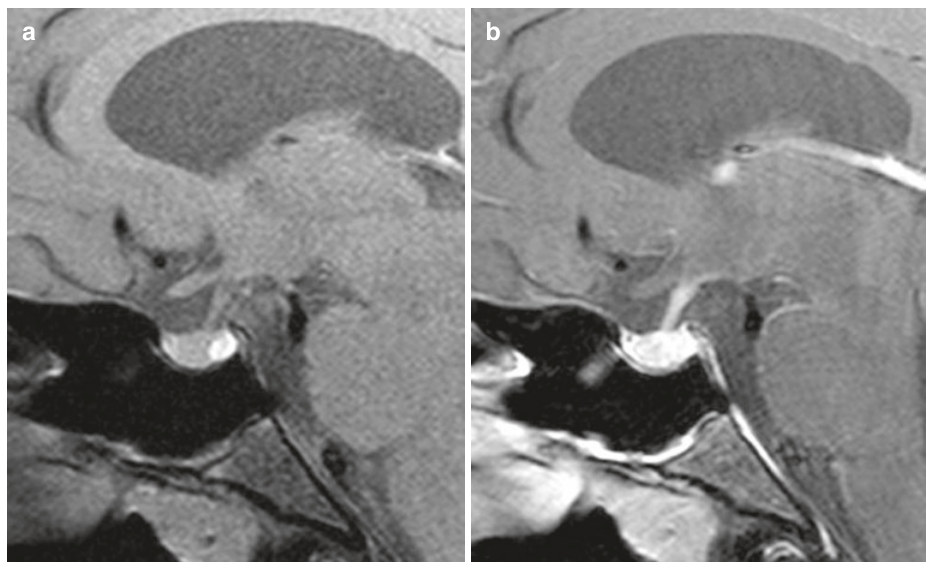
1.3 垂体腺瘤
囊性及/或坏死成分（由肿瘤血供不足所致）信号多变，但常含蛋白碎屑，在T1加权图像上可呈高信号，在T2加权图像上根据蛋白浓度可呈低至高信号。垂体大腺瘤可压迫神经垂体/垂体柄，使其侧方移位或难以显示。部分病例漏斗部受压明显致神经垂体功能上移，沿漏斗部向颅侧出现一个“新”的亮点。海绵窦受累可由压迫性生长及随之发生的内侧偶伴外侧硬膜反折所致，也可反映肿瘤真正侵犯海绵窦。若肿瘤与海绵窦之间可见正常垂体组织，则可排除侵犯。若肿瘤位于海绵窦段颈内动脉外侧（Knosp分级3A、3B和4级），则提示海绵窦侵犯。虽然催乳素瘤和生长激素（GH）分泌型腺瘤常位于蝶鞍侧方，但库欣病中的ACTH分泌型腺瘤通常体积很小，更难检出，且更多位于中线。由于该病具有较高病残率，ACTH分泌型病变需要最为细致详尽的影像学评估，以指导外科治疗。GH分泌型腺瘤具有独特特点，约三分之二的病例在T2加权图像上呈低信号，通常为致密颗粒型。GH分泌型腺瘤自发出血或坏死并不少见。部分病程晚期才确诊的肢端肥大症患者表现为蝶鞍增大、部分空蝶鞍，内衬腺瘤组织，难以分析。基于奥曲肽类似物（生长抑素）的药物治疗平均可使腺瘤体积缩小35%，并在50%的病例中使生长介素C水平恢复正常。所有垂体腺瘤中约20%可发生出血，但通常为隐匿性。垂体卒中表现为剧烈头痛、颅神经麻痹及显著的垂体功能低下，通常由大腺瘤引起。鞍区及鞍旁区域的外科手术通常采用经鼻蝶窦内镜下入路，原因如下：可使用多种器械，包括各种角度的内镜；术中可获取鼻中隔瓣以重建颅底，从而防止脑脊液漏；此外，可将显露向侧方扩展以切除鞍旁病变，并可向后经斜坡延伸达脑桥前池。术前常规进行CT检查以用于术中导航。CT还可显示骨性解剖结构，包括蝶窦内分隔的位置及其附着处，
过去十年中，垂体腺瘤的影像学检查方案基本未变，除在特定病例（如下文所述 Cushing 病中腺瘤常无法在常规序列/技术下检出）中可更常规地进行亚毫米高分辨薄层成像。获取矢状位及冠状位的平扫及增强 T1 加权像，以及冠状位 T2 加权序列。也常进行动态增强 T1 加权成像以评估微腺瘤。若常规 MRI 检查结果为阴性或可疑，而患者具有明确症状及体征（实验室检查等），可考虑采用亚毫米序列进行额外成像。垂体微腺瘤（≤10 mm）局限于蝶鞍内，在 T1 加权像上相对于正常腺垂体常呈低信号。病灶呈类圆形，当大小超过 5–6 mm 时，常使垂体柄偏离病灶侧。偶尔，垂体腺瘤可在 T1 加权像上呈高信号，通常反映内部出血。此类出血在催乳素瘤中更为常见，可为自发性或药物治疗（如溴隐亭）后出现。微腺瘤在 T2 加权像上的信号强度各异，但若相对于正常腺体呈高信号，则提示微腺瘤。在生长激素过量的临床及实验室背景下，局灶性病灶在 T2 加权像上呈低信号，高度提示致密颗粒型 GH 分泌型腺瘤。注射对比剂后，大多数垂体腺瘤表现为“差异性强化”，即其有强化但强化程度低于周围明显强化的正常腺体，因此相对呈低信号。延迟期增强成像由于微腺瘤相对于正常垂体呈较慢的“流入”曲线，可能反而掩盖微腺瘤。动态增强成像可能对部分微腺瘤（尤其是 ACTH 分泌型肿瘤）有帮助。垂体大腺瘤（定义为大于 10 mm 的肿瘤）常超出蝶鞍范围，最常见向鞍上池或海绵窦扩展。肿瘤也可向下生长，侵犯颅底骨质及蝶窦。由于经鼻内镜入路已成为鞍区及鞍旁病变手术治疗的主要方式，术前影像学检查清单中必须描述此类扩展情况。向鞍上池上方生长的大腺瘤常呈双叶“雪人”形，腰部受鞍膈束缚。大腺瘤常为含实性及囊性成分的复杂病变，在 T1 及 T2 加权像上信号不均匀。
以及术后随访。出血
1.5 Rathke 裂囊肿
Onodi 气房的存在以及蝶窦的气化程度，上述因素均可影响手术入路、患者安全，并最终决定患者预后。
无症状性 Rathke 裂囊肿是尸检及脑部 MRI 检查中常见的偶发发现。这些囊肿主要位于鞍内。对 1000 例尸检标本进行评估时，113 个垂体（11.3%）存在偶发性 Rathke 裂囊肿。一项大型尸检系列研究发现，89% 的偶发性 Rathke 囊肿位于腺体中央，其余 11% 主要为偏侧分布。在该系列中，所有位于腺体中央的偶发性垂体病变中，87% 为 Rathke 囊肿。鞍外型 Rathke 囊肿通常发生在鞍上池，多位于中线、漏斗前方。Rathke 裂囊肿可见于各年龄组。它们与部分颅咽管瘤起源相同，被认为来源于 Rathke 裂的鳞状上皮残余。囊壁由位于基底膜上的单层柱状、立方或鳞状上皮构成。上皮常可见纤毛，并可含有杯状细胞。囊内容物通常为黏液样物质，较少为浆液性液体或脱落细胞碎屑。囊壁钙化罕见。多数 Rathke 裂囊肿体积较小且无症状。当囊肿增大至足以压迫垂体或视交叉时出现症状，少见情况下可因出血而出现症状。其 MR 信号特征随囊内容物（黏液样物质的蛋白浓度）而异，约 60% 在平扫 T1 加权像上呈高信号（图 1.2a），其余约 40% 在 T1 加权及 T2 加权像上呈脑脊液样信号。“囊内结节”具有诊断意义，可见于多达 75% 的病例。这些结节由黏液样物质、蛋白及胆固醇构成，其特征性表现为 T2 加权像低信号。结节在 T1 加权像上可呈高信号且不强化。Rathke 裂囊肿本身不强化。有时可见囊壁薄壁边缘强化。对于鉴别困难的病例，此特征可有助于将其与颅咽管瘤区分开来。
1.4 术后蝶鞍
经鼻蝶窦入路术后即刻的手术腔常被填塞材料充填。术中常使用 Surgicel，其内常浸有血液及分泌物。填塞材料、分泌物和粘连通常可防止术后数天至数周内手术腔塌陷。血液、分泌物及填塞材料在随后 2–3 个月内逐渐消退。即便在术后数月，仍可在手术腔内见到浸血的 Surgicel 碎片。若术中鞍膈被破坏，外科医师会置入脂肪或肌肉植入物以防止脑脊液漏的发生。这些植入物的吸收耗时更长。植入的脂肪消退缓慢，术后最长 2–3 年内仍可在 T1 加权像上表现为高信号。术后 48 小时进行的 MRI 检查旨在排查潜在并发症，并可显示貌似残留肿瘤的征象，即信号强度与术前腺瘤相同、且常位于腺瘤周边的肿块。这一早期检查对于解读术后随访 MR 极具价值。术后 2–3 个月的磁共振成像对于评估有无肿瘤残留至关重要。在手术切除后 1～2 年或更久的随访 MRI 上，可见提示腺瘤复发的进行性增大肿块。
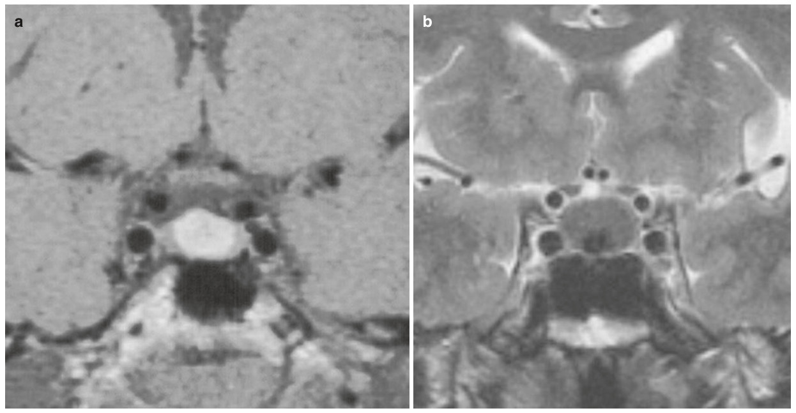
牙釉质型肿瘤几乎均为囊性，且通常同时具有实性及囊性成分。绝大多数（~90%）此类肿瘤可见钙化。这些钙化在 MRI 上常表现为沿病灶壁分布的低信号灶；然而，钙化有时难以辨别，此时 CT 检查可提供帮助。这类病变常伴有广泛的纤维化及炎症表现，因而常与邻近结构（包括颅底血管）粘连。T2 加权像上视路及下丘脑水肿是常见的伴随表现，而这一征象在垂体大腺瘤及脑膜瘤中通常不出现。由于颅咽管瘤具有炎症性及纤维性特征，术后复发常见，多发生于术后 5 年内。在少数情况下，牙釉质型颅咽管瘤可为完全实性并全部钙化。除非仔细辨别鞍上区正常解剖结构的细微变形，否则此类钙化型肿瘤在 MRI 上可被完全遗漏。增强后实性肿瘤呈中等程度强化。乳头型颅咽管瘤多见于成年患者。此类肿瘤在 MR 影像上呈实性并强化，无钙化，可发生于第三脑室内。尽管手术仍是所有颅咽管瘤的确定性治疗方式，但由于乳头型肿瘤有包膜，且易于与邻近结构及周围脑组织分离，故其复发率被认为远低于牙釉质型。
1.6 颅咽管瘤
颅咽管瘤是上皮源性的肿瘤，发生于蝶鞍及鞍上池区域，少数发生于第三脑室。颅咽管瘤约占全部颅内肿瘤的 3%，无性别倾向。颅咽管瘤为无激素分泌活性的病变，但压迫垂体柄可导致尿崩症。其发病呈双峰年龄分布，超过一半发生在儿童或青少年期，发病高峰在 5~10 岁。在成年期，于第六个十年出现第二个较小的高峰。此类肿瘤体积差异很大，最常起源于鞍上池。少数（约 5%）颅咽管瘤完全位于鞍内。最常见的颅咽管瘤为经典的釉质瘤型，多于生后前 20 年内确诊，表现为颅内压增高的症状与体征，包括头痛、恶心、呕吐及视乳头水肿。因视路受压所致的视力障碍常见，但在幼儿中难以察觉。其他患者可因垂体、垂体柄或下丘脑受压而出现垂体功能减退。少数釉质瘤型肿瘤可发生于鞍上池以外部位，包括后颅窝、松果体区、第三脑室及鼻腔（蝶窦）。
1.7 脑膜瘤
脉的包绕方式具有诊断价值。脑膜瘤通常会缩窄被包绕动脉的管腔（但不会使其闭塞）。这一征象在其他肿瘤中罕见，最值得注意的是向侧方生长侵入海绵窦的垂体大腺瘤。
约 10% 的脑膜瘤发生于鞍旁区域。这些肿瘤可起源于蝶鞍周围的多个部位，包括鞍结节、蝶骨平台、鞍突、蝶骨大翼内侧及海绵窦。脑膜瘤通常生长缓慢，因压迫邻近结构而出现症状，最常累及视交叉前方的视神经和视交叉，导致视力症状。在平扫 T1 加权序列上，脑膜瘤最常表现为与灰质呈等信号，较少为低信号。在 T2 加权序列上，约 50% 仍呈等信号，而 40% 呈高信号。脑膜瘤强化明显且均匀，常见以增厚硬膜为尾部的"硬膜尾征"。其他诊断征象包括显示肿瘤与脑组织之间存在脑脊液裂隙（提示其位于脑外位置），以及肿瘤与垂体之间界限清晰（由此表明肿瘤并非起源于垂腺）（图 1.3）。在这些脑膜瘤边缘偶尔可见的周围低信号环被认为与周围的静脉有关。骨质增生和钙化在 CT 上更为明显。血管包绕并不少见，尤其是位于海绵窦内的脑膜
1.8 视交叉及下丘脑胶质瘤
视交叉胶质瘤与下丘脑胶质瘤的区分常取决于病变的主要位置。在多数情况下，大型胶质瘤的确切起源难以确定；因此，下丘脑胶质瘤和视交叉胶质瘤作为单一疾病实体一并讨论。绝大多数（75%）此类肿瘤发生于生后第一个十年，男女发病率相等。视神经及视交叉胶质瘤与神经纤维瘤病之间存在明确的相关性，尤其是起源于视神经而非视交叉或下丘脑的肿瘤。起源于视交叉的肿瘤较起源于视神经者更具侵袭性，倾向于侵犯下丘脑和第三脑室底。患者可出现单眼或双眼视力障碍、脑积水或下丘脑功能障碍。肿瘤的表现取决于其位置和生长方向。肿瘤可局限于视交叉或下丘脑；然而由于其生长缓慢，至就诊时肿瘤通常体积已较大，起源部位常常难以判断。较小的神经及视交叉肿瘤与下丘脑在影像上有较明显的分界，其起源部位更为明确。从鉴别诊断的角度，这些较小的肿瘤难以与视神经炎鉴别，因为后者也可引起视神经增粗。此类情况下，临床病史非常重要（视神经炎有疼痛，肿瘤则无），必要时对视神经炎进行间隔随访可观察到视神经肿胀的消退。在 T1 加权图像上，这些肿瘤最常呈等信号，而在 T2 加权图像上呈中等程度的高信号。钙化和出血并非此类胶质瘤的特征，但可见囊性成分，尤以较大的下丘脑肿瘤多见。约一半病例出现强化。由于该肿瘤已知可沿视放射侵入脑实质，必须对全脑进行 T2 加权成像。这种肿瘤扩展方式在 T2 加权图像上表现为高信号而易于识别；然而神经纤维瘤病（NF）患者在鉴别诊断时存在困难。这是因为 NF 患者中良性大脑错构瘤和非典型胶质细胞残余的发生率高，其表现可与胶质瘤完全相同。二者在 T2 加权图像上均表现为视放射分布区
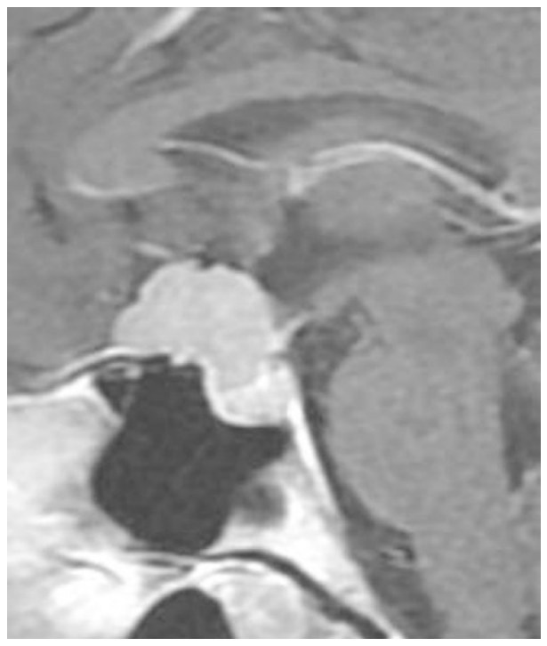
内的高信号区。缺乏间隔生长的表现，且可能不出现强化，更支持错构瘤的诊断；而出现强化则提示胶质瘤。
关于垂体脓肿的 CT 报道较少。这些报道指出，病变的表现与腺瘤相似。术前正确诊断脓肿较为困难，罕有确诊者。平扫 MRI 显示鞍区肿块，与腺瘤无法区分。偶有垂体脓肿与原发性垂体病变无关者。在这些病例中，侵袭性蝶窦炎造成的骨性蝶鞍侵蚀可能是感染的入侵途径。
1.9 转移瘤
在 1%–5% 的癌症患者中可发现症状性垂体转移。这些患者主要为晚期播散性恶性肿瘤者，尤其是乳腺癌和肺癌。鞍内及鞍旁转移通过血行播散至垂体和垂体柄、骨转移的蔓延以及脑脊液播散而产生。转移瘤并无特征性 MRI 表现，但漏斗部受累较常见，且颅底受累病变以骨质破坏为主要特征。鞍区转移常被误诊为垂体腺瘤。除评估其鉴别性影像特征外，与腺瘤不同，转移瘤常伴发尿崩症。
1.11 非感染性炎性病变
淋巴细胞性垂体炎是一种少见的垂体非感染性炎症性疾病。该病几乎仅见于女性，尤其好发于妊娠晚期或产后。在围产期出现垂体肿块的患者，尤其是垂体功能减退程度超过肿块大小所预期者，应考虑该诊断。据认为，如不治疗，疾病将导致全垂体功能减退。临床上患者主诉头痛、视力下降、无法泌乳或上述症状的某些组合。垂体激素水平降低。MRI 显示垂体前叶弥漫性增大，无局灶性异常或腺体内在信号改变。垂体柄亦可增厚。累及下丘脑-垂体轴的结节病临床上通常表现为尿崩症，或偶为一种或多种垂体前叶激素缺乏。T2 加权像上呈低信号是结节病相对常见而其他疾病（少数例外，如其他肉芽肿性炎症、淋巴瘤、部分脑膜瘤）罕见的征象，该低信号征象有助于鉴别诊断。此外，出现多发散在的脑实质内病灶应考虑本病诊断，基底脑膜的弥漫性或多灶性病变亦然；后者以冠状位增强 T1 加权像显示最佳。Tolosa-Hunt 综合征（THS）是指由海绵窦炎性病变引起的、对糖皮质激素治疗有效的痛性眼肌麻痹。病理上该过程与眼眶假瘤相似。本病影像学表现常为正常或仅见细微异常，如患侧海绵窦外缘膨隆、脑桥前池强化或眶尖软组织密度异常。T2 加权像可呈低信号；由于除少数疾病（如脑膜瘤、淋巴瘤及结节病）外此征象并不常见，因此有助于诊断。临床病史可进一步提高鉴别诊断的精确度——脑膜瘤对糖皮质激素治疗无反应，而淋巴瘤和结节病几乎所有病例均存在其他部位受累的证据。
1.10 感染
鞍上池和海绵窦的感染通常为播散性病变的一部分，或由颅外感染向颅内扩展所致。鞍上池内及其周围的基底脑膜易受结核性及其他类型肉芽肿性脑膜炎累及。该池亦可为寄生虫性囊肿的寄生部位，尤其是（葡萄状和蛛网膜下腔型）脑囊虫病。在海绵窦感染中（多伴血栓性静脉炎），CT 和 MRI 影像学表现为患侧海绵窦外缘呈隆起状，注射对比剂后可见充盈缺损。炎症性改变包绕颈内动脉海绵窦段亦可使其变窄。垂体本身的感染较为少见。腺垂体的直接病毒感染从未得到证实，细菌感染也属罕见。据推测，获得性尿崩症病例可能为下丘脑视上核和室旁核选择性病毒感染所致。以往因这些疾病在人群中的总体患病率较高而在本区域常见的结核和梅毒，现已少见。革兰阳性球菌是脑垂体脓肿中最常检出的病原体。垂体脓肿通常发生于鞍区其他肿块（如腺瘤、Rathke 裂囊肿及颅咽管瘤）的基础上，提示这些肿块为感染易感因素。
1.12 血管性病变
其血管特性可导致意外出血。在实体性鞍上区肿块的鉴别诊断中，应考虑海绵状血管瘤的可能，特别是当病灶缺乏更常见病变的典型特征（如颅咽管瘤或脑膜瘤）时。在 MRI 上，T2 加权像有助于鉴别，因为血管瘤相较于脑膜瘤常呈明显 T2 高信号，且血管瘤可出现周围低信号环。鞍区其他血管异常包括单侧迂曲或双侧"对吻"型颈内动脉以及内侧型三叉动脉。前者影像表现相对简单，而内侧型三叉动脉值得牢记。与鞍内动脉瘤类似，若术中未能识别鞍内动脉的存在，内侧型三叉动脉亦可导致严重的神经外科并发症。该动脉自海绵窦段颈内动脉内侧壁发出，向后方直接穿经腺体及鞍背，与基底动脉相连。三叉动脉约 40% 起自内侧。此外，伴有三叉动脉的患者发生颅内动脉瘤的风险增加。最后，颈内动脉先天性缺如以及蝶骨与蝶鞍的气化不对称亦可造成影像判读困难。
鞍区及鞍旁的囊性动脉瘤起源于颈内动脉的海绵窦段或床突上段。识别此类病变极为重要，若将其误判为实性肿瘤可导致严重的手术并发症。幸运的是，其 MRI 表现具有特征性。动脉瘤边界清晰，在自旋回波（SE）序列上瘤腔内无信号，即所谓由血流快速流动所致的"流空信号"。此种血流常在图像上产生伪影，通常表现为相位编码方向上的多重幻影，这本身即是一项有价值的诊断征象。动脉瘤腔内血栓形成则会根本改变上述特征性表现，血栓通常在 T1 加权像上呈层状高信号，部分或完全充填管腔。邻近脑组织中可因浅表铁质沉积而出现含铁血黄素，在 T2 加权像、梯度回波像或磁敏感加权像上表现为低信号。MR 或 CT 血管成像可用于明确诊断、确定动脉瘤颈以及评估动脉瘤与主要血管的关系。颈动脉海绵窦瘘为颈动脉与海绵窦之间的异常交通，大多数由外伤引起，较少情况下为"自发性"。自发性病例可由多种病因所致，包括动脉壁动脉粥样硬化性退变、动脉中层先天性缺损或海绵窦内颈内动脉瘤破裂。海绵窦区硬脑膜动静脉畸形（AVM）是该区域另一种异常动静脉（AV）交通形式。在 MRI 上，静脉结构（尤其是眼静脉及海绵窦）的扩张通常清晰可见。无论是直接型还是间接型颈动脉海绵窦瘘，鞍间静脉通道均会扩张，且可在 MR 图像上显示。此外，海绵窦内部结构亦发生改变；由于窦内动脉性血流速率增高，可见明确的流空信号。瘘口本身在 MRI 上大多难以显示。已注意到在硬脑膜动静脉瘘患者中，垂体可呈肿大表现，而无内分泌功能障碍的证据。垂体增大的确切机制尚不清楚，但静脉淤血被认为是可能的病因。海绵状血管瘤为获得性病变，并非真性血管畸形，罕见发生于鞍上池内。其影像表现可不典型，因此对鞍旁肿块的鉴别诊断需保持谨慎。尽管该部位海绵状血管瘤罕见，若外科医生未能充分认识其血管特性，则可导致意外出血。
1.13 鞍区及鞍旁区域的其他病变
许多其他病变可累及蝶鞍及鞍旁区域，包括生殖细胞瘤、上皮样囊肿、皮样囊肿、畸胎瘤、神经鞘瘤、脊索瘤、外胚层基质残留、迷离瘤、蛛网膜囊肿、错构瘤、IgG4 相关性疾病以及朗格汉斯细胞组织细胞增生症等肿块性病变。此外，尚有若干重要的代谢性疾病可导致垂体功能障碍或引起鞍内及鞍旁 MRI 可观察到的异常，包括尿崩症、生长激素缺乏症、血色病、高镁血症及甲状腺功能减退症。由于篇幅所限，本概要不再进一步讨论。
1.14 小结
Chapman PR, Singhal A, Gaddamanugu S, Prattipati V. Neuroimaging of the pituitary gland: practical anatomy and pathology. Radiol Clin N Am. 2020;58(6):1115–33. Chatain GP, Patronas N, Smirniotopoulos JG, Piazza M, Benzo S, Ray-Chaudhury A, Sharma S, Lodish M, Nieman L, Stratakis CA, Chittiboina P. J Neurosurg. 2018;129(3):620–8. Kucharczyk W, Peck WW, Kelly WM, Norman D, Newton TH. Rathke cleft cysts: CT, MR imaging and pathologic features. Radiology. 1987;165:491–5. Langlois F, Varlamov EV, Fleseriu M. Hypophysitis, the growing spectrum of a rare pituitary disease. J Clin Endocrinol Metab. 2022;107(1):10–28. Lundin P, Bergström K, Nyman R, Lundberg PO, Muhr C. Macroprolactinomas: serial MR imaging in long term bromocriptine therapy. AJNR Am J Neuroradiol. 1992;13:1279–91. Manara R, Maffei P, Citton V, et al. Increased rate of intracranial saccular aneurysms in acromegaly: an MR angiography study and review of the literature. J Clin Endocrinol Metab. 2011;96(5):1292–757. Nagahata M, Hosoya T, Kayama T, Yamaguchi K. Edema along the optic tract: a useful MR finding for the diagnosis of craniopharyngiomas. AJNR Am J Neuroradiol. 1998;19:1753–7. Naylor MF, Scheithauer BW, Forbes GS, Tomlinson FH, Young WF. Rathke cleft cyst: CT, MR, and pathology of 23 cases. J Comput Assist Tomogr. 1995;19(6):853–9. Oka H, Kawano N, Suwa T, Yada K, Kan S, Kameya T. Radiological study of symptomatic Rathke’s cleft cysts. Neurosurgery. 1994;35(4):632–6. Pinker K, Ba-Ssalamah A, Wolfsberger S, Mlynarik V, Knosp E, Trattnig S. The value of high-field MRI (3T) in the assessment of sellar lesions. Eur J Radiol. 2005;54(3):327–34. Steiner E, Knosp E, Herold CJ, et al. Pituitary adenomas: findings of postoperative MR imaging. Radiology. 1992;185:521–7. Teramoto A, Hirakawa K, Sanno N, Osamura Y. Incidental pituitary lesions in 1000 unselected autopsy specimens. Radiology. 1994;193:161–4. Wolfsberger S, Ba-Ssalamah A, Pinker K, Mlynárik V, Czech T, Knosp E, Trattnig S. Application of three-tesla magnetic resonance imaging for diagnosis and surgery of sellar lesions. J Neurosurg. 2004;100(2):278–86.
理解垂体及垂体柄的生理学，以及蝶鞍和周围结构的解剖学非常重要。每一区域（蝶鞍、鞍上池、海绵窦）通常有 3 或 4 种常见病变。掌握解剖、生理并熟悉这些病变，可使影像学正确诊断的概率大大提高。
扩展阅读
Araujo-Castro M, Acitores Cancela A, Vior C, Pascual-Corrales E, Rodrígue Berrocal V. Radiological Knosp, revised-Knosp, and Hardy–Wilson classifications for the prediction of surgical outcomes in the endoscopic endonasal surgery of pituitary adenomas: study of 228 cases. Front Oncol. 2022;11:807040. Byun WM, Kim OL, Kim D. MR imaging findings of Rathke’s cleft cysts: significance of intracystic nodules. AJNR Am J Neuroradiol. 2000;21(3):485–8.
开放获取 本章根据 Creative Commons Attribution 4.0 International License（http://creativecommons.org/licenses/by/4.0/）授权，允许在任何媒介或格式中以原样使用、共享、改编、发行和复制，前提是注明原作者及来源、提供指向 Creative Commons 许可证的链接，并说明是否进行了修改。本章中的图像或其他第三方材料包含在相应章节的 Creative Commons 许可证范围内，除非材料信用行另有说明。如果所用材料不在本章的 Creative Commons 许可证范围内，且您的预期用途超出法定许可范围，则需直接获得版权所有者的授权。
Araujo-Castro M, Acitores Cancela A, Vior C, Pascual-Corrales E, Rodrígue Berrocal V. Radiological Knosp, revised-Knosp, and Hardy–Wilson classifications for the prediction of surgical outcomes in the endoscopic endonasal surgery of pituitary adenomas: study of 228 cases. Front Oncol. 2022;11:807040. Byun WM, Kim OL, Kim D. MR imaging findings of Rathke’s cleft cysts: significance of intracystic nodules. AJNR Am J Neuroradiol. 2000;21(3):485–8. Chapman PR, Singhal A, Gaddamanugu S, Prattipati V. Neuroimaging of the pituitary gland: practical anatomy and pathology. Radiol Clin N Am. 2020;58(6):1115–33. Chatain GP, Patronas N, Smirniotopoulos JG, Piazza M, Benzo S, Ray-Chaudhury A, Sharma S, Lodish M, Nieman L, Stratakis CA, Chittiboina P. J Neurosurg. 2018;129(3):620–8.
Kucharczyk W, Peck WW, Kelly WM, Norman D, Newton TH. Rathke cleft cysts: CT, MR imaging and pathologic features. Radiology. 1987;165:491–5.
Langlois F, Varlamov EV, Fleseriu M. Hypophysitis, the growing spectrum of a rare pituitary disease. J Clin Endocrinol Metab. 2022;107(1):10–28.
Lundin P, Bergström K, Nyman R, Lundberg PO, Muhr C. Macroprolactinomas: serial MR imaging in long term bromocriptine therapy. AJNR Am J Neuroradiol. 1992;13:1279–91.
Manara R, Maffei P, Citton V, et al. Increased rate of intracranial saccular aneurysms in acromegaly: an MR angiography study and review of the literature. J Clin Endocrinol Metab. 2011;96(5):1292–757.
Nagahata M, Hosoya T, Kayama T, Yamaguchi K. Edema along the optic tract: a useful MR finding for the diagnosis of craniopharyngiomas. AJNR Am J Neuroradiol. 1998;19:1753–7. Naylor MF, Scheithauer BW, Forbes GS, Tomlinson FH, Young WF. Rathke cleft cyst: CT, MR, and pathology of 23 cases. J Comput Assist Tomogr. 1995;19(6):853–9.
Oka H, Kawano N, Suwa T, Yada K, Kan S, Kameya T. Radiological study of symptomatic Rathke’s cleft cysts. Neurosurgery. 1994;35(4):632–6.
Pinker K, Ba-Ssalamah A, Wolfsberger S, Mlynarik V, Knosp E, Trattnig S. The value of high-field MRI (3T) in the assessment of sellar lesions. Eur J Radiol. 2005;54(3):327–34.
Steiner E, Knosp E, Herold CJ, et al. Pituitary adenomas: findings of postoperative MR imaging. Radiology. 1992;185:521–7.
Teramoto A, Hirakawa K, Sanno N, Osamura Y. Incidental pituitary lesions in 1000 unselected autopsy specimens. Radiology. 1994;193:161–4.
Wolfsberger S, Ba-Ssalamah A, Pinker K, Mlynárik V, Czech T, Knosp E, Trattnig S. Application of three-tesla magnetic resonance imaging for diagnosis and surgery of sellar lesions. J Neurosurg. 2004;100(2):278–86.
脑脊液相关疾病的诊断思路
脑脊液相关疾病的诊断思路
Tomas Dobrocky 和 Àlex Rovira
梗阻性脑积水。交通性脑积水。自发性颅内低压（SIH）。正常压力性脑积水。
自发性颅内低压（SIH）是一种使人虚弱的医学状态，因脊柱水平脑脊液（CSF）的持续丢失而持续存在，是表现为体位性头痛患者的首要鉴别诊断。神经影像学在SIH的诊断评估及监测中起着关键作用，可在多种临床表现及腰穿开放压常正常的情况下提供客观依据。脑部MRI常显示典型的CSF容量减少征象，包括硬脑膜均匀强化、静脉扩张、硬膜下积液及脑下沉。可将CSF漏分为三种类型：（1）由微小骨刺引起的腹侧硬膜漏；（2）脊神经根袖囊肿漏；（3）直接的CSF-静脉瘘。寻找漏口常如同大海捞针，需仔细检查整个脊柱，寻找常如针尖大小的硬膜破损。脊柱影像学的主要作用是正确分类并精确定位CSF漏点。CSF漏点的精确定位对治疗成功至关重要，治疗通常为靶向经皮硬膜外贴片，保守治疗无效时则行手术封堵。
T. Dobrocky (*) 诊断与介入神经放射科，瑞士伯尔尼 电子邮箱：tomas.dobrocky@insel.ch
À. Rovira 神经放射科，放射科，西班牙巴塞罗那 Vall d’Hebron 大学医院 电子邮箱：alex.rovira.idi@gencat.cat
现代影像技术在理解脑脊液（CSF）间隙及脑室系统的解剖，以及CSF流动的流体动力学，进而评估不同类型脑积水中发挥着重要作用。梗阻性（非交通性）脑积水是一种复杂的疾病，由脑室之间一个或多个狭窄连通处的CSF循环梗阻/阻塞所致，是儿童及青年中最常见的脑积水类型。另一方面，交通性脑积水定义为脑室系统外CSF循环异常所导致的脑室扩大。大多数病例继发于基底池至脑凸面之间CSF流动受阻，包括蛛网膜下腔出血和脑膜炎（感染性及肿瘤性）等常见疾病。在一部分交通性脑积水中，无法证实CSF梗阻，如正常压力脑积水（NPH），这是一种CSF动力学机制尚不明确的复杂疾病。神经放射学在脑积水的诊断中起着重要作用，可将其与其他原因所致的脑室扩大相鉴别。
2.1 自发性颅内低压（SIH）
2.1.1 临床表现
SIH 的发病率为 5/100,000，几乎与动脉瘤性蛛网膜下腔出血的发病率相当 [4]。女性的发病率约为男性的两倍。SIH 的经典临床特征为体位性头痛，立位时强度增加，平卧时减轻。这最可能是由于硬膜中的痛觉敏感纤维受牵拉所致，立位时更为明显。然而，在疾病的亚急性和慢性期，体位性特征可能变得不那么明显，可出现其他非体位性头痛形式，包括霹雳样头痛、非体位性头痛、活动相关头痛、咳嗽相关头痛及“午后头痛”等 [5]。其他临床症状包括颈部疼痛、耳鸣、听力改变、眩晕、恶心和复视。其中部分症状被认为是由于脑下垂导致脑神经受牵拉所致。SIH 的其他罕见表现包括因垂体增大引起的内分泌障碍、意识水平下降或昏迷，最可能是由于回流受限导致大脑内静脉继发血栓形成 [6–8]。
2.1.2 病因学
在颅腔和椎管内总共循环约 100–150 mL 脑脊液。脑脊液包绕脑实质和脊髓，提供保护、浮力以及清除代谢废物的通道。脑脊液密封于硬膜腔内，并维持着产生与吸收之间的精确平衡。产生或吸收的扰动会打破此平衡并引起症状。根据 Monro-Kellie 法则，颅腔内容物的总体积恒定，等于血液、脑脊液和脑实质三者体积之和。一个腔室的体积减少将由另一个或两个其他腔室的体积代偿性增加来补偿。在 SIH 患者中，脑脊液丢失主要导致血容量增加，这在脑和脊柱影像上可表现为静脉扩张和充血 [9, 10]。需注意的是，尽管经典临床表现为头痛，但疾病的根本病因仅存在于脊柱层面。颅底水平的脑脊液漏通常不伴有 SIH 症状 [11]。脑脊液漏可分为三种类型（表 2.1）[12, 13]。Ⅰ型漏由穿透硬膜的成骨性微刺（终板骨赘或钙化椎间盘突出）所致。Ⅱ型漏由脊髓神经根囊肿漏所致。Ⅲ型漏为
所谓脑脊液-静脉瘘，即鞘膜内间隙与硬膜外/椎旁静脉之间的直接通道 [14, 15]。在 Ⅰ 型和 Ⅱ 型漏中，脊柱纵
| 病因 | 脑部 MRI 影像 | 脊柱 MRI 影像 |
|---|---|---|
| 1 型：骨性微嵴（终板骨赘、钙化性椎间盘突出） | 脑 SIH 评分（Bern 评分）• 主要标准（2 分）1. 静脉扩张 2. 硬脑膜增厚强化 3. 鞍上池（≤ 4 mm）• 次要标准（1 分）4. 硬膜下积液 5. 桥前池（≤ 5 mm）6. 乳头体-脑桥距离（≤ 6.5 mm） | 筛查脊柱纵向硬膜外脑脊液聚集（SLEC）SLEC 阳性（ |
| 其他表现：垂体增大、（幕下）浅表性铁质沉着、颅骨肥厚 | 首先行 T2 加权脂肪抑制 MRI MRI 对脑脊液漏无定位价值 |
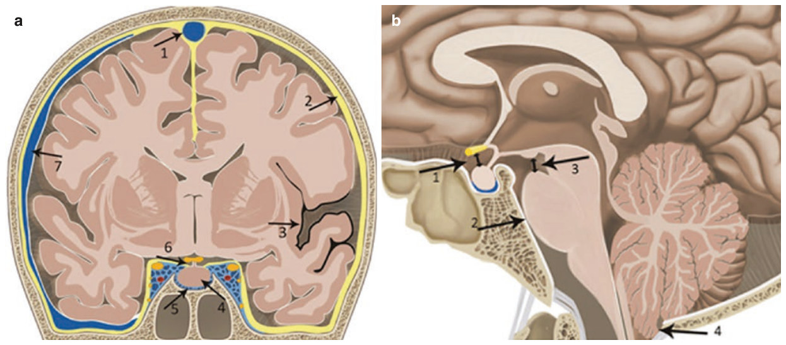
常伴有脊柱长轴硬膜外脑脊液聚集（SLEC），因此可视为"湿性漏"。而 III 型漏不伴有脊柱长轴硬膜外脑脊液聚集，可视为"干性漏"。
2.1.3 诊断流程
2.1.3.1 头颅 MRI
SIH 患者的诊断流程通常以头颅 MRI 开始。如 Schievink 所述，最典型表现包括硬膜下积液、硬脑膜强化、静脉结构扩张、垂体充血以及脑组织下沉（记忆口诀：SEEPS）[16]（图 2.1）。在长期（未经治疗）的 SIH 中还可见其他影像学征象，包括表层铁质沉着、颅骨肥厚或鼻旁窦扩大[17, 18]。2018 年提出了基于头颅 MRI 的 9 分制 SIH 评分（bSIH），用于对临床上疑似 SIH 的患者发现脊柱脑脊液漏的可能性进行分层（表 2.1）[10]。该评分包含 3 个主要征象（各 2 分）和 3 个次要征象（各 1 分）。主要征象为硬脑膜强化、静脉窦扩张以及鞍上池受压（≤4.0 mm）。次要征象为硬膜下积液、脑桥前池受压（≤5.0 mm）以及乳头体-脑桥间距缩短
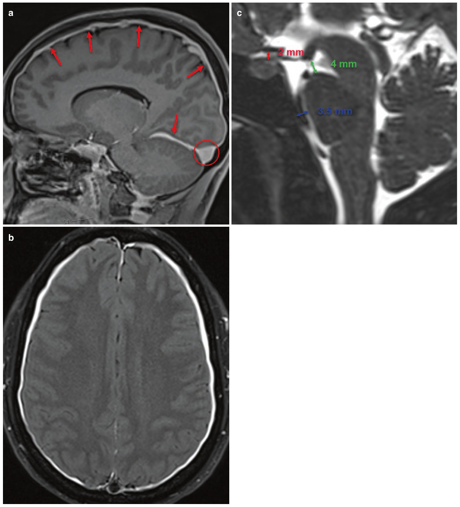
距离（≤6.5 mm）（图 2.2）。基于 bSIH 评分 ≤2、3–4 和 ≥5，脊髓造影发现 CSF 漏或 CSF-静脉瘘的概率分别为低、中、高 [10, 19].
近，该评分被称为 Bern SIH 评分。它已作为定量工具用于 CSF 漏手术闭合后以及 CSF-静脉瘘血管内治疗后的疗效监测 [20, 21].
2.1.3.2 脊柱成像
脑脊液静脉瘘（CSFVF）的成像技术在过去几年间不断发展，已提出该技术的多种变体。已有报道指出，脊髓造影时采用侧卧位并嘱患者持续吸气可提高诊断阳性率 [29,30] 。脑脊液静脉瘘可表现为自神经根囊肿延伸至硬膜外或椎旁静脉的管状强化结构（
识别并精确定位脑脊液漏是脊柱成像的主要目的。这一过程仍然充满挑战，因为寻找漏口无异于大海捞针——需要在整个脊柱范围内仔细寻找一处通常仅有针尖大小的硬膜破损。脊柱评估中已采用多种成像方式：脊柱平扫 MRI、鞘内钆增强脊柱 MRI、传统动态脊髓造影、脊髓造影后 CT、动态 CT 脊髓造影以及数字减影脊髓造影 [22] 。尽管对本章而言详细讨论这些技术超出了范围，但每种模态各有其独特优势（空间/时间分辨率）和不足之处（鞘内应用对比剂、辐射暴露），均需加以权衡。当脑 MRI 阳性或临床高度怀疑 SIH 时，应将全脊柱平扫 MRI 作为首选诊断步骤 [23] 。脊柱检查应包括 T2 加权、脂肪抑制、高分辨率图像（图 2.3a），有助于识别任何硬膜外脑脊液积聚，从而区分
2.1.4 治疗
对 SIH 患者的治疗通常采用三级治疗模式，其侵入性逐级递增，包括保守治疗（卧床休息或咖啡因）、硬膜外贴片（靶向或非靶向）的经皮治疗以及脑脊液漏或瘘的外科或血管内闭合。文献中报道的保守措施包括卧床休息、口服补液及口服咖啡因，但在大多数 SIH 患者中难以提供长期缓解。当保守治疗失败时，可应用非靶向或靶向的影像引导下硬膜外血贴。非靶向硬膜外血贴（EBP）是一种微创、易于实施的有效对症治疗，可在相当数量的 SIH 患者中提供短期缓解。然而，一项近期队列研究表明，其永久封闭脊柱脑脊液漏的成功率较低（<30%），这或许可解释高延迟复发率的原因 [33] 。文献中报道的 EBP 单次有效率介于 36% 至 88% 之间。EBP 疗效差异显著的原因是多方面的。首先，各研究间技术差异很大，取决于注入物的量（低容量或高容量）、类型（自体血或纤维蛋白）、注射节段数量、注射方式（靶向与非靶向）以及应用方式（影像引导与非引导）。其次，多项研究未区分 SIH 漏类型、PDPH 及直立性头痛的其他可能病因。第三，结局指标存在异质性，主要报告头痛严重程度的短期改善（<3 个月）。然而，长期随访及客观指标往往被忽视。最终，对于难治性 SIH，显微外科探查并封闭硬膜破损是首选治疗方式 [34,35] 。为减少术中骨切除范围，必须借助动态成像将硬膜裂口精确定位于单一椎体水平，这是该治疗成功的关键。近期，Brinjikji 等提出了一种
脂肪抑制矢状位图像
积聚（SLEC）。后侧硬膜清晰可见（红色箭头）。（b）侧卧位脊髓造影显示 T11 水平异常扩大的神经根囊肿型 2 型漏（红圈），鞘内对比剂溢入邻近硬膜外间隙（绿色箭头）。（c）俯卧位常规动态脊髓造影显示 T12 水平鞘内对比剂（蓝色箭头）溢入腹侧硬膜外间隙（红色箭头）。（d）脊髓造影后 CT 显示一源自背侧终板并穿透硬膜的微骨赘
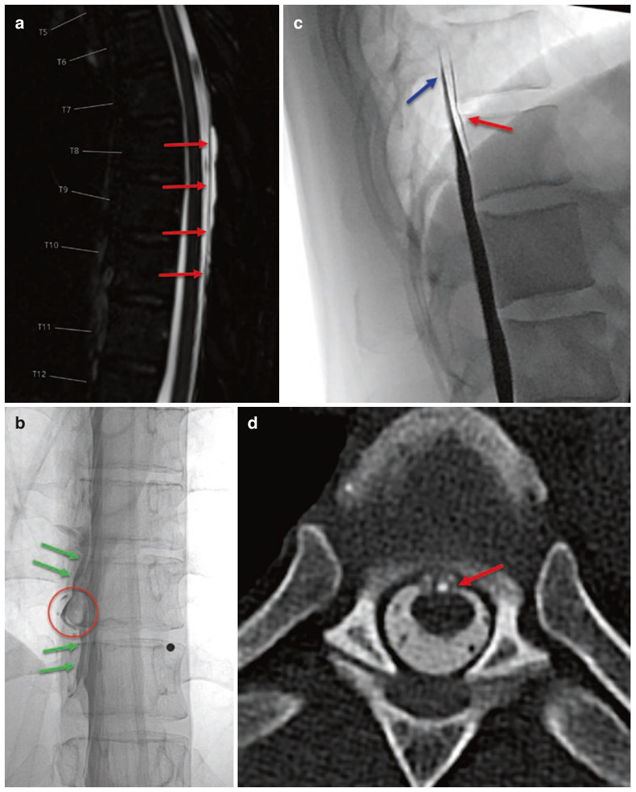
2.1.5 小结
经静脉栓塞脑脊液静脉瘘，结果非常令人鼓舞 [36]。一项纳入 139 项研究的关于 SIH 患者 EBP 或手术疗效的近期系统综述报告，总体证据强度较低 [37]。共有 38% 的研究未明确符合 ICHD-3 标准，78% 的研究中脑脊液漏类型不明确，而近全部（85%）的研究使用未经验证的指标来报告患者症状。仍需开展前瞻性随机临床试验以明确硬膜外血贴片和手术治疗 SIH 患者的有效性。
由于头痛专科医生（包括但不限于神经内科、神经放射科和神经外科医生）对本病的认识不断提高，SIH 的检出率日益增加。SIH 典型表现为体位性头痛，若不治疗，患者可能承受心理负担甚至陷入绝望。与 SIH 这一名称所暗示的不同，真正的低颅压并非可靠的疾病标志，这凸显了识别客观但常较隐匿的影像学征象的重要性。必须对患者进行细致、标准化的诊断评估，以发现本病的影像学征象并提供有效治疗。
梗阻性脑积水。交通性脑积水。正常 2.2
压力性脑积水
2.2.1 脑积水
脑积水目前定义为脑室扩张伴脑室外蛛网膜下腔容积减小。脑室扩张的程度以及对脑组织造成的损害取决于多种因素，如脑积水的病因、起病速度及患者年龄。CT 和 MRI 的先后问世，使我们能够获取关于脑积水的详细解剖学和生理学信息，并依据其发病机制（非交通性与交通性）建立分类，这一事实在治疗上具有显而易见的指导意义（表 2.2）。通常脑部 CT 是首选影像学检查方法，尤其在急性脑积水的急诊病例中。然而，MRI 是对本病进行详细评估的首选方法。除非怀疑肿瘤性或炎性病变，否则诊断时无需注射对比剂。梗阻性脑积水患者诊断检查的主要目的是寻找阻碍脑室内脑脊液（CSF）流动的病变，并将其与交通性脑积水以及脑萎缩等其他非脑积水性脑室扩大原因相鉴别 [38, 39]。除常规结构性 MRI 序列外，在脑积水评估中还应考虑其他专用序列 [40, 41]。心电门控相位对比 MRI（PC-MRI）对脑脊液流动极为敏感，已被证明在显示脑室内脑脊液循环通畅性（特别是中脑导水管通畅性）方面具有价值，但不能提供脑脊液通路的解剖学信息。3D T2加权序列（如 CISS（稳态构成干扰序列）或 FIESTA（快速成像稳态采集序列））可提供卓越的解剖学信息，与 3D T2加权 turbo/fast 自旋回波序列（如 SPACE（应用不同翻转角演化优化对比的采样完美序列）、VISTA（各向同性容积 turbo 自旋回波采集序列）或 CUBE）对脑脊液流动高度敏感，可轻松评估脑脊液通路及循环情况，从而判断脑脊液循环的通畅性 [41]。研究表明，这些序列对于脑脊液通畅性可提供与电影 PC-MRI 相当的形态学及类似功能性信息 [42]，应将其纳入临床中评估脑脊液循环通畅性的影像学策略（表 2.3；图 2.4）。
| 非交通性（梗阻性） | 交通性 |
|---|---|
| 任何从外侧压迫脑室孔的病变或以下水平的脑室内梗阻性病变：1. Monro 孔：胶样囊肿、肿瘤（室管膜瘤、室管膜下瘤、中枢神经细胞瘤、神经胶质肿瘤）、粘连 2. 中脑导水管：• 非肿瘤性管腔内病变（特发性/先天性/炎症性）：网状结构/粘连/分叉畸形、囊肿 • 导水管周围病变：松果体肿瘤、中脑顶盖胶质瘤、小脑幕脑膜瘤、转移、感染（脑膜炎/室管膜炎、脓肿）、脑血管畸形（大脑大静脉动脉瘤）• 中脑巨大囊性 Virchow-Robin 间隙 3. 第四脑室隔离症（第四脑室所有脑脊液通道包括 Luschka 孔和 Magendie 孔以及导水管均发生梗阻）：既往脑积水脑室分流术后、感染、脑室内出血、后颅窝手术后炎症性改变 4. 第四脑室出口：小脑梗死、后颅窝肿瘤（转移瘤、脑膜瘤、星形细胞瘤、髓母细胞瘤）、出血、脑膜炎、Dandy–Walker 畸形 5. 枕骨大孔：代谢性疾病、发育异常、Chiari 畸形、骨软骨发育不良 | 脑脊液吸收障碍：• 蛛网膜下腔出血 • 脑膜炎——细菌性、无菌性 • 软脑膜癌病 • 前庭神经鞘瘤所致脑脊液吸收障碍：正常压力脑积水（NPH） • 继发性（sNPH）：蛛网膜下腔出血、脑膜炎 • 特发性（iNPH） |
1. 脑室扩大，可通过 Evans 指数进行量化。Evans 指数是指在轴位 CT 和 MRI 图像上，侧脑室额角最大宽度与同层面颅骨最大内径的比值。>0.3 被视为异常。2. 颞角扩张——脑积水非常敏感的征象。颞角最先扩张，这是因为脉络膜裂对扩张的阻力相对较小，而基底节对侧脑室起到相对的“填塞”作用。3. 第三脑室隐窝扩张。4. 乳头体-脑桥距离缩短。5. 胼胝体向上弓起并变薄。6. 皮质脑沟不成比例地变窄，但若既往已存在增宽，也可表现正常。
| • | 2D/3D 矢状位平扫 T1 加权（多平面重建） |
| • | 2D 轴位 T2 加权 |
| • | 2D 横轴位/3D 矢状位 T2-FLAIR |
| • | 3D 矢状位 CISS/FIESTA |
| • | 3D 矢状位 T2 加权 SPACE/VISTA/CUBE |
| • | 2D/3D 磁敏感序列 |
| 如果存在 | 怀疑感染性脑膜炎或软脑膜转移时加扫： |
| • | 2D 横轴位/3D 矢状位增强 T2-FLAIR |
| • | 2D 横轴位-冠状位/3D 矢状位增强 T1 加权 |
对脑脊液流动高度敏感，可简便评估脑脊液通路和循环，从而确定脑脊液流动的通畅性[41]。研究表明，这些序列可提供与电影相位对比 MRI 相似的、充分的脑脊液通畅性形态学及功能信息[42]，应在临床实践中评估脑脊液循环通畅性的影像学策略中予以考虑（表 2.3；图 2.4）。
急性脑积水是一种需要紧急处理的急症，因为它可能导致严重并发症，如脑梗死、持续性失明、脑疝甚至死亡。MRI 上区分急性和慢性脑积水最重要的表现是 T2 加权或 T2-FLAIR 图像上脑室周围白质内的高信号带，符合急性间质性水肿，即所谓的室管膜下水肿或渗出（图 2.5）。在 CT 上，这些区域表现为脑室周围边缘的低密度区。
2.2.2 影像学表现
提示任何类型脑积水的典型影像学表现如下：
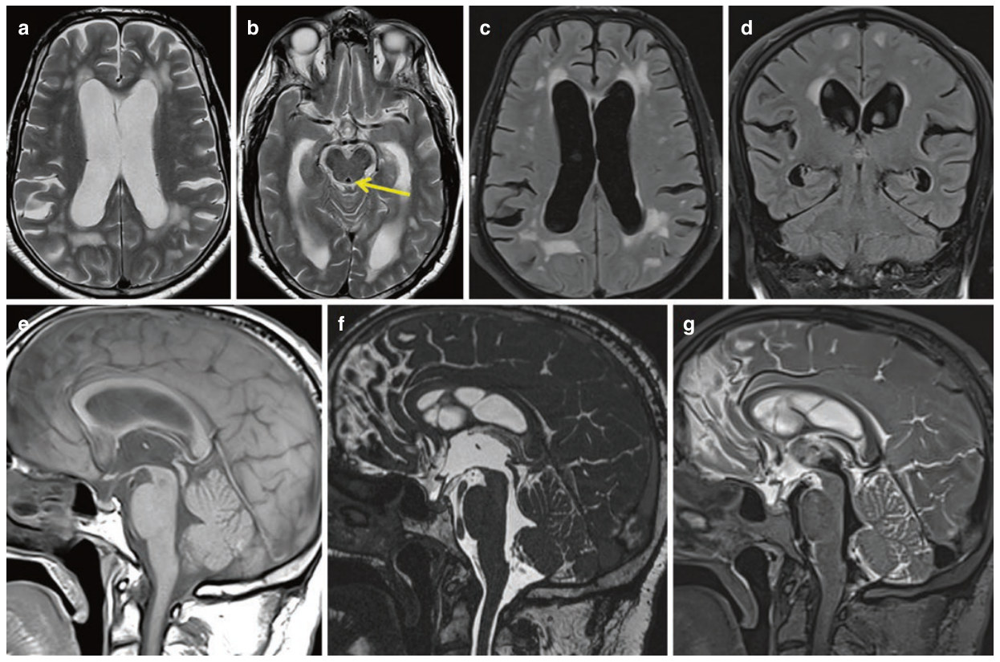
2.2.3 非交通性（梗阻性）脑积水 2.2.4 交通性脑积水
交通性脑积水定义为脑室系统外脑脊液循环异常所致的脑室扩大。大多数病例继发于基底池至脑凸面之间脑脊液流动的阻塞，常见病因包括蛛网膜下腔出血（SAS）、细菌性及无菌性脑膜炎以及柔脑膜癌病。基于这一概念，交通性脑积水通常伴有脑脊液吸收障碍，因此该型脑积水可更准确地归类为伴梗阻的交通性脑积水，以与正常压力性脑积水（NPH）相鉴别，后者并无明确的脑脊液循环及吸收障碍 [45, 46]。区别此类脑积水与其他原因所致脑室扩大的重要影像学特征包括颞角扩张；第三脑室壁包括其前隐窝呈气球样膨隆；
梗阻性（非交通性）脑积水是一种复杂的疾病，由脑室间一个或多个狭窄通道处的脑脊液循环梗阻/阻塞所致 [40]。该型脑积水可由多种病因引起，包括典型的 Monro 孔、导水管（图 2.6）、第四脑室出口（图 2.7）及枕骨大孔水平的梗阻，可由从外压迫脑室孔的占位性病变，或脑室内梗阻性病变如肿瘤或血肿所致 [43, 44]（表 2.2）。由于梗阻性脑积水可危及生命，需及时准确地诊断，以便给予最恰当的治疗。
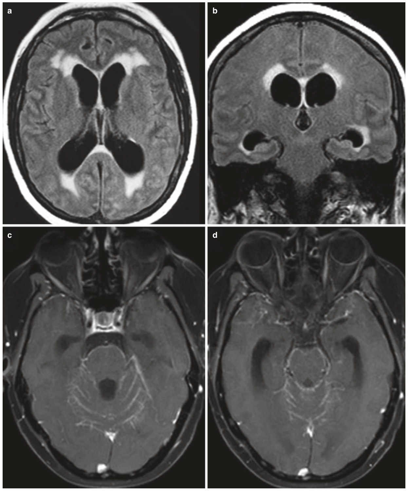
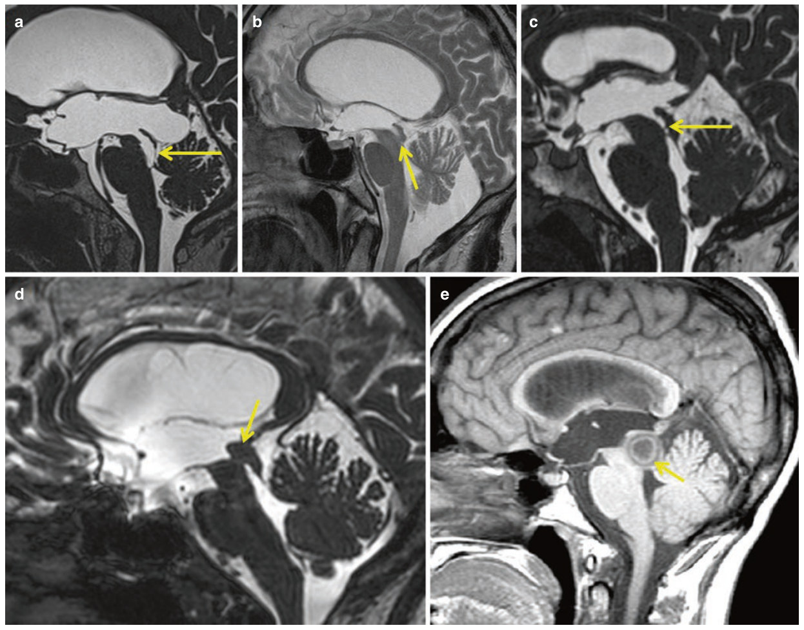
胼胝体上抬；以及脑室系统内脑脊液循环通畅的征象（图 2.4）。正常压力性脑积水（NPH）的特征为步态障碍、精神功能减退和尿失禁三联征，伴脑室系统扩大及正常脑脊液压力。约 50% 的 NPH 病例有明确病因（继发性或有症状性 NPH [sNPH]），如脑膜炎、蛛网膜下腔出血或颅脑外伤，其余 50% 为特发性（iNPH），通常于七十岁左右发病。iNPH 的典型脑结构改变被统称为“蛛网膜下腔不成比例扩大的脑积水”（DESH），即以下三项的组合：1/脑室扩大（Evans 指数 >0.3）；2/高凸面及
内侧蛛网膜下腔；以及 3/外侧裂池扩大（下方与上方蛛网膜下腔之间脑脊液分布不成比例）。Shinoda 等[47]建议在这三个组成部分基础上增加两项影像学特征（胼胝体角和局限性脑沟扩大）[48,49]，联合应用时对手术后神经功能改善具有较高的阳性预测值（图 2.8）。并非每一个疑似或可能的特发性正常压力脑积水（iNPH）患者都适合分流手术，需根据个体情况评估风险与获益之比。分流手术患者的筛选检查包括基于外科有创操作的检查（脑脊液动力学和颅内压监测）[50,51]，以及基于形态学或功能性 MRI 的检查[52,53]。
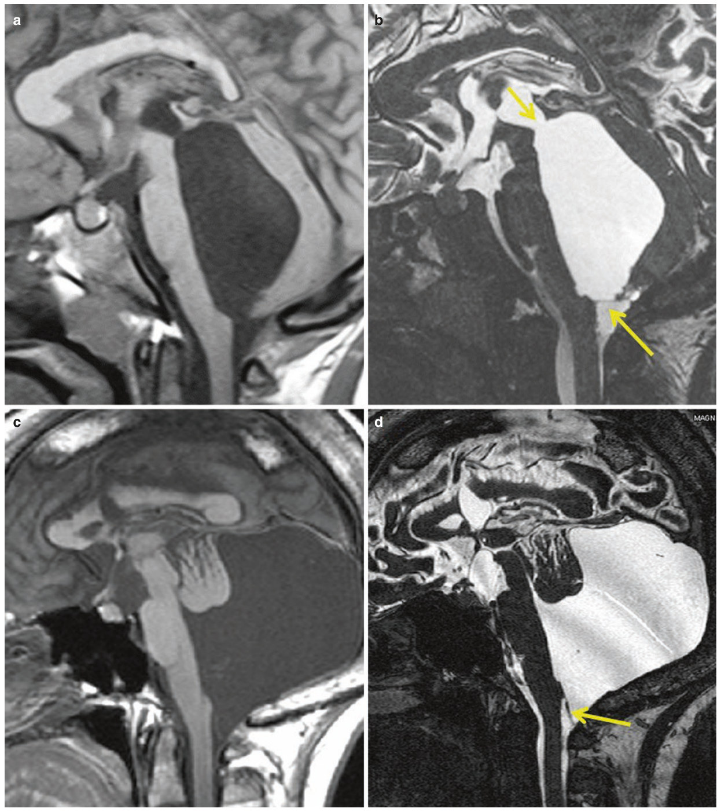
Magendie 孔及中脑导水管（箭头）。非交通性
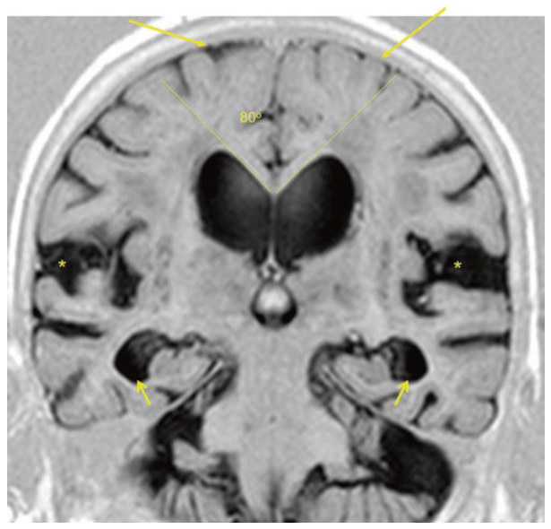
2.2.5 小结
结构性和功能性 MRI 在理解脑脊液间隙和脑室系统的解剖以及脑脊液流体力学方面起重要作用。这些原理对于理解不同类型的脑积水至关重要。将能够提供出色解剖信息的重 T2 加权序列（如 CISS 或 FIESTA）与对脑脊液流动高度敏感的 3D T2 加权 turbo/快速自旋回波序列（如 SPACE、VISTA 或 CUBE）相结合，可简便地评估脑脊液通路和循环，并能够准确区分非交通性与交通性脑积水，以及识别这两种类型脑积水的致病机制。
- MRI 是脑积水诊断和管理的首选影像学检查方法。
- 常规 MRI 序列联合高分辨率 3D T2 加权序列似乎是评估脑脊液通路和循环最有效的 MRI 策略，从而用于识别交通性和非交通性脑积水的致病机制。
交通性脑积水的致病机制鉴定
非交通性
- 蛛网膜下腔不成比例扩大（DESH）的存在是确立特发性正常压力脑积水诊断的有用 MRI 特征。
1. Vincent M, Wang SJ. Headache Classification Committee of the International Headache Society (IHS) The International Classification of Headache Disorders. Cephalalgia. 2018;38(1):1– 211. https://doi.org/10.1177/0333102417738202.
2. Kranz PG, Tanpitukpongse TP, Choudhury KR, Amrhein TJ, Gray L. How common is normal cerebrospinal fluid pressure in spontaneous intracranial hypotension? Cephalalgia. 2016;36(13):1209– 17. http://www.ncbi.nlm.nih.gov/pubmed/26682575.
3. Häni L, Fung C, Jesse CM, Ulrich CT, Miesbach T, Cipriani DR, et al. Insights into the natural history of spontaneous intracranial hypotension from infusion testing. Neurology. 2020;95(3):e247– 55. http://www.ncbi.nlm.nih.gov/pubmed/32522800.
4. Schievink WI, Maya MM, Moser F, Tourje J, Torbati S. Frequency of spontaneous intracranial hypotension in the emergency department. J Headache Pain. 2007;8(6):325–8.
5. Mokri B, Aksamit A, Atkinson J. Paradoxical postural headaches in cerebrospinal fluid leaks. Cephalalgia. 2004;24(10):883–7. https://doi.org/10.1111/j.1468-2982.2004.00763.x.
6. Yamamoto M, Suehiro T, Nakata H, Nishioka T, Itoh H, Nakamura T, et al. Primary low cerebrospinal fluid pressure syndrome associated with galactorrhea. Intern Med. 1993;32(3):228–31. http://www.ncbi.nlm.nih.gov/pubmed/8329818.
7. Arai S, Takai K, Taniguchi M. The algorithm for diagnosis and management of intracranial hypotension with coma: report of two cases. Surg Neurol Int. 2020;11(267):2–4.
8. Takai K, Niimura M, Hongo H, Umekawa M, Teranishi A, Kayahara T, et al. Disturbed consciousness and coma: diagnosis and management of intracranial hypotension caused by a spinal cerebrospinal fluid leak. World Neurosurg. 2019;121:e700–11. https://linkinghub. elsevier.com/retrieve/pii/S1878875018322484.
9. Kranz PG, Tanpitukpongse TP, Choudhury KR, Amrhein TJ, Gray L. Imaging signs in spontaneous intracranial hypotension: prevalence and relationship to CSF pressure. Am J Neuroradiol. 2016;37(7):1374–8.
10. Dobrocky T, Grunder L, Breiding PS, Branca M, Limacher A, Mosimann PJ, et al. Assessing spinal cerebrospinal fluid leaks in spontaneous intracranial hypotension with a scoring system based on brain magnetic resonance imaging findings. JAMA Neurol. 2019;18:1–8.
11. Schievink WI, Schwartz MS, Maya MM, Moser FG, Rozen TD. Lack of causal association between spontaneous intracranial hypotension and cranial cerebrospinal fluid leaks. J Neurosurg. 2012;116(4):749–54. http://www.ncbi.nlm.nih.gov/pubmed/22264184.
12. Farb RI, Nicholson PJ, Peng PW, Massicotte EM, Lay C, Krings T, et al. Spontaneous intracranial hypotension: a systematic imaging approach for CSF leak localization and management based on MRI and digital subtraction myelography. AJNR Am J Neuroradiol. 2019;40(4):745–53. http://www.ncbi.nlm.nih.gov/pubmed/30923083.
13. Schievink WI, Maya MM, Jean-Pierre S, Nuño M, Prasad RS, Moser FG. A classification system of spontaneous spinal CSF leaks. Neurology. 2016;87(7):673–9. http://www.ncbi.nlm.nih.gov/pubmed/27440149.
14. Kumar N, Diehn FE, Carr CM, Verdoorn JT, Garza I, Luetmer PH, et al. Spinal CSF venous fistula: a treatable etiology for CSF leaks in craniospinal hypovolemia. Neurology. 2016;86(24):2310–2. http://www.ncbi.nlm.nih.gov/pubmed/27178701.
15. Schievink WI, Moser FG, Maya MM. CSF-venous fistula in spontaneous intracranial hypotension. Neurology. 2014;83(5):472–3. http://www.ncbi.nlm.nih.gov/pubmed/24951475.
16. Schievink WI. Spontaneous spinal cerebrospinal fluid and ongoing investigations in this area. JAMA. 2006;295(19):2286–96.
17. Schievink WI, Maya MM. Spinal meningeal diverticula, spontaneous intracranial hypotension, and superficial siderosis. Neurology. 2017;88(9):916–7. http://www.ncbi.nlm.nih.gov/pubmed/28130464.
18. Johnson DR, Carr CM, Luetmer PH, Diehn FE, Lehman VT, Cutsforth-Gregory JK, et al. Diffuse calvarial hyperostosis in patients with spontaneous intracranial hypotension. World Neurosurg. 2021;146:e848–53.
19. Kim DK, Carr CM, Benson JC, Diehn FE, Lehman VT, Liebo GB, et al. Diagnostic yield of lateral decubitus digital subtraction myelogram stratified by brain MRI findings. Neurology. 2021;96(9):e1312–8. https://doi.org/10.1212/ WNL.0000000000011522.
20. Brinjikji W, Garza I, Whealy M, Kissoon N, Atkinson JLD, Savastano L, et al. Clinical and imaging outcomes of cerebrospinal fluid-venous fistula embolization. J Neurointerv Surg. 2022;14(10):953–6.
21. Dobrocky T, Häni L, Rohner R, Branca M, Mordasini P, Pilgram-Pastor S, et al. Brain spontaneous intracranial hypotension score for treatment monitoring after surgical closure of the underlying spinal dural leak. Clin Neuroradiol. 2022;32(1):231–8.
22. Kranz PG, Luetmer PH, Diehn FE, Amrhein TJ, Tanpitukpongse TP, Gray L. Myelographic techniques for the detection of spinal CSF leaks in spontaneous intracranial hypotension. AJR Am J Roentgenol. 2016;206(1):8–19. http://www.ncbi.nlm.nih.gov/pubmed/26700332.
23. Watanabe A, Horikoshi T, Uchida M, Koizumi H, Yagishita T, Kinouchi H. Diagnostic value of spinal MR imaging in spontaneous intracranial hypotension syndrome. Am J Neuroradiol. 2009;30(1):147–51.
24. Dobrocky T, Winklehner A, Breiding PS, Grunder L, Peschi G, Häni L, et al. Spine MRI in spontaneous intracranial hypotension for CSF leak detection: nonsuperiority of intrathecal gadolinium to heavily T2-weighted fat-saturated sequences. AJNR Am J Neuroradiol. 2020;41(7):1309–15. https://doi.org/10.3174/ajnr. A6592.
25. Schievink WI, Maya MM, Chu RM, Moser FG. False localizing sign of cervico-thoracic CSF leak in spontaneous intracranial hypotension. Neurology. 2015;84(24):2445–8.
26. Schievink WI, Maya MM, Moser FG, Prasad RS, Cruz RB, Nuño M, et al. Lateral decubitus digital subtraction myelography to identify spinal CSF-venous fistulas in spontaneous intracranial hypotension. J Neurosurg Spine. 2019;31(1):902–5. http://www.ncbi. nlm.nih.gov/pubmed/31518974.
27. Piechowiak EI, Pospieszny K, Haeni L, Jesse CM, Peschi G, Mosimann PJ, et al. Role of conventional dynamic myelography for detection of high-flow cerebrospinal fluid leaks: optimizing the technique. Clin Neuroradiol. 2020;31:633–41. https://doi.org/10.1007/s00062-020-00943-w.
28. Dobrocky T, Mosimann PJ, Zibold F, Mordasini P, Raabe A, Ulrich CT, et al. Cryptogenic cerebrospinal fluid leaks in spontaneous intracranial hypotension: role of dynamic CT myelography. Radiology. 2018;289(3):766–72. http://www.ncbi.nlm.nih.gov/pubmed/30226459.
29. Kim DK, Brinjikji W, Morris PP, Diehn FE, Lehman VT, Liebo GB, et al. Lateral decubitus digital subtraction myelography: tips, tricks, and pitfalls. AJNR Am J Neuroradiol. 2020;41(1):21–8. http://www.ncbi.nlm.nih.gov/pubmed/31857327.
30. Amrhein TJ, Gray L, Malinzak MD, Kranz PG. Respiratory phase affects the conspicuity of CSF-venous fistulas in spontaneous intracranial hypotension. AJNR Am J Neuroradiol. 2020;41(9):1754–6. http://www.ncbi.nlm.nih.gov/pubmed/32675336.
31. Clark MS, Diehn FE, Verdoorn JT, Lehman VT, Liebo GB, Morris JM, et al. Prevalence of hyperdense paraspinal vein sign in patients with spontaneous intracranial hypotension without dural CSF leak on standard CT myelography. Diagn Interv Radiol. 2018;24(1):54–9.
32. Kranz PG, Amrhein TJ, Gray L. CSF venous fistulas in spontaneous intracranial hypotension: imaging characteristics on dynamic and CT myelography. Am J Roentgenol. 2017;209(6): 1360–6.
33. Piechowiak EI, Aeschimann B, Häni L, Kaesmacher J, Mordasini P, Jesse CM, et al. Epidural blood patching in spontaneous intracranial hypotension-do we really seal the leak? Clin Neuroradiol. 2023;33(1):211–8.
34. Schievink WI, Morreale VM, Atkinson JLD, Meyer FB, Piepgras DG, Ebersold MJ. Surgical treatment of spontaneous spinal cerebrospinal fluid leaks. J Neurosurg. 1998;88(2):243–6. https://thejns.org/view/journals/j-neurosurg/88/2/article-p243.xml.
35. Beck J, Ulrich CT, Fung C, Fichtner J, Seidel K, Fiechter M, et al. Diskogenic microspurs as a major cause of intractable spontaneous intracranial hypotension. Neurology. 2016;87(12):1220–6. http://www.ncbi.nlm.nih.gov/pubmed/27566748.
36. Brinjikji W, Savastano LE, Atkinson JLD, Garza I, Farb R, Cutsforth-Gregory JK. A novel endovascular therapy for CSF hypotension secondary to CSF-venous fistulas. AJNR Am J Neuroradiol. 2021;42(5):882–7. http://www.ncbi.nlm.nih.gov/pubmed/33541895.
37. Amrhein TJ, Williams JW, Gray L, Malinzak MD, Cantrell S, Deline CR, et al. Efficacy of epidural blood patching or surgery in spontaneous intracranial hypotension: a systematic review and evidence map. Am J Neuroradiol. 2023;44(6):730–9.
38. Langner S, Fleck S, Baldauf J, et al. Diagnosis and differential diagnosis of hydrocephalus in adults. Fortschr Rontgenstr. 2017;189:728–39.
39. Maller VV, Gray RI. Noncommunicating hydrocephalus. Semin Ultrasound CT MRI. 2016;37:109–19.
40. Kartal MG, Algin O. Evaluation of hydrocephalus and other cerebrospinal fluid disorders with MRI: an update. Insights Imaging. 2014;5:531–41.
41. Rovira A. Communicating hydrocephalus. Normal pressure hydrocephalus. In: Barkhof F, et al., editors. Clinical neuroradiology.
卒中及其模拟病：诊断与治疗
卒中及其模拟病：诊断与治疗
Sarah Power 和 Achala S. Vagal
S. Power（*）爱尔兰 都柏林 Beaumont 医院 放射科 电子邮箱：sarahpower@beaumont.ie
A. S. Vagal 美国 辛辛那提 辛辛那提大学 放射科 电子邮箱：vagala@ucmail.uc.edu
3.1 引言
影像学检查是急性卒中患者评估中的关键步骤。尽管各中心的影像学策略可能有所不同，但急性卒中影像学的目标始终相同：确立正确诊断，并为可能符合治疗条件的患者在溶栓和血管内治疗方面做出快速分诊决策。影像学检查有助于评估以下四个关键点：
1. 出血：识别脑实质内出血或蛛网膜下腔出血是区分出血性卒中与更为常见的缺血性卒中的关键要点，二者的管理策略截然不同。此外，排除任何颅内出血对于确定是否符合溶栓条件也至关重要。2. 梗死：识别任何已存在的梗死灶、判断其时期为急性、亚急性或慢性，并确定急性梗死范围，对于静脉溶栓和血管内治疗（EVT）的决策均至关重要。3. 动脉闭塞：识别任何颅内动脉闭塞，包括大动脉、中等及远端闭塞，以及颈部颈动脉或椎动脉的闭塞，对于确定是否符合 EVT 条件至关重要。4. 卒中样发作：多种神经系统疾病在起病时与急性卒中表现相似，影像学可区分卒中与卒中样发作。
3.2 急性缺血性卒中影像学——循证指南
多年来，多项试验改变了急性卒中治疗的格局，放射科医师熟悉这些具有变革意义的研究至关重要。2015 年，五项随机对照试验（RCT）（MR CLEAN、ESCAPE、
REVASCAT、SWIFT-PRIME、EXTEND-IA）[1–5]证实，在症状发作或最后一次已知良好状态（LKW）后 6 h 内、存在前循环大血管闭塞（LVO）的患者中，血管内治疗（EVT）优于最佳内科治疗（BMT）。这些患者具有中至重度卒中神经功能缺损（美国国立卫生研究院卒中量表评分/NIHSS ≥6）、脑影像学上无广泛已形成梗死灶（脑 MRI 或 CT 上 ASPECT 评分 ≥6），并在 CTA 或 MRA 上显示颈动脉末端或大脑中动脉（MCA）近端闭塞。因此，对符合上述标准的前循环 LVO 患者，血管内取栓术成为标准治疗方案 [6, 7]。2018 年，另外两项 RCT（DAWN 和 DEFUSE 3）[8, 9]证实，在发病/LKW 后 6~24 h 的较晚时间窗内，EVT 仍优于 BMT。这些晚时间窗试验采用先进的卒中影像学技术进行患者筛选，包括 CT 灌注（CTP）或 MRI，并使用自动后处理软件（RAPID，iSchemaView）评估核心梗死体积。DAWN 试验采用临床-核心不匹配作为症状发作后 6~24 h 之间的筛选标准，根据年龄和卒中严重程度不同，核心体积上限可达 51 mL。DEFUSE 3 试验对发病后 6~16 h 的患者允许核心体积上限为 70 mL，不匹配比 >1.8，不匹配体积 >15 mL。这些试验为 EVT 在晚时间窗的获益提供了 1a 级证据，并改变了卒中指南，对延迟时间窗的影像学评估和治疗均提出了新的推荐 [6, 7]。根据指南，对于发病/LKW 后 6 h 内就诊的前循环 LVO 成年患者，无需使用先进影像学进行患者筛选。然而，对于发病后 6~24 h 内就诊的患者，则必须采用 CT 灌注、扩散加权 MRI（DW-MRI）或 MR 灌注（MRP）等先进影像学方法。同样借助先进影像学技术，两项重要试验为静脉溶栓在 4.5 h 以后延长时间窗的应用提供了证据。2018 年发表的 WAKE-UP 试验 [10] 将符合静脉溶栓条件的患者随机分组，这些患者或为醒后出现卒中症状者，或为 LKW 后发病时间 >4.5 h 且具体时间不明者。影像学入选标准要求 MR-DWI 与液体衰减反转恢复（FLAIR）之间存在不匹配。该试验证明在醒后或发病时间不明的卒中且未接受 EVT 的患者中，静脉应用 tPA 优于安慰剂。排除标准包括 DW-MRI 病变范围超过 MCA 供血区的三分之一。2019 年发表的 EXTEND 试验 [11] 评估了在已知卒中发病时间后 4.5~9 h 内、或醒后发病且自睡眠中点起 9 h 内的患者中静脉溶栓的应用。该试验要求采用 CTP 或 MRP 先进影像学进行患者筛选。入选标准包括核心梗死体积 ≤70 mL 且不匹配比 >1.2。该研究显示出更佳的
在静脉溶栓 tPA 与安慰剂的对比方面，目前已有了新证据发表 [6, 12]，并发布了在扩大时间窗内使用静脉溶栓的指南，推荐在患者筛选中采用高级影像学技术。血管内治疗（EVT）虽已用于后循环大血管闭塞（LVO），但一直缺乏高级别证据支持。最近完成的两项随机对照试验（RCT）显示，对于基底动脉闭塞，EVT 的疗效为阳性。BAOCHE 试验 [13] 入组了发病 6–24 h、美国国立卫生研究院卒中量表（NIHSS）评分 >6 分的基底动脉闭塞患者，影像学纳入标准为后循环 Alberta 卒中项目早期 CT 评分（PC-ASPECTS）≥6 分且桥脑中脑指数 ≤2 分。ATTENTION 试验 [14] 入组了发病 12 h 内、NIHSS >10 分且 PC-ASPECTS ≥6 分的基底动脉闭塞患者。上述试验所证实的基底动脉闭塞 EVT 获益很可能将促成指南的更新。鉴于这两项试验均采用了基于影像学的筛选标准，对急性梗死负荷进行评估的评分系统（如 PC-ASPECTS）也极有可能被纳入指南推荐意见中。最近，针对大面积梗死核心患者扩大 EVT 适应证的“大核心”试验引起了广泛关注。三项最新发表的 RCT 提供了 1 级证据，表明在这些重症卒中中，EVT 在改善功能转归方面优于单纯最佳药物治疗（BMT），三项试验均显示出阳性效应。2022 年发表的 RESCUE-Japan LIMIT [15] 主要采用 MRI 进行分诊，纳入标准为 ASPECTS 评分 3–5 分、颈内动脉末端或大脑中动脉（MCA）第一段（M1）闭塞，且在最后已知正常时间 6 h 内，或在无 FLAIR 早期改变的情况下 24 h 内。2023 年发表的 SELECT2 试验 [16] 纳入 ICA 或 M1 闭塞、发病 24 h 内、且具备大面积缺血核心（定义为 ASPECTS 评分 3–5 分，或 CT 灌注／DW-MRI 测得核心体积 ≥50 mL）的患者，大部分患者采用 CT 进行分诊。与 SELECT2 同时发表的 ANGEL-ASPECT 试验 [17] 纳入发病 24 h 内、伴颅内 ICA 或 M1 闭塞的患者。影像学入选标准包括平扫 CT 上 ASPECTS 评分 3–5 分（对梗死核心体积无限制），或 ASPECTS 评分 0–2 分且梗死核心体积介于 70～100 mL 之间。多数纳入患者（85%）ASPECTS 评分为 3–5 分。上述三项试验共同证实，对前循环 LVO 伴大面积梗死核心的卒中患者，EVT 安全有效，优于单纯 BMT。正在进行中的其他大核心试验还包括 LASTE（NCT03811769）、TESLA（NCT03805308）以及 TENSION（NCT03094715），其结果尚未公布。截至本文撰写之时，欧洲及北美现行的指南尚无关于大面积梗死核心患者行机械取栓的推荐意见。然而，未来指南很可能纳入上述新证据。
3.3 影像学评估模式
由于 CT 具有速度快、可及性高、禁忌证少、成本低及易于解读等优势，尽管 MRI 对早期缺血改变及特定类型梗死的敏感度更高，CT 仍是急诊卒中评估的主要手段。急性卒中情况下 MRI 扫描时间较长，且安全筛查常面临挑战。无论选择何种检查模式，建立精简流畅的影像学方案对有效进行卒中分诊至关重要，相关内容将在后续章节讨论。
3.4 CT：方案、影像表现及陷阱
基于 CT 的急性卒中分诊方案应包括颅脑平扫 CT（NCCT）、颅内及颈部血管 CT 血管成像（CTA），以及在条件允许时加做 CT 灌注成像（CTP）。
针对后循环，已研发出 ASPECT 评分系统的改良版本——PC-ASPECTS。该评分同样为 10 分制，每个受累区域相应扣分。由于脑干梗死具有较高的致残率，该评分对脑干病变做了适度加权，其中脑桥和中脑各分配 2 分。其他区域包括双侧丘脑（各 1 分）、双侧枕叶（各 1 分）及双侧小脑半球（各 1 分）。该评分的一个局限在于 CT 对早期脑干梗死识别的敏感度相对不足。NCCT 也有助于判断闭塞部位，因为动脉腔内血栓依据其成分不同可呈高密度。除了在如 M1 等近端动脉中发现提示闭塞的线条状高密度（高密度血管征）外，还应向远端评估外侧裂处高密度“点”征，该征象可提示 M2 闭塞。其他部位可能显示高密度血栓的位置包括：提示大脑前动脉闭塞的半球间裂前部、提示基底动脉血栓的脑桥前池，以及提示大脑后动脉闭塞的环池。
3.4.1 颅脑平扫 CT 3.4.2 CT 血管成像
应将头颅平扫 CT（NCCT）作为首选检查，以排除出血并辅助决定符合条件患者能否接受静脉溶栓治疗。CT 上早期梗死征象包括灰白质分界不清、密度减低及脑沟变浅。在颈动脉末端和 M1 段闭塞时，由于豆纹动脉穿支区缺乏侧支代偿，最早改变常出现于基底节区和岛叶。然而，平扫 CT 对极早期梗死、尤其是在广泛小血管病变和陈旧梗死背景下的识别能力有限。Alberta 卒中项目早期 CT 评分（ASPECTS）是一种广泛应用的评分系统，旨在客观评估大脑中动脉（MCA）供血区急性梗死范围。MCA 供血区被划分为 10 个区域：尾状核、豆状核、内囊、岛叶以及 M1–M6 皮质分区。M1–M3 区位于基底节层面，自前向后延伸；M4–M6 区位于基底节以上层面，同样自前向后延伸。每累及一个急性梗死区域即从原始 10 分中扣除 1 分。许多证明血管内治疗（EVT）获益的主要随机对照试验（RCT）均将 ASPECTS 作为入组标准。较高的 ASPECT 评分与卒中治疗后更好的预后相关。尽管该评分系统具有客观性，但观察者间一致性较差，且仅限于 MCA 供血区应用。人工智能（AI）在卒中影像中的应用拓展了 ASPECTS 自动分析的能力。尽管这些工具旨在辅助而非取代放射科医生，但它们可提高评分者间一致性，并提升非专科医生的表现。
CTA 在识别 LVO 方面快速且准确性高。扫描范围应自主动脉弓水平至颅顶，以便评估颅外颈动脉和椎动脉是否存在闭塞、狭窄或夹层，因为这些情况可能影响介入技术的选择及患者预后。若颅外动脉闭塞或狭窄与颅内闭塞位于同一血管供血区，则称为串联病变。LVO 一词是指颈动脉末端（颈动脉 T 型）、大脑中动脉第一段（M1）、颅内椎动脉以及基底动脉的闭塞，所有这些部位都必须仔细评估其通畅性。关于大脑中动脉第二段（M2）闭塞属于大血管闭塞还是中血管闭塞（MeVO），目前文献中仍存在争议，特别是当近端优势型 M2 段或多支近端 M2 段闭塞时，在梗死风险区域体积及卒中综合征临床严重程度方面其表现可类似 M1 闭塞。虽然目前仍缺乏针对 M2 闭塞治疗的 RCT 证据，但许多观察性研究提供了支持证据，表明 M2 闭塞的 EVT 治疗是有效且安全的 [18]。各机构对症状性 MeVO（中血管闭塞）的治疗方案存在差异，部分机构尽管证据有限仍遵循标准方案，而另一些机构则选择根据具体病例作出决策。(NCT05151172) 和 DISTALS (NCT05152524) 旨在评估血栓抽吸术治疗 MeVO 及更远端闭塞的有效性。
ji
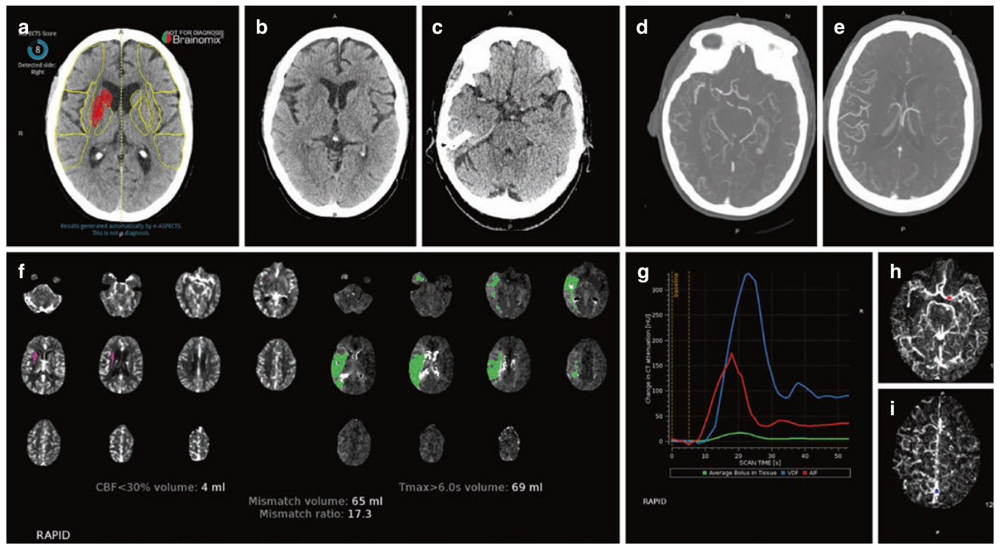
于相位 2 图像上见分支逆流至血栓远端 M2 起始处（d, e）。使用 RAPIDAI 进行灌注分析（f）
作为放射科医生，重要的是要制定策略以在 CTA 上识别中等及远端闭塞。使用薄层成像（1 mm 或更薄）、多平面重建以及层厚 6–10 mm 的最大密度投影（MIP）图像均有助于检出这些闭塞。例如，矢状位对识别中等及远端 M2 闭塞、ACA 闭塞和 PCA P2–P3 闭塞特别有价值，而冠状位则有助于评估近端 M2、近端 ACA 和 PCA 闭塞。CTA 还能提供关于侧支通路的重要信息，无论是经 Willis 环（COW）的顺行侧支，还是经软脑膜侧支的逆行侧支。例如，在颈内动脉颈动脉分叉以下的闭塞中，侧支供血可来自前交通动脉；若闭塞位于后交通动脉以下，则又增加一条通路。然而，在 M1 或颈内动脉 T 型闭塞时，无法获得顺行性 COW 侧支代偿；任何侧支供血必须为逆行性，通常来自同侧 ACA 或 PCA 区域的软脑膜侧支。众多研究表明，良好的软脑膜侧支供应对卒中有益，因为它能在闭塞血管区域维持更长时间的脑组织
存活，梗死进展较慢（缓慢进展者），最终梗死体积更小，患者预后更好。侧支代偿差则与早期梗死（快速进展者）、更大梗死灶、更高的出血发生率以及不良预后相关 [19, 20]。虽然对分级量表的类型尚无共识，但多数仅限于 MCA 区域，从 2 分级（好与差）到 5 分级不等。通常是将闭塞区域动脉强化的程度与对侧进行比较，以充盈程度的部分或百分比来表示。例如，充盈 <50% 视为差，50–75% 为中等，>75% 为良好。利用轴位厚层 MIP 图像可快速评估侧支供应（图 3.1）。单期 CTA 的一个缺陷是缺乏时间分辨力，可能低估侧支供应，尤其是在心输出量差或近端狭窄的情况下。多期 CTA 包括自主动脉弓至颅顶的初始动脉期、延迟的颅内早静脉期及更晚的静脉期，可通过实现侧支的时间评估来解决这一问题。已开发出更全面的分级系统，便于评估闭塞区域充盈程度及延迟情况
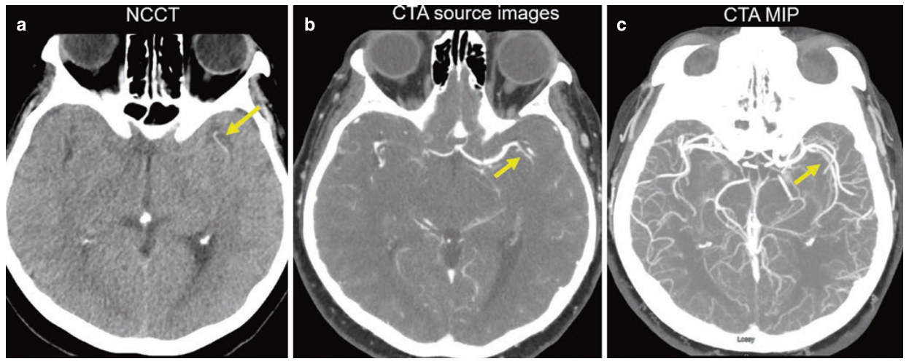
跨期相的情况 [21]。多期侧支评估是大血管闭塞（LVO）患者取栓分诊的重要工具，并与平扫 CT ASPECTS 评分一同作为 ESCAPE 试验的入选标准 [2]。多期 CTA 还能更好地显示中段及远端血管闭塞。许多卒中 AI 解决方案均包含 MCA 区域侧支供血的分析与评分，以及 LVO 的自动检测。单期 CTA 的另一个不足是假性闭塞，最常见于 ICA 或椎动脉。这通常发生在存在严重近端狭窄或远端闭塞时，由于血流缓慢，动脉远端对比剂充盈逐渐减少，出现
要点：全面复习 CTA 以评估
- 大血管闭塞。
- 中段或远端血管闭塞。
- 颅外循环，包括夹层、斑块、颈动脉蹼。
- 入路问题，如血管迂曲、颈动脉病变、动脉瘤。
- 侧支循环。
3.4.3 CT 灌注
CT 灌注（CTP）现已越来越多地被纳入影像学检查流程中，可用于评估已发生梗死组织（缺血核心）的体积以及因低灌注而处于危险状态但尚未发生不可逆梗死的组织（半暗带）的体积。其方法是在注射高速团注的碘对比剂后，对组织某一选定区域进行连续扫描成像。然后使用半自动或越来越多全自动的软件进行后处理，采用反卷积算法生成灌注图，包括脑血流量（CBF）、脑血容量（CBV）、平均通过时间（MTT）、达峰时间（TTP）及最大残余时间（Tmax）。许多人工智能（AI）软件解决方案已包含灌注数据的自动后处理功能。一般以患侧 CBF 较对侧下降 30% 作为反映
j
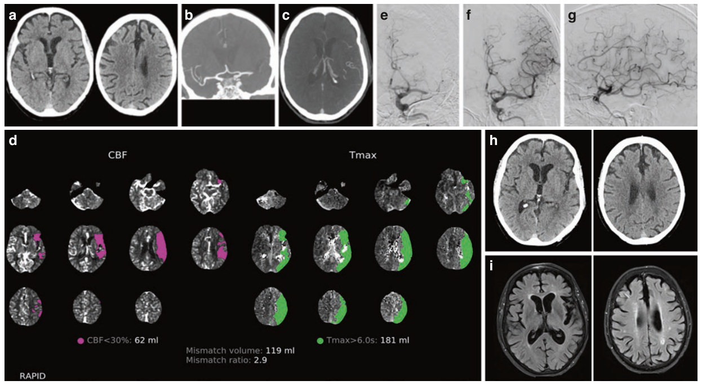
缺血核心体积。Tmax>6 s 阈值是最常用的反映存在梗死风险的严重低灌注区域。从 Tmax>6 s 体积中减去核心体积得到半暗带体积。大多数软件解决方案会显示彩色编码汇总图，提供核心、Tmax>6 s、不匹配体积及不匹配比的定量（图 3.1）。Tmax 及 CBF 的其他可变阈值也经常提供。低灌注指数比值（Tmax>10 s 体积除以 Tmax>6 s 体积）等进一步计算可由自动化软件完成。低灌注指数比值（HIR）可用于区分慢进展者与快进展者，快进展者中该值较高，是组织侧支的良好替代指标。必须认识到自动 CT 灌注的多种陷阱 [23]。不同软件解决方案的输出之间存在固有差异，可能导致核心体积、风险区域、半暗带和不匹配比的不同计算。然而不同软件间的差异通常不足以影响决策。对远端闭塞的分析则为例外，其中 rCBF<30% 和 Tmax>6 s 的体积本身较小，即使微小变化也对不匹配比计算影响较大。其次，CBF<30% 阈值并不总是准确
反映缺血核心。在超早期就诊者中尤其如此，尤其是发病/LSW 后 90 min 内就诊者，缺血核心可能被高估，即所谓“幽灵核心”（图 3.3）。在此情形下使用其他 CBF 阈值可有帮助，建议在超早期时间窗使用 CBF<20% 阈值。核心梗死的高估可能导致错误地将患者排除在 EVT 之外，可能错失有效治疗的机会。心输出量差可导致对比剂团注到达颅内血管明显延迟，时间-密度衰减曲线可能被截断，生成的灌注图不准确。此外，慢性颈动脉闭塞/狭窄可导致假阳性半暗带（图 3.4），而近端颈动脉狭窄可能高估风险区域。在此情况下使用额外的 Tmax 阈值图并与 CTA 表现密切关联有助于判读。在判读或决策之前，检查 CTP 的技术充分性至关重要（图 3.1）。动脉输入函数（AIF）和静脉输出函数（VOF）的时间-密度曲线应始终作为 CTP 判读技术检查清单的一部分进行检视，确保其已回到基线。其他技术陷阱包括动脉输入和静脉输出选择不当、运动伪影、对比剂团注不佳导致的低信噪比，以及
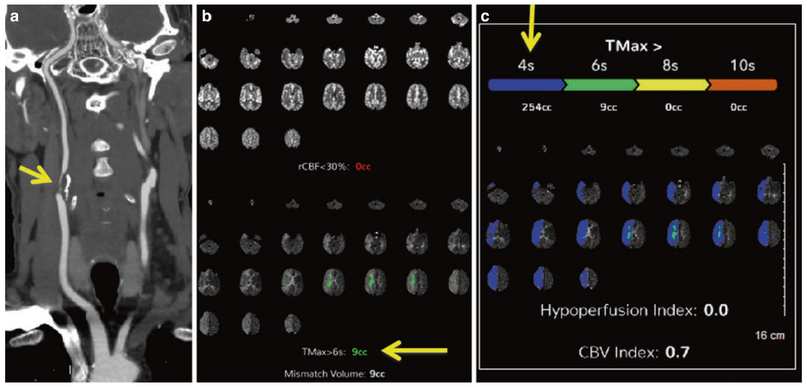
许多 CT 扫描仪只能进行局部覆盖灌注而无法实现全脑覆盖灌注，这一局限依然存在。尽管存在上述陷阱，CTP 仍是急性缺血性卒中评估中的关键手段，但其在 LVO 取栓治疗中的地位可能因即将公布的大面积核心梗死试验结果而发生变化。CTP 在识别易被 CTA 漏诊的中等及远端闭塞危险区域方面的作用正日益凸显。
tant 在后循环卒中中尤为重要。MRI 同样符合晚期时间窗患者的高级影像筛选标准。其进一步优势包括无电离辐射，且必要时可在不使用对比剂的情况下完成成像。然而，使用 MRI 进行分诊可能导致更少的患者接受取栓治疗，原因是 DWI 上检出了更大范围的急性缺血灶 [24]。MRI 的另一缺陷是 DWI 病灶在卒中早期可能可逆。多项研究报告急性再灌注治疗后 DWI 病灶可部分逆转，且临床预后有所改善。在接受血管内治疗（EVT）的大血管闭塞（LVO）患者中，完全再灌注及更短的成像至再通时间均被证明与 DWI 逆转独立相关 [25]。其缺点包括 MRI 可及性可能受限，以及扫描前需进行患者安全筛查，上述两者已被证实是导致成像采集延迟的重要原因 [26]。另一潜在缺点是成像时间可能较长，尽管 MRI 快速扫描方案可在短至 6 min 内完成 [27]。在 MRI 中，与 CT 一样，可实现快速后处理的灌注分析自动化软件对于避免决策延迟至关重要。使用 MRI 进行急性卒中决策时，需评估大血管闭塞、临床扩散不匹配（CDM）、FLAIR 扩散不匹配（FDM）（图 3.5）或灌注扩散不匹配（PDM）。
3.5 MRI：方案、表现、陷阱与典型病例
基于 MRI 的急性卒中成像体系具有优势和劣势。急性卒中 MRI 的典型方案见表所示。MRI 的一项显著优势在于 DWI 在检测急性梗死方面具有更高的敏感度，尤其重
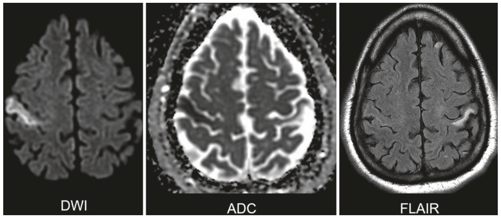
| • DWI | 急性梗死在 B1000 图像上呈高信号,并在表观扩散系数(ADC)图像上呈低信号,呈现真实扩散受限,在卒中起病后 20 min 内即可显示 |
| • FLAIR | 急性梗死呈高信号,可能需要长达 6 h 才出现,提示不可逆改变 |
| • 磁共振血管成像 | 采用时间飞跃(TOF)技术或增强 MRA,至少需对颅底动脉环(COW)成像,理想情况下应包括颈部血管 |
| • GRE/SWI | 评估急性或陈旧性出血的存在,评估提示动脉内血栓的磁敏感效应( blooming 征),类似于 CT 上的高密度征 |
| • MRP | 如需或要求高级成像，可选 |
| • T2 加权 | 可选，优先用于评估后颅窝 |
3.6 “卒中急救”影像的判读方法
无论采用何种成像方案，对 FAST 阳性/卒中应急患者的及时判读都至关重要，无论是在扫描仪控制台、PACS 工作站还是通过 AI 进行即时分诊与治疗决策时均如此。虽然排除出血和识别大血管闭塞等紧急问题需要快速回答，但成像仍必须
全面复查以发现其他意外发现。借鉴严重创伤的类比，急性卒中的影像判读采用两层方法——快速初步的主要检查以便迅速分诊治疗，随后进行时间压力较小的确定性次要检查。
性栓塞、软斑块、颈动脉蹼、主动脉弓内或闭塞近端血管内的血栓
- 其他或意外的灌注表现，例如高灌注
- 考虑其他鉴别诊断及卒中样表现
- 偶发发现
3.7 优化急性卒中影像工作流程
能够在发病/最后正常时间（LKW）后最长 24 h 进行晚期时间窗取栓，并不能取代对速度的要求。根据 HERMES 协作组的研究 [28]，从发病到再灌注每延迟 9 min，每 100 例患者中就会有 1 例在 90 d 时出现更严重的功能残疾。院内治疗速度与功能独立之间存在负相关，随着“入院至再灌注”时间的延长，获得良好预后的比率随之下降。因此，建立高效的影像工作流程对缩短“入院至成像”、“入院至用药”、“入院至穿刺”以及最终的“入院至再灌注”等关键时间指标至关重要。放射科是卒中工作流程的核心，放射科医师应与影像技师、卒中团队及神经介入团队共同优化工作流程。以下为优化工作流程的建议。
- 通过单一传呼系统由 EMS 向急诊科、卒中团队和影像团队发送预警，可立即采取行动。患者到达后，由卒中团队迎接并直接送入 CT/MRI 室。
- 首先进行实质成像，例如平扫 CT，以便在符合条件时及时分流接受静脉溶栓治疗。进一步的血管成像和灌注成像不应延迟溶栓给药，溶栓可在患者位于 CT 或 MRI 扫描仪内时进行。
- 无需为了检查肾功能而延迟碘对比剂的使用。
- 应在扫描控制台或 PACS 工作站待命，由放射科医师在患者扫描时实时审阅图像。应设置图像自动发送至 PACS，确保在进行血管成像或灌注检查时，平扫 CT 或 DW-MRI 即可供审阅。
- 具有自动 ASPECTS、大血管闭塞检测和灌注分析功能的 AI 软件有助于简化工作流程，并已被证实对关键时间指标具有积极影响 [29]。大多数 AI 软件的输出可在手持设备上查看，并可向团队发送通知和进行内部文字通讯。当代及新一代放射科医师必须适应在影像工作流程中使用 AI。
3.8 卒中样病变
约三分之一的局灶性神经功能缺损新发病例可能为卒中样病变 [30]。识别卒中样病变并与真正的卒中相鉴别对于避免不当治疗至关重要。MRI 在识别卒中样病变方面较 CT 具有内在优势。较常见的卒中样病变包括癫痫发作、偏头痛、 posterior reversible encephalopathy syndrome（后部可逆性脑病综合征）、静脉血栓形成和脑肿瘤。
3.8.1 癫痫发作
最常见的卒中样病变为伴 Todd 麻痹、无力或失语的癫痫发作。MRI 表现多变，可呈局灶性、多灶性、偏侧性或弥漫性皮层扩散高信号，ADC 值可高可低。灌注异常可从发作期的高灌注到发作后的低灌注或正常灌注不等。这些变化分别由神经元激活或抑制所致。与卒中不同，癫痫相关的灌注改变不局限于某一血管分布区，这是一个重要鉴别线索。癫痫的其他鉴别特征包括脑回或软脑膜强化，以及无血管闭塞。
3.8.2 偏头痛
无头痛的偏头痛先兆常表现为卒中样病变。MRI 通常表现正常，但少数病例可显示可逆性扩散受限。鉴别要点包括既往偏头痛病史、非血管分布以及无大血管闭塞。灌注表现不一，急性发作先兆期呈低灌注，长时间发作则可呈正常或高灌注。然而，灌注异常通常不与特定血管分布区相对应，并可跨越多个血管分布区。
3.8.3 后部可逆性脑病综合征（PRES）
由自身调节功能丧失和毛细血管渗漏所致的血管源性水肿引起的急性神经功能缺损综合征，可类似急性或亚急性卒中。PRES 病灶通常位于皮层/皮层下，T2/FLAIR 呈高信号，好发于顶枕叶，且分布相对对称。约 10%–25% 的病例可显示扩散受限，约 15% 合并有脑实质出血。
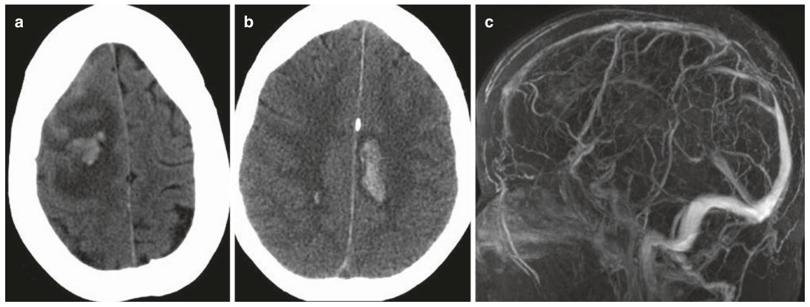
3.8.4 静脉血栓形成
可同时存在血管源性水肿和细胞毒性水肿，导致 DWI 上扩散受限表现不一。通常，由于静脉血栓形成所致的水肿因不按动脉分布区分布而较易识别，水肿位置取决于静脉血栓的所在部位。T2-GRE 序列因其磁敏感伪影可显示静脉血栓的异常低信号及
3.8.5 肿瘤
脑肿瘤可通过引起新的神经功能缺损而类似卒中绿色通道，需要及时鉴别以避免治疗延误。位于动脉分布区内的小皮层肿瘤在初次影像检查时可能被误诊为梗死。依据肿瘤细胞密度和分级不同，其扩散高信号和强化程度各异。灌注成像可能有所帮助：肿瘤的脑血容量（CBV）通常较高，而急性梗死则较低。其他卒中样病变还包括中毒及代谢性疾病、转换障碍、感染、外周性眩晕、晕厥、一过性全面性遗忘以及硬膜下血肿。
3.9 小结
高效、快速的卒中影像学检查对于急性缺血性卒中患者的最佳分流至关重要。人工智能结合自动 ASPECT 评分计算的应用
自动大血管闭塞检测以及灌注数据的自动后处理正日益普及。随着治疗时间窗的延长、大核心梗死及远端闭塞的血管内治疗（EVT）的开展，急性卒中治疗的边界持续扩展。卒中影像和治疗领域的不断发展进一步凸显了放射科医师在将这些变化付诸实践中的关键作用。
1. Berkhemer OA, Fransen PSS, Beumer D, et al. A randomized trial of Intraarterial treatment for acute ischemic stroke. N Engl J Med. 2014;372(1):11–20.
2. Goyal M, Demchuk AM, Menon BK, et al. Randomized assessment of rapid endovascular treatment of ischemic stroke. N Engl J Med. 2015;372(11):1019–30.
3. Jovin TG, Chamorro A, Cobo E, et al. Thrombectomy within 8 hours after symptom onset in ischemic stroke. N Engl J Med. 2015;372(24):2296–306.
4. Saver JL, Goyal M, Bonafe A, et al. Stent-retriever Thrombectomy after intravenous t-PA vs. t-PA alone in stroke. N Engl J Med. 2015;372(24):2285–95.
5. Campbell BCV, Mitchell PJ, Kleinig TJ, et al. Endovascular therapy for ischemic stroke with perfusion-imaging selection. N Engl J Med. 2015;372(11):1009–18.
6. Powers WJ, Rabinstein AA, Ackerson T, et al. Guidelines for the early Management of Patients with Acute Ischemic Stroke: 2019 update to the 2018 guidelines for the early Management of Acute Ischemic Stroke: a guideline for healthcare professionals from the American Heart Association/American Stroke Association. Stroke. 2019;50(12):e344–418.
7. Turc G, Bhogal P, Fischer U, et al. European stroke organisation (ESO) - European Society for Minimally Invasive Neurological Therapy (ESMINT) guidelines on mechanical Thrombectomy in acute Ischaemic StrokeEndorsed by stroke Alliance for Europe (SAFE). Eur Stroke J. 2019;4(1):6–12.
8. Nogueira RG, Jadhav AP, Haussen DC, et al. Thrombectomy 6 to 24 hours after stroke with a mismatch between deficit and infarct. N Engl J Med. 2017;378(1):11–21.
9. Albers GW, Marks MP, Kemp S, et al. Thrombectomy for stroke at 6 to 16 hours with selection by perfusion imaging. N Engl J Med. 2018;378(8):708–18.
10. Thomalla G, Simonsen CZ, Boutitie F, et al. MRI-guided thrombolysis for stroke with unknown time of onset. N Engl J Med. 2018;379(7):611–22.
11. Ma H, Campbell BCV, Parsons MW, et al. Thrombolysis guided by perfusion imaging up to 9 hours after onset of stroke. N Engl J Med. 2019;380(19):1795–803.
12. Berge E, Whiteley W, Audebert H, et al. European stroke organisation (ESO) guidelines on intravenous thrombolysis for acute ischaemic stroke. Eur Stroke J. 2021;6(1):I-LXII:I.
13. Jovin TG, Li C, Wu L, et al. Trial of thrombectomy 6 to 24 hours after stroke due to basilar-artery occlusion. N Engl J Med. 2022;387(15):1373–84.
14. Tao C, Nogueira RG, Zhu Y, et al. Trial of endovascular treatment of acute basilar-artery occlusion. N Engl J Med. 2022;387(15):1361–72.
15. Yoshimura S, Sakai N, Yamagami H, et al. Endovascular therapy for acute stroke with a large ischemic region. N Engl J Med. 2022;386(14):1303–13.
16. Sarraj A, Hassan AE, Abraham MG, et al. Trial of endovascular thrombectomy for large ischemic strokes. N Engl J Med. 2023;388(14):1259–71.
17. Huo X, Ma G, Tong X, et al. Trial of endovascular therapy for acute ischemic stroke with large infarct. N Engl J Med. 2023;388(14):1272–83.
18. Wang J, Qian J, Fan L, et al. Efficacy and safety of mechanical thrombectomy for M2 segment of middle cerebral artery: a systematic review and meta-analysis. J Neurol. 2021;268(7):2346–54.
19. Sheth SA, Sanossian N, Hao Q, et al. Collateral flow as causative of good outcomes in endovascular stroke therapy. J Neurointerv Surg. 2016;8(1):2–7.
20. Maguida G, Shuaib A. Collateral circulation in ischemic stroke: an updated review. J Stroke. 2023;25(2):179–98.
21. Menon BK, d'Esterre CD, Qazi EM, et al. Multiphase CT angiography: a new tool for the imaging triage of patients with acute ischemic stroke. Radiology. 2015;275(2):510–20.
22. Gralla J, Burkhardt M, Schroth G, et al. Occlusion length is a crucial determinant of efficiency and complication rate in thrombectomy for acute ischemic stroke. AJNR Am J Neuroradiol. 2008;29(2):247–52.
23. Vagal A, Wintermark M, Nael K, et al. Automated CT perfusion imaging for acute ischemic stroke: pearls and pitfalls for real-world use. Neurology. 2019;93(20):888–98.
24. Wisco D, Uchino K, Saqqur M, et al. Addition of hyperacute MRI AIDS in patient selection, decreasing the use of endovascular stroke therapy. Stroke. 2014;45(2):467–72.
25. Yoo J, Choi JW, Lee S-J, et al. Ischemic diffusion lesion reversal after endovascular treatment. Stroke. 2019;50(6):1504–9.
26. Atchaneeyasakul K, Shang T, Haussen D, et al. Impact of MRI selection on triage of endovascular therapy in acute ischemic stroke: the MRI in acute Management of Ischemic Stroke (MIAMIS) registry. Interv Neurol. 2020;8(2–6):135–43.
27. Nael K, Khan R, Choudhary G, et al. Six-minute magnetic resonance imaging protocol for evaluation of acute ischemic stroke: pushing the boundaries. Stroke. 2014;45(7):1985–91.
28. Goyal M, Menon BK, van Zwam WH, et al. Endovascular thrombectomy after large-vessel ischaemic stroke: a meta-analysis of individual patient data from five randomised trials. Lancet. 2016;387(10029):1723–31.
29. Gunda B, Neuhaus A, Sipos I, et al. Improved stroke Care in a Primary Stroke Centre Using AI-decision support. Cerebrovasc Dis Extra. 2022;12(1):28–32.
30. Merino JG, Luby M, Benson RT, et al. Predictors of acute stroke mimics in 8187 patients referred to a stroke service. J Stroke Cerebrovasc Dis. 2013;22(8):e397–403.
脑肿瘤
脑肿瘤
Girish M. Fatterpekar 和 Pia C. Sundgren
G. M. Fatterpekar（*）纽约大学格罗斯曼医学院放射科，纽约大学朗格尼医学中心，美国纽约州纽约市 电子邮件：Girish.Fatterpekar@nayulangone.org
P. C. Sundgren 隆德大学临床科学学院诊断放射科，瑞典隆德 电子邮件：Pia.Sundgren@med.lu.se
- 使放射科医师熟悉 CNS 肿瘤修订分类中某些重要突变谱的特征，包括 IDH 突变、1p/19q 联合缺失状态、TP53 突变、BRAF 突变及 H3K27M 突变，并了解它们对提高诊断准确性、制定治疗策略及改善总体生存率的影响。
- 概述不同胶质瘤基因型的影像学表型。
4.1 引言
世界卫生组织（WHO）中枢神经系统（CNS）肿瘤分类在 2007 版发布近 10 年后，于 2016 年进行了更新，以期更系统地对脑肿瘤进行分类。该修订版首次在常规组织学特征之外，独到地纳入了各肿瘤类型的分子和遗传学参数。因此，每一种肿瘤如今均通过其表型（基于组织学）和基因型（基于分子及遗传学参数）双重加以识别 [1]。此后，2021 年又发布了第五版 WHO 中枢神经系统肿瘤分类更新 [2]。该版着重进一步推进分子谱分析在 CNS 肿瘤分类中的作用，并强调了整合诊断及分层报告的重要性，同时引入了新的肿瘤类型及亚型。
4.2 修订分类的目标
修订分类的目标是多方面的：
1. 消除仅凭组织学分类脑肿瘤所造成的部分困惑
2. 提供更高的诊断准确性。3. 辅助制定更佳的治疗策略。4. 基于特定肿瘤类型实现更准确的预后评估。
4.3 背景
既往仅依靠组织学分类所产生不确定性的典型例子包括"少突星形细胞瘤"这一类别。这类肿瘤在组织学上同时表现出少突胶质细胞瘤和星形细胞瘤的特征，因此被归并为少突星形细胞瘤 [3–5]。相应的，其治疗方案并不明确，进而影响了预后。基于潜在的 1p/19q 联合缺失（遗传突变）状态对该肿瘤类别进行分类，可几乎完全清晰地区分为（伴 1p/19q 联合缺失的）少突胶质细胞瘤或（1p-19q 完整的）星形细胞瘤 [6–8]。仅有少数肿瘤无法归入上述两类，被称为少突星形细胞瘤，NOS（未另行说明）[1, 2, 9–11]。这种清晰的区分有助于更准确的诊断，从而影响更具针对性的特异性肿瘤治疗策略，并更好地判断总体预后。以某些 1 级低级别胶质瘤的总体生存率为例，也曾观察到令人困惑的预后特征：尽管分级较低，但其预后却出人意料地比 3 级星形细胞瘤差得多。如今可依据其 IDH 突变状态加以解释——IDH 野生型 1 级胶质瘤的预后明显差于 IDH 突变型 3 级星形细胞瘤 [6, 7]。因此，对总体预后影响更大的是突变状态而非组织学。基于上述背景，下文将阐述修订版 WHO 分类系统如何更好地对成人浸润性胶质瘤、儿童胶质瘤及部分新肿瘤类型进行分类。需指出的是，本章内容无法涵盖 2016 及 2021 年修订 CNS 肿瘤分类中所有 CNS 肿瘤类型的描述。
4.4 成人浸润性胶质瘤
已有多种突变被报道与成人浸润性胶质瘤相关。其中较为重要的包括 IDH 突变、1p-19q 联合缺失以及 TP53 突变状态 [12]。首要的决定性突变是 IDH 突变状态——存在提示为 IDH 突变型肿瘤，缺失则为 IDH 野生型肿瘤 [12, 13]。
4.5 IDH 突变型胶质瘤
IDH 突变分为两种类型：IDH1 突变和 IDH2 突变型肿瘤。绝大多数肿瘤为 IDH1 突变。因此，当认为肿瘤为 IDH 突变型时，所参考的是 IDH1 状态。仅不到 3% 的 IDH 突变型肿瘤为单纯的 IDH2 突变型 [13, 14]。
4.5.1 临床相关性与预后
IDH 突变型肿瘤更多见于中年人群（30～60 岁），而 IDH 野生型肿瘤则更常见于老年患者（>60～65 岁）。IDH 突变型肿瘤的总生存期远优于 IDH 野生型肿瘤。事实上，如前所述，组织学分级为 1 级的 IDH 野生型低级别胶质瘤，其总生存期接近于 IDH 野生型 4 级胶质母细胞瘤，但远差于 IDH 突变型 3 级胶质瘤。在总体预后方面，起决定性作用的是 IDH 突变状态，而非组织学分级。此外，即便同为 4 级胶质母细胞瘤，IDH 突变型胶质母细胞瘤的总生存期也明显优于 IDH 野生型胶质母细胞瘤。支持这一点的事实是：大多数 IDH 突变型胶质母细胞瘤为继发性，而大多数 IDH 野生型胶质母细胞瘤为原发或新生型[15]。在胶质瘤外科中，公认切除范围越广，总生存期越好。术前若已知肿瘤为 IDH 突变型，外科医生可倾向于追求更彻底的手术切除，包括切除增强病灶周围 FLAIR 信号异常区域，尤其是当 FLAIR 信号异常的边缘延伸至脑非功能区时[16]。
4.5.2 影像学特征
IDH1 和 IDH2 突变均改变了 IDH 在三羧酸循环中的功能，导致肿瘤细胞内 2-HG 蓄积。*2-羟基戊二酸（2-HG）可在
MR 波谱上检出，因此被认为是所有 IDH 突变型肿瘤的影像学标志[17]。然而，可靠地检出 2-HG 颇具挑战性，仅在拥有经验丰富的 MR 波谱学家的部分中心才有可能[17–20]。已观察到大多数 IDH 突变型肿瘤发生于单一脑叶，以额叶最为常见，其次为颞叶、顶叶和枕叶[21]。此类肿瘤大多边界清晰，呈不均匀但轻度的强化。相反，IDH 野生型肿瘤常累及多个脑叶，但偶可仅累及颞叶或额叶，
好发部位为岛叶，并可延伸至相邻的颞叶、额叶和顶叶[21, 22]。在形态学表现上，这些 IDH 野生型肿瘤与邻近脑组织边界不清，尤其在 FLAIR/T2WI 上更明显。可见坏死及中至明显的不均匀强化，以周边强化为主（图 4.1）。坏死、强化更明显及边界不清提示野生型肿瘤较 IDH 突变型具有更高的氧需求、更显著的肿瘤新生血管及更强的浸润性。
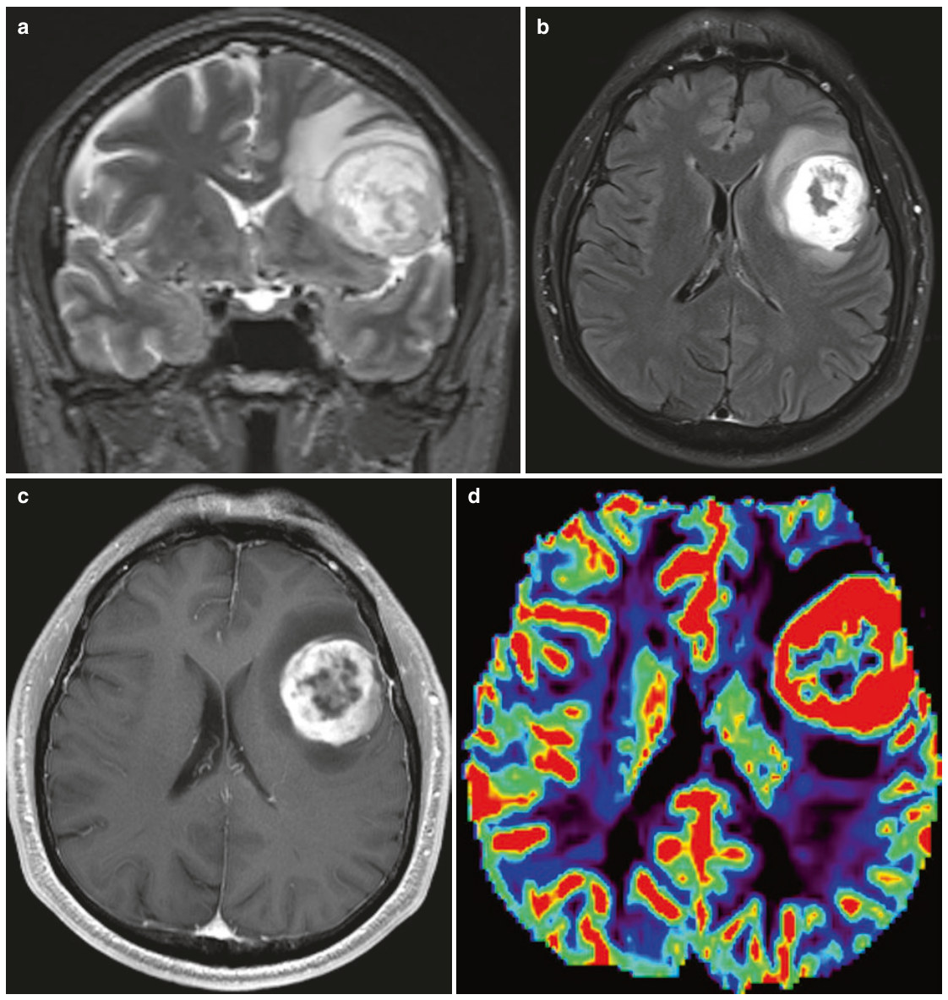
4.6 1p/19q 联合缺失
IDH 突变型胶质瘤可进一步分为 1p/19q 联合缺失型和 1p/19q 完整型。其中，1p/19q 联合缺失者为少突胶质细胞瘤，而 1p/19q 完整者为星形细胞瘤[1, 12]。星形细胞瘤通常还伴有 TP53 突变，而少突胶质细胞瘤则从不出现 TP53 突变，这也是区分这两种肿瘤的另一重要特征。如前所述，1p/19q 联合缺失状态及 TP53 突变可将既往令人困惑的混合性少突星形细胞瘤明确归入少突胶质细胞瘤或星形细胞瘤（仅凭组织学特征无法实现），从而有助于更好地管理这些患者。
4.6.1 临床意义与预后
两项大型随机对照试验已证明，在 1p/19q 缺失型肿瘤患者中，在放射治疗基础上加用包括丙卡巴肼、
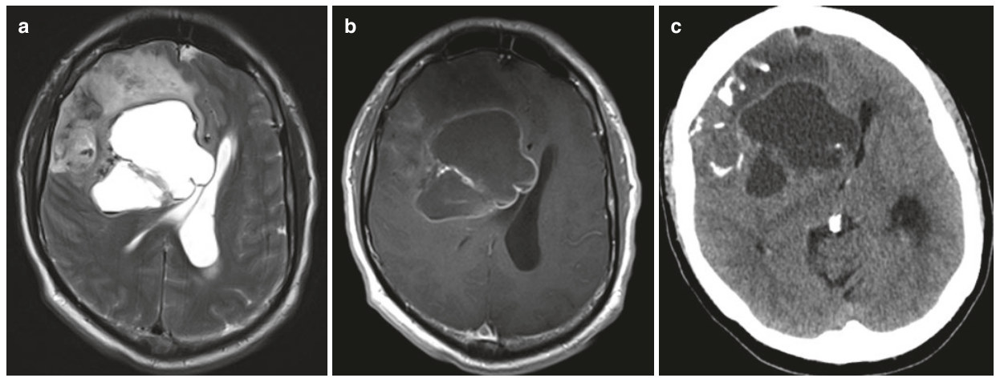
洛莫司汀和长春新碱方案（PCV）联合放疗可显著改善 1p/19q 缺失肿瘤患者的总生存期，优于单纯放疗 [23–26]。因此，该方案目前已成为
少突胶质细胞瘤的标准治疗方案。
4.6.2 影像学特征
额叶是 1p/19q 联合缺失肿瘤最好发的部位，其他常见部位包括顶叶和枕叶。相比之下，1p/19q 未缺失肿瘤多见于颞叶和岛叶皮质。形态学上，1p/19q 联合缺失肿瘤表现更为异质，且钙化为其常见特征。事实上，出现明显钙化和强化常提示为更高级别（3 级）的少突胶质细胞瘤（图 4.2）[14, 21]。边缘清楚多见于 1p/19q 未缺失肿瘤，而边缘不清则可见于两类肿瘤。T2-FLAIR 错配征对 1p/19q 未缺失肿瘤具有很高的阳性预测值，即在 T2WI 上呈高信号而在 FLAIR 序列上呈低信号的肿块性病变（图 4.3）。
左侧岛叶一界限清楚
与灰质相比，其信号强度
总体呈高信号。（b）对应轴位 FLAIR 图像显示该肿块相对于灰质主要为低信号。诊断：弥漫性星形细胞瘤，IDH 突变型，1p/19q 未共缺失（完整）肿瘤
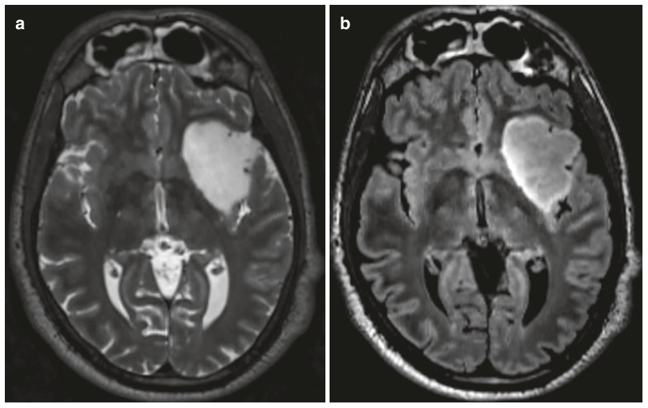
4.7 脑胶质瘤病
脑胶质瘤病作为一种特定的肿瘤亚型，曾列入 2007 版 WHO 中枢神经系统肿瘤分类。在 2016 年更新版中已将其删除 [1]。累及 3 个及以上脑叶的弥漫性浸润性非强化肿瘤不再被视为脑胶质瘤病，而被归为弥漫性胶质瘤类型，其具体亚型需结合进一步的遗传、分子检测和组织学评估确定 [1]。
4.8 CNS 肿瘤命名、综合诊断及分层报告
既往用于描述 3 级肿瘤的“间变性（anaplastic）”一词已不再使用。同时，也不再推荐使用罗马数字对肿瘤进行分级。原因是诸如将 III 级误写为 II 级等笔误，可能造成不良临床后果。因此，建议参照其他部位肿瘤采用阿拉伯数字进行分级，用于描述 CNS 肿瘤。现推荐采用分层报告对
CNS 肿瘤进行描述，依序提供组织学诊断、肿瘤分级及突变状态。例如，描述少突胶质细胞瘤时，应表述为少突胶质细胞瘤，3 级，IDH 突变型 1p/19q 共缺失肿瘤。此外，分级由突变状态而非组织学决定，即若某肿瘤组织学上表现为 1 级，但携带 TERT 启动子突变或其他通常与 4 级肿瘤相关的预后不良突变，则最终报告应将其归为 4 级肿瘤 [2]。2021 版 WHO 肿瘤分类中明确列出的其他术语还包括 NOS（未另行指定）和 NEC（未另行分类）。NOS 指经过全面分子检测后仍无明确分子特征、无法进行适当分类的肿瘤；NEC 指尽管进行了充分的病理检查，仍不符合标准 WHO 诊断的肿瘤 [2]。
4.9 儿童胶质瘤 4.11 组蛋白 H3K27 改变型肿瘤
儿童胶质瘤的生物学行为已知与成人有所不同。这与以下事实相关：在成人胶质瘤中常见的突变（包括 IDH 突变和 1p/19q 共缺失）在儿童中较少见。在儿童中常见的两种主要突变类型包括 BRAF 突变和组蛋白 H3K27 改变 [27, 28]。
4.10 BRAF 突变
这些肿瘤通常界限清楚，预后极佳。
4.10.1 影像学特征
囊性病变伴壁强化结节是其常见的影像学特征（图 4.4）。该突变类型涵盖毛细胞型星形细胞瘤、pilomyxoid 星形细胞瘤和神经节细胞胶质瘤。
这些肿瘤属于弥漫性中线胶质瘤（既往称为弥漫性浸润性桥脑胶质瘤），预后极差。它们常发生于脑干。由于肿瘤位于此处，活检或手术切除均较困难 [28]。现已发现该肿瘤也可发生于其他部位，包括丘脑、脊髓，有时也可累及大脑实质。放疗和化疗效果均不理想。
4.11.1 影像学特征
脑干（桥脑）是最常见的部位。其他常见部位包括丘脑和脊髓。如前所述，该肿瘤为弥漫性浸润性病变，导致受累结构的继发性膨胀。强化程度不一。偶尔可见不均匀强化和囊肿。在约三分之一的尸检中可见软脑膜播散。
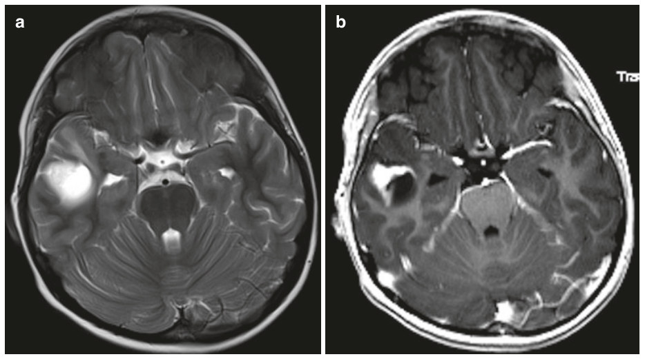
4.12 孤立性纤维性肿瘤（SFT）与血管外皮细胞瘤（HPC） 4.13 多结节性空泡化神经元肿瘤
这两种肿瘤具有相同的遗传特征，即 12q13 位点基因组倒位，使 NAB2 与 STAT6 基因融合。因此，根据 2016 年修订的 WHO 中枢神经系统肿瘤分类，这两种原先被视为不同的肿瘤被合并为 SFT/HPC 肿瘤[1]。在 2021 年中枢神经系统肿瘤分类更新中，这一命名被进一步修订为 SFT 肿瘤，删除了血管外皮细胞瘤（HPC）一词，以明确指示该肿瘤起源于软组织[2]。SFT 共分为三级，其中 SFT 1 级为缓慢生长的肿瘤，预后良好；而 SFT 2 级和 3 级预后稍差，术后复发风险高，且可发生转移。2021 年修订版 WHO 中枢神经系统肿瘤分类中新增识别的肿瘤类型——弥漫性软脑膜胶质神经元肿瘤（首次描述于 2016 年）。这是一种罕见的胶质神经元肿瘤，主要见于儿童。肿瘤主要局限于软脑膜间隙[1]。组织学上可见少突胶质细胞瘤样肿瘤细胞。
4.12.1 影像学特征
可见弥漫性软脑膜强化簇状聚集。基底池常受累，并伴有脊髓表面蛛网膜下腔的广泛受累。继发性脑积水较常见。也可出现实质受累，若存在时，多累及脊髓和脑干。此外，2021 年修订版 WHO 中枢神经系统肿瘤分类中还新识别了至少 22 种肿瘤类型（表 4.1）[2]。逐一讨论这些类型超出本文范围。其中较常见的类型之一是多结节及空泡状神经元肿瘤，概述如下。
| 弥漫性星形细胞瘤，MYB 或 MYBL1 改变 |
|---|
| 青少年多形性低级神经上皮肿瘤 |
| 弥漫性低级胶质瘤，MAPK 通路改变 |
| 弥漫性半球胶质瘤，H3 G34 突变型 |
| 弥漫性儿童型高级别胶质瘤，H3 野生型和 IDH 野生型 |
| 婴儿型半球胶质瘤 |
| 具有毛样特征的高级别星形细胞瘤 |
| 具有少突胶质细胞瘤样特征的弥漫性胶质神经元肿瘤 |
| 黏液样胶质神经元肿瘤 |
| 多结节及空泡样神经元肿瘤 |
| （改编自表 7——Louis DN 等. 2021 年 WHO 中枢神经系统肿瘤分类：摘要. Neuro-Oncology 2021） |
（改编自表 7——Louis DN 等. 2021 年 WHO 中枢神经系统肿瘤分类概述. Neuro-Oncology 2021）
该罕见类型最早在 2016 年修订版 CNS 肿瘤分类中被提及。当时尚不清楚其是一种独立的肿瘤，还是属于肿瘤-发育不良类别。在 2021 年修订版分类中，它已被认定为一种肿瘤。其预后极佳，被认为是一种“请勿触碰”病变 [29].
4.13.1 影像学特征
已知该病变可发生于脑内任何部位，但常见于幕上区域，尤其是额叶和颞叶。在形态学表现上，病变表现为皮质下白质内一簇 FLAIR 和 T2 高信号病变。已有文献报道病变累及上方皮质及脑室周围白质。病变在 T1WI 上呈低信号，无强化表现，也无扩散受限。无磁敏感效应。
4.14 结论
细胞瘤、pilomyxoid 星形细胞瘤以及节细胞胶质瘤。
- H3K27 改变型肿瘤也更常见于儿童群体。其肿瘤更具弥漫性和侵袭性。这些突变型肿瘤涵盖了先前描述的弥漫性浸润性脑桥胶质瘤谱系肿瘤。
- 新近识别出的肿瘤类型有助于我们更好地分类和理解中枢神经系统肿瘤。
1. Louis DN, et al. The 2016 World Health Organization classification of tumors of the central nervous system. Acta Neuropathol. 2016;131(6):803–20.
2. Louis DN, et al. The 2021 WHO classification of the central nervous system: a summary. Neuro-Oncology. 2021;23(8):1231–51.
3. Louis DN, et al. The 2007 WHO classification of tumours of the central nervous system. Acta Neuropathol. 2007;114(2):97–109.
4. Giannini C, et al. Oligodendrogliomas: reproducibility and prognostic value of histologic diagnosis and grading. J Neuropathol Exp Neurol. 2001;60:248–62.
5. van den Bent MJ. Interobserver variation of the histopathological diagnosis in clinical trials on glioma: a clinician’s perspective. Acta Neuropathol. 2010;120:297–304.
6. Cancer Genome Atlas Research Network, Brat DJ, et al. Comprehensive integrative genomic analysis of diffuse lower-grade gliomas. N Engl J Med. 2015;372:2481–98.
7. Metellus P, et al. Absence of IDH mutation identifies a novel radiologic and molecular subtype of WHO grade II gliomas with dismal prognosis. Acta Neuropathol. 2010;120(6):719–29.
8. Sahm F, et al. Farewell to oligoastrocytoma: in situ molecular genetics favor classification as either oligodendroglioma or astrocytoma. Acta Neuropathol. 2014;128:551–9.
9. Wiestler B, et al. Integrated DNA methylation and copy-number profiling identify three clinically and biologically relevant groups of anaplastic glioma. Acta Neuropathol. 2014;128:561–71.
10. Huse JT, et al. Mixed glioma with molecular features of composite oligodendroglioma and astrocytoma: a true “oligoastrocytoma”? Acta Neuropathol. 2015;129:151–3.
11. Wilcox P, et al. Oligoastrocytomas: throwing the baby out with the bathwater? Acta Neuropathol. 2015;129:147–9.
12. Appin CL, et al. Molecular pathways in gliomagenesis and their relevance to neuropathologic diagnosis. Adv Anat Pathol. 2015;22(1):50–8.
13. Cohen AL, et al. IDH1 and IDH2 mutations in gliomas. Curr Neurol Neurosci Rep. 2013;13(5):345.
14. Smits M, et al. Imaging correlates of adult glioma genotypes. Radiology. 2017;284:316–31.
15. Yan H, et al. IDH1 and IDH2 mutations in gliomas. N Engl J Med. 2009;360(8):765–73.
16. Beiko J, et al. IDH1 mutant malignant astrocytomas are more amenable to surgical resection and have a survival benefit associated with maximal surgical resection. Neuro-Oncology. 2014;16(1):81–91.
17. Esmaeili M, et al. 2-hydroxyglutarate as a magnetic resonance biomarker for glioma subtyping. Transl Oncol. 2013;6(2):92–8.
18. Andronesi OC, et al. Detection of 2-hydroxyglutarate in IDH-mutated glioma patients by in vivo spectral-editing and 2D correlation magnetic resonance spectroscopy. Sci Transl Med. 2012;4(116):116ra4.
19. Bertolino N, et al. Accuracy of 2-hydroxyglutarate quantification by short-echo proton-MRS at 3T: a phantom study. Phys Med. 2014;30(6):702–7.
20. Pope WB, et al. Non-invasive detection of 2-hydroxyglutarate and other metabolites in IDH1 mutant glioma patients using magnetic resonance spectroscopy. J Neurosci. 2012;107(1):197–205.
21. Khalid L, et al. Imaging characteristics of oligodendrogliomas that predict grade. AJNR Am J Neuroradiol. 2012;33(5):852–7.
22. Willman M, et al. Update for astrocytomas: medical and surgical management considerations. Explor Neurosci. 2023;2:1–26.
23. Weller J, et al. PCV chemotherapy alone for WHO grade 2 oligodendroglioma: prolonged disease control with low risk of malignant progression. J Neuro-Oncol. 2021;153:283–91.
24. Cairncross G, et al. Phase III trial of chemoradiotherapy for anaplastic oligodendroglioma: long-term results of RTOG 9402. J Clin Oncol. 2013;31:337–43.
25. van den Bent MJ, et al. Adjuvant procarbazine, lomustine, and vincristine chemotherapy in newly diagnosed anaplastic oligodendroglioma: long-term follow-up of EORTC brain tumor group study 26951. J Clin Oncol. 2013;31:344–50.
26. Patel SH, et al. T2-FLAIR mismatch, an imaging biomarker for IDH and 1p/19q status in lower-grade gliomas: a TCGA/TCIA project. Clin Cancer Res. 2017;23:6078–85.
27. Tan JY, et al. Paediatric gliomas: BRAF and histone H3 as biomarkers, therapy and perspective of liquid biopsies. Cancers (Basel). 2021;13:607.
28. Nunes RH, et al. Multinodular and vacuolating neuronal tumor of the cerebrum: a new “leave me alone” lesion with a characteristic imaging pattern. AJNR Am J Neuroradiol. 2017;38:1899. https://doi.org/10.3174/ajnr.A5281.
29. Louis DN, Perry A, Wesseling P, et al. The 2021 WHO classification of tumors of the central nervous system: a summary. Neuro Oncol. 2021;23(8):1231–51.
非创伤性颅内出血
非创伤性颅内出血
Pamela W. Schaefer 与 Myriam Edjlali
5.1 引言与影像学检查方案
非创伤性颅内出血占全部卒中的 15%，发病率为 10–30/10 万。出血性卒中较缺血性卒中的病死率和致残率更高，1 年生存率约为 30%。发病率随年龄增长而增加，男性高于女性。最常见的危险因素为高血压。其他因素如糖尿病、抗凝治疗、血脂异常及酗酒等也具有重要—
P. W. Schaefer 放射科，马萨诸塞州总医院，波士顿，马萨诸塞州，美国 电子邮件：pschaefer@partners.org；pschaefer@mgh.harvard.edu
M. Edjlali (*) 放射科，Garches 与 Ambroise Paré 医院，BioMaps，巴黎萨克雷大学，巴黎，法国 电子邮件：myriam.edjlali@aphp.fr
要作用。预后取决于危险因素的严重程度以及 ICH 的并发症，如脑积水、脑疝形成或血管痉挛的发生。初步影像学评估通常包括 CT 扫描，随后行 CT 血管成像（CTA）以检出急性出血及其病因。虽然 MRI 在急性期较少使用，但其敏感度高，尤其是在症状出现后短时间内（<24 h）进行检查时。在排除颅内动脉瘤后，MRI 对查找颅内出血的潜在原因具有重要价值，CTA 可用于排除动脉瘤。影像学检查方案应包括 DWI 以检出相关的缺血性病变，理想情况下采用 3D FLAIR 序列以减少脑脊液（CSF）伪影，便于检出水肿和蛛网膜下腔出血；SWI 序列用于显示淀粉样血管病相关的慢性微出血和含铁血黄素沉积；时间飞跃法 MRA（必要时可联合钆增强以评估远端动脉狭窄）；以及动态 MRA 以评估动静脉分流。动脉自旋标记（ASL）序列对于检出脑血流量（CBF）增加高度有用，可提示肿瘤或血管分流的存在。ASL 对血液成分不敏感，是分析出血性成分时的首选灌注序列。还应获取 3D T1 加权序列平扫及增强扫描，以评估是否存在潜在的占位性病变。
5.2 蛛网膜下腔出血
5.2.1 概述
蛛网膜下腔出血（SAH）是第三常见的卒中亚型。过去几十年中，蛛网膜下腔出血的发病率有所下降，可能与生活方式的改变（如戒烟和更好地控制高血压）有关。约四分之一的蛛网膜下腔出血患者在送达医院之前即已死亡。对于能够送达医院的患者，整体预后相对较好，但仍面临长期神经精神问题（如抑郁）的风险增加。该病仍对公共健康有重大影响，因为平均发病年龄为 50 岁中期，导致多年生活质量下降 [1]。蛛网膜下腔出血（SAH）定义为血液位于基底池和大脑半球蛛网膜下腔内的脑脊液中，即位于蛛网膜与软脑膜之间。非外伤性蛛网膜下腔出血（SAH）的年发病率为 9/10 万。这是一种罕见但严重的事件，估计 48 h 内死亡率为 40%。85% 的病例与颅内动脉瘤破裂相关（图 5.1）。如果怀疑蛛网膜下腔出血，应进行脑部影像学检查。
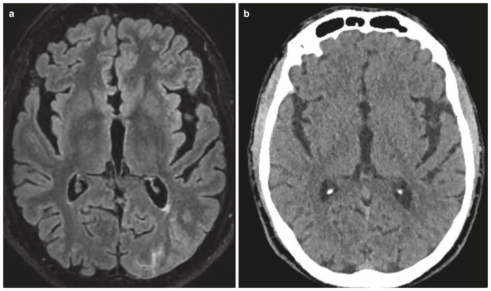
应紧急施行以明确诊断、识别任何并发症并查明其原因。在早期阶段，即发病后 24 h 内，对头颅进行 CT 扫描并联合 Willis 环 CT 血管成像（CTA），是用于确诊 SAH 并进行病因学诊断（以发现颅内动脉瘤）的推荐检查方法。当在蛛网膜下腔内观察到平扫高密度影（通常累及基底池、大脑纵裂池及外侧裂池）时，即可通过 CT 扫描确立蛛网膜下腔出血（SAH）的诊断。若患者临床状况允许，可考虑行头颅 MRI。FLAIR 序列在显示蛛网膜下腔出血方面比 CT 扫描更敏感（图 5.2），尤其是在症状出现 48 h 之后，并且对沟回出血的病因学诊断具有更高的敏感度。此外，FLAIR 联合 SWI 是检出急性、亚急性或晚期蛛网膜下腔出血（SAH）最有效的扫描方案。若上述检查结果为阴性但临床仍高度怀疑，应行腰椎穿刺。
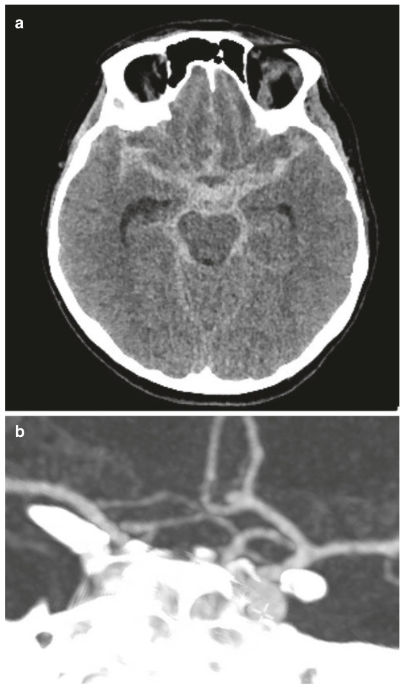
对脑沟出血的病因学诊断具有更高的敏感度。此外，联合应用 FLAIR 和 SWI 是检出急性、亚急性及晚期蛛网膜下腔出血（SAH）的最有效方案。若上述检查结果正常而临床仍高度怀疑，应行腰椎穿刺。
5.2.1.1 蛛网膜下腔出血的主要病因
蛛网膜下腔出血（SAH）[1] 可由多种潜在原因引起，主要病因可分为以下几类[2]:
1. 动脉瘤[3]：动脉瘤是血管壁薄弱并向外膨出的区域，是 SAH 的主要病因之一。当动脉瘤破裂时，血液释放至蛛网膜下腔，从而导致 SAH。与 SAH 相关最常见的动脉瘤是位于 Willis 环的囊状动脉瘤。
2. 硬脑膜动静脉瘘（AVF）或皮层静脉
血栓形成[4]：硬脑膜（包裹大脑的膜）内动脉与静脉之间的异常连接（即硬脑膜动静脉瘘）或皮层静脉血栓形成也可导致 SAH。这些病变扰乱正常的血流，增加出血风险。
3. RCVS（可逆性脑血管收缩
综合征）[5]：RCVS 是 SAH 一种相对罕见但重要的病因。该病以脑血管突然狭窄为特征，可引起剧烈头痛，部分病例可进展为 SAH。血管收缩通常随时间推移可逆。4. 其他：非创伤性蛛网膜下腔出血（SAH）也可来源于较为少见的病因，包括心内膜炎继发真菌性动脉瘤形成、血管炎、淀粉样血管病[6]、肿瘤、动静脉畸形、出血性疾病及感染（图 5.3）。在某些情况下，明确具体的潜在病因可能是一项诊断难题，需要进行全面评估。了解 SAH 的潜在病因对于合理管理和治疗决策至关重要，因为不同病因可能需要不同的诊断流程和治疗策略。
5.2.1.2 在 SAH 评估中如何判断多发颅内动脉瘤中的哪一个发生了破裂出血？
在多发颅内动脉瘤的情况下（约占 15%～20%），必须在处理其他动脉瘤之前优先治疗破裂的动脉瘤。虽然 SAH 的出血分布可提供关于破裂动脉瘤的一些线索，但通常不足以作出确定性结论。
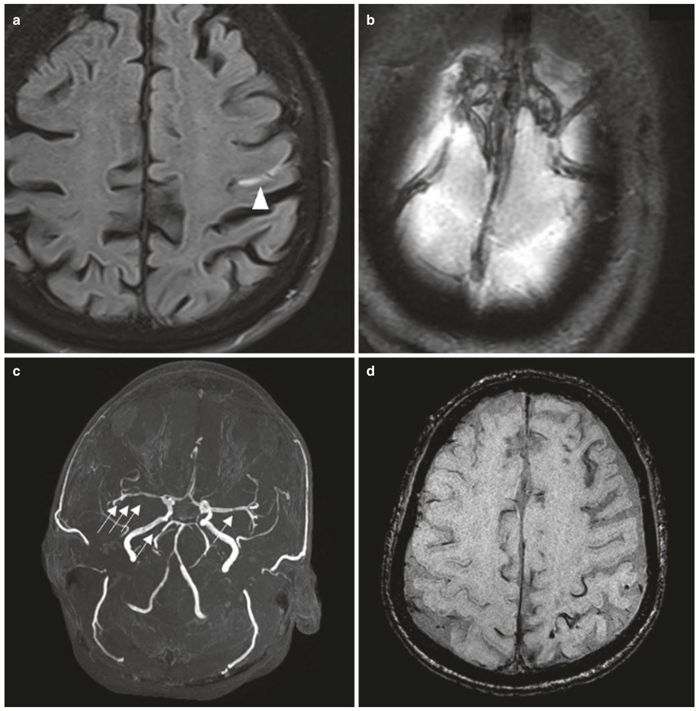
值得参考的一项指标是动脉瘤壁呈不规则、扇贝样"水疱状"外观，提示存在裂隙或破裂。其他指标包括动脉瘤直径大于 6 mm、较既往扫描显示增大。此外，在 3.0 T MRI 上采用三维 T1 加权 FSE 序列联合钆增强时，动脉瘤壁的环形强化被认为是提示动脉瘤不稳定的一项征象（图 5.4）。该征象在破裂动脉瘤中较同一患者尚未破裂的动脉瘤更为常见
与同一患者尚未破裂的动脉瘤相比 [7]。
5.2.1.3 当遇到脑池 SAH 且 CT 血管成像阴性时，应考虑三种可能
1. 未被发现的动脉性病变：可能存在
动脉性病变但未被检出。
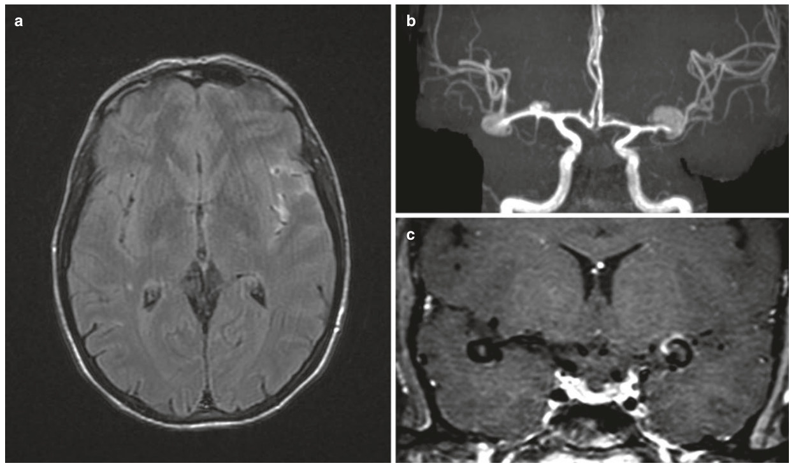
后循环的小型颅内动脉瘤在常规影像上识别困难。有时，由于与Willis环正常分支重叠，小动脉瘤可能无法显示。借助容积再现技术逐支分析血管，有助于检出此类动脉瘤。此外，还可能存在
3. 无动脉病变：中脑周围出血（图 5.5），占非创伤性蛛网膜下腔出血（SAH）的 5–10%[9]，由静脉出血引起，导致出血位于脚间池和脑桥周围池。出血可略有延伸，但主要局限于鞍上池和运动皮质基底区域或半球间沟。偶尔可在枕角内观察到少量血液，但并非真正的脑室内出血。患者通常以稳定的临床
状态就诊。中脑周围出血的诊断依赖于前述临床和影像学标准，并结合 CT 血管成像、MRA 或 Willis 环脑血管造影未发现动脉瘤结构。与动脉瘤性 SAH 相比，其初始临床表现以及长期预后均明显更为良好。多数医疗团队选择在初次事件数周后进行二次无创性病因学检查。
5.3 脑实质出血
5.3.1 概述
脑实质出血约占全部卒中的15%[10]。在老年人群中，最常见的病因包括高血压、脑淀粉样血管病、抗凝治疗、急性缺血性卒中的出血性转化以及原发或继发性肿瘤。在青年成人及儿童中，常见病因包括动静脉畸形、海绵状血管瘤、脑静脉窦血栓形成等常见血管畸形，以及烟雾病和硬脑膜动静脉瘘等较罕见病变
- 与动脉瘤破裂相关的影像学特征包括：瘤体大于6 mm、形态不规则以及瘤壁光滑的同心性强化。
- 中脑周围出血源于静脉性出血，预后良好。
- 大脑凸面SAH可由RCVS或硬脑膜动静脉瘘所致。
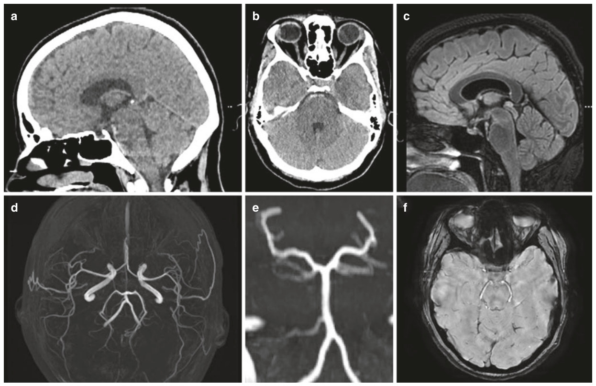
亦应考虑。IPH的其他罕见病因包括可逆性脑血管收缩综合征（RCVS）、后部可逆性脑病综合征（PRES）、血管炎、药物毒性及感染（如毛霉菌病和曲霉菌病）。
5.3.2 脑实质出血的主要影像学特征
急性脑实质出血在NCCT上通常因蛋白质含量高而呈均匀高密度，CT值约为40~80 HU。出现液-液平面或低密度灶（漩涡征）可提示超急性（未凝固）出血、凝血功能障碍和/或活动性出血。随着IPH的分解，其密度通常在1~2周时与脑组织呈等密度，在1~2个月时呈低密度，接近脑脊液密度。在最初数小时的MRI上，脑内血肿由含有主要成分为氧合血红蛋白的完整红细胞组成，在T1WI上呈等信号，在T2WI上呈高信号。随时间推移，信号变化始于血肿周边并向内扩展。1~3天时，血肿主要以脱氧血红蛋白为特征，在T1WI上呈等信号，在T2WI上呈低信号。早期亚急性期（3~7天），脱氧血红蛋白转变为细胞内高铁血红蛋白，在T1WI上呈高信号，在T2WI上呈低信号。随后1~4周，红细胞溶解。细胞外高铁血红蛋白在T1WI和T2WI上均呈高信号。4周后，残留腔隙皱缩呈裂隙状，主要含有含铁血黄素巨噬细胞，在T1WI和T2WI上均呈低信号（表5.1）。氧合血红蛋白和细胞外高铁血红蛋白不表现磁敏感效应，而脱氧血红蛋白、细胞内高铁血红蛋白和含铁血黄素则具有磁敏感效应。最初数小时之后，由于血肿含有多种血液成分，其在SWI图像上几乎总是出现晕染效应。周围水肿在最初2周内加重，约1个月时消退。从1周到1个月，经静脉注射钆对比剂后，由于炎性反应和血脑屏障破坏，可见光滑的环形强化
| 时间 | 平扫 CT | 增强 CT | T1 | T2 | T2* |
|---|---|---|---|---|---|
| 超急性期 | 低密度 | 等信号 | 高信号 | ||
| 急性期（6 h ～ 3 天） | 低密度 | 等信号 | 低信号 | 低信号 | |
| 亚急性早期（3～7 天） | 高信号 | 高信号 | 低信号 | 中心低信号 | |
| 亚急性晚期（1～4 周） | 低密度 | 强化 | 中心等信号 | 高信号 | 低信号 |
| 慢性期（数月～数年） | 低密度 | 低信号 | 低信号 | 低信号 |
及血脑屏障破坏所致的炎性反应。
5.3.3 预后因素
在描述血肿时应纳入多项因素，因为这些因素预示着较高的死亡率，并可能需要神经外科手术干预。这些因素包括可预测血肿扩大的征象，例如平扫 CT 上血肿内的低密度区、形态或边缘不规则、CTA 上对比剂外溢、脑室内扩展以及可用 ABC/2 公式测算的血肿大小。提示需要行去骨瓣减压术的脑疝，以及提示需要行分流手术的脑积水，同样重要。年龄和格拉斯哥昏迷评分是预测死亡率的关键临床因素。ICH 评分整合了上述多项因素，可在早期快速评估患者预后 [11]。评分 ≥ 4 分预测死亡率为 97%。
5.3.4 CTA 或 MRA 上存在潜在血管异常的病变
当患者因脑叶出血就诊于急诊科时，通常会接受 CT 血管成像检查（表 5.2）。约 15% 在 CTA 上可见潜在的大血管或中等血管血管异常。一项大型研究中，最常见的潜在血管异常为动静脉畸形（43%）、动脉瘤（24%）以及静脉窦血栓形成（19%）。较为罕见的原因包括烟雾综合征、血管炎以及可逆性脑血管收缩综合征 [12]。
密度/信号相对于正常脑实质。NCCT 平扫 CT，CECT 增强 CT
| 病变 | 临床 | 除脑实质血肿外的关键影像学特征 |
|---|---|---|
| CTA 显示的潜在血管异常 | ||
| 动静脉畸形 | • 年龄——儿童、青年 • 危险因素——高龄、体积较大、深静脉引流、静脉狭窄、供血动脉或瘤内动脉瘤 • 综合征——HHT、Wyburn-Mason、RASA • 症状——癫痫、头痛、急性神经功能缺损 • 病因——先天性 | • 出血部位——脑叶或深部灰质核团• 平扫 CT——血管高密度、钙化• CTA/MRA——动脉期供血动脉、瘤巢及引流静脉显影• T2WI——流空信号、搏动伪影• FLAIR——胶质增生、水肿 |
| 脑静脉窦血栓形成 | • 年龄——儿童、青年及老年• 危险因素——高凝倾向、妊娠、口服避孕药、脱水、感染• 症状——头痛、癫痫发作、脑病、急性神经功能缺损• 病因——高凝状态 | • 出血部位——脑叶（上矢状窦、横窦、乙状窦）或深部灰质核团（丘脑、内囊后肢、直窦）• 平扫 CT——静脉呈高密度（索带征）、窦呈高密度（三角征）• T2WI——流空信号消失• FLAIR——水肿• DWI——扩散不受限或受限• SWI——血栓形成血管或静脉内磁敏感伪影• CTV、增强 MRV、增强 MPRAGE 及 T2 SPACE 对血栓形成检出均具有高敏感度与特异度 |
| 缺血性脑卒中出血性转化 | • 年龄——老年人多于青年人及儿童• 危险因素——再灌注治疗、较大范围的梗死、年龄较大、高血压、高血糖• 时间——1～4 天• 病因——血液再灌注进入缺血组织 | • 出血部位——周围点状出血多于脑实质出血（见于大脑中动脉 M1 段卒中时的基底节区）• CTA——再通或持续存在的血栓；当侧支循环再灌注引起出血时• SWI 对出血的检出优于平扫 CT |
| 动脉瘤 | • 年龄——青年多于老年• 危险因素——动脉瘤大小 >5 mm、分叶状、随访中增大• 症状——严重头痛、局灶性神经功能缺损• 病因——先天性 | • 出血部位——基底节（M1 段动脉瘤）、颞叶前部（大脑中动脉分叉部动脉瘤）、额叶下部（前交通动脉动脉瘤）、其他部位（感染性动脉瘤）；通常合并蛛网膜下腔出血• 平扫 CT——动脉瘤密度低于血凝块• T2WI——流空信号伴分层样表现• CTA 及增强 MRA——动脉瘤检出敏感度与特异度均 >90% |
| 烟雾病 | • 年龄——儿童及青年• 症状——急性神经功能缺损• 相关因素——放射线、神经纤维瘤病 1 型（NF1）、唐氏综合征、动脉粥样硬化• 病因——特发性 | • 出血部位——基底节• FLAIR——“常春藤征”——侧支血管内缓慢血流所致的脑沟高信号• T2WI——侧支血管网内流空信号，远端颈内动脉及近端大脑中动脉、大脑前动脉内流空信号消失• 前循环及分水岭区可见不同时期卒中灶• CTA/MRA——远端颈内动脉、近端大脑中动脉及大脑前动脉重度狭窄或闭塞，伴来自后循环的 Willis 环及软脑膜侧支循环 |
| 可逆性脑血管收缩综合征 | • 年龄——青年至中年女性• 危险因素——妊娠、偏头痛、血管活性药物• 症状——反复雷击样头痛、局灶性神经功能缺损• 病因——可逆性血管痉挛 | • 出血部位——脑叶实质出血及大脑凸面蛛网膜下腔出血• CTA/MRA——一二级分支多发狭窄• DWI——分水岭区梗死• FLAIR——皮质及皮质下血管源性水肿• 血管壁成像——管壁均匀增厚，无强化 |
| 原发性中枢神经系统血管炎 | • 年龄——中年男性• 症状——头痛、脑病、卒中、癫痫• 病因——T 细胞介导的炎症 | • 出血部位——脑叶出血及大脑凸面蛛网膜下腔出血• CTA/MRA——Willis 环近端和/或远端血管狭窄• DWI/FLAIR——不同血管供血区不同时期的卒中• CE T1——软脑膜强化• 血管壁成像——同心性强化 |
| 病变 | 临 | 床 | 关键 | 除脑实质血肿外的影像学特征 |
|---|---|---|---|---|
| 硬脑膜动静脉瘘 | • • • • | 年龄——中老年 危险因素——既往静脉窦血栓形成、皮层静脉引流 症状——搏动性耳鸣、颅神经麻痹、眼眶症状、卒中 病因——特发性或继发于外伤、手术、静脉窦血栓形成、肿瘤、感染 | • • • | 出血部位——脑叶：小脑、内侧颞叶及枕叶；大脑凸面蛛网膜下腔出血 时间分辨 CTA/MRA——供血动脉（颈内动脉、颈外动脉、脑膜中动脉）增粗，直接与增粗的引流静脉或异常静脉窦相连，可见动脉化血流 T2WI——异常流空信号 |
| 后部可逆性 | • | 发病年龄——青年成人 | • | 出血部位——20% 为脑叶出血 |
| 脑病 | • | 症状——头痛、癫痫、 | • | FLAIR——顶叶及枕叶水肿/缺血 |
| 综合征 | • | 脑病、视觉改变 病因——急性血压变化或神经毒素导致自身调节功能丧失 | • | 皮层下白质或分水岭区分布 CTA/MRA——后循环血管收缩和/或舒张伴串珠样改变 |
| 感染 | • • • | 年龄——任何年龄 危险因素——免疫低下 病因——毛霉菌病/曲霉菌病——由鼻窦腔播散至颅底和 Willis 环 细菌性心内膜炎——血行播散至 MCA、ACA、PCA 远端分支 | • • | 毛霉菌病/曲霉菌病——Willis 环血管狭窄和/或假性动脉瘤形成，伴基底节区出血、梗死、脓肿和水肿 细菌性心内膜炎——远端假性动脉瘤伴脑叶出血、脓肿、梗死、水肿 |
| CTA 上未见潜在血管异 | 异常 | 常 | ||
| 脑淀粉样 | • | 年龄——65 岁以上 | • | 出血部位——脑叶 |
| 血管病 | • • | 症状——认知障碍、局灶性神经功能缺损、癫痫 病因——淀粉样-β 肽沉积于小软脑膜及皮质血管壁 | • • • • • • • | 灰白质交界区微出血；软脑膜出血/含铁血黄素沉积；脑室周围白质脑病；皮质/皮质下腔隙；明显的血管周围间隙；软脑膜强化（炎性 CAA）；血管源性水肿（炎性 CAA） |
| 高血压性 | • | 年龄——老年人 | • | 出血部位——基底节、丘脑、脑干、 |
| 血管病变 | • • | 症状——急性神经功能缺损；病因——控制不佳的高血压 | • • • | 小脑微出血、腔隙性梗死、弥漫性白质疏松 |
| 海绵状血管畸形 | • • • • | 年龄——40–60 岁；危险因素——放射史；症状——急性神经功能缺损、癫痫发作；病因——透明变性的薄壁毛细血管伴周围含铁血黄素沉积 | • • • • • | 中央呈“爆米花样”表现伴 T1 高信号灶；完整的含铁血黄素环；中央造影剂渗漏所致强化；近期出血时伴水肿；家族性病例中仅在 SWI 上可见的众多其他病变 |
| 肿瘤性出血 | • • • • | 年龄——老年人；危险因素——化疗、放疗、高血压、抗凝治疗；症状——急性神经功能缺损、癫痫发作；病因——肿瘤血管破裂、肿瘤侵及实质动脉或静脉 | • • • • • | 强化组织；出血产物的延迟演变；含铁血黄素环不完整；液-液平面或血性囊性坏死性液平面；不成比例的大量水肿 |
| 出血性 | • | 年龄—任何年龄 | • | FLAIR/T2 高信号膨胀性病变合并出血 |
| 脑炎 | • • | 症状——发热、脑病、癫痫发作；病因——疱疹病毒、黄病毒、EB 病毒 | • • | 累及皮质及皮质下白质；单纯疱疹病毒——边缘系统；黄病毒、EB 病毒——基底节、丘脑、脑干 |
5.3.4.1 动静脉畸形
动静脉畸形位于幕上，约 65% 的幕上 AVM 为浅表型（脑叶）。通常为散发性，但可与遗传性出血性毛细血管扩张症、Wyburn-Mason 综合征或 RASA 1 基因突变等综合征相关。AVM 通常在儿童或青年时期确诊。破裂风险
动静脉畸形由粗大的供血动脉、中心通过动静脉分流的畸形血管团以及扩张的引流静脉构成。AVM 最常位于脑实质内，但也可发生于脑室内或位于蛛网膜下腔[13]。85%
随年龄增加、存在供血动脉或巢内动脉瘤、静脉狭窄或深静脉引流而升高。AVM 通常依据 Spetzler-Martin 分级系统进行分级，根据病灶大小、是否存在深静脉引流及部位功能重要性来预测手术并发症风险。位于幕下、位置较深和/或伴深静脉引流、或既往有出血史的 AVM，其出血风险更高。AVM 可伴钙化，在平扫 CT 上呈轻度高密度，CTA 动脉期及动态增强 MRA 上出现强化，T2WI 上表现为显著的流空信号及搏动伪影。其他特征可包括周围水肿或胶质增生（FLAIR 显示最佳）及急性或慢性出血（SWI 显示最佳），分布于周围
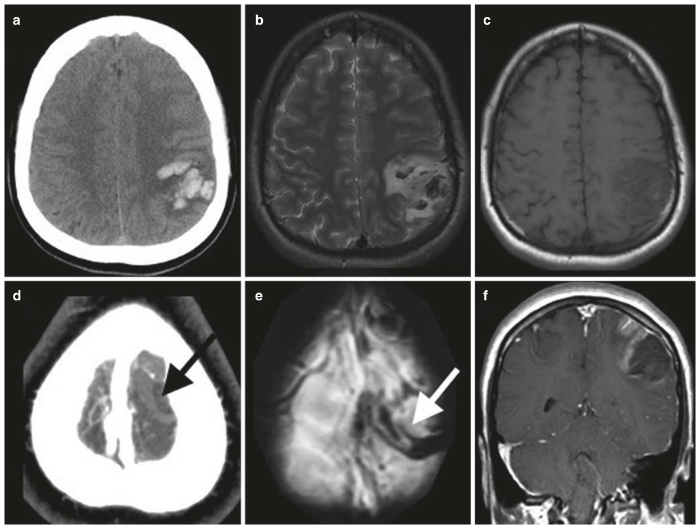
脑实质。数字减影血管造影仍是诊断和评估 AVM 的金标准。
5.3.4.2 脑静脉窦血栓形成
脑静脉窦血栓形成是指血栓形成并扩展，导致颅内静脉窦和静脉闭塞。重要的危险因素包括高凝状态、妊娠、口服避孕药、脱水、感染及炎症性疾病以及恶性肿瘤。症状和影像学表现因部位而异[14]。最常见的症状为头痛、癫痫发作、脑病及局灶性神经功能缺损。脑叶出血通常由上矢状窦、横窦、乙状窦和/或皮层静脉血栓形成所致（图 5.6）。基底节和丘脑出血
通常由大脑内静脉、Galen 静脉或直窦血栓形成所致。NCCT 表现包括血栓形成的静脉（索征）或静脉窦（致密三角征）呈高密度影，见于约 30% 的病例，以及非动脉分布区的脑实质出血和/或血管源性水肿与占位效应。CT 静脉成像对 CVT 的检出敏感度和特异度均超过 90%。MRI 表现包括 T2 加权像上正常流空信号消失。急性期血栓及脑实质血肿通常表现为 T1 等信号、T2 低信号；亚急性早期表现为 T1 高信号、T2 低信号；亚急性晚期则表现为 T1 及 T2 均呈高信号。水肿在 FLAIR 像上显示最佳，表现为扩散受限和/或扩散加快。增强 MR 静脉成像、增强容积 T1 加权像及 T2 容积 SPACE 序列对 CVT 的检出敏感度和特异度均高于 90%。
5.3.4.3 缺血性脑卒中出血性转化
急性缺血性脑卒中出血性转化的发生率报道不一。危险因素包括静脉溶栓和/或取栓的再灌注治疗、梗死面积较大、高龄、高血压及高血糖[15]。大多数出血性转化表现为点状出血，CT 上呈小的等密度或高密度周边灶，在 SWI 上呈开花样低信号，且无症状。少数可进展为脑实质血肿，通常位于前循环大面积梗死患者的基底节区。接受静脉 tPA 治疗的患者，出血性转化通常发生在 24 h 内，其中 6% 有症状。自发性出血可发生于卒中起病后 4 天内，其中 3% 有症状。再灌注治疗后，可采用双能 CT 鉴别对比剂外溢与出血。
部分血栓形成。动脉瘤可伴动脉搏动伪影。CTA 及增强 MRA 对动脉瘤检出的敏感度和特异度均大于 90%。
5.3.4.5 烟雾病综合征
烟雾病是一种特发性、非动脉粥样硬化性、非炎症性动脉闭塞综合征，多见于儿童及青年成人。其特征性表现主要为颈内动脉远端及大脑前、大脑中动脉近端进行性闭塞，约 50% 的病例可累及后循环[17]。作为代偿机制，Willis 环区域形成多发侧支血管，累及豆纹动脉及丘脑穿通动脉，以及软脑膜动脉和硬脑膜动脉。通常由后循环发出的软脑膜侧支亦可形成。儿童通常表现为分水岭及皮质下白质梗死，而青年成人则更常因侧支血管破裂而出现基底节区出血（图 5.7）。CTA 和 MRA 对识别大血管闭塞、狭窄及较大侧支血管具有较高敏感度，但数字减影血管造影仍是评估侧支血管范围的金标准。MRI 表现包括 T2 WI 上异常流空信号、常春藤征（因侧支血管血流缓慢所致脑沟 FLAIR 高信号）、急性缺血性卒中以及脑实质出血，包括基底节区和深部白质的微出血。烟雾综合征是指影像表现类似烟雾病的一组疾病，包括动脉粥样硬化、镰状细胞病等血液系统疾病、炎症及感染性病因，以及放射治疗。治疗包括外科直接血运重建（如 MCA 与 STA 旁路术）或间接血运重建（如 EDAS，即脑-硬膜-动脉贴敷术）。
5.3.4.6 可逆性脑血管收缩综合征 5.3.4.4 动脉瘤
动脉瘤通常以蛛网膜下腔出血为表现，但当其位于 M1 段并指向上方破入基底节区、位于 MCA 分叉处并指向后方破入颞叶、或位于前交通动脉并指向上外方破入额下叶时，也可表现为单纯性脑实质内出血（IPH）。周围性真菌性动脉瘤也可破裂进入邻近脑实质（图 5.7）。导致单纯性 IPH 的近端动脉瘤通常大于 12 mm [16]。在 NCCT 上，其密度低于相邻血肿，但可具有与相邻血肿密度相似的部分血栓形成的高密度壁。在 MRI 上，动脉瘤在 T2WI 上呈流空信号，并呈层状外观，若存在出血，其信号强度取决于出血分期
可逆性脑血管收缩综合征的特征为快速起病的反复雷击样头痛及脑动脉痉挛，且在 12 周内自行缓解。该综合征多见于青年至中年女性，与妊娠、偏头痛及使用血管活性药物（如曲普坦类、苯丙胺类、选择性 5-羟色胺再摄取抑制剂和可卡因）相关。CTA、MRA 和 DSA 表现为大至中等动脉（一级和二级分支）的光滑、逐渐变细的狭窄，其后为异常扩张的节段或狭窄远端呈串珠样改变（图 5.7）。约 20% 发生脑叶出血，约 35% 在大脑凸面发生蛛网膜下腔出血，近 30% 出现分水岭区梗死，近 40% 出现皮质及皮质下血管源性水肿 [18]。值得注意的是，FLAIR 可显示水肿的范围，DWI 易区分血管源性水肿与细胞毒性水肿，FLAIR 上脑沟的高信号可反映蛛网膜下腔出血或侧支循环内的缓慢血流，SWI 可勾勒出出血的范围。血管壁成像通常表现为均匀增厚的管壁，且无强化。治疗包括使用钙通道阻滞剂，90% 的患者可完全康复，无持续性神经功能缺损。
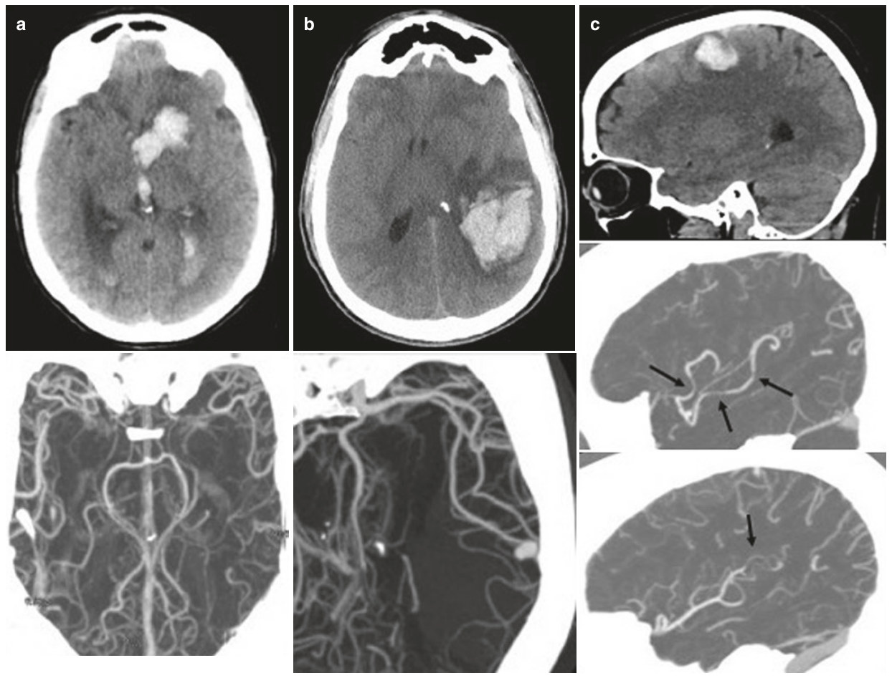
区分血管源性水肿与细胞毒性水肿，FLAIR 脑沟高信号可提示蛛网膜下腔出血或侧支血管血流缓慢，SWI 可勾画出出血范围。血管壁成像通常显示管壁均匀增厚且不强化。治疗包括钙通道阻滞剂，90% 的患者无持续性神经功能缺损而恢复。
感染性病变可导致脑实质出血，其原因为动脉受侵犯伴感染性动脉瘤形成及破裂。毛霉病及曲霉病为血管侵袭性真菌感染，发生于鼻窦腔，可直接侵犯颅底并蔓延至 Willis 环，导致基底脑膜炎、假性动脉瘤形成、基底节出血、梗死及脓肿。感染性心内膜炎相关细菌可经血行播散至灰白质交界处，引起感染并导致周围假性动脉瘤形成、脑叶出血、梗死及脓肿。水痘血管病变通常与血管狭窄及缺血性梗死相关，但也可形成动脉瘤并导致脑实质或蛛网膜下腔出血。
5.3.4.7 其他
感染 颅内感染可因动脉受侵伴感染性动脉瘤形成及破裂而致脑实质出血，
原发性中枢神经系统血管炎 原发性中枢神经系统血管炎多见于中年男性，被认为是由 T 细胞介导的脑实质及软脑膜中、小动脉的炎症所致。常见临床表现包括头痛、脑病、卒中和癫痫发作。常见影像学表现包括 60% 的患者出现近端和/或远端狭窄、实质性出血和出血性梗死、不同血管分布区的不同病程卒中、大脑凸面出血以及血管壁的同心性强化[19]。治疗采用糖皮质激素和细胞毒性药物。系统性血管炎可出现类似的中枢神经系统表现，但其特征为累及多器官系统，可借此鉴别。
硬脑膜动静脉瘘 硬脑膜动静脉瘘（dAVF）为获得性血管畸形，其动脉（通常供应脑膜）与硬脑膜静脉窦之间存在异常连接。症状取决于瘘口位置以及是否伴有脑水肿或出血，包括搏动性耳鸣、颅神经麻痹、眼眶症状（海绵窦颈动脉瘘）以及局灶性神经功能缺损。在一项大型研究中，约 24% 的患者出现颅内出血，其中 52% 为单纯脑实质出血，22% 为单纯 SAH，23% 为两者并存 [20]。66% 的瘘口累及小脑幕、岩骨窦、窦汇、横窦和/或枕骨大孔。IPH 通常位于瘘口附近的小脑或内侧颞叶、枕叶。当存在皮质静脉引流时，出血风险增高；几乎所有硬脑膜 AVF 伴颅内出血的患者均存在皮质静脉反流。时间分辨 CTA 和 MRA 对硬脑膜 AVF 的检出敏感度超过 90% [21]。CTA 和 MRA 表现包括颈内动脉、颈外动脉或脑膜动脉增粗，穿骨血管增粗，硬脑膜静脉窦异常（异常通道、早期充盈及动脉样血流），以及皮质静脉和脑膜静脉扩张。这些异常血管在 T2WI 上亦可表现为异常流空信号。SWI 图像可显示脑实质、蛛网膜下腔、脑室内或硬膜下出血。脑实质水肿（于 FLAIR 图像显示最佳）亦可出现。Cognard 与 Borden 分级用于评估静脉引流类型，以预测未来出血风险。
Pres 后部可逆性脑病综合征是一种神经毒性状态，由血压急性变化和/或循环毒素导致自身调节功能丧失及血脑屏障破坏所致。典型表现为头痛、癫痫发作、脑病和视力变化。关键影像学表现为顶叶和枕叶皮层下白质及皮质、和/或分水岭区域分布的 FLAIR/T2 高信号水肿。受累区域中，约 15% 可合并脑实质出血，10–25% 出现弥散受限所提示的梗死 [22]。CTA、MRA 及 DSA 可显示血管收缩、血管扩张或两者并存（呈串珠样表现）。
5.3.5 CTA 或 MRA 无潜在血管异常的病变
CTA 或 MRA 上的异常
当患者因脑叶出血就诊于急诊时，通常会接受 CT 血管成像扫描。约 85% 的患者 CTA 或 MRA 未显示致病性血管病变。此情况下最常见的脑实质出血原因为高血压、脑淀粉样血管病、凝血功能障碍或潜在肿瘤。
5.3.5.1 脑淀粉样血管病
脑淀粉样血管病（CAA）是一种脑血管疾病，由脑淀粉样β肽沉积于软脑膜及皮质小血管壁所致。CAA 是 65 岁以上患者中高达 50% 的自发性脑出血的原因，且其发病率随年龄增长而升高。例如，60–69 岁人群尸检时约 5–9% 可见淀粉样物质沉积，而 90 岁以上人群尸检时淀粉样物质沉积比例达 43–58% [23]。常见临床表现包括头痛、局灶性神经功能缺损、癫痫发作及认知障碍。Boston 标准 2.0（表 5.3）综合临床、影像学和病理学标准以判断诊断概率 [24]。关键影像学特征包括脑叶出血、灰白质交界处微出血、软脑膜出血及含铁血黄素沉积、脑室周围白质脑病、皮质/皮层下腔隙灶以及显著的血管周围间隙（图 5.8）。炎症型 CAA 还可见软脑膜强化及血管源性水肿，且倾向于在较年轻时发病。
| 表 | 表 5.3 波士顿 | 散发性脑淀粉样血管病诊断标准 2.0 |
| 1 | . 肯定 CAA | 完整尸检证实：• 表现为自发性脑出血（ICH）、短暂性局灶性神经症状发作（TFNEs）、皮质表面含铁血黄素沉积（cSAH）或认知障碍/痴呆 • 伴血管病变的重度 CAA • 无其他诊断性病变 |
| 2 | . 很可能 CAA，伴病理学支持 | 临床资料及病理组织（清除的血肿或皮质活检）证实：• 表现为自发性 ICH、TFNEs、cSAH 或认知障碍/痴呆 • 标本中可见一定程度的 CAA • 无其他诊断性病变 |
| 3 | . 很可能 CAA | 临床资料及 MRI 证实 • 年龄 ≥ 50 岁 • 表现为自发性 ICH、TFNEs 或认知障碍/痴呆 • T2* 加权 MRI 上见以下任意组合的 ≥ 2 个严格脑叶出血性病变——ICH、脑微出血（CMB）、皮层表面含铁血黄素沉积/皮层表面蛛网膜下腔出血（cSS/cSAH）灶；或 • 1 个脑叶出血性病变 + 1 个白质特征（重度 CSO-血管周围间隙或 WMH-MS） • T2* 加权 MRI 上无任何深部出血性病变（ICH、CMB） • 无其他出血性病变的病因 • 小脑出血性病变不计入脑叶或深部出血性病变 |
| P | . 可能 CAA | 临床数据及 MRI 表现 • 年龄≥ 50 岁 • 以自发性 ICH、TFNE 或认知障碍/痴呆就诊 • 排除其他出血原因 • 在 T2* 加权 MRI 上有 1 处严格位于脑叶的出血性病变：ICH、CMB、cSS/cSAH 病灶；或 • 1 项白质特征（严重的 CSO-PVS 或 WMH-MS） • T2* 加权 MRI 上无任何深部出血性病变（ICH、CMB） • 排除其他出血性病变的病因 • 小脑的出血性病变不计入脑叶或深部出血性病变 |
ICH 颅内出血，TFNE 短暂性局灶性神经发作，cSAH 凸面蛛网膜下腔出血，CI 认知障碍，CMB 脑微出血，cSS 皮质表面含铁血黄素沉积，CSO-PVS 可见的半卵圆中心血管周围间隙，WMH-MS 多点状白质高信号
年龄稍轻。CAA 最常见为散发性，但也有多种罕见的遗传类型，通常为常染色体显性遗传，中年发病，也已有报道。
含铁血黄素。多数为散发性且无症状。有症状的病变通常在 40 至 60 岁之间出现，表现为头痛、癫痫发作或局灶性神经功能缺损。10%–30% 为多发，并与家族性多发性海绵状血管畸形综合征相关，该综合征已鉴定出 KRIT1、CCM2 和 PDCD10 基因突变。海绵状畸形也可在放射治疗后发生。在 CT 上，海绵状畸形通常呈轻度高密度，40%–60% 伴有钙化灶。在 MRI 上，由于内部血液产物处于不同阶段，其表现多样，呈中心 "爆米花样" 外观，特征为 T1 高信号和等信号以及 T2 高信号和低信号混杂存在[26]（图 5.10）。病灶通常具有光滑、完整的含铁血黄素环，在 T2WI 上呈低信号。病变在 SWI 图像上显示出明显的晕染效应。此外，SWI 图像还能检出其他 MRI 序列上未显示的小病灶。海绵状畸形可因对比剂渗漏而强化，且若近期有出血，周围可有水肿。海绵状畸形偶尔与发育性静脉异常相关。
5.3.5.2 高血压性出血
长期未得到良好控制的高血压是颅内出血最常见的原因。患者可发生高血压性血管病，其特征为豆纹动脉、丘脑穿动脉、脑桥穿动脉以及小脑小动脉等中小血管的脂质透明变性。出血源于微小动脉瘤破裂，年再出血率为2%，最常见于基底节区（35%~40%）、丘脑（10%~20%）、脑桥（5%~10%）和小脑（5%~10%）[25]（图 5.9）。出血偶尔也可发生于皮质下白质（1%~2%）。临床表现因出血部位不同而异。深部灰质核团、脑干和小脑内的微出血及腔隙性梗死，以及弥漫性白质疏松征，均支持该诊断。
5.3.5.3 海绵状血管畸形
海绵状血管畸形由成簇的透明变性的薄壁毛细血管组成，周围伴有含铁血黄素沉积
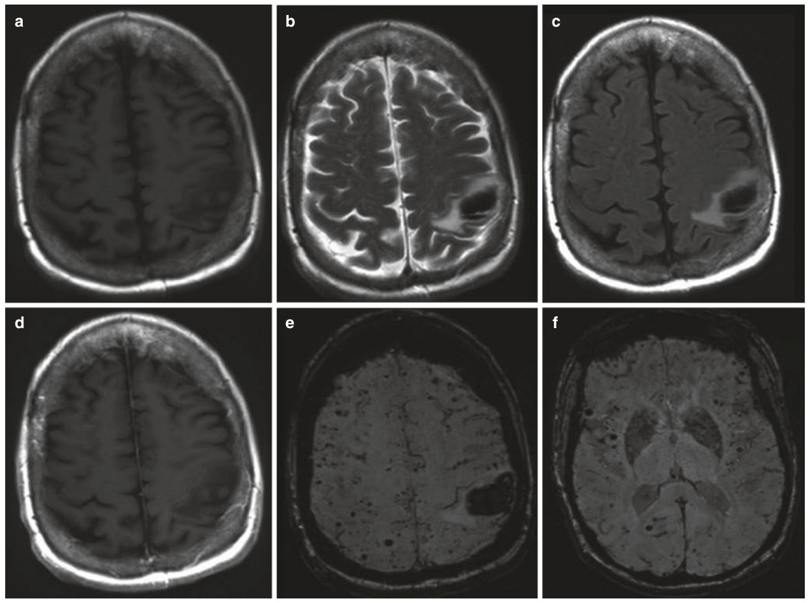
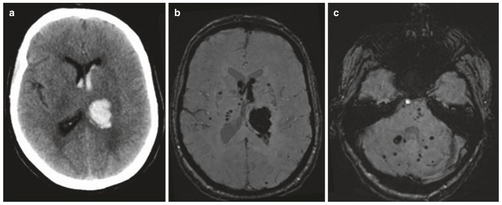
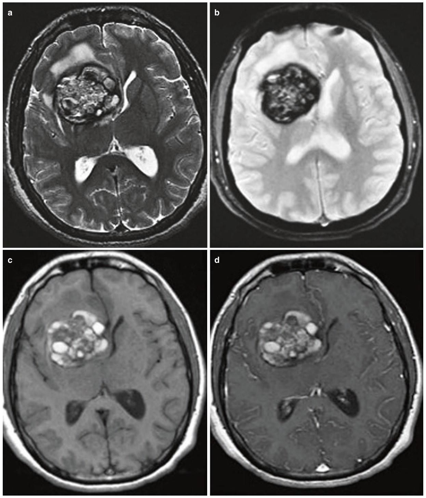
5.3.5.4 肿瘤性出血
约 5% 的脑实质内出血继发于瘤内或瘤周出血。瘤内出血可由肿瘤血管破裂、肿瘤侵犯脑实质血管以及肿瘤坏死引起。瘤内或瘤周出血也可由放射治疗或化疗引起。其他危险因素包括高血压、抗凝治疗及高龄。最常合并瘤内出血的肿瘤为高级别原发性肿瘤，如高级别神经胶质肿瘤，以及转移瘤，最常见来源于乳腺癌、黑色素瘤、肾细胞癌
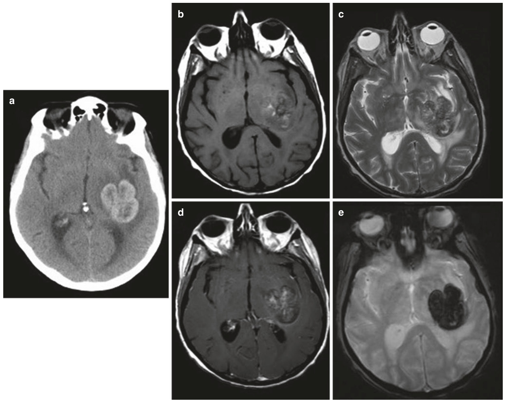
等。来自心房黏液瘤的肿瘤血栓栓子、血栓性凝血病以及因肿瘤侵犯或恶性肿瘤所致凝血病引起的静脉窦血栓形成，也可在肿瘤患者中导致脑实质内出血。提示存在潜在肿瘤的影像学表现包括：（1）有强化组织；（2）血肿演变过程延迟；（3）含铁血黄素环不完整；（4）存在多发磁敏感灶；（5）存在液-液平面或血性-囊性坏死平面；（6）存在与出血范围不成比例的大量水肿（图 5.11）。
5.3.5.5 凝血功能障碍
约 0.3%–0.6% 接受口服抗凝治疗的患者发生颅内出血，最常见于脑实质内脑叶或小脑部位 [27]。大体积或多发同步性出血、出现液-液平面以及脑室内延伸是先天性及获得性凝血障碍的特征性表现。此外，凝血障碍所致的出血持续进展的发生率较高。
5.3.5.6 出血性脑炎
单纯疱疹病毒性坏死性脑膜脑炎由潜伏病毒在免疫抑制或其他应激状态下的再激活所致。其典型累及边缘系统，呈双侧不对称分布。典型影像学表现为内侧颞叶、岛叶及扣带回 FLAIR/T2 高信号水肿伴细胞毒性水肿所致的弥散受限，以及 SWI 上因出血所致的磁敏感效应（blooming）。亚急性期可见脑回样强化。其他可引起出血性脑炎的病毒包括黄病毒属（登革热、日本脑炎、墨累河谷脑炎、 Powassan 病毒、圣路易脑炎、罗西欧病毒及西尼罗病毒）以及 EB 病毒，常以不同形式累及基底节、丘脑及脑干。
5.4 其他出血
5.4.1 微出血
微出血为点状脑出血，由直径小于 200 μm 的细小血管破裂所致，在 SWI 图像上显示最佳。如上所述，其最常见于淀粉样血管病相关的周围分布，或集中于深部灰质核团、脑干及小脑，与高血压相关。多发微出血也见于家族性海绵状血管畸形患者、CADASIL 患者（占 25%–70%）、有心肺转流手术史者、脑血管炎患者、出血性微转移瘤患者，以及脂肪栓子、脓毒性栓子和放射诱发的脑血管病患者。微出血也见于合并凝血功能障碍及血栓性微血管病的危重症患者，如急性呼吸窘迫综合征、高原病及 COVID-19 患者。
5.4.2 硬膜下及硬膜外出血
硬膜下及硬膜外出血通常与头部外伤有关。但在接受抗凝或抗血小板治疗的患者中，也可自发性发生。其也可见于凝血病患者、硬脑膜及骨硬膜动静脉瘘患者、颅内低压患者，以及硬膜或颅骨转移瘤患者。
5.5 血液模拟物
5.5.1 On CT
在神经放射学中，CT 上鉴别急性出血与高密度模拟物是一项常见的挑战。某些高原子序数物质（如碘、钙及硅油）根据其不同情况可呈现与急性血液成分相似的衰减
双能 CT 因其对不同入射能量水平 X 线光子的吸收模式不同，可用于鉴别出血与上述高原子序数物质。
- CTA 可见血管异常的 IPH，常见病因包括 AVM（伴供血动脉、血管巢及动脉化静脉）、脑静脉窦血栓形成（伴静脉或窦高密度且 CTA 不强化）、缺血性脑卒中的出血性转化（伴大血管闭塞）、硬膜 AVF（供血动脉与静脉直接相通）以及烟雾病（伴颈内动脉远端及大脑前动脉、大脑中动脉近端严重狭窄）。
5.5.2 MR 上
脂肪和血液在 T1W 和 T2W FSE 序列上均呈高信号。仅依靠这些常规序列无法将两者区分开来。然而，脂肪抑制序列有助于做出正确诊断。梯度回波（GRE）和磁敏感加权成像（SWI）序列利用 T2*W 对比，通常用于检测不同组织中的出血、钙化和铁沉积。由于这些病变在 GRE 和 SWI 上均呈低信号，因此相互鉴别是一项真正的挑战。SWI 滤波相位图像有助于鉴别，因为含铁血黄素和脱氧血红蛋白（均为顺磁性）的信号与钙化（抗磁性）的信号相反。此外，值得注意的是，另外两种病因，即蛋白性囊肿（如胶样囊肿）和致密细胞堆积（淋巴瘤），在 T1 加权图像上可呈高信号，类似于高铁血红蛋白的表现。
- 钙化及其他具有高原子序数的物质在平扫 CT 上可类似于出血。双能量 CT 有助于鉴别这些病变。钙化、蛋白性物质、黑色素、铁和致密细胞堆积在 MRI 上可类似于出血。SWI 滤波相位图像有时有助于区分钙化与出血。
5.6 结论
神经影像学在颅内出血的处理中起着至关重要的作用。它能够根据部位、出血量、范围和病程对颅内出血进行识别与特征性评估。结合患者的临床资料，神经影像学有助于明确潜在病因，是判断预后和制定恰当治疗方案的关键依据。
- 在 CT 和 MRI 上，颅内出血的影像学特征随时间呈现可预测的变化规律。
- 对于蛛网膜下腔出血（SAH），可通过出血部位及 CTA 表现明确病因。FLAIR 较平扫 CT 更敏感。改良 Fisher 分级可预测血管痉挛的风险。
- 对于 CTA 或 MRA 未显示潜在血管异常的脑实质出血（IPH），常见的病因包括淀粉样血管病（表现为脑叶 IPH、皮层下微出血及含铁血黄素沉积）和高血压性出血（表现为深部灰质核团、脑干或小脑 IPH 及微出血）。
1. Claassen J, Park S. Spontaneous subarachnoid haemorrhage. Lancet. 2022;400:846–62.
2. Edjlali M, Rodriguez-Régent C, Hodel J, et al. Subarachnoid hemorrhage in ten questions. Diagn Interv Imaging. 2015;96:657–66.
3. Etminan N, Chang H-S, Hackenberg K, et al. Worldwide incidence of aneurysmal subarachnoid hemorrhage according to region, time period, blood pressure, and smoking prevalence in the population: a systematic review and meta-analysis. JAMA Neurol. 2019;76:588–97.
4. Kumar H, Ali S, Kumar J, et al. Dural venous sinus thrombosis leading to subarachnoid hemorrhage. Cureus. 2021;13:e13497.
5. Perillo T, Paolella C, Perrotta G, et al. Reversible cerebral vasoconstriction syndrome: review of neuroimaging findings. Radiol Med. 2022;127:981–90.
6. Viguier A, Raposo N, Patsoura S, et al. Subarachnoid and subdural hemorrhages in lobar intracerebral hemorrhage associated with cerebral amyloid angiopathy. Stroke. 2019;50:1567–9.
7. Edjlali M, Guédon A, Ben Hassen W, et al. Circumferential thick enhancement at Vessel Wall MRI has high specificity for intracranial aneurysm instability. Radiology. 2018;289:181–7.
8. Tateoka T, Yoshioka H, Kanemaru K, et al. Blood blister-like aneurysms at the junction of the internal carotid and posterior communicating artery: characteristics and treatment strategies. World Neurosurg. 2023;170:e645–51.
9. Hou K, Yu J. Current status of perimesencephalic non-aneurysmal subarachnoid hemorrhage. Front Neurol. 2022;13:960702.
10. Sacco S, Marini C, Toni D, et al. Incidence and 10-year survival of intracerebral hemorrhage in a population-based registry. Stroke. 2009;40:394–9.
11. Hemphill JC, Bonovich DC, Besmertis L, et al. The ICH score: a simple, reliable grading scale for intracerebral hemorrhage. Stroke. 2001;32:891–7.
12. Romero JM, Artunduaga M, Forero NP, et al. Accuracy of CT angiography for the diagnosis of vascular abnormalities causing intraparenchymal hemorrhage in young patients. Emerg Radiol. 2009;16:195–201.
13. Tranvinh E, Heit JJ, Hacein-Bey L, et al. Contemporary imaging of cerebral arteriovenous malformations. AJR Am J Roentgenol. 2017;208:1320–30.
14. Canedo-Antelo M, Baleato-González S, Mosqueira AJ, et al. Radiologic clues to cerebral venous thrombosis. Radiographics. 2019;39:1611–28.
15. Álvarez-Sabín J, Maisterra O, Santamarina E, et al. Factors influencing haemorrhagic transformation in ischaemic stroke. Lancet Neurol. 2013;12:689–705.
16. Jabbarli R, Reinhard M, Roelz R, et al. Intracerebral hematoma due to aneurysm rupture: are there risk factors beyond aneurysm location? Neurosurgery. 2016;78:813–20.
17. Li J, Jin M, Sun X, et al. Imaging of moyamoya disease and moyamoya syndrome: current status. J Comput Assist Tomogr. 2019;43:257–63.
18. Singhal AB, Hajj-Ali RA, Topcuoglu MA, et al. Reversible cerebral vasoconstriction syndromes: analysis of 139 cases. Arch Neurol. 2011;68:1005–12.
19. Abdel Razek AAK, Alvarez H, Bagg S, et al. Imaging spectrum of CNS vasculitis. Radiographics. 2014;34:873–94.
20. Koch MJ, Stapleton CJ, Guniganti R, et al. Outcome following hemorrhage from cranial dural arteriovenous fistulae: analysis of the multicenter international CONDOR registry. Stroke. 2021;52:e610–3.
21. in’t Veld M, Fronczek R, Dos Santos MP, et al. High sensitivity and specificity of 4D-CTA in the detection of cranial arteriovenous shunts. Eur Radiol. 2019;29:5961–70.
22. Hefzy HM, Bartynski WS, Boardman JF, et al. Hemorrhage in posterior reversible encephalopathy syndrome: imaging and clinical features. AJNR Am J Neuroradiol. 2009;30:1371–9.
23. Walker DA, Broderick DF, Kotsenas AL, et al. Routine use of gradient-echo MRI to screen for cerebral amyloid angiopathy in elderly patients. AJR Am J Roentgenol. 2004;182:1547–50.
24. Charidimou A, Boulouis G, Frosch MP, et al. The Boston criteria version 2.0 for cerebral amyloid angiopathy: a multicentre, retrospective, MRI-neuropathology diagnostic accuracy study. Lancet Neurol. 2022;21:714–25.
25. Kranz PG, Malinzak MD, Amrhein TJ. Approach to imaging in patients with spontaneous intracranial hemorrhage. Neuroimaging Clin N Am. 2018;28:353–74.
26. Kuroedov D, Cunha B, Pamplona J, et al. Cerebral cavernous malformations: typical and atypical imaging characteristics. J Neuroimaging. 2023;33:202–17.
27. Steiner T, Weitz JI, Veltkamp R. Anticoagulant-associated intracranial hemorrhage in the era of reversal agents. Stroke. 2017;48:1432–7.
颅内感染与炎症
颅内感染与炎症
Tchoyoson Lim 与 Majda M. Thurnher
T. Lim（*）神经放射科，放射科学学术临床项目，新加坡国家神经科学研究所，杜克-新加坡国立大学医学院，新加坡 电子邮件：Tchoyoson.lim@singhealth.com.sg
M. M. Thurnher 神经放射与骨骼肌肉放射科，生物医学影像与影像引导治疗部，维也纳大学医院，奥地利维也纳 电子邮件：majda.thurnher@meduniwien.ac.at
- DWI、SWI 和血管壁成像是常用的高级脉冲序列，而 MR 灌注和波谱分析可酌情用于疑难问题的解决。
- 柔脑膜强化和蛛网膜下腔积脓是感染性脑膜炎的典型表现。
- DWI 上呈弥散受限的环形强化病灶是未经治疗的化脓性脓肿的特征性表现。
- 海马肿胀伴信号增高可见于 1 型单纯疱疹病毒脑炎或 LGI1 抗体相关性脑炎。
6.1 中枢神经系统感染的诊断思路
在现代大都市医院或大学放射科的病例构成中，中枢神经系统（CNS）感染并不常见（相对于创伤和脑血管疾病）。放射科医师很少因患者具有发热、颈项强直和意识改变这一典型的脑膜刺激三联征而收到排除或评估并发症的影像检查申请。在许多情况下，CNS 感染常为意外的鉴别诊断或在对因皮质肿胀、异常环形强化或柔脑膜强化而就诊、临床初步诊断为卒中、肿瘤或其他疾病的患者中被漏诊。最后，在某些情况下，CNS 感染的典型影像学特征可由意外的非感染性疾病引起，例如 LGI1 自身免疫性脑炎被误诊为 1 型单纯疱疹病毒（HSV-1）脑炎。因此，放射科医师应熟练掌握 CNS 感染的典型特征和鉴别诊断；尽管感染可按致病微生物的分类学（病毒、细菌、真菌）进行分类，但本章将
重点讨论 CT 和 MRI 上的影像学表现模式。这种概述并非面面俱到，并包括一节关于炎症性疾病的内容，特别是其与感染鉴别的相关内容。随着全球气温升高、旅行和人口流动增加、COVID-19 及其他病原体的大流行暴发，我们再次认识到该议题的重要性。
（真菌性脑膜炎常导致极高的开放压力但脑脊液葡萄糖正常），而病毒性脑膜炎通常表现为淋巴细胞增多且脑脊液葡萄糖正常。病毒性急性淋巴细胞性脑膜炎通常为良性且具有自限性。嗜酸性脑膜炎定义为脑脊液中嗜酸性粒细胞占比＞10%或每立方毫米＞10个，常提示蠕虫寄生虫感染。在腰穿（LP）前申请 CT 检查以排除颅内压升高通常出于谨慎考虑，但这也可能带来虚假的安全感。CT 通常显示弥漫性脑实质肿胀、蛛网膜下腔（尤其是基底池）闭塞以及脑室扩张。平扫 MRI 能更敏感地显示感染性渗出物中因蛋白升高所致的相应异常信号，表现为 FLAIR 或 DWI 上信号增高（图 6.1）[1,2]。有时 DWI 可能是唯一能够检出蛛网膜下腔和脑室内少量脓液的序列。血脑屏障通透性增高导致钆对比剂外渗至蛛网膜下腔，形成脑膜炎特征性的柔脑膜强化。这种强化在脑沟深部和脑池尤为明显，有时延伸至较大的颅神经表面，可表现为薄而线状蜿蜒的强化（典型病毒性/化脓性细菌性脑膜炎见于大脑凸面）或较厚、不规则、结节状强化（结核性脑膜炎常累及基底池）。柔脑膜强化（延伸至脑沟深部并填充蛛网膜下腔和脑池）与硬脑膜强化（粗大的
6.2 MRI 技术
CT 所提供的信息有限，而 MRI 对中枢神经系统感染的特征更为敏感和特异。在无禁忌证的情况下，疑似感染时应常规注射对比剂，并可在常规 T1、T2 加权及 FLAIR 序列之外常规增加 DWI（其病灶与正常组织对比度高且敏感）。高分辨率、薄层 3D 序列如稳态构造干扰（CISS）、稳态采集快速成像（FIESTA）以及 FLAIR 序列有助于显示细小结构，如寄生虫头节、颅神经和囊壁细节。可加行 MR 血管成像和静脉成像以评估缺血性和血栓性并发症。近期在 COVID-19 大流行期间，磁敏感加权成像（SWI）有助于检出微小局灶性微出血。灌注加权成像（采用 DSC 或 ASL 技术）和 MR 波谱等高级 MRI 技术若使用得当，可能有助于疑难病例的解析，特别是因为初次检查结果不明确而被召回的患者可能血流动力学不稳定，需要在 MRI 检查室进行镇静或监护。床旁低场强 MRI 已展现出应用前景。放射性核素检查和 PET 在临床实践中尚未广泛应用，尽管 18F-氟脱氧葡萄糖（18F-FDG）通常显示感染病灶的代谢活性低于肿瘤。
6.3.2 脑膜炎的鉴别诊断
6.3 脑膜炎
在 MRI 上，由于不同脉冲序列的组织特性各异，鉴别诊断有时较为困难。柔脑膜炎的鉴别诊断包括蛛网膜下腔出血（T1 加权图像上通常呈高信号，梯度回波/SWI 上呈低信号）、柔脑膜癌病以及吸氧和药物使用。硬脑膜强化的鉴别诊断包括术后及腰穿后状态、自发性颅内低压、非感染性肉芽肿性疾病以及肿瘤。
6.3.1 脑膜炎的影像学特征
在疑似脑膜炎患者中，腰穿（LP）后进行脑脊液（CSF）分析是明确病原体及细菌性脑膜炎抗菌药物敏感性的必要手段；影像学为辅助手段，并不能替代 LP。典型化脓性细菌感染表现为中性粒细胞增多、蛋白升高及葡萄糖降低
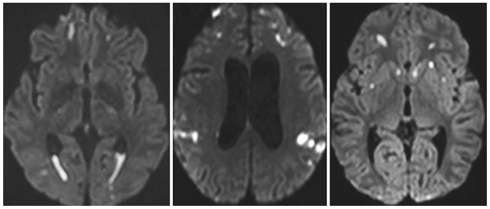
牙源性、头颈部感染应纳入放射学搜索模式，并沿脑神经进行评估。然而，最常见的播散途径是经血行播散，对于有免疫抑制、糖尿病、酗酒、先天性心脏病、肺动静脉畸形或肺脓肿、静脉吸毒或细菌性心内膜炎病史的患者，应高度警惕。脑膜炎最重要的并发症是脑脓肿（见第 6.4.1 节），这是临床处理上的重要变化，较大的病灶常需手术引流。还可出现轴外积液，表现为无菌性硬膜下积液或化脓性积脓（与脑脓肿类似，均显示扩散受限）；积脓可危及生命，应手术引流。脑积水可由脑脊液吸收障碍或肿块性病变压迫正常引流通道所致，严重时可导致脑疝；在结核性脑膜炎中尤为常见。血管并发症包括静脉窦血栓形成、炎症性血管闭塞及继发梗死，通常见于梅毒、结核及血管侵袭性曲霉病（见第 6.6.3 节）。
6.3.3 脑膜炎的原因及并发症
在 MRI 上，应寻找脑膜炎的原因及并发症特征。在主要的感染播散途径中，外伤或医源性损伤/手术干预所致的直接接种通常可见。邻近鼻窦炎、中耳炎/乳突炎的局部蔓延进入颅腔
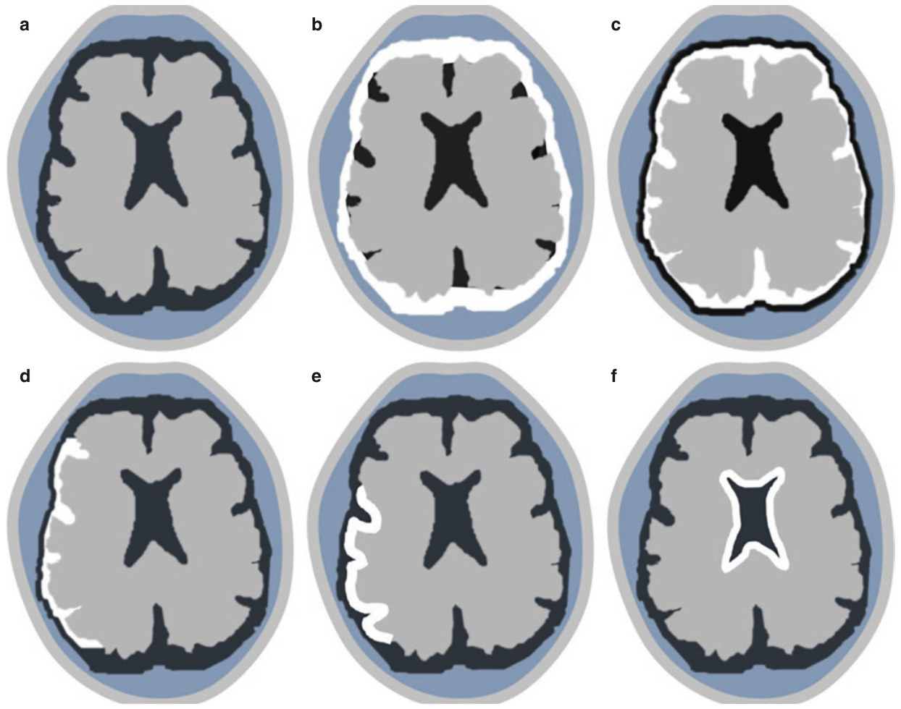
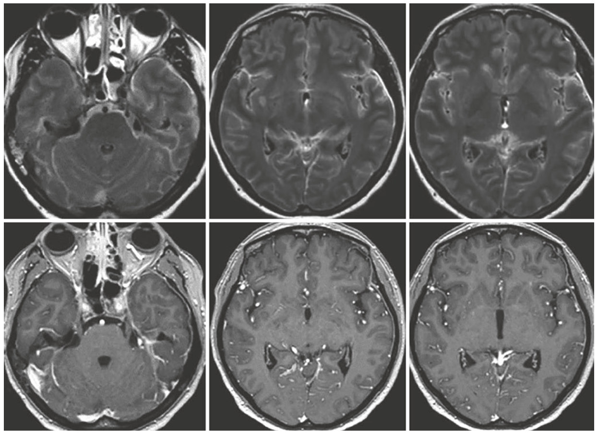
内形成中央脓肿腔，内含化脓性渗出物，周围伴有血管源性水肿。在 DWI 上，扩散受限是未经治疗的化脓性脓肿的特征性表现：由细菌和炎性渗出物组成的蛋白样化脓性碎屑黏稠度高，DWI 呈高信号，ADC 图呈低信号（此特征有助于脓肿与坏死性高级别胶质瘤鉴别，后者通常无扩散受限）（图 6.4）。经抗生素治疗后，此特征变得不明显。通常，内侧壁或脑室壁较外侧壁薄（因血供较差），易破裂进入脑室，引起脑室炎。SWI 有时可显示
6.4 脑脓肿
6.4.1 脑脓肿诊断的 MRI 特征
成熟的化脓性脑脓肿具有特征性的 MRI 表现。T2 加权像上通常表现为中央高信号，伴光滑、薄层、环周低信号包膜（T1 加权像上中央低信号伴高信号环），并见显著环状强化，周围白质因血管源性水肿呈 T2 延长。若脑脓肿经血行播散引入，通常位于双侧大脑中动脉供血区的灰白质交界处。尽管脓肿由脑炎前期发展而来（血管通透性增加但无包膜新生血管或血管生成的边界不清的脑组织炎症），但影像学检查很少能检出。如不治疗，将形成血管化的胶原包膜，并伴有
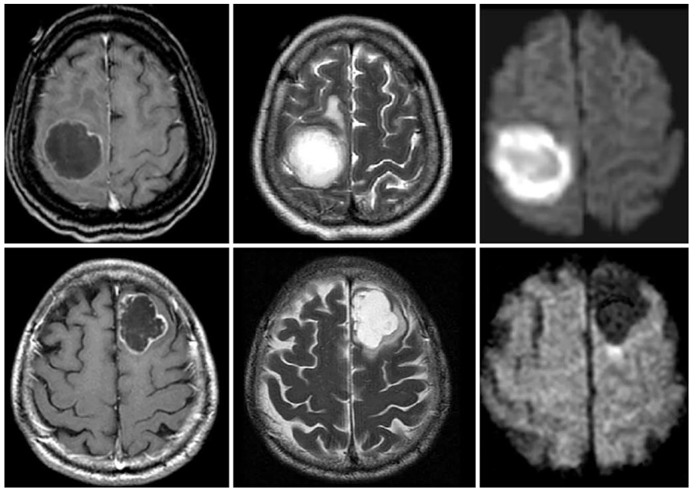
6.4.2 环形强化的鉴别诊断
病变
- 环形强化病变的鉴别诊断。– 化脓性脓肿。– 结核球/结核性脓肿。– 真菌性脓肿。– 弓形虫病。– 寄生虫（尤其是脑囊虫病，见第 6.5.1 节）。– 转移性肿瘤。– 原发性胶质瘤、淋巴瘤。– 亚急性梗死。– 脑挫伤/血肿。– 脱髓鞘病变。
环形强化病变的评估可通过病史（免疫低下、地方流行/旅行史、原发肿瘤）、体格检查（发热）、影像学特征（环形不完整、多发、形态及部位）以及高级 MRI 技术来提高诊断准确性。虽然 MR 波谱在肿瘤中可见胆碱峰（位于 3.2 ppm）升高，但以脂质和乳酸峰（位于 1.3 ppm）为主的坏死性肿瘤可能难以与之鉴别。中心腔及囊壁通常表现为灌注减低；少数情况下，血管丰富的脓肿壁可见高 rCBV，类似于肿瘤表现，尤其见于肉芽肿性疾病，其在高级 MRI 技术上可类似肿瘤。多学科团队联合诊疗对于管理决策最为有益。
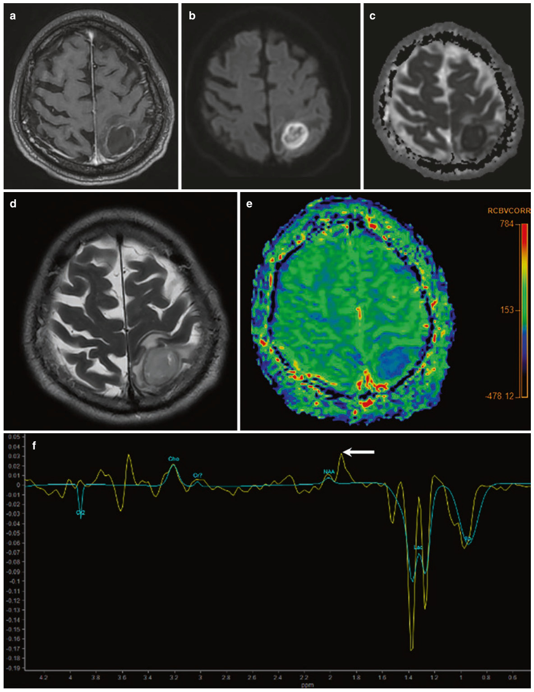
6.5 寄生虫病
囊尾蚴病在全球范围内是癫痫发作和脑脊液嗜酸性粒细胞增多最常见的原因。典型可分为四期；囊泡期通常表现为非强化的囊性灶，其信号与脑脊液相等，在高分辨率薄层 3D MRI FLAIR/CISS 序列上可见 T2 低信号、FLAIR 高信号且强化的头节。囊泡-胶样期（图 6.6）于 T1WI 和 FLAIR 上表现为复杂的囊内高信号，伴环形强化及周围水肿（常类似脓肿或转移瘤，除非在阅片时识别出伴发的非强化囊泡期病灶或非强化钙化结节期病灶）。在颗粒结节期，囊肿逐渐缩小，信号因钙化而发生变化；最终的非强化钙化结节期表现为无周围水肿的钙化灶（图 6.7）。
尽管单细胞寄生虫（阿米巴、弓形虫，见 6.6.1 节）和多细胞寄生虫（蠕虫如血吸虫）在发达国家较为少见，但在地方流行区仍是重要疾病，且因旅行和移民其发病率有增加趋势。蠕虫感染的共同特征包括嗜酸性粒细胞增多，并因寄生虫生活史不同而表现各异。
6.5.1 神经囊尾蚴病
囊尾蚴感染在亚洲、非洲及中/南美洲的许多地区流行，中枢神经系统囊尾蚴病是
强化的左侧颞叶
囊泡-胶质囊肿伴
水肿（箭头）。在右侧基底节可见第二处无强化的囊泡状病变，未见水肿（三角箭头）
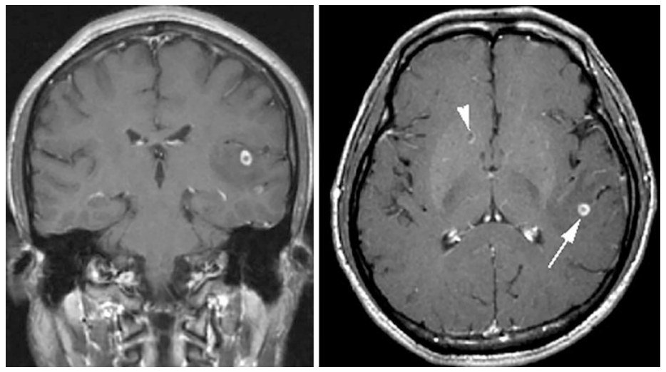
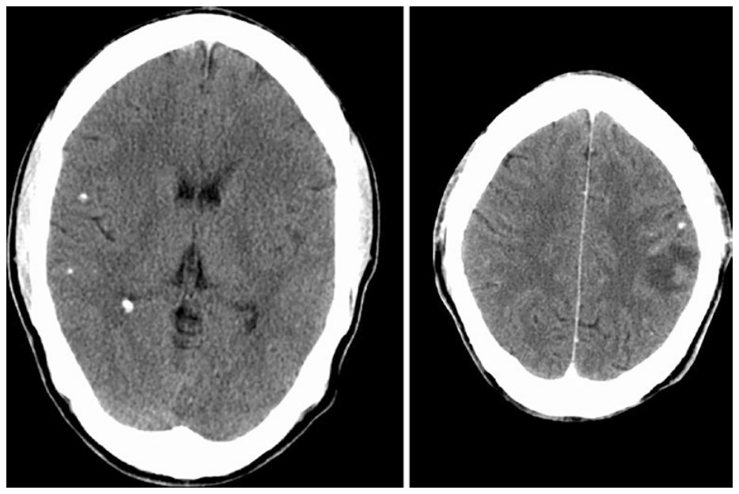
6.6 HIV 感染及特殊病原体
HIV 阳性患者可出现多种并发症，包括机会性感染、淋巴瘤、进行性多灶性白质脑病（PML，见 6.7.3 节）、CD8 脑炎及免疫重建炎症综合征（IRIS）[4]。IRIS 是由强烈而失调的炎症性免疫反应所致，发生于成功的抗逆转录病毒治疗（ART）、CD4 计数回升及病毒载量下降的综合背景下。临床上出现症状和影像学表现的矛盾性加重，MRI 上可见显著的强化。IRIS 的临床病程通常具有自限性，但放射科医师应首先排除新发机会性感染、药物毒性及其他并发症。
图像显示特征性的
6.6.1 弓形虫病
弓形虫病是 HIV 患者中最常见的机会性感染。MRI 通常表现为基底节或额顶区多发强化结节，伴血管源性水肿，有时伴出血。虽然“偏心性靶征”具有较高的特异度（但也可见于结核瘤和转移瘤），遗憾的是其敏感度并不高（图 6.8）。
6.6.2 曲霉病
免疫功能低下患者（不仅是 HIV 感染患者，也包括器官移植等）易发生血管侵袭性曲霉病，可阻塞穿支动脉，导致基底节、丘脑或脑干梗死，有时可见出血成分。
6.6.3 结核病
中枢神经系统结核病（TB）可累及 HIV 感染者和非感染者：结核病仍是全球死亡和发病的主要原因之一，对 HIV 感染者而言尤为重要的健康威胁。结核性脑膜炎可出现显著的强化表现，感染尤其常累及基底池（图 6.9），并可因同时存在的硬脑膜炎而出现硬脑膜增厚和强化（结核病较梅毒或莱姆病更易同时引起软脑膜和硬脑膜感染）。结核性血管炎可阻塞
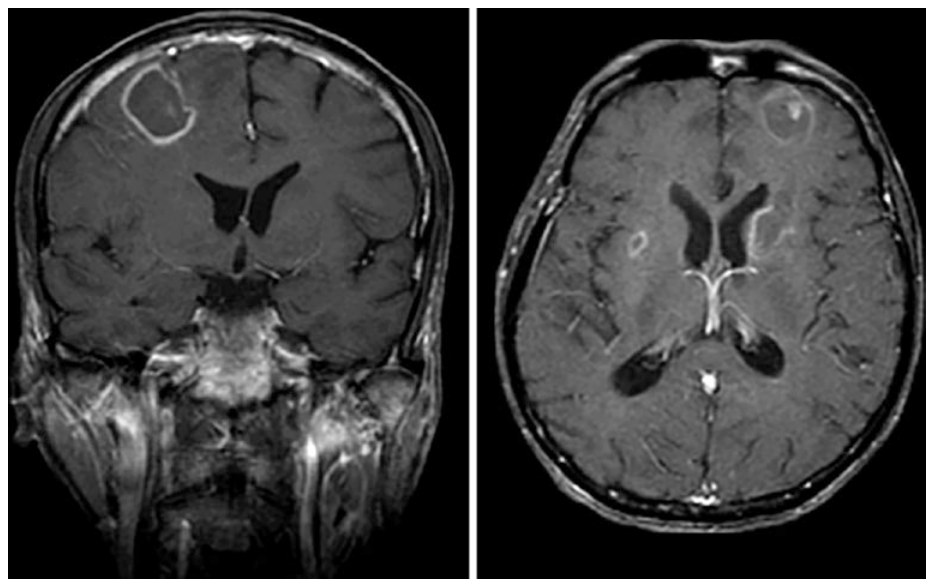
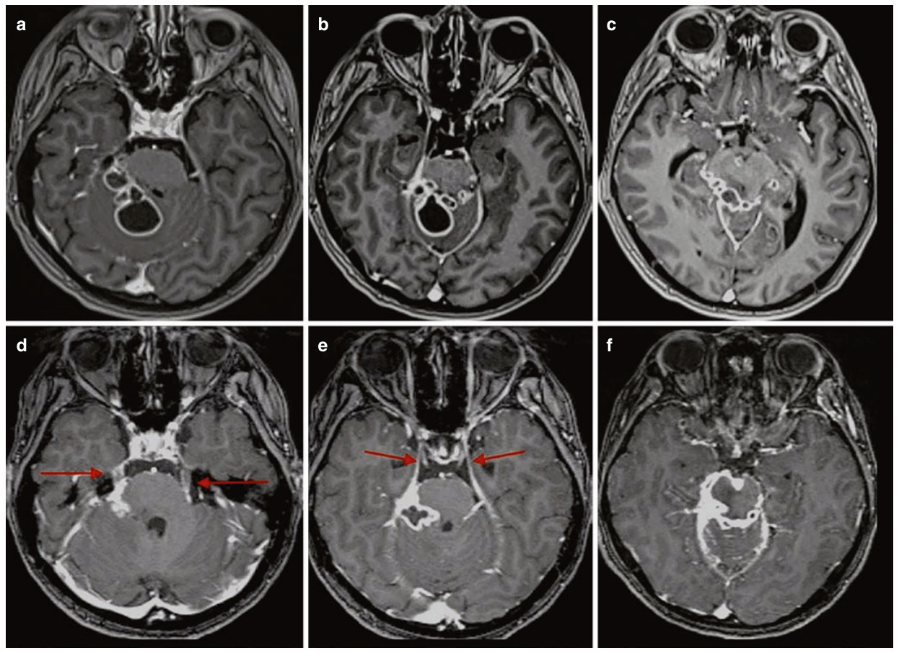
小的内侧豆纹动脉和丘脑穿支，导致基底节和丘脑梗死。这些病灶可通过 DWI 敏感地显示，MRA 或黑血高分辨率薄层三维黑血黑脑脊液血管壁成像（VWI）序列可显示受累血管炎性狭窄及管壁强化（图 6.10）（其他可引起血管炎的感染原因包括曲霉病和水痘-带状疱疹病毒（VZV）感染）。结核球是中枢神经系统最常见的实质型病变；影像表现取决于感染的不同阶段；结核球可通过消退或钙化而愈合。早期非干酪样结核球表现为均匀结节状强化，T1WI 呈低信号，T2WI 呈高信号，并伴周围水肿。实性干酪样结核球由于顺磁性自由基的存在而呈多种信号强度。液化性干酪样结核球的信号及强化特征类似化脓性脓肿，但通常体积较小，周围水肿较轻。结核性脓肿较少见，体积较大，多房，常与化脓性脓肿难以鉴别。粟粒型结核在灰白质交界处可见无数小的强化病灶，通常发生于伴有广泛颅外病变的免疫低下患者。还应注意寻找脊髓/脊膜结核，包括骨髓炎/椎间盘感染及腰大肌脓肿。
多房，且常与化脓性脓肿无法鉴别。粟粒型结核在灰白质交界处可见无数小的强化病灶，通常发生于伴有广泛颅外病变的免疫低下患者。还应注意寻找脊髓/脊膜结核，包括骨髓炎/椎间盘感染及腰大肌脓肿。
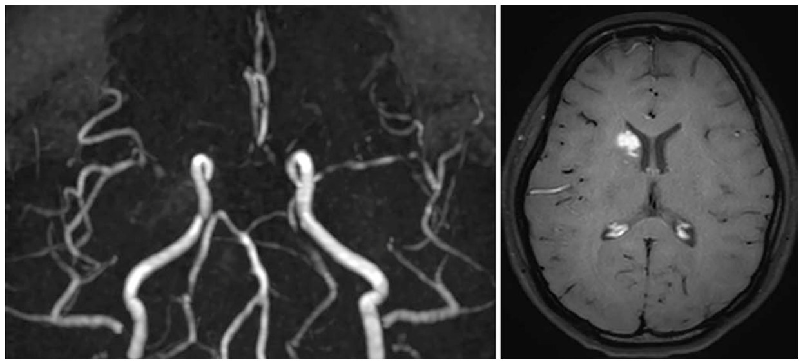
6.7 病毒感染
6.7.1 单纯疱疹病毒
HSV-1 是急性脑炎综合征最常见的病因，占可明确病毒原因的 10–20%。典型表现包括单侧或双侧不对称肿胀，T2WI/FLAIR 呈高信号，累及海马、颞叶前部和内侧以及岛叶皮质（但通常不累及基底节）（图 6.11）。有时可见出血、DWI 弥散受限及对比强化（与自身免疫性脑炎比较，见 6.8.1 节）。
6.7.2 虫媒病毒及其他病毒
虫媒病原体通过蚊虫、蜱或其他媒介传播，包括日本脑炎病毒（JEV）、登革病毒（DENV）和寨卡病毒等，通常具有地域性和季节性差异。对于双侧丘脑受累的患者（尤其伴出血时），应考虑 JEV 和流感相关脑炎（IAE）（图 6.12）。IAE 最常见于 5 岁以下儿童、老年人及伴合并症的患者。肠道病毒和狂犬病毒感染可累及脑干；VZV 感染是儿童血管病变和缺血性卒中的主要原因之一。
6.7.3 进行性多灶性
白质脑病
进行性多灶性白质脑病（PML）是一种由 JC 病毒（多瘤病毒）再激活引起的脱髓鞘疾病，常见于免疫低下患者，尤其是 HIV 感染者。典型表现为双侧不对称额叶和/或顶枕叶皮质下 U 形纤维白质受累（极少数情况下首先累及脑室周围白质）；小脑中脚、脑桥、齿状核周围白质也可受累，但孤立的脊髓病变少见。经典型 PML 在 T2WI 和 FLAIR 上通常呈高信号，信号低于或等于
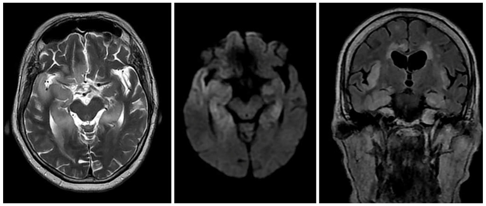
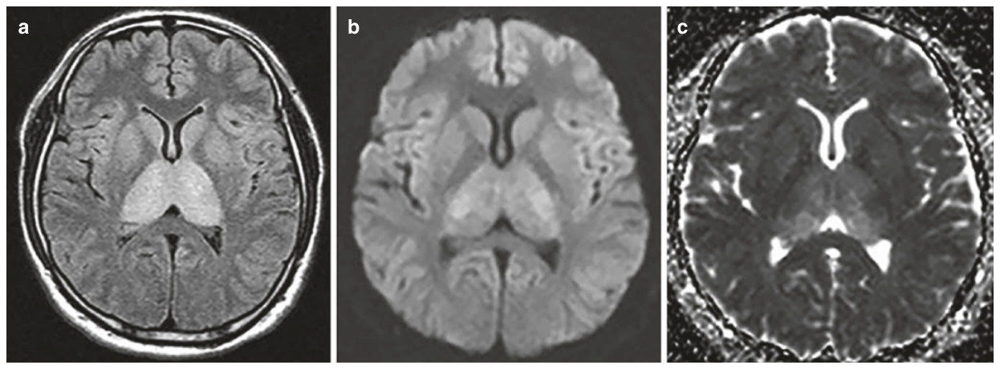
T1 加权图像上呈低信号，无强化、血管源性水肿或占位效应（图 6.13）。DWI 表现因病程阶段而异，新发病变或活动性感染/脱髓鞘的进展边缘可见扩散受限
炎症性 PML（伴强化、血管源性水肿及占位效应）是一种较少见的起病表现，亦可见于 IRIS。
T2 加权图像，显示
皮质下白质高信号范围缩小
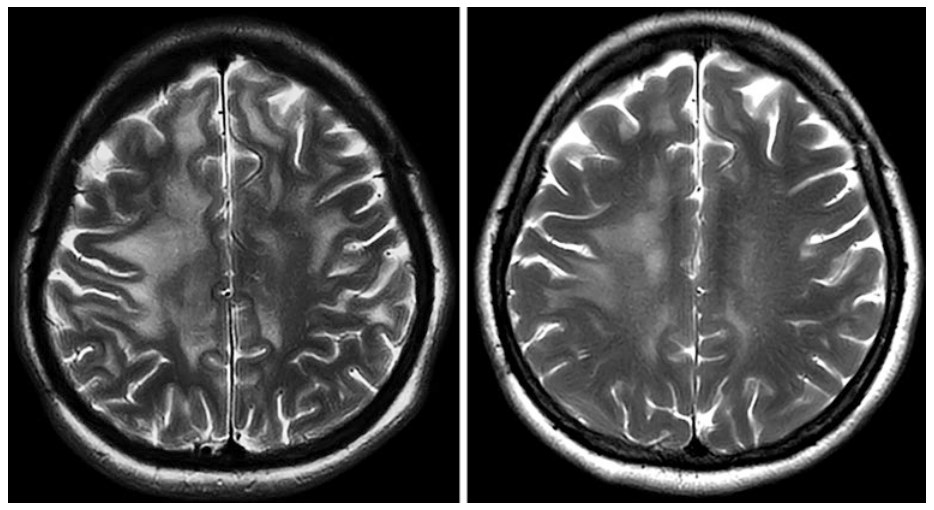
6.8 中枢神经系统炎性疾病
免疫介导的中枢神经系统炎性疾病（图 6.14）可见于已知恶性肿瘤的患者（副肿瘤综合征）、已知风湿性疾病的患者（如系统性红斑狼疮 SLE、干燥综合征）、病毒感染后的患者（如急性播散性脑脊髓膜炎或 ADEM），以及基于典型 MRI 表现而类似感染的情况 [5,6]。本章前述各节中描述的许多软脑膜炎、硬脑膜炎、脑炎或血管疾病的影像学表现，也可由非感染性炎症引起。熟悉这些炎症性类似疾病有助于通过早期恰当治疗减少患者病残率和远期残疾，避免有创的脑活检，并及时启动胸部、腹部和盆腔 CT 检查以筛查潜在的恶性肿瘤或结节病。
6.8.1 自身免疫性与边缘性脑炎：LGI1 抗体脑炎
急性脑炎综合征的病因可为感染性或非感染性。临床上，边缘性脑炎常表现为顺行性记忆丧失、癫痫发作、行为或精神症状，MRI 上可见双侧海马及内侧颞叶的异常。富亮氨酸胶质瘤失活 1（LGI1）抗体是模拟 HSV-1 感染所致边缘性脑炎的最常见原因（图 6.15）。发热、暴发性临床病程、单侧受累、无基底节受累、DWI 信号受限及对比剂增强，这些均提示 HSV-1 感染。其他自身免疫性脑炎的影像学表现不太一致；NMDA 受体脑炎的 MRI 多为正常；MS、ADEM 与 MOG 中的白质异常可类似于 PML；在隐匿性小细胞肺癌中，抗 CV2/坍塌素反应调节蛋白 5（CRMP5）抗体相关疾病可见双侧尾状核与壳核异常。脑干、小脑及脊髓病变同样与多种自身免疫性疾病相关。
表现；NMDA 受体脑炎的 MRI 多为正常；MS、ADEM 与 MOG 中的白质异常可类似 PML；在隐匿性小细胞肺癌中，抗 CV2/坍塌素反应调节蛋白 5（CRMP5）抗体相关疾病可见双侧尾状核与壳核异常。脑干、小脑及脊髓病变同样与多种自身免疫性疾病相关。
6.8.2 柔脑膜强化：神经结节病
该多系统炎症性肉芽肿性疾病易累及柔脑膜（50%，尤其基底脑膜，酷似结核）、垂体、视神经与面神经以及脊膜（图 6.16）。仅凭影像学很难或无法将神经结节病与结核相鉴别。
GFAP 类风湿关节炎 中枢神经系统组织细胞增多症 原发与继发性中枢神经系统 自发性肥厚性血管炎
鉴别诊断：感染性 鉴别诊断：感染性
脑膜炎、蛛网膜下腔出血、脑膜瘤
脑膜炎、脑膜瘤、颅内低压
见表 10-1
靶向膜 鉴别诊断：PML、
蛋白：NMDAR、LGI1、CASPR2、AMPAR、DPPX、GABA B、IgLON5
淋巴瘤、缺氧性损伤、遗传性脑白质营养不良
靶向核内或
胞浆蛋白：
CRMP5/CV2、DR2、NMDAR、LGI1
ANNA1/Hu、GAD65、Ma2/Ta、CRMP5/CV2
鉴别诊断：CJD、缺氧性
损伤、中毒性代谢性疾病、弓形虫病、隐球菌病、Wilson 病
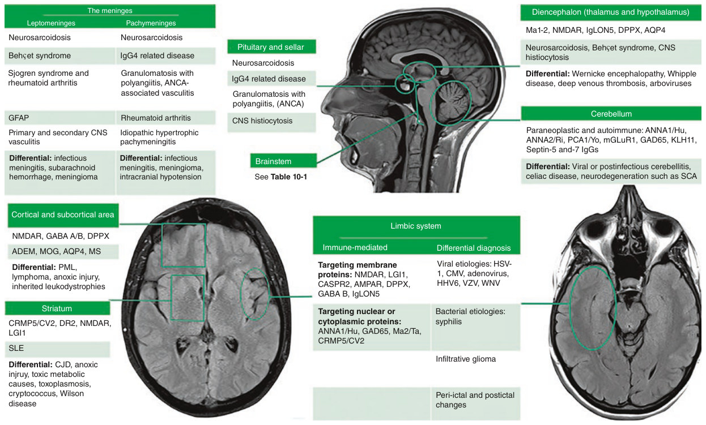
间脑（丘脑与下丘脑）
Ma1-2、NMDAR、IgLON5、DPPX、AQP4
神经结节病、Behçet 综合征、中枢神经系统组织细胞增生症
鉴别诊断：Wernicke 脑病、Whipple 病、深静脉血栓形成、虫媒病毒感染
副肿瘤性与自身免疫性：ANNA1/Hu、ANNA2/Ri、PCA1/Yo、mGLuR1、GAD65、KLH11、Septin-5 及 Septin-7 IgG
鉴别诊断：病毒性或感染后小脑炎、乳糜泻、神经变性（如 SCA）
鉴别诊断
病毒性病因：HSV1、CMV、腺病毒、HHV6、VZV、WNV
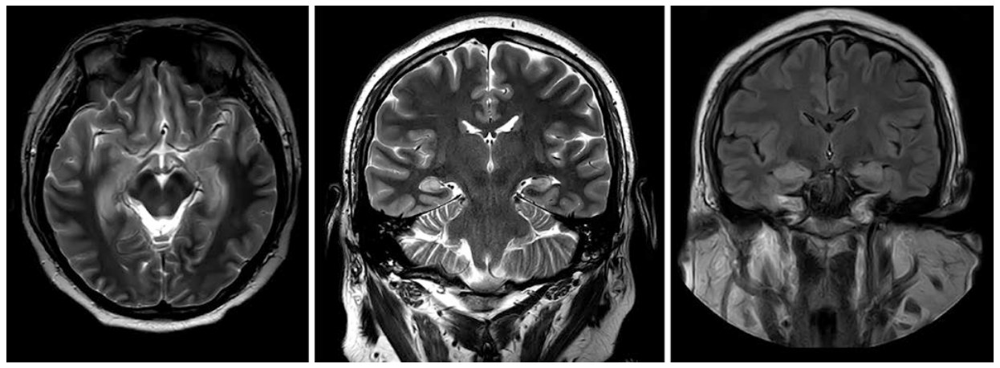
6.8.3 硬脑膜强化：IgG4
相关疾病
IgG4 相关性疾病是一种累及多系统的慢性进展性纤维炎症性自身免疫病；随着疾病定义的不断更新，部分疾病现被认为与 IgG4 相关性疾病谱存在重叠
包括眼眶炎性假瘤。IgG4 病常累及胰腺、胆道、肾脏、腹膜后/主动脉及胸部。在头颈部（胰腺之后第二常见受累部位），可累及唾液腺（尤其是下颌下腺）、泪腺及垂体，并呈局限性
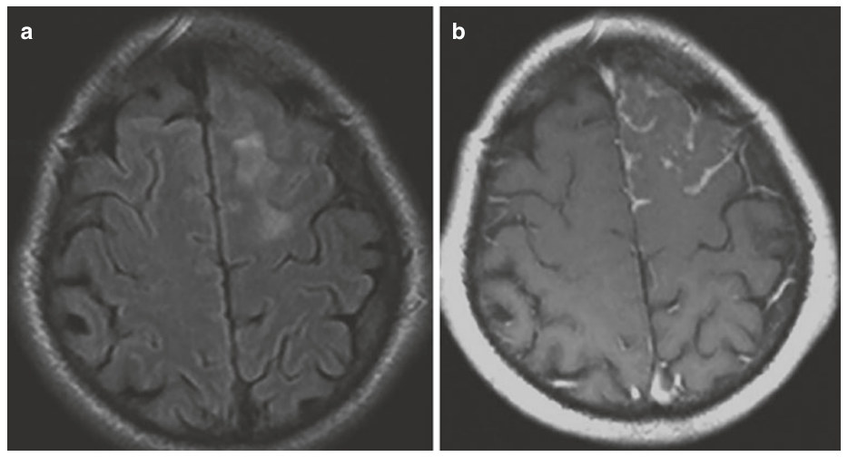
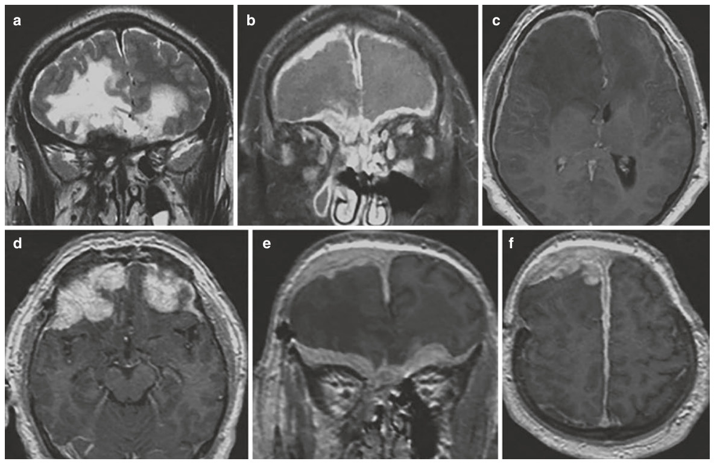
或可见弥漫性硬脑膜增厚和强化（图 6.17）。组织活检是诊断的金标准，但 MRI 通常在 T1 加权
和 T2 加权图像上均呈低信号，并呈均匀强化；类固醇治疗后缓解（近 90%）可作为有参考价值的特征。
6.8.4 自身免疫性中枢神经系统血管炎
中枢神经系统血管炎时脑动脉壁发生炎症，可由原发性中枢神经系统血管炎引起，也可继发于潜在的全身性血管炎（如 SLE、类风湿关节炎和干燥综合征），或继发于感染（如结核、水痘-带状疱疹病毒或梅毒）。MRI 几乎均显示异常，正常表现可排除血管炎。典型表现包括不同动脉供血区内不同发病时期的梗死灶（图 6.18），有时伴有实质或蛛网膜下腔出血。DSA 在检测 "串珠征"（至少两个独立血管分布区内交替出现的狭窄和扩张）方面较 MRA 和 CTA
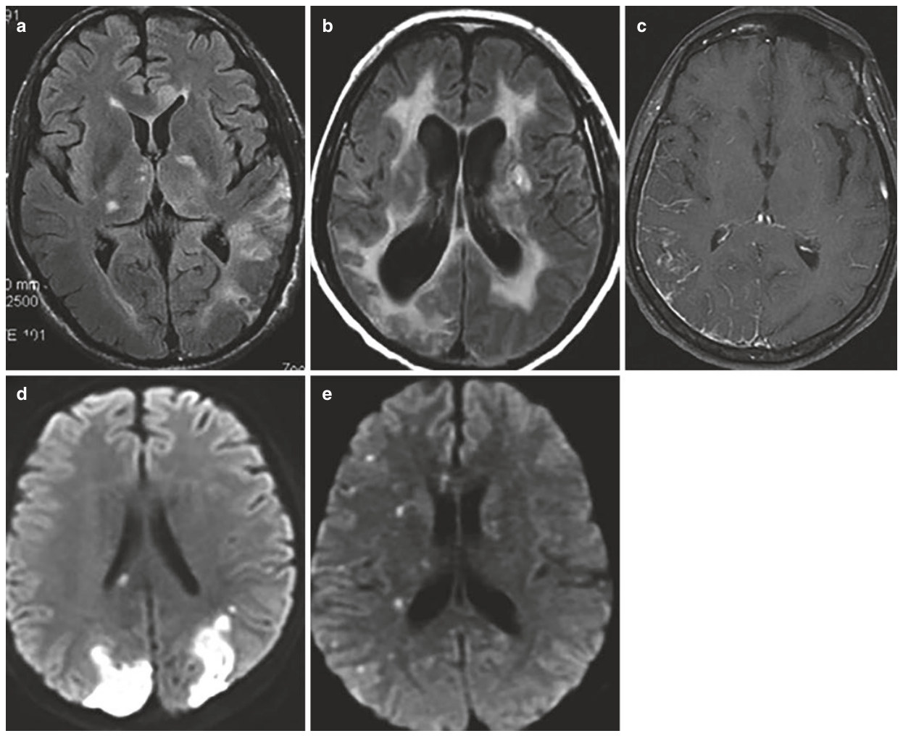
更敏感，但表现常缺乏病因特异性。管壁成像（VWI）上同心性管壁增厚倾向于血管炎而非动脉粥样硬化（后者通常呈偏心性增厚），但同样对血管炎类型无特异性。诊断常依赖于活检。
6.8.4.1 自身免疫性中枢神经系统血管炎
肉芽肿性多血管炎（GPA）（旧称韦格纳肉芽肿）是一种累及小和中等血管的系统性血管炎，罕见情况下可累及中枢神经系统，病死率高。MRI 通常显示自额窦蔓延的局灶性肉芽肿、柔脑膜强化及白质高信号（图 6.19）。
6.9 小结
放射科医师应熟知脑膜炎、脑脓肿和脑炎三种特征性影像学模式。基于 MRI 模式识别的临床问题解决仍是一项基本技能：我们对典型特征及其解剖分布的认识，使我们能够结合既往鉴别诊断经验，处理新发传染病/炎症因子所致的影像学数据。常规及高级 MRI 技术以及新型床旁扫描仪有潜力提高 CNS 感染的诊断效能，尤其在未来的疫情暴发和大流行中（图 6.20）[7]。PCR 技术、机器学习和新型 MRI 生物标记物的未来进展，对于阐明病原体及免疫介导的神经元损伤与并发症机制具有广阔前景。放射科医师的作用和价值通过多学科团队讨论得以提升，因为
4. Thurnher MM. 免疫功能低下患者的感染。见：
1. Thurnher MM, Sundgren PC. Intracranial infection and inflammation. In: Hodler J, Kubik-Huch R, von Schulthess G, editors. Diseases of the brain, head and neck, spine 2020–2023, IDKD Springer Series. Cham: Springer; 2020.
2. Thurnher MM. Bacterial infections. In: Barkhof F, Jäger R, Thurnher M, Rovira A, editors. Clinical neuroradiology. Berlin: Springer; 2019.
3. Duong MT, Rudie JD, Mohan S. Neuroimaging patterns of intracranial infections: meningitis, cerebritis, and their complications. Neuroimaging Clin N Am. 2023;33(1):11–41.
4. Thurnher MM. Infections in immunocompromised patients. In: Barkhof F, Jäger R, Thurnher M, Rovira A, editors. Clinical neuroradiology. Berlin: Springer; 2019.
5. Graus F, Titulaer MJ, Balu R, et al. A clinical approach to diagnosis of autoimmune encephalitis. Lancet Neurol. 2016;15:391–404.
6. Wahed LA, Cho TA. Imaging of central nervous system autoimmune, paraneoplastic, and neuro-rheumatologic disorders. Continuum (Minneap Minn). 2023;29(1):255–91.
7. Goh GX, Tan K, Ang BSP, Wang L-F, Tchoyoson Lim CC. Neuroimaging in zoonotic outbreaks affecting the central nervous system: are we fighting the last war? Am J Neuroradiol. 2020;41:1760–7.
创伤性脑损伤的神经影像学进展
创伤性脑损伤的神经影像学进展
Apostolos J. Tsiouris 和 Yvonne W. Lui
A. J. Tsiouris 放射科，纽约长老会医院—威尔·康奈尔医学院，纽约，美国 电子邮件：apt9001@med.cornell.edu
Y. W. Lui (*) 放射科，纽约大学朗格尼健康中心/格罗斯曼医学院，纽约，美国 电子邮件：Yvonne.lui@nyulangone.org
- 复习用于诊断和评估 CNS 创伤患者的影像学技术。
- 比较 CT 与 MRI 在评估具有不同类型脑损伤的 TBI 患者中的价值。
- 展示由头部外伤所致的各种可手术与不可手术的颅内异常。
7.1 引言
创伤性脑损伤（TBI）是一项重大公共卫生问题，2014 年美国约有 280 万人次因 TBI 至急诊就诊。其中估计有 288,000 例 TBI 相关住院及 56,800 例 TBI 相关死亡 [1]。大多数病例为 75 岁以上的老年人，其次为儿童 [2]，全球发病率估计为每 100,000 人 100—749 例 [3]。这些惊人的数字本身可能也
低估了轻度 TBI 的发生率，发展中地区的头部损伤普遍存在漏报，且部分病例未纳入急诊就诊统计，因为其可能在门诊完成评估。尽管如此，影像学对于这一重要公共卫生问题的诊断、治疗和风险分层至关重要。本文按解剖部位、损伤类型及严重程度对 TBI 进行分类，并对各类 TBI 的重要影像学表现以及创伤相关干预的影像学表现进行综述。所提供的病例还展示了不同的损伤机制，并涉及 TBI 领域的影像学研究。总体而言，本综述旨在为 TBI 相关损伤的影像学评估与判读提供系统性指导。
7.2 创伤性脑损伤的临床分级
TBI 的临床分级最常采用格拉斯哥昏迷量表（GCS），该量表根据三项主要标准对损伤进行分级：睁眼反应（1～4 分）、言语反应（1～5 分）和运动反应（1～6 分）[4]。各项得分相加后划分为轻度（13～15 分）、中度（9～12 分）和重度（3～8 分）。研究表明，GCS 在中重度损伤分类中与患者的病残率和死亡率高度相关，有助于初始分诊[5]。尽管 GCS 在各严重程度分类中应用广泛，但在轻度分类中其效能有限——GCS 为 15 分并不一定表明不存在 TBI 相关症状或损伤。轻度 TBI 患者可能出现脑震荡后症状，通常无需干预即可自行缓解，但其中一部分亚组患者症状可持续较长时间。
7.3 影像学应用与技术
7.3.1 计算机断层扫描（CT）
头部创伤的首选基础影像学检查方法是平扫计算机断层扫描（CT）。对于中重度 TBI，美国放射学会（ACR）将头部平扫 CT 列为 1 类推荐[6]。目前已有若干常用的临床决策工具，包括加拿大头部 CT 决策规则、新奥尔良标准以及全国急诊 X 线应用研究 II（NEXUS-II），用于判断轻度 TBI 病例是否需要进行头部 CT 检查[7]。儿童急诊护理应用研究网络（PECARN）头部损伤决策规则（PR）由儿童急诊护理应用研究网络于 2009 年发布；该规则用于儿童患者，旨在识别 TBI 临床显著风险较低的患儿，从而可以安全地避免 CT 检查，减少电离辐射暴露。
CT 相比其他影像学方法的优势包括速度快、可及性高，并且对需要立即干预或密切观察的显著损伤（如颅内出血、梗死、脑疝、脑水肿和颅骨骨折）具有较高的敏感度[8]。现代 CT 检查可在数秒内完成，并且在基本上所有医院系统以及许多卫星医疗中心均可作为急诊检查迅速开展。推荐方案采用多层螺旋 CT（MDCT），行轴位扫描，通过头部倾斜/机架成角以减少眼晶状体辐射暴露，管电压 120 kVP、管电流 240 mAs、视野 22 cm，层厚 2.5 或 5 mm。随着 CT 技术的进步，辐射暴露和剂量已显著降低。现代扫描仪配备自动曝光控制系统，可根据个体情况优化采集参数，并采用先进的图像重建技术以保证图像质量。通常，CT 图像采用软组织核和骨核以多平面方式重建和显示，层厚约 2.5 mm。颅盖/颅底可附加 0.625 mm 轴位层面进行三维重建。文献亦支持常规使用多平面重建（MPR）图像，以提高 CT 对颅内出血（尤其是邻近骨面的出血）的检出准确性[9]。与既往相关影像学资料的对比有助于准确识别急性期表现。
7.3.2 磁共振成像（MRI）
对于神经系统症状持续但平扫 CT 未见阳性发现的患者，可考虑行 MRI [10]。与 CT 相比，MRI 对检出小范围皮质/实质挫伤、轴索损伤具有更高的敏感度，并有助于判断颅内出血的时间分期（急性、亚急性、慢性）[6, 11–15]。然而，急诊 MRI 在各医院系统中并非随时可用，扫描时间更长，费用更高，扫描前需进行安全筛查，且在扫描过程中对患者的监护与接触存在一定困难。颅脑外伤平扫 MRI 的常规推荐扫描技术包括：扩散加权成像（DWI）、T2* 梯度回波（GRE）或磁敏感加权成像（SWI）、T2 加权及液体衰减反转恢复序列（FLAIR）以及 T1 加权序列。磁敏感加权成像已被证实对出血具有高敏感度，显著高于传统的 T2* GRE 序列 [16]，而 DWI 有助于检出
反转恢复
非出血性急性轴索损伤[17]。一般不常规使用对比增强，但对比增强有助于评估动脉和静脉血管损伤以及其他类型的脑膜损伤[18]。
7.3.3 CT 或 MR 血管成像（CTA 或 MRA）
对于穿透伤机制及疑似血管损伤的病例，推荐行 CTA 和 MRA。这些技术可帮助检出创伤性假性动脉瘤、夹层、创伤后动静脉瘘、静脉窦血栓形成或其他血管性损伤后遗症[19–21]。某些影像学出血模式可能提示严重的潜在损伤，例如下文所述局限于基底池、外侧裂或半球间裂前部的蛛网膜下腔出血。
7.3.4 弥散张量成像（DTI）与弥散峰度成像（DKI）
更复杂的弥散成像模型包括弥散张量成像（DTI）和弥散峰度成像（DKI），前者可量化水的方向性弥散 [22]，后者可评估非高斯弥散 [23]，二者均能提供白质纤维束及其他脑组织微结构的相关信息。尽管弥散张量模型已在研究领域用于基于群体的比较，但诸多障碍限制了其应用于个体患者。例如，DTI 对轴突微结构改变极为敏感，但结果缺乏特异度。平均弥散率和/或各向异性分数的改变可被解读为所测白质微结构完整性的变化；然而，相同类型的改变亦可见于多种合并症甚至人口学差异中。因此，目前尚无法对个体 DTI 检查进行准确且有意义的解读。
| 病变类型 | 产瘤 | 帽状腱膜下血肿 | 帽状腱膜下水囊瘤 | 头颅血肿（颅外骨膜下血肿） |
|---|---|---|---|---|
| 发生情况 | 经阴道分娩的新生儿，有时与胎头吸引等助产操作有关 | 头部外伤后（或出生后） | 产伤（产钳助产） | 产伤（分娩过程中发生颅骨骨折） |
| 位置 | 头皮浅层皮下软组织内 | 抬起帽状腱膜 | 位于帽状腱膜深方 | 骨膜下（扁骨） |
| 成分 | 水肿（伴镜下出血） | 静脉血 | 脑脊液 | 骨膜下出血 |
| 临床表现 | 可凹性水肿 | 弥漫性播散、张力性波动性肿块 | - | 边界清楚、局限性、张力性肿块 |
| 颅骨骨折 | 是或否 | 是 | 是 | |
| 是否跨越颅缝？ | 是 | 是 | 是 | 否 |
7.3.5 基于影像学参数的预后预测
影像学对患者至关重要，有助于诊断、评估预后及指导各种类型创伤性脑损伤的处理。初始 CT 或 MRI 可快速评估脑解剖结构并指导治疗；随访影像可监测疾病恢复或进展；通过更先进的技术进行额外评估可更好地阐明脑及脑血管生理与代谢的特定方面。CT 灌注、MR 灌注、SPECT、功能 MRI（fMRI）、PET 及 MR 波谱（MRS）仅是部分正在研究中用于更好地理解 TBI、识别和监测损伤与恢复并帮助预测长期影响和预后的方法 [12]。
7.4 头皮病变
头皮裂伤、血肿或其他皮下损伤在头部外伤患者中常见。虽然单纯头皮损伤通常并无重要临床意义，但即使在轻度 TBI 患者中，仍有 20% 与颅内损伤相关 [24]。横断面影像上可见的头皮病变可引导解读放射科医师关注撞击部位，并有助于检出轻微的颅内出血、骨折或脑挫伤 [25]。头皮血液聚集的位置和类型（产瘤帽状腱膜下血肿、帽状腱膜下水囊瘤或头皮血肿）对于理解出血扩展的潜在风险非常重要（表 7.1）[26]。使用 CT 软组织重建算法，并通过适当调整图像窗宽和窗位以区分正常组织、血液、液体和脂肪之间的密度差异，可用于评估头皮异常。头皮损伤还常常为损伤机制提供视觉线索，并有助于寻找相关的颅内损伤（图 7.1）。
及其他颅内并发症。此类骨折主要发生于额顶部，且常为开放性，伴有较表浅的裂伤，可引发一系列问题，包括硬膜撕裂、脑实质挫伤、伤口感染和癫痫发作 [28]。粉碎性前颅窝骨折也与脑脊液漏关系最为密切 [29]。邻近硬膜静脉窦或颈静脉球的骨折中三分之二可见静脉受累，可能与静脉窦的明确撕裂、相邻轴外血肿的占位效应或硬膜静脉窦血栓形成有关 [19, 30]。颞骨和颅底骨折常伴有更严重的并发症，如脑神经、颅颈交界区以及中耳和内耳结构损伤 [31]。据报道，头部外伤导致颅骨骨折的患者发生颅内出血的风险较无骨折者增加 2～5 倍 [25, 32]。CT 在骨折检出方面比颅骨 X 线片或 MRI 更敏感。特别是 CT 兼具出色的骨细节显示、高分辨率以及可进行最大密度投影和表面绘制 3D 重建的能力，使其成为检出颅骨骨折的理想工具 [33, 34]（图 7.2）。
7.5 颅骨骨折
颅骨骨折可由穿透伤和钝性伤引起，可根据损伤机制、部位、并发症和处理方法以多种方式进行分类。分类可按以下参数进行：
- 形态：线样、粉碎性、星芒状。
- 凹陷：凹陷性、非凹陷性、开放性。
- 解剖位置及范围：颅盖、颅底、颅面交界区。
最常见的骨折形态为线样骨折，多见于低龄儿童（<5 岁），通常累及顶骨或颅底 [27]。骨折延伸至颅缝可导致颅缝分离。骨折并发症取决于位置、范围和凹陷程度。凹陷性颅骨骨折定义为骨折线两侧的颅骨内板和外板发生移位。当一侧外板移位达到或超过对侧内板水平时，尤其令人担忧
且敏感度最高。随着出血积聚，透镜形或双凸透镜形可对邻近脑实质造成占位效应。临床上，硬膜外血肿可伴有一段
7.6 脑外病变
创伤可累及四个主要脑外间隙：硬膜外、硬膜下、蛛网膜下及脑室内间隙。
7.6.1 硬膜外血肿（EDH）
硬膜外血肿（EDH）是位于浅层硬膜与颅骨内板之间的脑外出血性集合。由于浅层硬膜紧贴颅骨内板，需一定力量方可将其分离，形成可供血液积聚的潜在间隙。硬膜外血肿常与骨折相关，骨折可撕裂浅层硬膜，导致嵌入硬膜的脑膜动脉分支受损。硬膜外血肿典型表现为透镜形，通常不跨越颅缝[35, 36]，因硬膜附着于颅缝内。该规则的例外包括可跨越矢状缝的顶部 EDH 以及伴颅缝分离的小儿颅骨骨折。损伤同侧或
| 硬 | 膜外血肿（EDH） | 硬 | 膜下血肿（SDH） |
|---|---|---|---|
| “冲 | 冲 | “对 | 对冲 |
| 骨 | 折见于约 90% 病例 | 与 | 颅骨骨折无相关性 |
| 的 | 病例 | ||
| 一般 | 一般不跨越颅缝 | 可 | 跨越颅缝 |
| 缝 | 限 | ||
| 否 | 受大脑镰或小脑幕局限 | 受 | 大脑镰及小脑幕限制 |
| 通常 | ，可由以下部位延伸 | （ | 局限于幕上或幕下 |
| 上 | 延伸至幕下或横跨 | 部 | 间隙，不跨越 |
| 至 | 中线） | 部 | 中线） |
| 起 | 源 | 起 | 源 |
| • 动脉性（多见，由脑膜动脉的一支或多支撕裂所致，最常见为脑膜中动脉） | • 静脉性，皮质桥静脉撕裂 | ||
| • 静脉性（少数，硬膜静脉窦撕裂，如沿蝶顶窦走行处） | |||
| 医 | 学急症 | 可 | 为慢性 |
| 占 | 位效应与 EDH 大小 | 占 | 位效应与 SDH 大小 |
| 小 | 直接相关 | 及潜在脑实质损伤无关，仅取决于 SDH 体积 | 与潜在脑实质损伤无关，仅取决于 SDH 体积 |
| CT | T 为首选影像学 | C | T 常用于发现并 |
| 技术 | hnique,因为 | 随 | 访 SDH 大小 |
| • 快速易得 | M | RI 有助于 | |
| • 可同时显示出血和颅骨骨折 | • 对检出等密度硬膜下血肿及判断血肿分期敏感度较高 | ||
| M | R 有助于 | • 对……显示更佳 | |
| • 继发性脑实质损伤（水肿、占位效应、脑疝） | 多间隙分隔 |
小脑幕延伸而来[40]。静脉性硬膜外血肿的常见部位包括颅中窝前部、顶部或枕部，分别由蝶顶窦、上矢状窦和横窦损伤所致[38]（图 7.4）。硬膜外血肿的部位对临床决策和处理至关重要。例如，后颅窝硬膜外血肿可早期引起小脑受压、第四脑室消失、非交通性脑积水和/或脑干受压，需紧急行去骨瓣减压术和手术清除血肿[41]。相反，前颞部硬膜外血肿通常病程隐匿，扩展可能性较小，故可采用非手术稳定和密切监测的方式予以良好处理[42]。
7.6.2 硬膜下血肿（SHD）
硬膜下血肿（SDH）是位于硬脑膜与蛛网膜之间的脑外出血性积液，常由穿过硬脑膜处的桥静脉撕裂所致。SDH 在头部外伤中常见，约占外伤病例的三分之一[37]。其常位于损伤的对侧或对冲侧，一般不伴颅骨骨折[38]。SDH 积液可跨越颅缝，但受大脑镰或小脑幕等硬膜反折的限制，从而形成典型的凹面或新月形[43]（图 7.5）。SDH 的影像学表现可为沿颅骨内板分布的新月形高密度至低密度不等
颅盖骨的外板和内板之间。尽管急性出血多呈高密度，但混合等密度或低密度血液并非均为慢性血肿，也可能为超急性血肿或未凝固血液，尤其见于存在基础凝血障碍的患者 [44]。寻找血细胞比容的分层现象有助于
识别此类患者。MRI 在判断出血时间方面具有更高的敏感度，尤其对于亚急性/慢性期血肿，因血红蛋白逐渐脱氧、变性并进入细胞外间隙。一项比较 CT 与 MRI 表现的大型荟萃分析显示，高密度硬膜下出血
中位时间 1～2 天后变为等密度；11 天后为等密度；14 天后为低密度 [45]。亚急性出血在 MRI 上由于细胞外高铁血红蛋白的存在，T1 和 T2 呈高信号 [46]。慢性硬膜下出血信号多变，且根据血肿年龄和内部再出血情况，仍可保持 T1 或 FLAIR 高信号。这些慢性积液也可形成富毛细血管的强化包膜，有助于血液重吸收 [46]。血管性包膜通常脆弱，可引起反复内部出血，导致"慢性基础上在原发灶的再次出血"，表现为混合信号和复杂影像学表现 [47]。慢性期也可形成周围钙化。硬膜下积液是一种急性低密度轴外积液，可类似慢性硬膜下血肿。但积液的形成机制不同，因其源于蛛网膜损伤/撕裂导致的脑脊液在硬膜下腔积聚。低密度积液可在创伤后立即出现，但多数报告显示在初次损伤后数天出现 [48, 49]（图 7.6）。积液还可使蛛网膜下腔内的皮质静脉与颅骨内板分离；该征象对于积液的诊断尤为重要，因为积液在 CT 和 MRI 上分别与脑脊液呈等密度和等信号。硬膜下血肿和积液也可合并出现（血肿合并积液），最常见于
于儿童，且两者在影像上难以区分。硬膜下血肿的处理取决于出血量，常用手术方式包括钻孔引流、开颅手术或置入引流系统 [50]。对于较小且反复发作的出血，可考虑行脑膜中动脉栓塞 [51]。硬膜下血肿与硬膜外血肿的影像学特征差异列于表 7.2。在儿科患者中，虐待性头部创伤（AHT）可导致多腔隙颅内出血，典型表现为含有不同期龄血肿成分的出血，提示反复发生的头部外伤。硬膜下血肿伴内部分隔是 AHT 患儿的特征性表现，常伴有脑梗死和视网膜出血。然而，平扫 CT 在判断硬膜下血肿内血肿成分的期龄方面可靠性相对较低，因此初次检查时仅报告血肿密度而不试图判断其期龄可能更为谨慎。观察硬膜下出血密度特征随时间的变化可能更有助于判别血肿期龄。当临床病史与损伤严重程度高度不一致时，也应考虑 AHT。若怀疑 AHT，应对全身其余部位进行影像学检查，以寻找既往骨折及其他损伤
并仔细了解病史。值得注意的是，合并凝血功能障碍或结缔组织疾病的儿科患者易出现反复出血，可能干扰诊断。考虑 AHT 时，必须仔细排除潜在的合并疾病。
中线部位的 SAH（半球间或中脑周围）据报道预后更差，且可合并弥漫性轴索损伤 [57]。即使在外伤背景下，单独出现于基底池的 SAH 也应通过 CT 或 MR 血管成像排查潜在的动脉瘤破裂。临床上常难以判断是动脉瘤破裂导致跌倒进而引起头部外伤，还是原发头部外伤导致蛛网膜下腔出血。脚间池或中脑周围的 SAH 可能提示脑干损伤 [48] 或大血管损伤。由于血产物对血管具有刺激性，外伤性 SAH 可引起血管痉挛，在重度 TBI 中更为常见，约见于三分之一患者 [58,59]。不言而喻，部分患者可同时存在不同颅腔内的血肿（图 7.8）。
7.6.3 创伤性蛛网膜下腔出血（SAH）
头部外伤后蛛网膜下腔出血（SAH）的年发病率据报道为每 10 万人 9–25 例 [52,53]。其发生机制为出血位于蛛网膜与软脑膜之间，通常发生在受伤部位（对冲伤）（图 7.7）或受伤对侧部位（对冲伤）。CT 图像表现为沿凸面脑沟分布的结节状或弧线样高密度灶，随血产物随时间重新分布并经蛛网膜颗粒清除，密度逐渐减低 [54]。在 MRI 上，T2 加权 FLAIR 序列上脑脊液正常抑制失败有助于检出浅表 SAH，而 SWI 可检出提示既往 SAH 的浅表铁质沉积症，表现为脑软膜表面的含铁血黄素染色。SWI 对检出基底池、脚间窝或脑室内中心性 SAH 也具有较高敏感性，而 T2 加权 FLAIR 因搏动伪影在该部位检出能力受限 [55]。总体而言，仅存在 SAH 而无其他形式颅内出血时，临床快速恶化及需手术干预的风险较低 [56]；然而，
7.6.4 创伤性脑室内出血（IVH）
脑室内出血（IVH）在钝挫伤中约占 1–3%，在重度头部外伤中占 10–25% [60,61]。IVH 可由多种机制引起，包括室管膜下或皮质静脉损伤、血液逆流重吸收、SAH 反流，或脑实质出血的延伸。大型队列回归分析显示，IVH 与胼胝体弥漫性轴索损伤及不良临床转归具有强相关性 [57,62]。
在 CT 上，脑室内高密度分层血液符合脑室内出血（IVH）。MRI 对轻微 IVH 的检出更为敏感，可使用 T2 加权 FLAIR 或 SWI 序列。在最初 48 小时内，血肿成分在 FLAIR 序列上呈高信号，此后随血肿转为亚急性/慢性期信号多变，SWI 上表现为低信号磁敏感区 [63, 64]。蛛网膜下腔出血和脑室内出血均可引起脑积水（图 7.9）。
变为更亚急性/慢性期表现，SWI 表现为低信号磁敏感区 [63, 64]。蛛网膜下腔出血和脑室内出血均可导致脑积水（图 7.9）。
7.7 脑实质内病变
7.7.1 出血性脑挫伤：冲击伤与对冲伤
脑挫伤在创伤性脑损伤（TBI）中显著增加致残率和死亡率，约占 TBI 相关损伤的 35%[65]。脑挫伤是由脑组织撞击颅骨内板所致的局灶性脑实质损伤，可视为脑组织的
皮层和皮层下亦可出现高密度出血。CT 常用于随访挫伤随时间演变的情况，随着出血量增加，挫伤可更为明显（图 7.11）。初始 24 h 后，MRI 在检出小挫伤及明确出血与水肿范围方面较 CT 更敏感，而出血与水肿范围是临床预后的重要预测因素。MRI 上出血性挫伤呈
变化。血肿的 MRI 信号主要取决于三个因素：(1) 血红蛋白为含铁分子的特性；(2) 血红蛋白状态所决定的不配对电子数量，进而影响其磁性；(3) 血红蛋白分布的相对异质性（位于红细胞内或外），这可导致磁敏感相关的局部磁场畸变。
7.7.2 弥漫性轴索损伤（DAI）
弥漫性轴索损伤（DAI）是严重闭合性头部创伤中较为常见的神经元损伤类型[71, 72]。DAI 的临床定义为头部创伤后出现意识丧失 ≥ 6 h，可导致神经功能退化或死亡。DAI 中剪切应变力造成的损伤被认为发生于组织密度不同的脑区界面（如灰白质交界处），或邻近结构锚定的组织（大脑/小脑脚或胼胝体）[72, 73]。DAI 最常见的受累部位按发生频率依次为：
因同期进行的检查，可显示 Willis 环的动脉
灰白质交界处、胼胝体、基底节、脑干和中脑。弥漫性轴索损伤（DAI）的分级最早于 1982 年由 Adams 等根据病变部位提出。DAI I 级（轻度）累及大脑皮质、胼胝体、脑干和小脑的镜下改变；II 级（中度）为胼胝体内的肉眼局灶性病变；III 级（重度）为脑干背外侧部（包括小脑上脚）的局灶性病变 [74]。脑干轴索损伤是 DAI 患者临床进展至昏迷的重要指标 [73]。丘脑损伤也可发生，未纳入最初的分级系统，但可能导致更差的临床预后 [75]。鉴于 DAI 的临床重要性以及其较其他类型轴外损伤或出血性脑挫伤更高的病残率和病死率，影像学在其检出和预后判断中起着关键作用。与既往相同，
平扫颅脑 CT 是急性创伤的首选检查方法，但常低估 DAI 的范围，尤其是非出血性病变 [72]。仅约 10% 的 DAI 患者初次检查时可见出血性病变（图 7.13），随后在伤后数周随病变发生萎缩和胶质增生伴代偿性脑室扩大而变得更明显 [76]。因此，当临床表现与初次 CT 影像不相符时，常需行 MRI 以提高检出敏感度。在急性期，DWI 序列可显示细胞毒性或血管性水肿区的非出血性病变 [17]。胼胝体和脑干（II 级和 III 级病变）信号异常程度与昏迷持续时间相关 [77]。对于出血性病变，磁敏感加权序列可检出微出血，有研究报告 SWI 检出敏感度为 T2* GRE 的 6 倍 [78]
| 超急性期出血 | 急性期出血 | 亚急性早期出血 | 亚急性晚期出血 | 慢性期出血 | |
|---|---|---|---|---|---|
| 什么 | 血液离开 | 脱氧作用与 | 血块回缩与 | 细胞溶解（细胞膜破坏） | 巨噬细胞消化 |
| 发生 | 血管系统（血管外渗出） | 脱氧血红蛋白形成 | 脱氧血红蛋白被氧化为高铁血红蛋白 | 血凝块 | |
| 时间 | <12 h | 数小时–数天 | 数天 | 4–7 天至 1 个月 | 数周–数年 |
| 窗 | （在血肿中心可达数周） | ||||
| 红细胞 | 完整的红细胞 | 完整但缺氧 | 仍完整，严重 | 溶解（溶细胞的溶液） | 消失； |
| 细胞 | 的红细胞 | 缺氧 | 含蛋白液的脑软化 | ||
| Hb 状态 | 细胞内氧合血红蛋白 | 细胞内 | 细胞内高铁血红蛋白 | 细胞外高铁血红蛋白（HbOH） | 含铁血黄素 |
| Hb | （HbO2） | 脱氧血红蛋白（Hb） | （HbOH）（最初发生在血块周边） | （不溶性）和铁蛋白（水溶性） | |
| 氧化 | 亚铁（Fe2+）无 | 亚铁（Fe2+）4 | 高铁（Fe3+）5 | 高铁（Fe3+）5 个未成对 e− | 高铁（Fe3+）2000 × 5 |
| 状态 | 未成对 e− | 未成对 e− | 未成对 e− | 未成对 e− | |
| 磁性 | 抗磁性（c < 0） | 顺磁性（c > 0） | 顺磁性（c > 0） | 顺磁性（c > 0） | FeOOH |
| 特性 | 超顺磁性 | ||||
| 信号强度 | ↑ 或 ↓ ≈ | （或↓）（无 PEDD ≈ | （PEDD ↑↑） | （PEDD 相互作用）↑↑ | （或↓）（无 PEDD ≈ |
| T1WI | 相互作用） | 相互作用） | 相互作用） | ||
| 信号强度 | （基本↑ | T2 PRE ↓ | T2 PRE ↓↓ | 无 T2 PRE（更均匀的 ↑↑ | ↓↓ T2 PRE |
| T2WI | 血液高含水量成像，血浆） | （RBC 内 Hb 浓度产生的磁敏感效应） | （RBC 内 Hb 浓度产生的磁敏感效应） | 细胞裂解后在细胞内外的分布降低了局部磁敏感效应） | （磁敏感效应） |
图注：Hb 血红蛋白，e 电子，FeOOH 高铁羟基氧化物，↑ 相对于正常脑灰质信号强度（SI）增高，↓ 相对于正常脑灰质信号强度（SI）减低，PRE 质子弛豫增强，PEDD 质子-电子偶极-偶极
T2 加权 FLAIR 显示左侧额上回白质内多灶性水肿区域（中间左侧图，箭头所示）
（图 7.14）。单纯 T2 高信号白质病变可见于 DAI 患者，但为非特异性表现，亦可见于缺血、脱髓鞘、偏头痛、血管病变等非创伤性病因。沿脑部受力方向呈线状分布，且这些 T2 高信号与扩散受限及微出血区域相关，这些特征对于鉴别 DAI 与其他非特异性病因具有重要意义[79]。MRI 上可见的较局灶性创伤性轴突损伤（TAI）现已明确可发生于临床病情较轻的病例。扩散张量成像（DTI）已成为一种可研究白质及潜在白质损伤的 MRI 技术。DTI 使用正交扩散向量，可
测量方向性扩散。在分组研究中，即使 T2 FLAIR 及磁敏感序列无异常，DTI 仍可显示 TBI 患者与对照组相比白质各向异性的改变[80,81]。TBI 后各向异性分数的变化可能令人困惑（相对于正常可升高或降低），这种不一致性目前被认为与损伤后的时间有关。由于数据采集和分析方法的异质性、正常人群之间的差异以及头部损伤的多样性，DTI 作为 TAI 生物标志物的临床应用仍具有挑战性。目前正在进行相关研究，旨在通过多房室扩散模型更好地理解和表征白质损伤，并尝试发现其潜在的临床用途。
7.8 血管损伤
头部外伤可发生血管损伤，包括动脉夹层、假性动脉瘤、活动性对比剂外溢、血管闭塞、颈动脉海绵窦瘘、硬脑膜动静脉瘘以及静脉血栓形成。重度弥漫性轴索损伤（DAI）和脑水肿患者亦可发生弥漫性血管损伤，当 SWI 磁敏感伪影所致的暗区围绕扩张的静脉时，提示存在静脉淤滞区域[82]。对于疑似血管损伤的影像学评估已有若干指南，如丹佛标准及西部创伤协会标准。共识认为，任何伴有颅底骨折或穿透性颈部损伤（累及颈动脉管，特别是 III 区，即穿过下颌骨上角）的头部外伤，均应进一步行血管成像检查[83]。
7.8.1 颈动脉海绵窦瘘（CCF）
颈动脉海绵窦瘘（CCF）可由不同病因引起，在外伤情况下，当颈内动脉海绵窦段受损时，会在动脉系统与海绵窦静脉系统之间形成直接沟通。这种瘘管连接可导致海绵窦扩张，并继发引起眼上静脉（SOV）及岩下窦扩张[8]。典型影像表现为海绵窦或同侧眼上静脉扩大，MRI 上可见多个流空信号；临床症状包括结膜充血、搏动性突眼及眶周水肿（图 7.15）。
MRI 上多发流空信号，临床症状包括结膜充血、搏动性突眼及眶周水肿（图 7.15）。
7.8.2 创伤性动脉瘤
外伤后颅内动脉瘤罕见，占所有动脉瘤的不足 1%，多见于儿童[84]。常见部位包括颈内动脉海绵窦段及床突段下段，以及大脑前动脉。与所有脑内动脉瘤一样，标准评估包括 CTA/MRA 及导管数字减影血管造影。
7.8.3 创伤性血管夹层
动脉内膜层损伤可导致假腔形成，血液经夹层瓣膜进入中膜。有时即使是轻微的颈部损伤也可能引起颈部血管夹层，进而可能导致脑供血障碍。颅内夹层相对少见，重症病例可由邻近骨折对血管直接损伤所致，或由钝性头部外伤中的旋转力引起[85]。在头部外伤情况下，颈内动脉和椎动脉夹层的发生率分别为 0.86% 和 0.53%[86]。
左图，箭头所示）及左侧额下小出血性挫伤（左下图，箭头所示）。时间飞跃法梯度回波
CTA 和 MRA 是最常用的影像学检查方法，在评估颈部动脉完整性及管腔狭窄方面具有很高的准确性。解剖学黑血 MRI 序列也可在 T1 加权和 T2 加权序列上显示夹层部位壁内血肿的高信号
越来越多地被用于检出夹层，尤其结合 B 型模式和彩色多普勒血流成像。传统导管血管造影仍是诊断颈部和颅内动脉夹层的有用工具，可显示诸如
7.9 继发性并发症
7.9.1 定义
继发性颅内并发症值得讨论，且在临床上可能至关重要。这些并发症是初始损伤触发的一系列病理生理事件所导致的后遗症，可进一步引起组织损伤和神经元丢失。
7.9.2 颅内高压
颅内高压可因头部外伤后的肿胀、水肿或出血引起，并在伤后最初数天内持续加重，导致进行性甚至急剧的病情恶化。可疑的影像学征象包括弥漫性脑沟消失、脑室受压、血肿扩大和/或脑疝形成。研究发现这些征象与颅内压升高呈线性相关，有助于指导临床处理，包括
放置颅内压监测仪、需要神经重症监护病房密切监测颅内压，以及诸如脑脊液引流、血肿清除或去骨瓣减压术等外科干预 [98]。
7.9.2.1 脑疝
严重的颅内高压可导致多种继发性损伤，其中脑疝最为危险。压力升高所致的占位效应可造成基底池和蛛网膜下腔消失，若脑室流出道受阻则可引起非交通性脑积水。重要血管结构受压可导致脑梗死，进而引发一系列神经损伤的级联反应。脑疝类型详见
7.9.2.2 继发性脑干出血（Duret 出血）
迅速向下发生的脑疝可造成灾难性后果——受压脑干内出血。CT 表现为脑干内高密度血肿，典型部位位于
| 脑疝类型 | 大脑镰下（扣带回） | 小脑扁桃体 | 下行性经天幕 | 上行性经天幕 | 钩回 | 外疝 |
|---|---|---|---|---|---|---|
| 定义 | 内侧扣带回移位至大脑镰游离下缘之下 | 小脑扁桃体向下移位经枕骨大孔疝出 | 间脑、中脑及上部脑干向下移位 | 小脑蚓部向上经天幕切迹移位 | 内侧颞叶经天幕切迹疝出 | 脑组织经颅骨缺损向外疝出 |
| 原因 | 幕上占位（如硬膜外血肿、硬膜下血肿、占位性病变等） | 后颅窝占位性病变或幕上占位效应 | 幕上占位效应 | 后颅窝占位性病变 | 颞部占位性病变，如局灶性血肿 | 创伤性或外科性颅骨缺损伴颅内压增高，可在颅内压未明显升高的情况下出现术后压力梯度及脑组织移位 |
| 影像学 | • 单侧颅内肿块或病变• 大脑镰向对侧移位• 同侧侧脑室受压• 对侧侧脑室扩大（Monro 孔梗阻） | • 小脑扁桃体下移• 小脑延髓池闭塞 | • 中脑周围池闭塞伴天幕切迹填塞• 松果体钙化下移• 脑干短缩及受压 | • 第四脑室闭塞• 小脑上池及四叠体池消失 | • 鞍上池闭塞• 中脑向对侧移位• 同侧桥小脑角池增宽• 脑积水（由中脑导水管梗阻所致） | • 脑组织向颅外移位• 骨缺损 |
| 可能受累的血管结构 | 大脑前动脉（胼周动脉及胼缘动脉） | PICA | PCA | SCA | 对侧大脑后动脉 | 静脉性梗死（易于出血） |
| 其他并发症 | 颅内压增高可导致下行性经天幕疝 | 脑积水及脊髓空洞症 | Duret（脑干）出血 | 脑积水 | 进展为下行性经天幕疝 | 缺损边缘邻近脑组织受压坏死伴肿胀 |
中脑下部/脑桥腹侧。最近的一项大型 meta 分析指出，向下突然发生脑疝后基底动脉前内侧穿支受损 [88] 是其主要原因。Duret 出血的预后差，常为致死性。
外伤性缺血性损伤发生于同侧大脑后动脉供血区，由幕上占位效应所致。原因可为轴外或颅内出血引起的占位效应及向下经小脑幕裂孔疝。幕上压力和占位效应逐渐积聚，最终可导致大脑后动脉受压于小脑幕游离缘与疝出脑组织之间。在大脑镰下疝的情况下，大脑前动脉可沿大脑镰游离缘受压。大脑中动脉的直接受压较为少见 [89, 90]。在急性蛛网膜下腔出血的情况下，血管痉挛也可导致更远端血管受损。
7.9.3 缺血与梗死
外伤后缺血是创伤的另一继发性效应，可导致较差的临床结局。MRI 对于检出继发性缺血性损伤最为敏感，表现为 T2 加权图像上信号强度增高区域，并伴有相应的扩散受限 [89]。最常见的外伤
7.9.4 感染
皮肤等部位），可穿透进入颅内，引入细菌和其他感染性病原体。外伤后感染的范围从局部伤口/头皮感染和蜂窝织炎，到更危险的颅内感染如脑膜炎、脑室炎、脑炎、
穿透性头部外伤（图 7.17 和图 7.18）涉及污染性异物或患者自身非无菌解剖结构（鼻旁窦、
及脓肿 [91]。影像学表现可在增强检查中分别显示柔脑膜、脑室异常强化或环形强化的病灶，其中 MRI 敏感度更高。典型的化脓性感染区域具有特征性扩散受限表现。
7.10 创伤后遗改变
7.10.3 生长性颅骨骨折
生长性骨折罕见，但可发生于儿童患者 [96]。文献报道发生率约为病例数的 <0.05%–1.6%。其表现包括骨折线因颅骨缺损处增多的脑组织外疝而持续增宽。这些病例可合并脑膜膨出和/或脑软化，因为疝出的脑实质开始发生梗死 [97]。
7.10.1 创伤后脑软化 7.10.4 尿崩症（DI）
在严重头部创伤后的后期阶段，脑组织可发生多种慢性改变。创伤后脑软化是脑组织丧失和死亡的长期结果。在初始损伤之后，受损脑组织发生胶质增生或瘢痕形成，常伴有周围囊性变，通常称为脑软化 [92]。创伤后脑软化最常见于颞叶的前部和基底部，因为这些部位常因撞击颅底而发生挫伤 [93]。CT 图像显示萎缩性低密度区，MRI 显示胶质增生性 T2 高信号和/或囊性区域，与创伤后挫伤和/或梗死相对应。脑软化的长期临床症状取决于损伤的范围和部位，以及受伤时年龄和脑可塑性等个体因素。神经功能缺损因人而异，可包括慢性局灶性神经功能缺损、行为改变和癫痫，并可能导致终生残疾 [93]。
7.10.2 创伤性脑脊液漏
脑脊液（CSF）漏是头部创伤后另一并发症，可见于多达 2% 的病例，在累及颅底骨折的病例中报告为 12%–30% [94]。漏口也可发生在筛板和额窦壁，常伴有使鼻窦与颅内间隙相通的骨折 [95]。脑脊液漏可能难以发现，但气颅征象有助于提示潜在漏口部位。骨折邻近鼻窦持续性混浊也是重要线索。若怀疑脑脊液漏入鼻窦、鼻咽部或鼻腔，可取鼻液样本进行 β-2 转铁蛋白检测以确诊。慢性脑脊液漏可表现为颅内低压及其伴随的影像学表现，或复发性脑膜炎。CT 和 MR、增强脑池造影和/或脊髓造影均可用于尝试定位漏口。
垂体柄的创伤可导致中枢性尿崩症（DI）。垂体评估通常采用专用 MRI。健康者垂体后叶在 T1 上通常呈高信号。在 DI 中可表现为该亮点缺失，尽管此征象并无特异性 [98]。异位垂体后叶可为先天性表现；然而，在具有严重头部创伤史且急性起病 DI 的情况下，可提示为垂体柄横断后的近侧残端或退缩的垂体柄。
7.11 小结
对颅脑创伤患者进行横断面影像学检查是评估预后和制定治疗方案的重要手段。CT 和 MRI 均革新了我们对颅腔内急性头部创伤后遗改变的检出能力，并可判断其对脑组织的潜在影响。平扫 CT 是初步评估伤情严重程度和损伤范围、以及合理分流需要密切监护和/或立即神经外科干预患者的关键工具。CT 因其速度快、可及性强、无禁忌证以及对出血和骨折的高敏感度而成为主要的影像学检查方式。MRI 在多种情形下具有重要价值，可在无电离辐射的前提下提供无可比拟的组织对比度。MRI 用于评估并发症、临床与 CT 结果不一致时的进一步检查，以及作为检测颅内损伤更为敏感的工具。总体而言，鉴于全球范围内创伤性脑损伤（TBI）相关损伤发生率较高，尤其在老年人和年轻人群中，影像学检查对明确诊断、理解损伤模式以及为这些患者提供最佳治疗仍至关重要。
1. Peterson AB, Zhou H, Thomas KE. Disparities in traumatic brain injury-related deaths-United States, 2020. J Saf Res. 2022;83:419–26.
2. Capizzi A, Woo J, Verduzco-Gutierrez M. Traumatic brain injury: an overview of epidemiology, pathophysiology, and medical management. Med Clin North Am. 2020;104:213–38.
3. Haarbauer-Krupa J, Pugh MJ, Prager EM, et al. Epidemiology of chronic effects of traumatic brain injury. J Neurotrauma. 2021;38:3235–47.
4. Teasdale G, Maas A, Lecky F, et al. The Glasgow coma scale at 40 years: standing the test of time. Lancet Neurol. 2014;13:844–54.
5. Brown JB, Forsythe RM, Stassen NA, et al. Evidence-based improvement of the National Trauma triage protocol: the Glasgow coma scale versus Glasgow coma scale motor subscale. J Trauma Acute Care Surg. 2014;77:95–102.
6. Shih RY, Burns J, Ajam AA, et al. ACR Appropriateness Criteria® head trauma: 2021 update. J Am Coll Radiol. 2021;18:S13–36.
7. Mower WR, Gupta M, Rodriguez R, et al. Validation of the sensitivity of the National Emergency X-Radiography Utilization Study (NEXUS) head computed tomographic (CT) decision instrument for selective imaging of blunt head injury patients: an observational study. PLoS Med. 2017;14:e1002313.
8. Wintermark M, Sanelli PC, Anzai Y, et al. Imaging evidence and recommendations for traumatic brain injury: conventional neuroimaging techniques. J Am Coll Radiol. 2015;12:e1–14.
9. Wei SC, Ulmer S, Lev MH, et al. Value of coronal reformations in the CT evaluation of acute head trauma. AJNR Am J Neuroradiol. 2010;31:334–9.
10. Ayhan KA, Celik SE, Dalbayrak S, Yilmaz M, Akansel G, Tireli G. Magnetic resonance imaging finding in severe head injury patients with normal computerized tomography. Turk Neurosurg. 2008;18(1):1–9.
11. Gentry LR, Godersky JC, Thompson B, et al. Prospective comparative study of intermediate-field MR and CT in the evaluation of closed head trauma. AJR Am J Roentgenol. 1988;150:673–82.
12. Han JS, Kaufman B, Alfidi RJ, et al. Head trauma evaluated by magnetic resonance and computed tomography: a comparison. Radiology. 1984;150:71–7.
13. Paterakis K, Karantanas AH, Komnos A, et al. Outcome of patients with diffuse axonal injury: the significance and prognostic value of MRI in the acute phase. J Trauma. 2000;49:1071–5.
14. Kelly AB, Zimmerman RD, Snow RB, et al. Head trauma: comparison of MR and CT—experience in 100 patients. AJNR Am J Neuroradiol. 1988;9:699–708.
15. Chiara Ricciardi M, Bokkers RPH, Butman JA, et al. Trauma-specific brain abnormalities in suspected mild traumatic brain injury patients identified in the first 48 hours after injury: a blinded magnetic resonance imaging comparative study including suspected acute minor stroke patients. J Neurotrauma. 2017;34:23–30.
16. Huang YL, Kuo YS, Tseng YC, et al. Susceptibility-weighted MRI in mild traumatic brain injury. Neurology. 2015;84:580–5.
17. Hergan K, Schaefer PW, Sorensen AG, et al. Diffusion-weighted MRI in diffuse axonal injury of the brain. Eur Radiol. 2002;12:2536–41.
18. Kim SC, Park SW, Ryoo I, et al. Contrast-enhanced FLAIR (fluid-attenuated inversion recovery) for evaluating mild traumatic brain injury. PLoS One. 2014;9:e102229.
19. Slasky SE, Rivaud Y, Suberlak M, et al. Venous sinus thrombosis in blunt trauma: incidence and risk factors. J Comput Assist Tomogr. 2017;41:891–7.
20. Netteland DF, Sandset EC, Mejlænder-Evjensvold M, et al. Cerebral venous sinus thrombosis in traumatic brain injury: a systematic review of its complications, effect on mortality, diagnostic and therapeutic management, and follow-up. Front Neurol. 2023;13:1079579.
21. Rischall MA, Boegel KH, Palmer CS, et al. MDCT venographic patterns of dural venous sinus compromise after acute skull fracture. AJR Am J Roentgenol. 2016;207:852–8.
22. Xiong KL, Zhu YS, Zhang WG. Diffusion tensor imaging and magnetic resonance spectroscopy in traumatic brain injury: a review of recent literature. Brain Imaging Behav. 2014;8:487–96.
23. Jensen JH, Helpern JA. MRI quantification of non-gaussian water diffusion by kurtosis analysis. NMR Biomed. 2010;23:698–710.
24. Hamrah H, Mehrvarz S, Mirghassemi AM. The frequency of brain CT-scan findings in patients with scalp lacerations following mild traumatic brain injury; A cross-sectional study. Bull Emerg Trauma. 2018;6:54–8.
25. Malli N, Ehammer T, Yen K, et al. Detection and characterization of traumatic scalp injuries for forensic evaluation using computed tomography. Int J Legal Med. 2013;127:195–200.
26. Ojumah N, Ramdhan RC, Wilson C, et al. Neurological neonatal birth injuries: a literature review. Cureus. 2017:9.
27. Wang H, Zhou Y, Liu J, et al. Traumatic skull fractures in children and adolescents: a retrospective observational study. Injury. 2018;49:219–25.
28. Satardey R, Balasubramaniam S, Pandya J, et al. Analysis of factors influencing outcome of depressed fracture of skull. Asian J Neurosurg. 2018;13:341–7.
29. Archer JB, Sun H, Bonney PA, et al. Extensive traumatic anterior skull base fractures with cerebrospinal fluid leak: classification and repair techniques using combined vascularized tissue flaps. J Neurosurg. 2016;124:647–56.
30. Rivkin MA, Saraiya PV, Woodrow SI. Sinovenous thrombosis associated with skull fracture in the setting of blunt head trauma. Acta Neurochir. 2014;156:999–1007.
31. Dreizin D, Sakai O, Champ K, et al. CT of skull base fractures: classification systems, complications, and management. Radiographics. 2021;41:762–82.
32. Faried A, Halim D, Widjaya IA, et al. Correlation between the skull base fracture and the incidence of intracranial hemorrhage in patients with traumatic brain injury. Chin J Traumatol. 2019;22:286–9.
33. Nakahara K, Shimizu S, Utsuki S, et al. Linear fractures occult on skull radiographs: a pitfall at radiological screening for mild head injury. J Trauma. 2011;70:180–2.
34. Ringl H, Schernthaner R, Philipp MO, et al. Three-dimensional fracture visualisation of multidetector CT of the skull base in trauma patients: comparison of three reconstruction algorithms. Eur Radiol. 2009;19:2416–24.
35. Gupta VK, Seth A. “Swirl Sign” in extradural hematoma. World Neurosurg. 2019;121:95–6.
36. Rincon S, Gupta R, Ptak T. Imaging of head trauma. Handb Clin Neurol. 2016;135:447–77.
37. Tallon JM, Ackroyd-Stolarz S, Karim SA, et al. The epidemiology of surgically treated acute subdural and epidural hematomas in patients with head injuries: a population-based study. Can J Surg. 2008;51:339–45.
38. Parizel PM, Van Goethem JW, Özsarlak Ö, et al. New developments in the neuroradiological diagnosis of craniocerebral trauma. Eur Radiol. 2005;15:569–81.
39. Amoo M, Henry J, Alabi PO, et al. The “swirl sign” as a marker for haematoma expansion and outcome in intra-cranial haemorrhage: a meta-analysis. J Clin Neurosci. 2021;87:103–11.
40. Parker SL, Kabani AA, Conner CR, et al. Management of venous sinus-related epidural hematomas. World Neurosurg. 2020;138:e241–50.
41. Su TM, Lee TH, Lee TC, et al. Acute clinical deterioration of posterior fossa epidural hematoma: clinical features, risk factors and outcome. Chang Gung Med J. 2012;35:271–80.
42. Gean AD, Fischbein NJ, Purcell DD, et al. Benign anterior temporal epidural hematoma: indolent lesion with a characteristic CT imaging appearance after blunt head trauma. Radiology. 2010;257:212–8.
43. Carroll JJ, Lavine SD, Meyers PM. Imaging of subdural hematomas. Neurosurg Clin N Am. 2017;28:179–203.
44. Lim M, Kheok SW, Lim KC, et al. Subdural haematoma mimics. Clin Radiol. 2019;74:663–75.
45. Sieswerda-Hoogendoorn T, Postema FAM, Verbaan D, et al. Age determination of subdural hematomas with CT and MRI: a systematic review. Eur J Radiol. 2014;83:1257–68.
46. Senturk S, Guzel A, Bilici A, et al. CT and MR imaging of chronic subdural hematomas: a comparative study. Swiss Med Wkly. 2010;140:335–40.
47. Honda Y, Sorimachi T, Momose H, et al. Chronic subdural haematoma associated with disturbance of consciousness: significance of acute-on-chronic subdural haematoma. Neurol Res. 2015;37:985–92.
48. Zanini MA, De Lima Resende LA, De Souza Faleiros AT, et al. Traumatic subdural hygromas: proposed pathogenesis based classification. J Trauma. 2008;64:705–13.
49. Yu J, Tang J, Chen M, et al. Traumatic subdural hygroma and chronic subdural hematoma: a systematic review and meta-analysis. J Clin Neurosci. 2023;107:23–33.
50. Brennan PM. Treatment decision making in acute subdural haematoma. Lancet Neurol. 2022;21:581–2.
51. Ironside N, Nguyen C, Do Q, et al. Middle meningeal artery embolization for chronic subdural hematoma: a systematic review and meta-analysis. J Neurointerv Surg. 2021;13:951–7.
52. Edjlali M, Rodriguez-RéGent C, Hodel J, et al. Subarachnoid hemorrhage in ten questions. Diagn Interv Imaging. 2015;96:657–66.
53. León-Carrión J, Domínguez-Morales MDR, Barroso y Martín JM, et al. Epidemiology of traumatic brain injury and subarachnoid hemorrhage. Pituitary. 2005;8:197–202.
54. Fainardi E, Chieregato A, Antonelli V, et al. Time course of CT evolution in traumatic subarachnoid haemorrhage: a study of 141 patients. Acta Neurochir. 2004;146:257–63.
55. Verma RK, Kottke R, Andereggen L, et al. Detecting subarachnoid hemorrhage: comparison of combined FLAIR/SWI versus CT. Eur J Radiol. 2013;82:1539–45.
56. Griswold DP, Fernandez L, Rubiano AM. Traumatic subarachnoid hemorrhage: a scoping review. J Neurotrauma. 2022;39:35–48.
57. Mata-Mbemba D, Mugikura S, Nakagawa A, et al. Traumatic midline subarachnoid hemorrhage on initial computed tomography as a marker of severe diffuse axonal injury. J Neurosurg. 2018;129:1317–24.
58. Busl KM. Subarachnoid Hemorrhage. Continuum (Minneap Minn). 2021;27:1201–45.
59. Perrein A, Petry L, Reis A, et al. Cerebral vasospasm after traumatic brain injury: an update. Minerva Anestegiol. 2015;81:1219–28.
60. Abraszko RA, Zurynski YA, Dorsch NW. The significance of traumatic intraventricular haemorrhage in severe head injury. Br J Neurosurg. 1995;9:769–74.
61. Li CY, Chuang CC, Chen CC, et al. The role of intraventricular hemorrhage in traumatic brain injury: a novel scoring system. J Clin Med. 2022;11:2127.
62. Matsukawa H, Shinoda M, Fujii M, et al. Intraventricular hemorrhage on computed tomography and corpus callosum injury on magnetic resonance imaging in patients with isolated blunt traumatic brain injury. J Neurosurg. 2012;117:334–9.
63. Wu Z, Li S, Lei J, et al. Evaluation of traumatic subarachnoid hemorrhage using susceptibility-weighted imaging. AJNR Am J Neuroradiol. 2010;31:1302–10.
64. Sohn C-H, Baik S-K, Lee H-J, et al. MR imaging of hyperacute subarachnoid and intraventricular hemorrhage at 3T: a preliminary report of gradient echo T2*-weighted sequences. AJNR Am J Neuroradiology. 2005;26:662–5.
65. Shafiei M, Sabouri M, Veshnavei HA, et al. Predictors of radiological contusion progression in traumatic brain injury. Int J Burns Trauma. 2023;13:58–64.
66. Toyama Y, Koboyashi T, Nishiyama Y, et al. CT for acute stage of closed head injury. Radiat Med. 2005;23:309–16.
67. Yue JK, Winkler EA, Puffer RC, et al. Temporal lobe contusions on computed tomography are associated with impaired 6-month functional recovery after mild traumatic brain injury: a TRACK-TBI study. Neurol Res. 2018;40:972–81.
68. Alahmadi H, Vachhrajani S, Cusimano MD. The natural history of brain contusion: an analysis of radiological and clinical progression. J Neurosurg. 2010;112:1139–45.
69. Kurland D, Hong C, Aarabi B, et al. Hemorrhagic progression of a contusion after traumatic brain injury: a review. J Neurotrauma. 2012;29:19–31.
70. Sriyook A, Gupta R. Imaging of head trauma: pearls and pitfalls. Radiol Clin N Am. 2023;61:535–49.
71. Hammoud DA, Wasserman BA. Diffuse axonal injuries: pathophysiology and imaging. Neuroimaging Clin N Am. 2002;12:205–16.
72. Su E, Bell M. Diffuse axonal injury. Translational research in traumatic brain injury boca. Raton, FL: CRC Press/Taylor and Francis Group; 2016. [Epub ahead of print]
73. Li XY, Feng DF. Diffuse axonal injury: novel insights into detection and treatment. J Clin Neurosci. 2009;16:614–9.
74. Adams JH, Graham DI, Murray LS, et al. Diffuse axonal injury due to nonmissile head injury in humans: an analysis of 45 cases. Ann Neurol. 1982;12:557–63.
75. Abu Hamdeh S, Marklund N, Lannsjö M, et al. Extended anatomical grading in diffuse axonal injury using MRI: hemorrhagic lesions in the substantia nigra and mesencephalic tegmentum indicate poor long-term outcome. J Neurotrauma. 2017;34:341–52.
76. Provenzale JM. Imaging of traumatic brain injury: a review of the recent medical literature. AJR Am J Roentgenol. 2010;194:16–9.
77. Zheng WB, Liu GR, Li LP, et al. Prediction of recovery from a post-traumatic coma state by diffusion-weighted imaging (DWI) in patients with diffuse axonal injury. Neuroradiology. 2007;49:271–9.
78. Tong KA, Ashwal S, Obenaus A, et al. Susceptibility-weighted MR imaging: a review of clinical applications in children. AJNR Am J Neuroradiol. 2008;29:9–17.
79. Shetty T, Nguyen JT, Cogsil T, et al. Clinical findings in a multicenter MRI study of mild TBI. Front Neurol. 2018;9:836.
80. Chan JHM, Tsui EYK, Peh WCG, et al. Diffuse axonal injury: detection of changes in anisotropy of water diffusion by diffusion-weighted imaging. Neuroradiology. 2003;45:34–8.
81. Hulkower MB, Poliak DB, Rosenbaum SB, et al. A decade of DTI in traumatic brain injury: 10 years and 100 articles later. AJNR Am J Neuroradiol. 2013;34:2064–74.
82. Iwamura A, Taoka T, Fukusumi A, et al. Diffuse vascular injury: convergent-type hemorrhage in the supratentorial white matter on susceptibility-weighted image in cases of severe traumatic brain damage. Neuroradiology. 2012;54:335–43.
83. Sperry JL, Moore EE, Coimbra R, et al. Western trauma association critical decisions in trauma: penetrating neck trauma. J Trauma Acute Care Surg. 2013;75:936–40.
84. Bhaisora KS, Behari S, Godbole C, et al. Traumatic aneurysms of the intracranial and cervical vessels: a review. Neurol India. 2016;64(Suppl):S14–23.
85. Simon LV, Nassar AK. Vertebral artery injury; 2023.
86. Schievink WI. Spontaneous dissection of the carotid and vertebral arteries. N Engl J Med. 2001;344:898–906.
87. Hakimi R, Sivakumar S. Imaging of carotid dissection. Curr Pain Headache Rep. 2019;23
88. Beucler N, Cungi PJ, Dagain A. Duret brainstem hemorrhage after transtentorial descending brain herniation: a systematic review and meta-analysis. World Neurosurg. 2023;173:251–262.e4.
89. Server A, Dullerud R, Haakonsen M, et al. Post-traumatic cerebral infarction. Neuroimaging findings, etiology and outcome. Acta Radiol. 2001;42:254–60.
90. Wang WH, Hu LS, Lin H, et al. Risk factors for post-traumatic massive cerebral infarction secondary to space-occupying epidural hematoma. J Neurotrauma. 2014;31:1444–50.
91. Vakil MT, Singh AK. A review of penetrating brain trauma: epidemiology, pathophysiology, imaging assessment, complications, and treatment. Emerg Radiol. 2017;24:301–9.
92. Castellani RJ, Smith M, Bailey K, et al. Neuropathology in consecutive forensic consultation cases with a history of remote traumatic brain injury. J Alzheimers Dis. 2019;72:683–91.
93. Kazim SF, Shamim MS, Tahir MZ, et al. Management of penetrating brain injury. J Emerg Trauma Shock. 2011;4:395–402.
94. Phang SY, Whitehouse K, Lee L, et al. Management of CSF leak in base of skull fractures in adults. Br J Neurosurg. 2016;30:596–604.
95. Hofmann E, Behr R, Schwager K. Imaging of cerebrospinal fluid leaks. Klin Neuroradiol. 2009;19:111–21.
96. Drapkin AJ. Growing skull fracture: a posttraumatic neosuture. Childs Nerv Syst. 2006;22:394–7.
97. Ersahin Y, Gulmen V, Palali I, et al. Growing skull fractures (craniocerebral erosion). Neurosurg Rev. 2000;23:139–44.
98. Makulski DD, Taber KH, Chiou-Tan FY. Neuroimaging in posttraumatic hypopituitarism. J Comput Assist Tomogr. 2008;32:324–8.
颅内占位性病变的鉴别诊断
颅内占位性病变的鉴别诊断
Fabrice Bonneville、H. Rolf Jäger 和 James G. Smirniotopoulos
H. R. Jäger 伦敦大学学院皇后广场神经病学研究所、国立神经病学与神经外科医院及大学学院医院（UCH），英国伦敦 e-mail: r.jager@ucl.ac.uk
J. G. Smirniotopoulos Sigma Healthcare Consulting 放射科，美国马里兰州银泉
- 区分脑内、脑外及脑室内占位。
- 描述继发效应：“占位效应”与病灶周围血管源性水肿。
- 鉴别灰白质交界区的转移瘤与深部浸润性胶质瘤。
- 了解最重要的非肿瘤性肿瘤样病变。
8.1 引言
脑内占位性病变的影像学解读需要了解患者的临床表现与既往病史，并采用系统化的方法，同时认识到肿瘤样病变的存在。相比于单纯的模式识别，更推荐采用模式分析：临床病程进展（急性-快速、亚急性-隐匿、慢性-迁延）；病变部位（脑内与脑外）；继发效应（占位、水肿、脑疝）；强化方式（实性、环形或边缘强化、无强化）；血液产物；MR 灌注、MR 波谱（MRS）；扩散加权成像（DWI 与 ADC 值）；治疗反应。
8.2 病程时间
脑血管事件通常为急性起病，可包括硬膜外、硬膜下、蛛网膜下腔或脑实质出血（深部或脑叶），或缺血性表现（如失语、运动障碍等），其影像学表现典型且多明确。然而，晚期亚急性缺血性或出血性病变可能缺乏这些典型特征，类似于占位性病变。
脑肿瘤的临床表现差异较大，可从无症状（偶然发现）、轻微症状、局灶性神经功能缺损，到迅速出现的神经功能恶化。癫痫是脑肿瘤的常见起病方式，颅内压增高症状（恶心、呕吐）和认知功能减退也较常见。偶尔，肿瘤内出血可导致急性起病。血管性、炎性、感染性病变等假性肿瘤同样具有多样的病程时间，部分病变（如扩大的血管周围间隙）为偶然发现。
8.3 脑内与脑外
脑内病变累及脑实质（包括脑干和小脑）。其分布可循解剖规律（如缺血/梗死按血管供血区分布），也可不循解剖规律（如脓肿）。弥漫性胶质瘤会使受累的灰质、白质及神经纤维束膨胀，导致脑室和脑沟受压、中线移位或脑积水（图 8.1）。脑外病变则使脑组织远离颅骨移位——其相邻边缘的蛛网膜下腔脑池常扩大（图 8.2）。
8.4 模式分析
脑水肿——多由血脑屏障（BBB）破坏导致的通透性异常增高所引起，即血管源性水肿。当体积足够大时，呈占位性的扩张血管周围间隙虽属非肿瘤性病变，也可产生占位效应（图 8.3）。相反，炎症性脱髓鞘通常呈轻微或
钆增强 T1 加权图像显示大病灶呈环形强化，但小病灶未见强化。值得注意的是，对
单发病灶与多发病灶
绝大多数颅内病变可表现为单发/孤立性肿块：原发肿瘤；血肿；脓肿；梗死。多发病变主要作为全身性疾病的一部分出现：炎症性；中毒性；代谢性；遗传性；或血行播散（图 8.5）。感染和转移性肿瘤的血行播散可表现为实性结节状和环形强化病灶。约 40–60% 的血行转移患者初诊时表现为单个或孤立性
转移[5]。炎症性和自身免疫性疾病（无感染）通常表现为多发病灶：多发性硬化——MS、急性播散性脑脊髓炎——ADEM（图 8.6）。
8.7 转移性疾病
肿瘤细胞经血行播散是脑转移瘤最常见的机制；其他途径包括经脑脊液（CSF）播散。脑组织接受约 20% 的心输出量，是一个巨大的“滤过床”，血小板栓子、血凝块和肿瘤栓子可在此滞留。这些“栓子”大部分会滞留于两个部位：皮髓交界区；以及供应深部灰质的穿支血管 [6]。在脑实质内，转移瘤边界清楚、定位明确，呈实性或环形强化，周围常可见反应性胶质增生带，并被病灶周围血管源性水肿包绕。以脑实质转移瘤起病的患者，过去生存期较短，但随着新型治疗（如免疫治疗和立体定向放射外科）的出现，预后已显著改善。
转移瘤的生存期过去一直较短，但新型治疗（免疫治疗和立体定向放射外科）的出现已使其预后大为改善。
8.8 原发性肿瘤
8.8.1 脑外肿瘤
脑外肿瘤起源于脑膜的支持组织（脑膜瘤）以及由中枢向外周走行的神经（神经鞘瘤）。两者是脑外肿瘤及非胶质肿瘤中最常见的两类，可发生于大脑凸面各处、镰旁及天幕区，以及颅底。脑膜瘤起源于蛛网膜，通常以宽基底附着于邻近硬脑膜，呈半球形或“球状”（图 8.7）。第二种形态为“斑块样”脑膜瘤——沿颅骨内板匍匐生长，犹如扁平面饼（皮塔饼）。脑膜瘤在增大过程中通常保持均匀的 CT 高密度、MR 类似灰质信号及强化特征，常伴邻近骨质增生及强化的“硬膜尾征” [7]。约 50% 的脑膜瘤可出现脑内血管源性水肿，且与组织学仅呈弱相关 [8]。在肿瘤与脑组织之间未见明确脑脊液裂隙、T2 呈高信号且由软脑膜供血（而非仅硬膜供血）时，血管源性水肿更为常见（图 8.8） [9]。在灌注成像上，脑膜瘤通常 rCBV 和 rCBF 增高，而 MTT 延长。神经鞘瘤起源于脑神经的周围段 [3–12]——故位于脑干腹侧，
最常见于后颅窝。最常见的起源部位为前庭神经下支，位于内听道（IAC）顶端——前庭神经鞘瘤（VS）。肿瘤会压迫邻近的耳蜗神经，导致高频听力下降；但前庭功能可能保留。肿瘤自内听道长入桥小脑角（CPA）池，并在该处形成肿块主体（图 8.9）。与脑膜瘤类似，前庭神经鞘瘤呈明显强化。然而，不同于脑膜瘤，前庭神经鞘瘤可因良性囊变/坏死而变得信号不均。目前尚无影像学征象能够可靠预测肿瘤生长速度，但就诊时较大的肿瘤往往生长更快 [11]。
（图 8.11）。胶质母细胞瘤（GBM）的典型表现为不规则强化的肿瘤，常伴中心坏死及周围白质浸润/水肿。然而，随着胶质母细胞瘤分子诊断（IDH 野生型）的增加，人们已认识到胶质母细胞瘤亦可表现为非强化的浸润性肿瘤。另一值得关注的肿瘤类型是具有 H3 K27 突变的胶质瘤，通常累及中线结构 [15]（图 8.12）。淋巴瘤是另一种常见的中枢神经系统肿瘤，需与神经胶质肿瘤相鉴别。绝大多数（80%–85%）原发性中枢神经系统淋巴瘤为弥漫性大 B 细胞淋巴瘤，EB 病毒阴性（EBV-）。可为单发或多发（30%–50%），在 T2W 图像上通常相对于灰质呈低信号，ADC 值较低，并呈均匀强化 [16]（图 8.13）。在 MR 灌注成像上，淋巴瘤通常表现为轻度增高的 rCBV（远低于如 GBM 等肿瘤），并伴有显著的 T1 渗漏效应。EBV 阳性 B 细胞淋巴瘤约占淋巴瘤的 10%，与免疫缺陷相关（如器官移植后、自身免疫疾病、HIV 感染），表现为不规则环形强化，ADC 值不一，可含有出血成分。其他类型淋巴瘤还包括继发性中枢神经系统淋巴瘤（通常累及室管膜和脑膜）、血管内大 B 细胞淋巴瘤、硬脑膜淋巴瘤及淋巴瘤病。脑室内肿瘤包括胶样囊肿（位于室间孔/第三脑室）、脑膜瘤（通常位于第三脑室三角区）、脉络膜肿瘤和室管膜瘤（儿童位于侧脑室，成人位于第四脑室）、中枢神经细胞瘤（位于侧脑室，累及透明隔）及转移瘤（脉络膜/室管膜）。发生于较年轻成人的神经细胞瘤常显示扩散受限并含有钙化（图 8.14）。肿瘤样病变在鉴别诊断中至关重要，此处我们提供包含血管起源（图 8.15、8.16 和 8.17）、炎症起源（图 8.18 和 8.19）或感染起源（图 8.20 和 8.21）病变详细描述的图示组。
8.8.2 脑内肿瘤
绝大多数原发性脑内肿瘤起源于神经胶质或其前体细胞，2021 年 WHO 脑肿瘤分类主要基于分子特征，特别是 IDH 和 1p/19q 突变的存在 [13]。神经胶质中枢神经系统肿瘤将在本课程的其他章节详细讨论。此处仅重点阐述对鉴别诊断具有重要意义的一些影像学特征：T2/FLAIR 不匹配是 IDH 突变型星形细胞瘤的敏感征象（但仅见于约 50% 的此类肿瘤，因此该征象缺如并不能排除星形细胞瘤）[14]（图 8.10）。少突胶质细胞瘤（IDH 突变伴 1p/19q 缺失）常可见瘤内钙化，且多好发于额叶，累及皮质及皮质下白质
表现为新发癫痫。
DSC 灌注成像的 rCBV 图。左颞叶及岛叶肿块性病变在 T2W 图像上呈均匀高信号。FLAIR 图像显示高信号环伴中心低信号（T2/FLAIR 不匹配），这是 IDH 突变型星形细胞瘤的典型表现。增强后 T1W 图像未见强化，rCBV 图未见 rCBV 升高区
头痛 7 天。（a）
皮层下不均匀高信号，(b)轴位弥散加权图像显示更为清晰。(c)轴位增强后 T1 加权图像可见病灶周围强化，误提示为肿瘤。(d)冠状位 T2 加权图像显示该皮层-皮层下病灶边界清楚，未跨越中线，严格局限于 PICA 供血区，提示为缺血性卒中
轴位 T1 加权图像(a)
后钆剂注射后图像显示左侧额叶一巨大无强化占位性病变，同侧脑室受压，中线轻度移位。病变周围自发性高信号提示为血栓。(c)轴位 FLAIR 显示该占位性病变为不均匀低信号，符合血栓性动脉瘤表现，并由(d)左侧颈内动脉前后位数字减影血管造影证实
42 岁女性，左侧偏瘫。（a）冠状位增强 T1 加权像显示一类似脑膜瘤的硬脑膜基底占位性病变。缺乏邻近骨质反应和典型硬膜尾征值得怀疑。（b）冠状位 T2 加权像呈明显低信号，该特征可能提示慢性炎症，见于系统性病变，尤其是结节病
8.9 小结
有多项工具可用于综合分析以缩窄鉴别诊断范围；重要的是采用“影像征象分析”，而非单纯的“影像征象识别”。关键特征包括病变部位、相对“占位效应”、继发性血管源性水肿、病变的均匀性或异质性，以及强化模式（均匀、斑片状、闭合或开放环形强化）。多发病变通常提示系统性疾病：炎症性、中毒性、代谢性、遗传性病变或血行播散。轴外肿块为非胶质起源，而轴内肿瘤可为 CNS 外来源的转移瘤或原发性胶质瘤
1. Smirniotopoulos JG, Murphy FM, Rushing EJ, Schroeder JW. Patterns of contrast enhancement in the brain and meninges. Radiographics. 2007;27(2):525–51.
2. Kim DS, Na DG, Kim KH, Kim JH, KimE YBL, et al. Distinguishing tumefactive demyelinating lesions from glioma or central nervous system lymphoma: added value of unenhanced CT compared with conventional contrast-enhanced MR imaging. Radiology. 2009;251(2):467–75.
3. Suh CH, Kim HS, Jung SC, Choi CG, Kim SJ, Kim SJ. MRI findings in tumefactive demyelinating lesions: a systematic review and meta-analysis. AJNR Am J Neuroradiol. 2018;39(9):1643–9.
4. Suthiphosuwan S, Sati P, Guenette M, Montalban X, Reich DM, Bharatha A, et al. The central vein sign in radiologically isolated syndrome. AJNR Am J Neuroradiol. 2019;40(5):776–83.
5. Nussbaum ES, Djalilian HR, Cho KH, Hall WA. Brain metastases. Histology, multiplicity, surgery, and survival. Cancer. 1996;78(8):1781–8.
6. Hwang TL, Close TP, Grego JM, Brannon WL, Gonzales F. Predilection of brain metastasis in gray and white matter junction and vascular border zones. Cancer. 1996;77(8):1551–5.
7. Lyndon D, Lansley JA, Evanson J, Krishnan AS. Dural masses: meningiomas and their mimics. Insights Imaging. 2019;10(1):11.
8. Lee KJ, Joo WI, Rha HK, Park HK, Chough JK, Hong YK, et al. Peritumoral brain edema in meningiomas: correlations between magnetic resonance imaging, angiography, and pathology. Surg Neurol. 2008;69(4):350–5.
9. Osawa T, Tosaka M, Nagaishi M, Yoshimoto Y. Factors affecting peritumoral brain edema in meningioma: special histological subtypes with prominently extensive edema. J Neuro-Oncol. 2013;111(1):49–57.
10. Crisi G. H MR spectroscopy of meningiomas at 3.0T: the role of glutamate-glutamine complex and glutathione. Neuroradiol J. 2011;24(6):846–53.
11. D’Haese S, Parmentier H, Keppler H, Van Vooren S, Van Driessche V, Bauters W, et al. Vestibular schwannoma: natural growth and possible predictive factors. Acta Otolaryngol. 2019;139(9):753–8.
12. Andronesi OC, Rapilino O, Gerstner E, Chi A, Batchelor T. Detection of oncogenic IDH1 mutations using magnetic resonance spectroscopy of 2-hydroxyglutarate. J Clin Invest. 2013;123(9):3659–63.
13. Osborn AG, Louis DN, Poussaint TY, Linscott LL, Salzman KL. The 2021 World Health Organization classification of tumors of the central nervous system: what neuroradiologists need to know. AJNR. 2022;43(7):928–397.
14. Suh CH, Kim HS, Jung SC, Choi CG, Kim SJ. Imaging prediction of isocitrate dehydrogenase (IDH) mutation in patients with glioma: a systemic review and meta-analysis. Eur Radiol. 2019;29(2):745–58.
15. Eckel-Passow JE, Lachance DH, Molinaro AM, Walsh KM, et al. Glioma groups based on 1p/19q, IDH, and TERT promoter mutations in tumors. N Engl J Med. 2015;372(26):2499–508.
16. Pons-Escoda A, Naval-Baudin P, Velasco R, Vidal N, Majós C. Imaging of lymphomas involving the CNS: an update-review of the full spectrum of disease with an emphasis on the World Health Organization classifications of CNS tumors 2021 and hematolymphoid tumors 2022. AJNR. 2023;44(4):358–66.
中毒与代谢性疾病
中毒与代谢性疾病
Sofie Van Cauter 和 Marco Essig
S. Van Cauter 医学影像科，Ziekenhuis Oost-Limburg Genk，比利时 Genk 电子邮箱：Sofie.vancauter@zol.be
M. Essig（*）Max Rady 医学院，放射学，Winnipeg, MB，加拿大 电子邮箱：messig@exchange.hsc.mb.ca；messig@hsc.mb.ca
- 熟悉可于成年期发病或持续存在的最常见代谢性疾病。
- 评估与日常临床实践相关的最常见中毒性脑病。
- 识别这些疾病在 MRI 上的典型影像表现，并能够提出鉴别诊断。
- 亚急性联合变性是唯一表现为延髓异常的中毒性代谢性疾病。
- 低血糖脑病表现为灰质结构的细胞毒性水肿，丘脑常不受累为其典型特征。
9.1 引言
儿童代谢性疾病多为先天性先天代谢异常，可导致代谢通路功能缺陷；而成人中毒性与代谢性疾病则通常为获得性。儿童先天性代谢疾病是一个庞大且高度专科化的领域，其详细知识属于三级转诊中心的范畴。本章聚焦于可于成年期发病或持续存在的最常见先天代谢异常，以及与日常临床实践密切相关的最常见获得性代谢性与中毒性疾病[1]。此类患者的临床表现常缺乏特异性。神经影像学是评估疑似中毒或代谢性疾病患者的关键。最终诊断多需结合实验室检查，对于先天性疾病还需结合基因检测。磁共振成像（MRI）因其优越的对比分辨率，是评估脑部中毒性及代谢性疾病的首选影像学方法。但计算机断层扫描（CT）在检出颅内钙化方面具有额外价值。磁敏感加权成像（SWI）是检出颅内钙化的有效替代方法，尤其是利用相位信息时，但其准确性仍低于 CT。脑部中毒性与代谢性疾病的病变分布反映了相关代谢通路及代谢活性，并常与年龄相关。影像学表现几乎均为双侧性，且常呈对称或近对称分布。基底节和丘脑因参与锥体系和锥体外系众多过程，能量需求极高，故尤其易受损伤。
9.2 成年期发病或持续存在的最常见先天性代谢
性疾病
9.2.1 X 连锁肾上腺脑白质营养不良（ALD）
X 连锁肾上腺脑白质营养不良是一种过氧化物酶体脂肪酸 β 氧化障碍，导致长链脂肪酸蓄积，可于儿童期（通常约 7 岁）或成年期发病。成年起病的脑型 ALD 约占病例的 5%，通常表现为精神症状，随后出现痴呆、共济失调和癫痫发作。作为一种 X 连锁疾病，ALD 在男性中更为多见。然而，约 15%~20% 的杂合子女性携带者会出现症状。典型 MRI 表现为 T2 和 FLAIR 高信号的白质异常，起始于顶枕区，早期累及胼胝体压部及皮质脊髓束。这些信号异常对应于脱髓鞘区域。病灶边缘的活性脱髓鞘在扩散加权成像（DWI）上伴有强化和扩散受限（图 9.1）[2]。肾上腺脑脊髓神经病（AMN）是一种成年表型，发病于第二个十年至中年，表现为缓慢进展的痉挛性截瘫、大小便功能障碍、性功能障碍及周围神经病变，与脊髓受累为主相关。典型影像学表现包括内囊后肢、脑干及小脑白质 T2/FLAIR 信号增高，随后可出现脊髓萎缩。
9.2.2 球样细胞脑白质营养不良（Krabbe 病）
球样细胞脑白质营养不良（GLD）已被证实与位于 14 号染色体的 GALC 基因突变相关，导致半乳糖神经酰胺 β-半乳糖苷酶缺乏，从而引起鞘脂在溶酶体内蓄积。青少年晚期和成年型（10%）表现为缓慢进展的步态异常或痉挛性轻瘫。其他表现包括认知功能下降、癫痫发作及皮质盲。MRI 主要显示以脑后部为主的 T2/FLAIR 高信号白质改变，皮质下 U 形纤维和胼胝体压部保留，异常信号沿皮质脊髓束延伸至内囊后肢及锥体束。部分病例 CT 上可见双侧丘脑高密度影，对应 T1 高信号、T2 低信号。受累区域不出现强化。其他溶酶体贮积病如神经节苷脂沉积病及神经元蜡样脂褐质沉积症也可出现典型的
U 形纤维受累及胼胝体压部受累，沿皮质脊髓束延伸至内囊后肢和锥体束。部分病例 CT 表现为双侧丘脑高密度信号，对应 T1 高信号和 T2 低信号。受累区域无强化。其他溶酶体贮积病如神经节苷脂沉积症和神经元蜡样脂褐质沉积症亦可显示典型的
丘脑信号改变。异染性脑白质营养不良是鉴别诊断之一。
9.2.3 异染性脑白质营养不良（MLD）
已报道多种异染性脑白质营养不良变异型，均存在芳基硫酸酯酶 A 活性缺陷，导致硫脂降解异常，
溶酶体内硫酸酯降解障碍，导致髓鞘形成不良或脱髓鞘。该病为最常见的遗传性脑白质营养不良。约 20% 的 MLD 患者于成年期起病，常以精神症状首发，随后出现痉挛性截瘫、小脑性共济失调及认知功能下降。MRI 表现为脑室周围白质对称融合性 T2 高信号，皮质下 U 形纤维保留。早期常累及侧脑室三角区周围或侧脑室房周围白质、胼胝体及小脑白质，典型呈放射状条纹的
多器官系统受累，包括血管、心脏和肾脏。大血管和微血管并发症是主要的中枢神经系统表现，首次脑血管事件通常发生在 40 岁左右。CT 和 MRI 表现为大血管病变（急性或慢性梗死和脑实质出血）以及微血管病变征象（脑室周围和皮质下白质高信号灶及脑微出血）。法布里病的特征性 MRI 表现为丘脑枕核的单侧或双侧 T1 高信号（“枕核征”）以及 MR 血管成像上基底动脉扩张，被认为是成人罹患本病的最佳指征之一。然而，“枕核征”的发生率较低，约为 3%。主要鉴别诊断需与其他溶酶体贮积病相鉴别。
9.2.4 线粒体脑肌病伴乳酸酸中毒和卒中样发作（MELAS） 9.2.6 亚历山大病
线粒体脑肌病伴乳酸酸中毒和卒中样发作（MELAS）是线粒体疾病的典型代表，累及多个器官，且常以中枢神经系统表现为主。约 40% 的患者在儿童晚期或成年早期发病。临床特征为肌无力、极度疲倦以及呕吐、腹痛等胃肠道症状。其他表现包括癫痫发作、听力丧失和神经精神功能障碍。MRI 显示不同时期梗死的组合，分布不局限于主要血管供血区。好发于顶枕区以及皮层和深部灰质。血管成像正常。病变在 T2/FLAIR 序列、扩散加权成像以及增强前后的 T1 加权序列上的信号强度取决于发病时间。
9.2.5 法布里病（半乳糖脑苷脂酶缺乏症）
法布里病是一种由于 α-半乳糖苷酶缺乏所致的溶酶体贮积病。属于 X 连锁遗传病，临床表现多样，估计患病率为 1/50,000。球蛋白三糖神经酰胺-3 在内皮细胞和平滑肌中的沉积导致
现已确定胶质纤维酸性蛋白基因缺陷是亚历山大病的根本原因。约 25% 的患者在成年期发病，最常见的表现为延髓功能障碍、锥体束受累、小脑性共济失调和睡眠异常。成年起病者 MRI 表现为延髓和上颈髓萎缩伴 T2 高信号，称为“蝌蚪”样外观。脑干上部几乎不受累。有时可见脑室周围白质改变。
9.2.7 原发性家族性脑钙化（PFBC）
原发性家族性脑钙化，旧称特发性基底节钙化、双侧纹状体-苍白球-齿状核钙化或 Fahr 病，是一组遗传性疾病，目前已知 4 种突变，呈常染色体显性遗传。有症状者一般在 40 多岁晚期发病，主要表现为帕金森样运动障碍，随后出现认知功能减退、小脑症状和言语障碍。累及豆状核、尾状核、丘脑（尤其后外侧部）和齿状核的对称性钙化，CT 多可清晰显示。大脑和小脑皮质及脑干受累程度较轻。在 MRI 上，受累结构
在 T1 加权自旋回波序列上可呈高信号，在磁敏感加权成像上呈信号减低。部分病例可见融合性白质病变。鉴别诊断需涵盖继发性钙化的原因，主要为甲状旁腺功能减退症。
“倒 V 征”。经充分补充 B12 后，影像学表现可有所改善。慢性未治疗或治疗不足的病例可见脊髓萎缩。SCD 患者的脑部异常罕见。仅有少数病例报告描述了半卵圆中心 T2 高信号的白质脑病以及视神经强化。
9.3 获得性代谢/中毒性疾病
9.3.3 渗透性脱髓鞘综合征（ODS） 9.3.1 Wernicke 脑病（WE）
Wernicke 脑病（WE）由维生素 B1（硫胺素）缺乏引起，可能与酗酒、吸收不良、营养不良、代谢增加或医源性清除（血液透析）有关。硫胺素缺乏导致丙酮酸向乙酰辅酶 A 以及 α-酮戊二酸向琥珀酸的转化障碍，三羧酸循环
渗透性脱髓鞘综合征包括脑桥中央髓鞘溶解症（CPM）和脑桥外髓鞘溶解症（EPM），见于低钠血症纠正过快的患者。传统上提出的病理生理学机制是血脑屏障破坏，导致血管源性水肿、白质受压及髓鞘溶解。其他涉及的机制还包括脑脱水、髓鞘内水肿以及少突胶质细胞变性。最常见的损伤位于脑桥中央纤维。脑桥外脱髓鞘可累及基底节、丘脑、外侧膝状体、小脑或大脑皮质，约 10% 的病例与 CPM 同时发生或单独出现。CPM 的临床症状包括瘫痪、吞咽困难、构音障碍及假性球麻痹。脑桥中央髓鞘溶解症的典型特征是脑桥中央在 T2/FLAIR 上呈高信号，呈对称的“三叉戟”或“蝙蝠翼”样改变，这是由于周边纤维及皮质脊髓束轴突得以保留。急性期出现扩散受限，可在症状出现后 24 h 内发生，并早于 T2 或 FLAIR 加权序列上的信号异常。ADC 值通常在 3～4 周内恢复至基线。CPM 在 T1 加权序列上可呈中度低信号，罕见对比剂强化 [3]。若患者存活于急性期，脑桥病变可发生空洞化，在 T1 加权图像上呈明显低信号。
α 导致脑乳酸酸中毒，伴细胞内及细胞外水肿、星形胶质细胞肿胀、少突胶质细胞肿胀、髓鞘纤维及神经元树突肿胀。经典的临床三联征——眼部功能障碍（眼震、协同性凝视麻痹、眼肌麻痹）、共济失调和精神错乱——仅见于 30% 的病例。治疗包括输注硫胺素，可防止进展为柯萨可夫痴呆或死亡。MRI 表现为导水管周围区及内侧丘脑、乳头体、下丘脑、四叠体及小脑 T2/FLAIR 高信号。幕上病变多呈对称性。强化最常见于乳头体（80% 的病例），常早于 T2 高信号出现，或见于导水管周围区（50% 的病例）。病变的扩散性可有所不同。影像学异常可随治疗而减轻。然而，一旦出现皮质受累或丘脑和乳头体在 T1 上呈高信号提示出血时，预后通常较差。慢性病例可见乳头体萎缩。
9.3.2 亚急性联合变性（SCD） 9.3.4 肝性脑病
亚急性联合变性是一种继发于维生素 B12 缺乏的脊髓疾病，其特征为可逆性后柱及侧柱脱髓鞘。临床表现为痉挛性截瘫及脊髓性共济失调。MRI 显示颈髓后柱及侧柱呈纵向、广泛的 T2 高信号，胸髓受累程度较轻。在横断面 T2 加权图像上，脊髓后部的病理性 T2 高信号称为
肝性脑病一词涵盖了一组发生于肝功能障碍患者的神经精神异常谱。多数病例与肝硬化及门静脉高压或门体分流相关，但该病亦可发生于急性肝衰竭 [4]。慢性肝性脑病的典型 MR 异常包括 T1 加权图像上苍白球呈高信号，少数情况下中脑黑质及被盖亦可出现高信号，而在 CT 或 T2 加权成像上无相应异常（图 9.2）。锰的沉积被认为是导致上述信号改变的原因。白质弥漫性 T2 高信号可伴随基底节区的信号改变。在肝功能恢复后，上述信号改变可减轻或完全消失。相反，在急性肝性脑病中，可见双侧对称性 T2 高信号伴皮质灰质肿胀，并伴有扩散受限。最常受累的部位包括脑岛、丘脑、内囊后肢及扣带回。在更严重的病例中，可累及皮质下白质、其余皮质及中脑。上述影像学异常被认为反映急性高氨血症所致的细胞毒性水肿，并可经适当治疗后逆转。
基底节呈特征性 T1 本征高信号改变，符合肝性脑病表现。FLAIR 加权图像未见明显萎缩改变。(a)横轴位 T1 加权图像。(b)矢状位 T1 加权图像。(c)横轴位 FLAIR 加权图像。(d)横轴位 FLAIR 加权图像
横轴位 T1 加权图像
横轴位 FLAIR 加权图像
在 CT 或 T2 加权成像上无相应异常（图 9.2）。锰的蓄积被认为是引起上述信号改变的原因。白质弥漫性 T2 高信号可伴随基底节信号改变。肝功能恢复后上述信号改变可改善或完全消失。相反，在急性肝性脑病中，可见皮层灰质双侧对称性 T2 高信号及肿胀，伴弥散受限。最常受累部位包括岛叶、丘脑、内囊后肢及扣带回。重症病例可进一步累及皮层下白质、其他皮层及中脑。上述影像学异常被认为反映了急性高氨血症所致的细胞毒性水肿，经适当治疗后可逆。
矢状位 T1 加权图像
横轴位 FLAIR 加权图像
9.3.5 低血糖性脑病
血清葡萄糖水平急性下降由外源性或内源性胰岛素过量或具有降糖作用的药物引起。这导致细胞膜 ATP 酶泵功能下降，继而释放天冬氨酸等兴奋性神经递质。临床表现为昏迷。CT 可见基底节、大脑皮层、海马及黑质强化低密度灶。MRI 更为敏感，可显示内囊后肢、海马、基底节、皮层区域及胼胝体压部 T2 高信号及弥散受限。上述改变可能反映细胞毒性水肿，基底节及深部白质 DWI 广泛改变提示临床预后不良。
丘脑通常不受累，这有助于与缺血缺氧性脑病相鉴别，后者最常累及丘脑。
9.3.6 高血糖性脑病
高血糖见于未控制的糖尿病，可导致基底节和丘脑底区渗透性紊乱。其临床表现颇具特征性，常出现偏侧舞蹈症和偏侧投掷症，因此该病理过程被称为伴偏侧舞蹈症-偏侧投掷症的非酮症高血糖。CT 影像表现为壳核和尾状核出现高密度信号，通常位于患者症状对侧。MRI 上呈 T1 高信号。这些表现几乎均为单侧，或在罕见的双侧病例中呈现显著不对称。血糖纠正后，影像学异常通常可消退。
9.3.7 缺血缺氧性脑病（HIE）
HIE 中脑损伤的模式取决于急性事件发生时脑的成熟程度以及损伤的严重程度和持续时间。成人 HIE 表现为基底节、丘脑和皮质的对称性受累，可为轻度、中度或重度。最佳成像时间为发病后 3~5 天。受累区域在 DWI 上呈扩散受限。在超急性期，ADC 图上扩散系数值的降低可能较 b1000 图上的高信号更为显著。随后在 T2 和 FLAIR 加权序列上出现相应的高信号，CT 上呈低密度，并常伴有损伤灰质结构的肿胀。5 天后，ADC 图上的扩散系数发生假性正常化。HIE 的临床背景通常较为明确。然而，在病因不明的意识障碍患者中，需考虑可能合并中毒性病因或进行鉴别诊断。
9.3.8 药物性脑病
脑的药物相关改变可由急性中毒或多种药物长期使用所致。药物性脑病是一种因急、慢性大脑代谢受损所引起的疾病实体，所致脑结构病变并非局灶性，而呈较为弥漫的分布。
其影像学表现以及可引起这些改变的药物均呈现高度异质性。常存在急性和慢性改变的混合表现，包括急性缺血性改变等。部分药物相关改变不仅可引起弥漫性，还可导致局灶性结构病变。可引起药物性脑病改变的药物种类繁多，包括镇痛药、抗生素、神经调节药物和化疗药物等。较为典型的影像学改变反映为血管源性及细胞毒性脑水肿、可逆性后部白质脑病综合征（PRES）、白质脑病等。
9.4 小结
中毒与代谢性疾病涵盖范围广泛的病理改变，常以特定的影像学表现模式为特征。MRI 是其评估的重要手段，需结合实验室和/或基因检测。影像学发现几乎均为双侧，且常呈对称或近乎对称。在获得性代谢性和中毒性疾病中，基底节和丘脑常受累。本章讨论的大多数疾病实体均呈现出相当特异的影像学模式。然而，对于在成年期发病或持续存在的先天性代谢性疾病，各疾病实体之间可能存在重叠，需结合基因检测结果进行鉴别诊断。在获得性代谢-中毒性疾病中，临床信息和实验室检查对于最终诊断至关重要。
3. Alleman AM. 渗透性脱髓鞘综合征：中枢性脑桥
1. Krishna SH, McKinney AM, Lucato LT. Congenital genetic inborn errors of metabolism presenting as an adult or persisting into adulthood: neuroimaging in the more common or recognizable disorders. Semin Ultrasound CT MR. 2014;35(2):160–91.
2. Ahmed RM, Murphy E, Davagnanam I, et al. A practical approach to diagnosing adult onset leukodystrophies. J Neurol Neurosurg Psychiatry. 2014;85:770–81.
3. Alleman AM. Osmotic demyelination syndrome: central pontine myelinolysis and extrapontine myelinolysis. Semin Ultrasound CT MR. 2014;35(2):153–9.
4. Alonso J, Córdoba J, Rovira A. Brain magnetic resonance in hepatic encephalopathy. Semin Ultrasound CT MR. 2014;35(2):136–52.
癫痫或癫痫发作患者的影像学评估
癫痫或癫痫发作患者的影像学评估
Núria Bargalló 和 Timo Krings
据估计，普通人群中多达 8%～10% 的人在一生中会经历一次发作 [1]。发作可分为急性症状性发作和无诱因发作。急性症状性发作发生于系统性损伤当时或临近时段，如脑血管事件或创伤性脑损伤、停药、发热、睡眠剥夺或代谢性损伤等；而无诱因发作则无明确诱发因素 [2]。发作可为局灶性或全面性 [3]。对于首次发作的患者，最初的影像学检查方法通常是头颅平扫 CT，以排除可能危及生命的急性医学急症，之后根据病史和临床表现进行更全面的评估。在约 30% 的首次发作患者中可检出潜在的致痫病变，其中最常见的是卒中、创伤后病变和肿瘤性病变。存在致痫病变的患者发作复发风险较高，因而更容易发展为癫痫 [4]。普通人群中每年约有五百万人被诊断为癫痫 [5]。国际抗癫痫联盟（ILAE）将癫痫定义为两次无诱因（或反射性）发作间隔 >24 小时 [6]，并存在多种癫痫类型：局灶性癫痫、全面性癫痫、全面性与局灶性联合癫痫，以及不明类型癫痫组。癫痫的病因可分为结构性、遗传性、感染性、代谢性、免疫性和不明原因 [3]。局灶性癫痫患者更易存在刺激大脑的致痫病变，且更常见于结构性病因。此类致痫病变可在结构神经影像学检查中被识别。结构性病因可为获得性，如卒中、创伤和感染，亦可为遗传性，如多种皮质发育畸形。绝大多数被诊断为癫痫的患者可通过抗癫痫药物获得满意控制。然而，普通人群中 0.4% 的患者会反复出现无诱因发作且对药物治疗无效。这些被定义为耐药性癫痫的患者
N. Bargalló（*）巴塞罗那大学医院诊所放射科神经放射科，西班牙 巴塞罗那 电子邮箱：bargallo@clinic.cat
T. Krings 多伦多西部医院及多伦多大学联合医学影像科，加拿大 安大略省 多伦多市 电子邮箱：timo.krings@uhn.ca
可通过手术得到潜在治疗，且在 3% 的癫痫患者中手术干预是合理的治疗选择 [6]。
MRI 在该患者亚组中的敏感度提升具有显著的临床意义。一种多学科协作模式——紧密整合癫痫病学家、神经放射学家、脑电图、核医学、神经心理学与神经外科之间的沟通——是当代癫痫患者管理中的重要环节。术前 MRI 若能识别出一个局限且可切除的致痫灶，则患者术后无发作的比例显著高于术前被判定为无病灶的患者 [9]，这一事实进一步凸显了采用专用成像方案并由专家进行 MR 阅片的必要性。Wellmer 等人于 2013 年指出 [10]，在常规门诊 MRI 中致痫灶未被检出的原因可能包括：转诊医生提供的临床信息不充分、常规 MR 方案未针对致痫灶的病变谱进行优化，以及阅片者对致痫灶病变谱不熟悉。Wellmer 强调：“即使拥有最佳的病灶定位假设和对致痫灶最深入的认识，当病灶在 MRI 上不可见时也无法被检出。因此，任何改进门诊 MRI 诊断的起点都应是制定一套针对常见致痫灶进行调整的 MRI 方案。”目前已有多篇关于药物难治性癫痫患者专用 MR 方案的建议发表，但全球范围内 MRI 的应用实践差异较大，可能未能充分发挥 MR 在检测细微致痫灶方面的全部潜力。在国际抗癫痫联盟神经影像工作组最新的一份共识报告中，Bernasconi 等人确定了一组序列方案，以三维采集为核心，即癫痫结构序列的协调化神经影像方案——HARNESS-MRI 方案。由于这些序列在大多数 MR 扫描仪上均可获取，因此 HARNESS-MRI 方案具有普适性，适用于任何临床环境和国家 [11]。HARNESS-MRI 方案基本上由以下 3 个核心序列组成：各向同性毫米级体素分辨率（体素大小 1 × 1 × 1 mm）的高分辨率 3D T1 加权 MRI MPRAGE；各向同性毫米级体素分辨率（体素大小 1 × 1 × 1 mm）的高分辨率 3D FLAIR（不同 MR 厂家分别命名为 CUBE、VISTA 或 SPACE）；以及垂直于海马长轴采集的高平面内分辨率 2D 冠状位 T2 加权图像（图 10.1）。Wellmer 等人 [10] 报告了 2740 例患者中致痫灶的患病率，结果发现如下病变：内侧颞叶硬化（32%）、肿瘤（包括低级别和高级别肿瘤，以及畸形性肿瘤和良性癫痫相关肿瘤）约占 17%、皮质发育不良 11%、胶质瘢痕（包括外伤后、缺血后、出血后、感染后/脓肿后、ulegyria 以及术后
10.1 影像学适应证与癫痫专用 MR 扫描方案
癫痫患者的影像评估适应证可分为四种临床情境：（1）首次发作的评估，头颅 CT 通常是首选的影像学检查方式；（2）癫痫持续状态，应在急诊科通过头颅 CT 进行评估，如有条件可同时行 CT 灌注检查。若病因仍不明确或癫痫持续状态未能控制，则应进行 MR 检查。（3）在癫痫患者中，ILAE 规定所有癫痫患者均需接受神经影像学检查，但在以下情形中强烈推荐进行 MRI 检查：任何年龄的部分性发作起病；生后第一年内或成年期的全面性或不能分类的发作起病；神经系统或神经心理学检查显示固定的局灶性功能缺损；一线抗癫痫药物（AED）难以控制发作；以及发作控制丧失或发作模式改变 [7]。（4）最后一种临床情境是 AED 耐药的癫痫患者。此类患者应作为外科治疗的潜在候选对象进行评估。本章将重点讨论该癫痫患者群体的神经影像学，因为结构影像学在高达 85% 的患者中可发现异常。通常与药物难治性癫痫相关的病变包括：内侧颞叶硬化（MTS）（原发性或继发于长期发作性疾病）、皮质发育畸形、某些致痫性肿瘤（例如胚胎发育不良性神经上皮肿瘤（DNET）、低级别颞叶神经胶质瘤或神经节细胞胶质瘤）、颞叶脑膨出、血管畸形、外伤、远期感染以及某些斑痣性错构瘤病。其中部分病变的影像学表现可能非常隐匿，因此既需要采用专用成像方案（相对于标准 MR），也需要具备阅读此类影像的
外科术后瘢痕）占 11%，血管性疾病（海绵状血管瘤、动静脉畸形、软脑膜血管瘤病）占 5%，皮质发育畸形包括结节状灰质异位、皮层下带状灰质异位、多小脑回畸形、无脑回畸形、厚脑回畸形、胼胝体发育不全、颅脑畸形、单侧脑萎缩、脑叶发育不良、半侧巨脑回畸形或错构瘤占 3%，以及脑炎后遗症占 1%，而约 20% 的病例未能检出病变。病变部位——可能与不同脑区的不同致痫潜能相关——以颞叶为主（60%），其次为额叶（20%）、顶叶（10%）、脑室旁白质（5%）及枕叶（5%）。在我们自己的系列研究 [12] 中——作为三级癫痫中心，我们近期回顾了 13 年间在多学科癫痫专科会诊中评估的 738 例患者，发现内侧颞叶硬化 132 例（18%），其中双侧病例 20 例；内侧颞叶硬化合并双重病理 64 例（9%）；脑软化及胶质增生 79 例（10%）；局灶性皮质发育不良 47 例（6%）；单纯杏仁体增大 40 例（5%）；肿瘤 35 例（5%）（包括 18 例 DNET、11 例低级别胶质瘤、3 例神经节细胞胶质瘤、2 例多形性黄色星形细胞瘤、1 例脉络膜裂内脉络丛乳头状瘤）；海绵状血管瘤 22 例（3%）；多小脑回畸形 14 例（2%）；脑室旁结节状灰质异位 13 例（2%）。较罕见病理包括皮层下结节状灰质异位、带状灰质异位、瘢痕性脑回畸形（ulegyria）、围产期缺氧性胶质增生；颞叶脑膨出、皮质含铁血黄素沉积、结节性硬化；Rasmussen 脑炎；脑囊虫病，以及闭合型
脑裂畸形。极为少见的病变包括巨脑回、下丘脑错构瘤、Dandy-Walker 变异型、Dyke-Davidoff-Masson 综合征、伴皮质出血的弥漫性轴索损伤、半侧巨脑回、边缘叶脑炎、Ⅰ型神经纤维瘤病及脑膜血管瘤病。MRI 检出颞叶癫痫异常灶的敏感度约为 90%–97%[13]；但在皮质型或颞叶外癫痫中，由于局灶性皮质发育不良等致痫病灶较为细微，敏感度会下降。此类 MR 检查阴性（即未发现致痫性病变）时，采用定量成像或体素/基于表面的机器学习算法等后处理分析，可提高对细微局灶性皮质发育不良的检出率[14]（图 10.2）。未来在临床实践中应用更高场强（7 T）有望进一步提高致痫病灶的检出率[15]。在术前评估中，功能 MRI（fMRI）可定位功能皮质并提供语言偏侧化信息[16]（图 10.3），而弥散张量成像（DTI）与纤维束成像有助于在颞叶切除术中避免损伤视辐射[17]。在特定病例中，核素显像可补充有价值的信息。将发作期与发作间期 SPECT 减影后与 MRI 配准（SISCOM）可显示癫痫诱发的局部高灌注（图 10.4），而 FDG-PET 与 MRI 配准则可显示发作起始区的低代谢。这在 MR 阴性颞叶癫痫患者的定侧中尤具价值[18]。
在下文中，我们将讨论致痫病变的影像学特征，重点阐述影像学要点与陷阱。
海马通常起始于 CA1 区锥体细胞层的组织丢失 [19]。受累海马在 T2/FLAIR 序列上因胶质增生/硬化而呈高信号。萎缩将导致海马头部指状突起消失、颞角增宽以及颞叶白质萎缩（图 10.5）。作为华勒变性的后果，海马的投射通路（包括 Papez 环路）可出现萎缩，伴同侧穹窿及乳头体萎缩。重要的是
10.2 内侧颞叶/海马硬化
大多数内侧颞叶硬化（MTS）患者表现为复杂部分性发作。其发作症状学特征包括似曾相识感、上腹先兆、咂嘴或其他口部自动症，既往病史中常有儿童期发热惊厥，且随时间推移发作频率与严重程度进行性加重。MTS 的特征为海马硬化及体积缩小，累及
值得注意的是，近 20% 的 MTS 患者存在双病理学改变，即伴有第二个致痫灶（图 10.6）。据认为在这些病例中，其他致痫性病变诱发了内侧颞叶硬化（类似于儿童期发热惊厥可诱发或
10.3 皮质发育畸形
可伴有皮质下 FLAIR 高信号的放射状带（或称足部结构）[14]（图 10.8）。某些 MCD 主要或单独累及一侧大脑半球的全部或大部分区域，属于神经元增殖和神经元迁移障碍性疾病，可作为孤立性畸形出现，也可合并多种神经皮肤综合征。半球性 MCD 分为两类：半侧巨脑回畸形和亚脑叶 MCD，取决于半球受累的严重程度。半侧巨脑回畸形表现为由于干细胞异常增殖所致的弥漫性错构性过度生长，特征为脑回增宽、脑沟变浅及灰白质交界模糊，同侧脑室常扩大且额角走行僵直。亚脑叶 MCD 中，受累半球通常不增大，畸形可部分保留受累半球的前部或后部区域（图 10.9）。临床上患者表现为巨头畸形、偏瘫、发育迟缓及癫痫发作。受累半球无功能，因此若对侧半球无其他致痫性病变，可对这些患者实施大脑半球切除术。因此，术前需进行详细的临床及影像学评估，以确定对侧半球是否存在共存异常[22]。无脑回畸形，包括无脑回-巨脑回复合畸形及灰质异位，均属于神经元异常迁移相关畸形。在无脑回畸形中，神经元迁移呈完全性停滞。神经迁移最后阶段受损将导致脑回和脑沟发育稀少，并伴
要理解不同类型的皮质发育畸形（MCD），必须了解皮质发育的胚胎学过程：在妊娠第 7 周，室管膜下生发基质发生神经元增殖；妊娠第 8 周，这些细胞在趋化作用（即放射状胶质细胞引导）辅助下，以多波次放射状向外迁移。在皮质发育的最后阶段——分层期，细胞在皮质最下层的皮质下板协调下被组织到不同的皮质层中。染色体突变、破坏性事件或毒素可能抑制这三个过程（增殖、趋化或皮质组织化）中的任意一个，从而导致干细胞发育、迁移或分层异常 [20, 21]。与异常干细胞发育相关的畸形包括局灶性或跨脑叶皮质发育不良（气球样细胞或 II 型 FCD）以及半侧巨脑回畸形。II 型 FCD 的特征是存在形态异常的神经元伴或不伴气球样细胞，同时伴有皮质分层障碍，与结节性硬化症中的皮质错构瘤相同。跨脑叶征是 II 型 FCD 的特征性影像学表现，在 IIb 型 FCD 中比 IIa 型 FCD 中更常见。组织学上，跨脑叶征表现为从脑室向皮质延伸的异常细胞，在影像上呈现为自脑室指向皮质的线样 T2 加权或 FLAIR 高信号（即
半球畸形
典型表现包括患侧大脑半球增大、皮质弥漫性增厚伴脑沟变浅、灰白质分界模糊、皮层下区异位灰质、白质体积增加伴信号异常、侧脑室增大及形态异常以及皮质下灰质结构发育不良。(b) 亚叶型局灶性皮质发育不良患者，冠状位及轴位 FLAIR 显示与半侧巨脑回畸形相似表现，但异常半球及侧脑室无增大，且畸形未累及患侧半球的后部区域。
脑表面光滑，白质减少。患者表现为全面性发育迟缓及癫痫。可区分两种不同类型的无脑回畸形：后部无脑回（与 17 号染色体异常相关）（图 10.10）以及前部无脑回，后者为 X 连锁遗传病。受累 X 染色体的女性携带者表现为带状异位，以额叶较顶叶更为显著。因此，若女性出现带状异位，可能需要进行遗传咨询。带状结构的厚薄取决于移行阻滞的程度。厚带患者正常
皮质较少（可变薄），并表现为更严重的发育迟缓。除
后部无脑回畸形。轴位
大脑后部脑回样改变
且若异常组织量少，则癫痫发作出现较晚。若脑室周围异位完全衬于双侧脑室壁，需考虑家族型，此类患者发育迟滞与癫痫发作通常更为显著（图 10.11）。与皮质构筑异常相关的畸形可进一步分为多小脑回、裂脑畸形及 FCD I 型（非气球样细胞）。在多小脑回中，神经元可到达皮质但分布异常，从而形成众多细小脑回。多小脑回多见于外侧裂后部区域；双侧位于外侧裂周围时，患者可表现为假性延髓麻痹（图 10.12）。在开放唇型裂脑畸形中，由灰质衬里的裂隙自脑表面延伸至脑室；而在闭合唇型裂脑畸形中，灰质自
自脑表面延伸至脑室，并可在脑室壁上见一凹陷。脑裂畸形可多发并累及双侧。缺损内衬的脑回为多小脑回，与白质之间的分界不清。分层障碍可非常隐匿，仅可表现为灰白质交界面轻度的局灶模糊。
10.4 致痫性肿瘤
几乎所有脑肿瘤均具有致痫性，然而根据其位置，某些肿瘤具有极高的药物难治性癫痫诱发倾向。这些肿瘤多为良性，仅因位置因素（即位于皮质-白质交界区且好发于颞叶）即可引起癫痫发作，通常被认为是手术的良好候选者。由于本章范围有限，无法对所有肿瘤进行综合讨论，我们将仅聚焦于三种常与癫痫相关的肿瘤。这些通常为生长缓慢的肿瘤，发生于儿童期或青年期，被定义为长期癫痫相关肿瘤（LEAT）[23]。最常见的包括：（1）神经节细胞胶质瘤，（2）DNET，（3）灰结节错构瘤。
1. 神经节细胞胶质瘤为皮质基底部的部分囊性肿瘤，可发生钙化，常含有强化结节。该肿瘤见于青年及较大儿童；10 岁以下发病者通常体积较大且囊性成分更多。主要位于颞叶，但也可发生于顶叶和额叶（图 10.13）。
2. DNET 为边界清晰、呈泡沫状的皮质内肿块，同样最常见于颞叶、顶叶和额叶。可有钙化，但强化极为罕见；如出现强化，应加强随访，因为 DNET 的强化部分在术后可能复发（图 10.14）。3. 灰结节错构瘤表现为痴笑性癫痫合并性早熟。位于第三脑室底（即灰结节），不强化，与皮质等信号。为非肿瘤性病变，由神经元和神经胶质紊乱聚集而成（图 10.15）。
信号病灶伴小囊变（箭头）。(d) 增强后 T1 可见一明显强化的小结节（箭头）
含铁血黄素沉积可刺激周围皮质。新生儿缺氧缺血或低氧血症可导致脑回瘢痕——即主要累及脑沟深部皮质而皮质顶部相对保留的皮质瘢痕/缺损[24]。若围产期缺血仅累及一侧大脑半球（围产期卒中），将出现 Dyke-Davidoff-Masson 综合征，表现为稳定的偏侧脑萎缩伴颅骨和鼻窦肥大、白质减少、脑室扩大及轻度胶质增生（图 10.17）。几乎任何感染（细菌性、真菌性、寄生虫性）均可产生致痫性病变，在全球范围内感染也是癫痫的首位病因（图 10.18）。典型例子为脑囊尾蚴病，是发展中国家局灶性癫痫的常见原因。前基底颞叶脑膨出可为先天性骨缺损或既往外伤所致。脑组织可通过大翼底部（圆孔和翼突附近）的骨缺损疝入翼腭窝。疝出的脑组织呈 T2/FLAIR 高信号，被认为是致痫灶（图 10.19）。切除异常脑组织后，绝大多数病例可获得无发作状态。
10.5 局灶性癫痫的其他病因
许多其他病理也可引起癫痫发作。与前一段类似，详细描述血管畸形、感染或外伤等可伴癫痫的影像学特征已超出本章范围，其中大多数疾病在本大纲的其他章节中介绍。因此，我们仅重点阐述与癫痫相关的事实和特征。血管畸形可通过既往出血和瘢痕形成、含铁血黄素沉积（尤其邻近皮质时）或胶质增生引起癫痫发作。颞叶动静脉畸形（AVM）因干扰海马等潜在致痫结构的正常血供及引流，更易引发癫痫发作。位于皮质且含铁血黄素沉积累及皮质（尤其是内侧颞叶结构）的海绵状血管畸形常与癫痫发作相关，因含铁血黄素沉积被认为对神经元具有强烈的刺激作用。这些病变在 T2 梯度回波或 SWI 序列上显示最佳，表现为典型的开花伪影（图 10.16）。既往有外伤史的患者可出现外伤后癫痫，尤其是颞叶发生脑挫裂伤出血后，由于胶质增生和含铁血黄素沉积可刺激周围皮质。新生儿缺氧缺血或低氧血症可导致脑回瘢痕。
Rasmussen 脑炎是一种可能为自身免疫介导的慢性脑部炎症，表现为进行性胶质增生和脑体积减少。患者出现癫痫发作和进行性偏瘫（图 10.20）。
10.6 小结
在药物难治性癫痫患者的神经影像学检查中，应在较高比例的病例中识别出具有临床意义的异常，因此放射科医师在识别致痫性病变及其可能的手术切除中发挥着关键作用。需要采用专门的癫痫方案 MRI 来识别这些病变，并且必须由放射科医师参与解读并进行多学科讨论，这对于管理这些具有挑战性的患者至关重要。
1. Gavvala JR, Schuele SU. New-onset seizure in adults and adolescents: a review. JAMA. 2016;316(24):2657–68.
2. Hauser WA, Beghi E. First seizure definitions and worldwide incidence and mortality. Epilepsia. 2008;49(Suppl 1):8–12.
3. Scheffer IE, et al. ILAE classification of the epilepsies: position paper of the ILAE Commission for Classification and Terminology. Epilepsia. 2017;58(4):512–21.
4. Ho K, et al. Neuroimaging of first-ever seizure: contribution of MRI if CT is normal. Neurol Clin Pract. 2013;3(5):398–403.
5. Organization, W.H. Epilepsy: a public health imperative. Geneva: CC BY-NC-SA 3.0 IGO; 2019.
6. Fisher RS, et al. ILAE official report: a practical clinical definition of epilepsy. Epilepsia. 2014;55(4):475–82.
7. Epilepsy, C.o.N.o.t.I.L.A. Recommendations for neuroimaging of patients with epilepsy. Commission on Neuroimaging of the International League Against Epilepsy. Epilepsia. 1997;38(11):1255–6.
8. Von Oertzen J, et al. Standard magnetic resonance imaging is inadequate for patients with refractory focal epilepsy. J Neurol Neurosurg Psychiatry. 2002;73(6):643–7.
9. Téllez-Zenteno JF, et al. Surgical outcomes in lesional and non-lesional epilepsy: a systematic review and meta-analysis. Epilepsy Res. 2010;89(2–3):310–8.
10. Wellmer J, et al. Proposal for a magnetic resonance imaging protocol for the detection of epileptogenic lesions at early outpatient stages. Epilepsia. 2013;54(11):1977–87.
11. Bernasconi A, et al. Recommendations for the use of structural magnetic resonance imaging in the care of patients with epilepsy: a consensus report from the International League Against Epilepsy Neuroimaging Task Force. Epilepsia. 2019;60(6):1054–68.
12. Hainc N, et al. Imaging in medically refractory epilepsy at 3 tesla: a 13-year tertiary adult epilepsy center experience. Insights Imaging. 2022;13(1):99.
13. Lee DH, et al. MR in temporal lobe epilepsy: analysis with pathologic confirmation. AJNR Am J Neuroradiol. 1998;19(1):19–27.
14. Urbach H, et al. MRI of focal cortical dysplasia. Neuroradiology. 2022;64(3):443–52.
15. van Lanen RHGJ, et al. Ultra-high field magnetic resonance imaging in human epilepsy: a systematic review. NeuroImage Clin. 2021;30:102602.
16. Bauer PR, et al. Can fMRI safely replace the Wada test for preoperative assessment of language lateralisation? A meta-analysis and systematic review. J Neurol Neurosurg Psychiatry. 2014;85(5):581–8.
17. Piper RJ, et al. Application of diffusion tensor imaging and tractography of the optic radiation in anterior temporal lobe resection for epilepsy: a systematic review. Clin Neurol Neurosurg. 2014;124:59–65.
18. von Oertzen TJ, et al. SPECT and PET in nonlesional epilepsy. Clin Epileptol. 2023;36(2):104–10.
19. Howe KL, et al. Histologically confirmed hippocampal structural features revealed by 3T MR imaging: potential to increase diagnostic specificity of mesial temporal sclerosis. AJNR Am J Neuroradiol. 2010;31(9):1682–9.
20. Barkovich AJ, et al. A developmental and genetic classification for malformations of cortical development: update 2012. Brain. 2012;135(Pt 5):1348–69.
21. Severino M, et al. Definitions and classification of malformations of cortical development: practical guidelines. Brain. 2020;143(10):2874–94.
22. Sato N, et al. Aberrant midsagittal fiber tracts in patients with hemimegalencephaly. AJNR Am J Neuroradiol. 2008;29(4):823–7.
23. Urbach H. Long-term epilepsy-associated tumors. In: Barkhof F, et al., editors. Clinical neuroradiology: the ESNR textbook. Cham: Springer International Publishing; 2019. p. 951–63.
24. Colombo N, Bargalló N, Redaelli D. Neuroimaging evaluation in neocortical epilepsies. In: Barkhof F, et al., editors. Clinical neuroradiology: the ESNR textbook. Cham: Springer International Publishing; 2018. p. 1–35.
意识丧失患者的发现
意识丧失患者的发现
意识丧失患者的影像学评估
Christopher P. Hess 和 James G. Smirniotopoulos
患者病情，识别需要紧急内科或外科干预的问题，并在某些情况下协助确定短期和长期预后。脑内正常的化学、结构和代谢或功能的任何紊乱均可能导致患者意识丧失。由于大脑具有显著的适应慢性应激的能力，觉醒障碍通常由急性疾病而非长期疾病所致。急性创伤（已知或隐匿性）和心肺功能衰竭是最常见的原因。在一项涉及七家大型中心的研究中，约三分之一的倒地患者最初按创伤分诊，三分之二按内科疾病分诊[1]。大多数患者（74.1%）在治疗过程中的某个时点接受了头部 CT 检查，通常在初次评估时进行，也可在住院后期进行。影像检查的延迟使用部分由于近一半（47.7%）的患者合并创伤性和内科疾病。鉴于倒地患者中创伤性损伤的高发，将意识丧失的原因分为创伤性和非创伤性较为方便。在这两种情况下，脑部既可因原发性损伤而受累，也可因脓毒症、代谢紊乱、毒性暴露、低血压或高血压等其他系统性疾病而出现继发性功能障碍（表 11.1）。在原发性脑部异常中，应将引起弥漫性神经元功能障碍的疾病与主要累及构成意识的各个解剖结构的疾病相鉴别（表 11.2）[2]。我们将重点介绍在倒地患者的影像学检查中可能发现的具有可操作结果的重要诊断。
C. P. Hess (*) 加州大学旧金山分校放射学与生物医学影像系，旧金山，加利福尼亚州，美国 电子邮件：christopher.hess@ucsf.edu
J. G. Smirniotopoulos MedPix® 医学影像数据库，美国国立医学图书馆，贝塞斯达，马里兰州，美国 电子邮件：james.smirniotopoulos@nih.gov
| 急性创伤性脑损伤 |
|---|
| 急性血管性病变 |
| 缺氧及低灌注 |
| 癫痫发作 |
| 颅内压增高或降低 |
| 脑疝综合征 |
| 病毒性脑炎 |
| 急性坏死性脑病 |
| 毒性暴露，例如： |
| 一氧化碳 |
| 甲醇 |
| 乙二醇 |
| 有机磷 |
| 代谢异常，例如： |
| 低血糖和高血糖 |
| 低钠血症和高钠血症 |
| 尿毒症 |
| 高氨血症 |
| 韦尼克脑病 |
| 渗透性脱髓鞘 |
外伤后，心脏或呼吸衰竭所致的缺氧性损害（如心脏骤停、休克、窒息或药物过量所致）是弥漫性脑损伤最常见的原因。脑损伤程度取决于缺氧和/或低灌注的严重程度和持续时间，而脑组织需要葡萄糖供应能量。完全性缺氧即使持续时间较短，通常也会累及全脑。当血氧不足以支持能量生成时，代谢最活跃的脑区将受到不成比例的影响。成人全面性缺氧缺血性损伤中，最常受累的部位包括海马、基底节、丘脑及小脑。重要的是，缺氧的影像表现还取决于相对于损伤的成像时间。急性期肿胀及灰白质分界消失进展为慢性期萎缩，白质异常晚于灰质出现。CT [4] 及 MRI [5] 上的早期缺氧损伤征象被认为是预测临床结局的有用标志。系统性低血压或颅内高压所致的低脑灌注压可与缺氧并存，亦可导致患者急性意识丧失（图 11.2）。在此情形下，最易受累的是脑血管供血区之间的交界区或“分水岭”区。脑血流量减低不仅引起细胞缺血，还可导致血小板微栓形成，栓子尤其易滞留于终末动脉，特别是位于动脉分水岭表面的软脑膜动脉 [6]。损伤程度在已有动脉狭窄远端的血管供血区最为严重，例如颈动脉或颅内动脉粥样硬化远端。当楔形损伤区出现于受累动脉供血区之间或沿侧脑室呈线性“串珠样”分布时，可诊断低灌注损伤。虽然 CT 可发现倒地患者的分水岭损伤，但通常需借助 MRI 来评估损伤的严重程度和范围。这对于微闭塞性疾病（如血栓性微血管病）尤为重要。此类情况下，由于脑血管炎、血管内淋巴瘤、弥散性血管内凝血或血小板减少等导致的毛细血管、小动脉甚至小静脉的原位闭塞，使微循环出现低脑灌注压 [7]。该诊断在意识障碍患者中尤其困难，需依靠 MRI 观察到脑内散在多发微小磁敏感信号改变灶，常合并水肿及点状弥散受限灶。弥漫性脑病可与其他直接影响意识相关脑区疾病的疾病相鉴别
11.1 结构性及血管性异常
创伤性轴索损伤（TAI）是一种严重的创伤性脑损伤，常致患者意识丧失，在美国严重创伤后脑损伤中约占一半 [3]。高速车祸、婴幼儿摇晃伤、高处坠落——任何导致脑组织相对于颅骨快速加减速的重大外伤机制均可引起 TAI。不同脑结构在拉伸强度、黏滞性及微观结构上存在差异，在机械剪切力作用下，其轴突、胞体及髓鞘可发生牵拉或撕裂损伤，正常化学过程受破坏，细胞功能异常。虽然脑内任何区域均可受累，但 TAI 最常累及胼胝体、脑干（尤其背侧中脑）及皮层灰白质交界区。仅在最严重的损伤中，CT 才能显示极小的脑实质出血灶。通常需借助磁敏感加权及弥散加权 MRI 来检出并评估 TAI 的范围，可见典型脑区多发局灶性信号异常（图 11.1）。
显示弥漫性轴索损伤，
意识丧失，颅内可见多处
磁敏感灶。(b) 全脑缺氧后患者轴位 DWI，基底节受累相对对称。(c) 心搏骤停后 4 小时轴位平扫 CT，显示弥漫性脑实质肿胀及灰白质分界不清。(d) 轴位平扫 CT 显示发现患者意识丧失 6 天后灰白质密度正常关系反转
伤。(a) 轴位扩散
MRI 显示急性主动脉夹层后的分水岭损伤
右前动脉与大脑中动脉及大脑中动脉与大脑后动脉交界区。自身免疫性溶血性贫血合并弥漫性血栓性微血管病患者的轴位磁敏感 MRI，显示无数血管内磁敏感灶伴周围水肿
示大脑内静脉血栓形成，可见大脑内静脉呈高密度，并伴丘脑及基底节区静脉性水肿。（c）昏迷的日本脑炎患者轴位 T2 FLAIR MRI。（d）热性病后被发现意识丧失的儿童轴位 T2 加权 MRI，诊断为急性坏死性脑病
维持大脑意识活动（图 11.3）。丘脑、下丘脑及脑干的损伤可导致患者意识丧失。丘脑及脑干的动脉供血或静脉回流中断（特别是基底动脉血栓形成或大脑内静脉血栓形成）是 CT 检查中需重点识别的异常。某些病毒性疾病（如西尼罗病毒、日本脑炎、墨累河谷脑炎、东方马脑炎及甲型流感）对丘脑及脑干具有选择性的亲和力。急性坏死性脑病（ANE）是一种发生于急性病毒感染后的副感染性疾病，亦可表现为丘脑对称性异常。ANE 与直接的病毒感染不同，是由迟发性的免疫介导损伤所致[8]。该病在遗传易感个体中更为常见。
病毒感染不同，ANE 是由迟发性免疫介导损伤所致[8]。该病在遗传易感个体中更为常见。
11.2 颅内压和脑疝综合征
灌注紊乱影响脑功能，导致患者意识丧失。弥漫性脑肿胀、占位性病变和脑积水均可引起颅内压升高。高血压、代谢紊乱、缺氧、缺血、脑膜炎、外伤性损伤以及其他疾病可成为危及生命的弥漫性脑肿胀的原因（图 11.4）。虽然轻度肿胀在影像学检查中可能难以识别，但更严重的肿胀常伴有凸面脑沟明显变窄、脑室受压以及正常脑脊液（CSF）脑池（如中脑周围脑池和鞍上池）消失。其诊断依赖于弥漫性脑脊液间隙减小、静脉硬膜窦变窄、眼球后巩膜变平、视神经鞘扩大迂曲以及视乳头突起（视乳头水肿的影像学征象）[9]。颅内出血和足够大的肿瘤
颅内压（ICP）在成人仰卧位时通常为 7～15 mm Hg，并随刚性颅骨内所含结构——脑组织、血液和脑脊液（CSF）——容积的变化而增减。颅内压在颅腔内分布相对均匀，包括脑室内及脑室外脑脊液间隙，并跨越由骨性边界以及刚性的大脑镰和小脑幕所划分的不同颅内间隔。当跨越颅内间隔的压力梯度导致脑疝和脑受压综合征时，或当脑室内压力升高引起脑积水时，无论颅内压异常升高或降低，均可能导致患者意识丧失。在上述各种情况中，脑组织的机械性变形和/或其正常
严重低钠血症时弥漫性脑肿胀，
脑沟弥漫性消失及脑室受压。（b）老年抗凝治疗患者轴位平扫 CT 显示右侧大脑半球硬膜下血肿伴中线向左移位疝。（c）正中矢状位 T2 FLAIR MRI 显示颅内低压表现。（d）第三脑室胶样囊肿致脑积水的轴位平扫 CT
肿瘤可在任何颅内间隔内产生足够大的占位效应，使正常脑组织移位并引发脑疝综合征，导致患者意识丧失。同样，任何阻碍正常脑脊液循环并导致急性脑积水的病变均可引起意识障碍。在急性脑积水的众多病因中，各种感染、脑室内出血以及胶样囊肿和松果体肿瘤等肿瘤最为常见。足够低的颅内压也可导致患者意识丧失。颅内低压由脑脊液容量减少所致，通常源于脊柱硬膜囊内的脑脊液漏（例如神经根袖套破裂或撕脱）。体位性头痛、认知障碍和颈痛比典型的意识丧失更常见，但当部分就诊患者出现严重的脑干解剖结构变形、小脑幕下疝或小脑扁桃体下疝、脑灌注改变和/或单侧或硬膜下血肿时，极低的脑脊液容量可导致昏迷。影像学上若出现小脑扁桃体下移、脑干下沉、垂体增大及硬膜窦呈充血表现，则可诊断颅内低压，并应进一步行脊柱 MRI 以明确脑脊液漏的位置以指导针对性治疗。
这些影像表现有助于提示意识丧失是由癫痫发作所致。癫痫发作后，CT 可表现正常，或可显示受累脑区的局灶性肿胀（图 11.5）。MRI 较 CT 敏感得多，常可显示单侧或双侧海马肿胀、扩散异常和/或 T2 信号异常，有时可涉及多个边缘系统结构或其他皮质灰质区。在长时间未控制的癫痫发作或癫痫持续状态后，丘脑偶尔也可表现为异常肿胀并在 T2 上呈高信号[10]。在 CT 和 MRI 灌注检查中，跨越正常血管分布区的低灌注可作为提示癫痫发作的线索[11]。将发作后改变所致的肿胀和灌注异常与脑卒中所见表现相鉴别尤为重要，特别是对于发作后出现失语、运动无力或意识障碍等局灶性神经功能缺损的患者（Todd 麻痹）。除癫痫发作由潜在高血压及正常脑血管自动调节功能丧失所诱发的患者外，白质异常作为发作期或发作后的改变较为少见。在该类意识丧失患者亚组中，影像学检查对诊断可逆性后部脑病综合征（PRES）是必要的。与其他癫痫发作原因不同，PRES 所致肿胀和血管源性水肿主要累及皮质下白质，尤其是由后循环供血的脑区（枕叶、脑干和小脑），该部位被认为与这些血管相对缺乏交感神经支配有关。MRI 常可见受累白质上方皮质的扩散受限和高灌注[12]。发作期及发作后影像改变和 PRES 的表现均为短暂性，在去除潜在的癫痫发作病因后，于数天至数周内消退。然而，严重而持久的癫痫发作常可造成永久性损伤，表现为受累结构的萎缩。
11.3 癫痫发作
引起意识丧失的癫痫发作可发生于慢性癫痫背景下，也可作为其他潜在神经系统或全身性疾病的一种症状。肿瘤、血管性病变、感染以及其他急性和慢性脑损伤和许多解剖异常均可引起癫痫发作。然而，在大多数于首次单次癫痫发作后接受影像学检查的患者中，并未发现癫痫发作的解剖学基础，癫痫发作通常由其他代谢性或全身性疾病所诱发。即使在没有结构性脑病变的情况下，局灶性和全身性癫痫发作活动也可伴有发作期及发作后的影像学异常。这些
相应轴位 CT 平均
通过时间（MTT）灌注
右顶叶肿胀及跨不同动脉供血区的 MTT 延长。（c）癫痫大发作后意识丧失患儿冠状位 T2 MRI 示双侧海马肿胀及高信号。（d）被发现倒地的 PRES 高血压患者轴位平扫 CT 示双侧枕叶内侧低密度。所有异常于随访影像中均消失
11.4 中毒暴露与代谢异常
具有特征性表现，放射科医生可能首先发现并提示需要紧急处理的潜在暴露因素。急性一氧化碳（CO）、甲醇及乙二醇中毒均呈基底节对称性受累。CO 作为取暖系统潜在的废气产物，在三者中最为常见（图 11.6）。CO 溶于血液后与血红蛋白结合并置换正常氧气，最严重时可导致缺氧性损伤模式。然而与典型缺氧性损伤不同，CO 中毒倾向于引起对称性内苍白球坏死。CO 暴露的迟发性效应还包括弥漫性白质异常，伴内皮细胞功能障碍、一氧化氮释放及继发性脱髓鞘——
多种药物、中毒暴露及代谢紊乱可导致患者意识丧失。部分可引起心肺功能衰竭，使脑内氧浓度及血流下降，产生前述缺氧与缺血性损伤的部分影像表现。其他物质则具有直接神经毒性，包括某些药物以及器官衰竭时蓄积的代谢副产物。提示脑部存在中毒或代谢性病变的重要线索之一是观察到对称性双侧影像学异常，尤其是累及易受累的脑结构。上述多种疾
低密度影。（b）轴位 T2 加权 MRI 示弥漫性白质信号异常，为缺氧事件后 15 天发生的迟发性白质脑病。（c）轴位 T2 加权 MRI 示脑桥中央呈“三叉戟”形高信号，由中央脑桥髓鞘溶解所致。（d）轴位 T2 FLAIR MRI 示脑桥外髓鞘溶解，基底节区见对称性异常高信号
双侧苍白球。（b）轴位 T2 加权 MRI 示弥漫性白质信号异常，为缺氧事件后 15 天发生的迟发性白质脑病。（c）轴位 T2 加权 MRI 示脑桥中央呈“三叉戟”形高信号，由中央脑桥髓鞘溶解所致。（d）轴位 T2 FLAIR MRI 示脑桥外髓鞘溶解，基底节区见对称性异常高信号
氧自由基和脂质过氧化物的形成[13]。这种迟发性白质损伤，即迟发性中毒性白质脑病，通常发生于 CO 暴露或缺氧损伤后数周。摄入乙二醇（防冻液的常见成分）时，病变特征性地累及苍白球，并可同时累及丘脑、海马和脑干[14]。最后，甲醇所致脑损伤更常定位于壳核或豆状核，可能累及皮层下白质，且常伴有基底节区出血[15]。如表 11.1 所列，多种代谢紊乱可导致意识丧失。其对脑功能的不良影响源于血清渗透压改变、电化学不稳定、癫痫发作和/或正常神经递质活动的破坏。与中毒性损害类似，代谢紊乱在影像上也常呈对称性，并累及特定脑结构，反映出特定区域神经元的选择性易损性，
即大脑。先天性代谢异常是脑代谢紊乱的罕见病因；在成年人中，这些异常更常见于肝、肾或垂体功能不全，或作为药物的毒性副作用。作为典型示例，低钠血症和高钠血症分别引起脑肿胀和脑萎缩。随之而来的脑容积变化，尤其是在短时间内发生时，可导致头痛、意识状态改变和意识丧失。若纠正过快，特别是在伴有低钠血症且合并酒精使用障碍、肝移植或营养不良的患者中，渗透压的变化可导致脱髓鞘。脑桥中央最易发生渗透性髓鞘溶解，受累患者可出现昏迷和四肢轻瘫，但也可见锥体外系结构（包括基底节和皮质）的受累。鉴于低血糖脑病和高血糖的发生频率，对其进行专门讨论尤为必要
内囊后肢及
双侧放射冠
呈高信号。（b）深度高血糖后数周轴位平扫 CT，左侧纹状体相对高密度，符合糖尿病性纹状体病表现。（c）高氨血症患者轴位扩散加权 MRI，岛叶及扣带回皮质呈对称性高信号。（d）尿毒症性脑病轴位平扫 CT，表现为双侧豆状核肿胀、低密度
于糖尿病患者群体中（图 11.7）。两者目前均可通过实验室检测或即时检验轻易诊断，但放射科医师应识别其对脑的影响，因为这些患者常因意识丧失而接受影像学检查。长时间或严重的低血糖所致的脑损伤通常由降糖药物过量所致。低血糖的影像学异常在扩散加权及 T2 加权 MRI 上显示最佳，对称性累及内囊后肢白质、放射冠、半卵圆中心、胼胝体压部，以及基底节、岛叶、海马和大脑半球皮层的灰质[16]。相比之下，急性高血糖的影响在 CT 或 MRI 上通常不易观察。糖尿病性纹状体病表现为壳核和/或尾状核的不对称改变，是严重非酮症高血糖所致癫痫或昏迷后出现偏侧投掷症和偏侧舞蹈症患者中一种少见的晚期影像学表现
症和偏侧舞蹈症。最后，肝功能衰竭患者的氨蓄积及肾功能衰竭患者的尿毒症毒素蓄积，均可导致意识丧失并具有特征性影像学表现。由肠道蛋白质消化和细菌代谢产生的氨若未能被肝脏清除，则由星形胶质细胞代谢为谷氨酰胺。谷氨酰胺作为神经递质谷氨酸和 GABA 的重要前体，过量时可导致岛叶、扣带回皮质对称性异常，在更严重的病例中，皮层下白质、基底节、丘脑和脑干也可受累[17]。在肾功能衰竭的情况下，尿毒症毒素和代谢性酸中毒破坏正常的兴奋—抑制性氨基酸平衡并引起代谢性酸中毒。基底节对称性肿胀
和岛叶的对称性肿胀是严重尿毒症最常见的影像学表现，尽管由于这些患者通常伴有高血压，有时可同时出现符合 PRES 典型表现的后部异常模式[18]。
- 中毒性损害和代谢紊乱均与选择性易损脑结构的相对对称性受累有关，并可根据其基础病因与发作后、缺氧、颅内压相关或其他影像学表现共存。
11.5 小结
影像学是对大多数意识丧失患者进行评估与处理的基石，因为在这种情况下，几乎所有患者在住院期间都会接受某种影像学检查。CT 和/或 MRI 均可能显示与不同原发性脑部异常或全身性疾病特征性继发效应相关的表现。CT 速度更快，可用于排除需要紧急或急诊手术的疾病。然而，MRI 敏感性远高于 CT，更常用于昏迷或意识丧失持续存在的患者。在导致或继发于意识障碍的各种病因中，一类病因在影像上表现为弥漫性脑部异常，另一类则以对维持意识最重要的脑区的战略性损害为特征。
- 患者可能在任何弥漫性破坏脑功能或选择性影响维持意识特定脑区的损伤后出现意识丧失。
- 大多数意识丧失患者在住院期间的某个阶段（通常是在最初的急性和外科急症分诊过程中）会接受影像学检查。
- 意识丧失患者最常见的影像学表现与创伤性损伤和/或心肺功能衰竭相关。重叠的病理生理过程可导致多种影像学异常并存。
- 缺氧缺血性损伤、癫痫发作、电解质紊乱、毒性暴露以及颅内压改变均具有特征性影像学表现，有助于明确诊断。
1. Howard BM, et al. The found down patient: a Western trauma association multicenter study. J Trauma Acute Care Surg. 2015;79:976–82.
2. Zhao T, et al. Consciousness: new concepts and neural networks. Front Cell Neurosci. 2019;13:1–7.
3. Meythaler JM, et al. Current concepts: diffuse axonal injury-associated traumatic brain injury. Arch Phys Med Rehabil. 2001;82:1461–71.
4. Kim SH, et al. Early brain computed tomography findings are associated with outcome in patients treated with therapeutic hypothermia after out-of-hospital cardiac arrest. Scand J Trauma Resusc Emerg Med. 2013;21:57.
5. Gonzalez RG, et al. Diffusion-weighted MR imaging: diagnostic accuracy in patients imaged within 6 hours of stroke symptom onset. Radiology. 1999;210:155–62.
6. Torvik A, Skullerud K. Watershed infarcts in the brain caused by microemboli. Clin Neuropathol. 1982;1:99–105.
7. Ellchuck TN, et al. Suspicious neuroimaging pattern of thrombotic microangiopathy. AJNR Am J Neuroradiol. 2011;32:734–8.
8. Vanjare HA, et al. Clinical and radiologic findings of acute necrotizing encephalopathy in young adults. AJNR Am J Neuroradiol. 2020;41:2250–4.
9. Passi N, et al. MR imaging of papilledema and visual pathways: effects of increased intracranial pressure and pathophysiologic mechanisms. AJNR Am J Neuroradiol. 2013;34:919–24.
10. Cianfoni A, et al. Seizure-induced brain lesions: a wide spectrum of variably reversible MRI abnormalities. Eur J Radiol. 2013;82:1964–72.
11. Gelfand JM, Wintermark M, Josephson SA. Cerebral perfusion-CT patterns following seizure. Eur J Neurol. 2010;17:594–601.
12. Wakisaka K, et al. Epileptic ictal hyperperfusion on arterial spin labeling perfusion and diffusion-weighted magnetic resonance images in posterior reversible encephalopathy syndrome. J Stroke Cerebrovasc Dis. 2016;25:228–37.
13. Lo C-P, et al. Brain injury after acute carbon monoxide poisoning: early and late complications. AJR Am J Roentgenol. 2007;189:W205–11.
14. Malhotra A, et al. Ethylene glycol toxicity: MRI brain findings. Clin Neuroradiol. 2017;27:109–13.
15. Hoang TN, et al. Characteristics of brain magnetic resonance imaging in acute methanol intoxication: report of 3 cases. Radiol Case Rep. 2023;18:4414–8.
16. Ma JH, et al. MR imaging of hypoglycemic encephalopathy: lesion distribution and prognosis prediction by diffusion-weighted imaging. Neuroradiology. 2009;51:641–9.
17. U-King-Im JM, et al. Acute hyperammonemic encephalopathy in adults: imaging findings. AJNR Am J Neuroradiol. 2011;32:413–8.
18. Kim DM, et al. Uremic encephalopathy: MR imaging findings and clinical correlation. AJNR Am J Neuroradiol. 2016;37:1604–9.
颅神经病变患者的评估
颅神经病变患者的评估
Jan W. Casselman、Alexandre Krainik 和 Ian Macdonald
J. W. Casselman (*) · I. Macdonald 加拿大哈利法克斯市达尔豪斯大学神经放射科与头颈放射科 电子邮件：jan.casselman@nshealth.ca；Ian.Macdonald@dal.ca
A. Krainik 法国格勒诺布尔大学医院神经放射科 电子邮件：akrainik@chu-grenoble.fr
缩写
ADC BB CN CNs CPA CSF CT CTA DWI FS IAC ICA MR MRA MRN MS NF1 NF2 NMOSD NVC NVCS PD SWI T1W T1WI T2W T2WI TN TOF TZ
表观扩散系数 黑血 脑神经 脑神经 桥小脑角 脑脊液 计算机断层扫描（CT） CT 血管成像 扩散加权图像 脂肪抑制 内听道 颈内动脉 磁共振 磁共振血管成像 磁共振神经成像 多发性硬化 1 型神经纤维瘤病 2 型神经纤维瘤病 视神经脊髓炎谱系疾病 神经血管冲突 神经血管压迫综合征 质子密度 磁敏感加权图像 T1 加权 T1 加权图像 T2 加权 T2 加权图像 三叉神经痛 时间飞跃 移行区
本章将讨论累及不同颅神经的最常见病变 [1–8]，重点阐述在不同颅神经节段上显示这些病变应采用的 MR 技术。
12.2 解剖
- 熟悉最常见颅神经病变的影像学表现。
在大多数解剖学和临床文献中，提及的脑神经（CN）为12对；但CN I和CN II是大脑的延伸，因此并非真正的脑神经。这也解释了为何施万细胞瘤不会发生于嗅束和嗅球，或视神经上。因此，真正的脑神经仅10对，即CN III–XII，其神经核和起源均位于脑干。嗅神经（CN I）和视神经（CN II）分别在基底前脑显现，并分别经筛板和视神经管离开前颅窝。其余10对脑神经起源于脑干：动眼神经（CN III）和滑车神经（CN IV）自中脑出脑；三叉神经（CN V）自脑桥出脑；而展神经（CN VI）、面神经（CN VII）和蜗前庭神经（CN VIII）自延髓脑桥沟出脑。舌咽神经（CN IX）、迷走神经（CN X）、副神经（CN XI）和舌下神经（CN XII）则在延髓水平显现。CN XII位于橄榄体前方的前橄榄沟，而CN IX–XI位于橄榄体后方的后橄榄沟。CN III–VI穿过中颅窝的孔/裂。CN VII–XII经后颅窝离开，包括内耳道（CN VII–VIII）、颈静脉孔（CN IX–XI）和舌下神经管（CN XII）。因此，致病病变的位置——前颅窝靠近CN I–II、中颅窝靠近CN III–VI，或后颅窝靠近CN VII–XII——将与所表现的脑神经症状相对应。此外，远端颅外分支的病变多导致特定的脑神经功能缺损，而近端颅内病变（如脑干）可造成多支脑神经联合缺损并伴有其他中枢神经系统症状。在实际工作中，必须选用最佳影像学技术来探查由以下原因引起的脑神经功能损害：（1）轴内病变，影响脑神经核及位于脑干内的“束段”；（2）轴外颅内病变，累及脑池内脑神经纤维；（3）颅底病变，累及位于颅底孔/裂和管内的脑神经段；（4）颅外病变，累及头颈部的脑神经段。掌握复杂的脑神经解剖和功能是规范化研究脑神经疾病的前提（表 12.1）。更多解剖和功能细节可参阅脑神经专著 [3–6]。
12.1 引言
12 对脑神经（CN）的解剖复杂，必须熟知其起源——位于脑内（CN I 和 II）或脑干（CN III–XII），以及其后的颅内和颅外走行。此外，在影像学检查中完整覆盖不同脑神经的全程，并在磁共振成像（MRI）上选用恰当的序列，在技术上仍具挑战性。可引起脑神经（CN）功能障碍的疾病种类繁多，需借助影像学显示致病病变，以指导治疗计划和疗效评估。临床查体、病史、实验室及神经电生理检查均有助于放射科医师选择恰当的影像学方式或技术，并采用最佳适配的扫描方案。CN 影像学检查的首要目标是精确定位病变：轴内（脑或脑干内）、轴外颅内（脑外、颅骨内）、颅底（颅底孔、裂或管内）、颅外（颅骨外）。发生于不同脑神经段的肿瘤性、炎症性、感染性、外伤性或功能障碍性疾病各不相同。因此，一旦影像学能够将病变定位于上述某一节段，便可提出更精确的鉴别诊断。
| 脑神经名称 | 主要功能障碍 | 中枢神经系统受累范围 | 颅底受累范围 | 面颈部受累范围 |
|---|---|---|---|---|
| Ⅰ：嗅觉 | 嗅觉丧失 | 基底前脑：嗅束、嗅球及嗅纹。钩回、海马旁回及扣带回 | 前颅底：筛板 | 鼻黏膜 |
| II：视神经 | 视力丧失。交叉前：单侧视力丧失 视交叉：双颞侧偏盲 交叉后：同向性偏盲 | 基底前脑：视辐射、视交叉、外侧膝状体、枕叶距状沟 | 前颅底：视神经管 | 眼眶：眼球、视网膜 |
| Ⅲ：动眼神经 | 动眼神经麻痹、上睑下垂、瞳孔散大 | 中脑：脚间窝 | 中颅底：海绵窦、眶上裂 | 眼眶：动眼肌（上直肌、内直肌、下直肌、下斜肌）、提上睑肌、睫状肌 |
| Ⅳ：滑车神经 | 滑车神经麻痹 | 中脑：顶盖 | 中颅底：海绵窦、眶上裂 | 眼眶：上斜肌 |
| Ⅴ：三叉神经 | 面部感觉减退——麻木；三叉神经痛 | 脑桥：前外侧 | 中颅底：海绵窦；V1：眶上裂；V2：圆孔；V3：卵圆孔 | 面部：V1：额部；V2：上颊部；V3：下颌、舌感觉（前 2/3） |
| Ⅵ：展神经 | 展神经麻痹 | 延髓脑桥沟（前部） | 中颅底：基底静脉丛、海绵窦、眶上裂 | 眼眶：外直肌 |
| Ⅶ：面神经 | 面神经麻痹、半面痉挛 | 延髓脑桥沟（外侧） | 后颅底：内听道、面神经管、茎乳孔 | 面部肌肉、泪腺和唾液腺 |
| VIII： | 听力下降、耳鸣、 | 延髓脑桥沟（外侧） | 后颅底： | 内耳：耳蜗与 |
| 耳蜗前庭 | 眩晕 | 内耳道 | 半规管 | |
| IX： | 味觉丧失、吞咽困难、咽部 | 延髓：橄榄后沟 | 后颅底： | 茎突咽肌；感觉 |
| 舌咽神经 | 感觉丧失。舌咽神经痛。 | 颈静脉孔 | 舌（后 1/3） | |
| X：迷走神经 | 吞咽困难、发声困难 | 延髓：橄榄后沟 | 后颅底：颈静脉孔 | 咽肌 |
| XI：副神经 | 头部旋转及肩胛骨上抬功能障碍 | 延髓：橄榄后沟、颈髓外侧 | 后颅底：颈静脉孔 | 胸锁乳突肌、斜方肌 |
| XII：舌下神经 | 舌麻痹 | 延髓：橄榄前沟 | 后颅底：舌下神经管 | 舌肌 |
m. 肌肉，s. 沟，ant. 前，lat. 外侧，post 后 致谢：A. Krainik，J.W. Casselman，影像学评估脑神经病变患者。收录于：Hodler J，Kubik-Huch R，Von Schulthess G（主编）《脑、头颈、脊柱疾病 2020–2023》，IDKD Springer，瑞士 Cham，2020，第 143–161 页。https://doi.org/10.1007/978-3-030-38490-6_12
可在非磁性安全环境中进行检查。因此，CT 常作为创伤患者、炎症或感染/脓肿患者以及气道受损患者的首选检查方法。MRI 提供更佳的组织对比噪声比，是脑神经病变检查的首选方法。如前所述，MRI 检查方案必须根据局部脑神经解剖结构并结合现有临床信息进行调整。
12.3 影像学技术
12.3.1 影像学技术：总体考量
计算机断层扫描（CT）在检出骨病变及钙化方面具有重要价值。CT 的优势在于扫描速度快、可即时获取图像，并且可在非磁性安全环境中对需要监护/病情不稳定的患者进行检查。因此，CT 常作为创伤患者、炎症或感染/脓肿患者以及气道受损患者的首选检查方法。MRI 提供更佳的组织对比噪声比，是脑神经病变检查的首选方法。
患者进行检查。这样可以根据该解剖区域选择最佳适配的扫描序列和视野 [2, 8]。是否使用静脉对比剂需视临床情况而定，取决于临床表现、初始影像学表现及鉴别诊断中可能的病变（表 12.2）。将受累神经与对侧正常脑神经进行比较，是评估脑神经大小和密度/信号强度最简便的方法。Ⅰ～Ⅵ 对脑神经因呈后-前走行，故冠状位图像显示最佳；Ⅶ、Ⅷ 对脑神经走行于略呈斜行的轴位平面，呈后内向前外方向，故轴位最适合。在许多病例中，神经强化是脑神经病变的唯一影像学表现，因此在几乎所有病例中均强烈推荐使用静脉钆（Gd）对比增强。相控阵头线圈在解剖上适合对 12 对脑神经进行成像，直至下颌骨和舌骨水平。舌骨下区域较低位脑神经的检查
颈部或上纵隔（CN X）则需另配专用颈部线圈。
12.3.2 影像学技术：新技术
多年来，许多新的 MRI 技术不断涌现，其中许多已在临床脑神经成像中得到应用。高角度分辨率扩散加权成像（至少 32 个方向）可基于扩散张量成像进行脑神经纤维束示踪。然而后处理至关重要，MR 厂商提供的常规软件在大多数情况下不足以完成脑神经纤维束示踪。即使采用最佳的技术和后处理手段，目前也仅能对较粗的、走行孤立的脑神经 Ⅱ、Ⅲ、Ⅴ、Ⅵ、Ⅶ 和 Ⅷ 进行充分研究 [9]（图 12.1a）。除了研究脑神经的走行，例如面神经与第 Ⅷ 对脑神经的
| 脑神经核团及节段 | 脑干：神经核团及髓内纤维 | 脑池段 | 被静脉丛包绕的节段——孔内纤维 | 颅外神经——面部、颈部、纵隔 |
|---|---|---|---|---|
| 序列 | T2W/PD（2D）DWI（2D）m-FFE/medic/merge（2D）——核团 | b-FFE XD（3D）DRIVE TSE T2（3D）MRA（3D）平扫 | T1W TSE HR（2D）FFE（3D）黑血 TSE T1（3D） | T1W TSE HR（2D）T2W TSE HR（2D）神经成像（3D） |
| 平面 | 轴位 | 3D 序列，各向同性。轴位采集，可重建为任意其他平面 | 海绵窦：冠状位；基底静脉丛：轴位；颈静脉孔：轴位 > 冠状位；舌下神经管：轴位 > 冠状位；3D 序列：可重建为任意平面 | 轴位 + 冠状位；神经成像：轴位 3D 各向同性 |
| 分辨率 | T2W/PD：0.70 × 0.88 × | b-FFE XD：0.5 × 0.5 × 0.5 mm | T1W TSE HR：0.40 × 0.45 × | T1W TSE HR：0.40 × |
| × Z，单位 mm） | 3.00 DWI：1.40 × 1.42 × 3.00 m-FFE：0.65 × 0.87 × 2.00 | DRIVE T2：0.46 × 0.46 × 0.50 mm MRA：0.69 × 0.70 × 0.70 mm | 2.30 mm FFE：0.60 × 0.59 × 1.20 mm 黑血：0.55 × 0.55 × 0.55 mm | 0.45 × 2.3 mm T2W TSE HR：0.60 × 0.53 × 3.3 mm 神经成像：0.89 × 0.90 × 0.90 mm |
| 范围 | T2W/PD：60 mm DWI：128 mm m-FFE：48 mm | b-FFE XD：80 mm DRIVE T2：36 mm MRA：120 mm | T1W TSE HR：69 mm FFE：59 mm 黑血：39 mm | T1W TSE HR：69 mm T2W TSE HR：106 mm 神经成像：90 mm |
| 采集时间 | T2W/PD：2 分 31 秒；DWI：2 分 21 秒；m-FFE：14 分 46 秒 | b-FFE XD：4 分 43 秒（CS 10）；DRIVE T2：2 分 47 秒（CS 3.3）；MRA：6 分 50 秒（CS 3） | T1W TSE HR：7 min 30 s（S 1.5） FFE：4 min 8 s（S 1.4） 黑血：5 min 5 s（CS 4） | T1W TSE HR：7 min 30 s（S 1.5） T2W TSE HR：3 min 15 s（CS 2.5） 神经成像：8 min 17 s（CS 3） |
2D 二维，3D 三维，b-FFE 平衡快速场回波，CN 脑神经，CS 压缩感知因子，DRIVE 驱动平衡，DWI 扩散加权成像，FFE 快速场回波，medic 多回波数据图像组合，merge 多回波重组梯度回波，m-FFE 合并快速场回波，HR 高分辨率，MRA 磁共振血管成像，PD 质子密度，S 灵敏度因子，T2W T2 加权，TSE 快速自旋回波 致谢：A. Krainik, J.W. Casselman, Imaging evaluation of patients with cranial nerve disorders. In: Hodler J, Kubik-Huch R, Von Schulthess G (Eds) Diseases of the Brain, Head and Neck, Spine 2020–2023, IDKD Springer, Cham, Switzerland, 2020, pp. 143–161. https://doi.org/10.1007/978-3-030-38490-6_12
对于术前计划，例如术前评估肿瘤（如腮腺肿瘤或神经鞘瘤）时的面神经定位，整体纤维束成像在描绘脑神经缺血方面同样有效[10]。未来更快速的成像采集技术和更精细的后处理软件将进一步提升该脑神经成像技术在常规临床实践中的地位[9,11–13]。近年来，3D 黑血（BB）MRI 在神经放射学和头颈部的应用日益增多。该技术的主要优点在于，在增强图像上血管仍保持低信号，因此不会掩盖病变。一般背景组织也保持低信号，因此该序列对强化非常敏感（图 12.1b）。因此，强化性脑神经
病变更容易显示，并可与周围血管相鉴别。此外，它是一种 3D T1 加权（T1W）TSE 技术，几乎不产生磁敏感伪影，这在颅底水平尤为重要。由于是 3D 序列，可在任意所需平面进行出色的多平面重建。近年来，MR 神经成像（MRN）技术得到了进一步优化。这些技术采用增强黑血（BB）3D STIR TSE 序列，在采集前施加 MSDE（运动敏感驱动平衡）脉冲，并结合伪稳态扫频和压缩感知技术[14,15]。压缩感知技术对于在可接受时间内
采集这些高分辨率各向同性图像是必需的。该技术对检出脑神经颅外段的神经炎、神经病变、神经断裂等病变非常敏感，而使用常规序列往往无法检出这些病变[16]。此外，该技术可显示脑神经颅外段，直至舌骨和舌水平（图 12.1c）[17]；然而，要追踪舌骨下颈部和上纵隔内的这些神经，则需要目前已有的更高分辨率的序列和改进的颈部线圈。
12.4 脑神经病变
12.4.1 脑神经轴内病变
脑神经 III–XII 的神经核和束段位于脑干内。这些轴内脑神经结构的受累将导致复杂的临床表现，包括多支脑神经损害、偏瘫、轻偏瘫、核间性眼肌麻痹、锥体外系综合征、意识障碍、恶心等。脑神经 I 和 II 同样具有其
12.4.1.1 缺血性卒中
基底动脉、其穿支动脉、椎动脉远段及小脑后下动脉的闭塞可导致脑干卒中，并继发脑神经功能障碍。非增强 CT 及 T1W、T2* 或 SWI 图像可用于排除出血。DWI、T2 FLAIR 图像以及灌注 MR 或 CT 可用于明确卒中的急性性质（图 12.2a），并检出半暗带，提示不可逆缺血核心周围存活的脑干组织可通过静脉溶栓挽救[18]。针对椎动脉和基底动脉闭塞的机械取栓术是一种前景良好的方法，初步研究
表明该介入治疗可使这些患者获益。最后，CT 血管成像和 MR 血管成像（MRA）可用于明确血管闭塞或狭窄。由于脑神经 III、IV、VI 的神经核邻近内侧纵束，因此在卒中时，所致的神经功能缺损最常合并核间性眼肌麻痹（图 12.2a）。
12.4.1.2 脱髓鞘疾病
多发性硬化（MS）、伴抗 MOG 或抗 AQP4 抗体的视神经脊髓炎谱系疾病（NMOSD）等构成了一组异质性的炎性疾病 [19]。位于脑神经核或脑神经束内段的病变可引起相应的脑神经症状。三叉神经是最常受累的脑神经，三叉神经痛（TN）是最常见的症状（图 12.2b）。MS 患者发生 TN 的风险增加 20 倍，影响 1.9%–4.9% 的 MS 患者。相反，在 2%–4% 的 TN 患者中可检出 MS [20]。MS 病灶在 T2 加权像（T2WI）或 PD 像上显示最佳，且诊断通常已由临床确立，或通过典型的幕上、幕下或延髓部位以及病灶形态加以证实。中心性脑桥髓鞘溶解症是另一种脱髓鞘疾病，主要累及脑桥中央，多见于酗酒或营养不良且并发低钠血症的患者。低钠血症的快速纠正被认为是脱髓鞘的原因。患者表现为亚急性进行性四肢麻痹伴低位脑神经受累。该病通常致命，但可通过逐步纠正电解质紊乱加以改善。
12.4.1.3 创伤
高速创伤或对脑部有重大冲击的创伤可因神经剪切伤而引起弥漫性轴索损伤。这些局灶性病灶在 T2WI 上呈高信号，在 T2* 像或 SWI 上呈低信号，在急性期的平扫 T1WI 上可呈高信号，当位于脑神经核或束内走行区时，可导致脑神经功能障碍。加减速性创伤也可因中脑后方与小脑幕的撞击而致伤，引起水肿或浅表出血，从而累及脑神经 III 或 IV。
12.4.1.4 血管畸形
脑海绵状血管瘤是脑干最常见的血管畸形。它们在 T2* 像或 SWI 上显示最佳，在平扫 T1WI 上呈爆米花样高信号中心，注射 Gd 后可有轻度强化。它们可因自发出血而骤然增大，导致局部出
以及运动核（黑色箭头）在 T2W 图像上表现为高信号。（c）神经疏螺旋体病性菱脑炎，T2W 图像上呈弥漫性高信号改变，患者表现为跌倒和第 VIII 对脑神经（眩晕）症状。（d）Covid-19 患者出现右侧第 V 对脑神经病变和神经痛，沿
出血。这可继而导致脑神经功能损害，但随着出血的吸收，症状常可改善并最终消失。瘘管和动静脉畸形是较为少见的病因。
12.4.1.5 感染性疾病
李斯特菌菱脑炎由李斯特单胞菌这种厌氧菌引起。该败血症发生于经口摄入受污染的新鲜产品后。它是菱脑炎最常见的原因，患者会出现一系列与脑干受累相关的症状。75% 的患者发生多发性脑神经麻痹。病灶在 MR 上显示最佳，在 T2 和 FLAIR 上呈高信号（图 12.2c），增强 T1WI 上呈线性脑神经强化以及不均匀（弥漫性炎症）或环形强化（脓肿）。存活率仅为 50%，取决于能否及时使用抗生素。出现小的弥散受限灶提示预后更差。
某些病毒如巨细胞病毒可在免疫功能低下患者中表现，引起脑炎及脑神经核受累。其他病毒如单纯疱疹病毒、带状疱疹病毒和冠状病毒（COVID-19）可具有嗜神经性。它们可沿脑神经进入脑干，并沿神经束段甚至神经核的走行蔓延。在 T2WI 和 FLAIR 图像上可见这些结构沿线呈高信号，增强 T1WI 上可见强化（图 12.2d）。
12.4.1.6 Tumours
脑桥中线浸润性胶质瘤以及其他可浸润脑干的肿瘤，如转移瘤、中枢神经系统淋巴瘤、室管膜瘤和髓母细胞瘤，均可导致脑神经功能缺损，尤其在生长迅速时。病灶在 T2WI 和 FLAIR 图像上呈高信号，在增强后 T1WI 上呈不均匀强化，但淋巴瘤为均匀强化（图 12.2e、d）。
12.4.2 颅内脑神经脑外段
12.4.2.1 肿瘤/囊肿/囊性病变
病变
神经鞘瘤 施万细胞瘤（Schwannomas）是脑神经最常见的肿瘤，起源于这些神经的施万鞘。CN I 和 CN II 不存在施万细胞瘤，因为它们是脑的延伸，不含施万细胞。然而，在筛板下方连接嗅球与上鼻甲嗅区的神经纤维沿途具有施万细胞。该部位发生的施万细胞瘤称为“嗅神经施万细胞瘤”，但其并非起源于 CN I 本身。施万细胞瘤可发生于所有其他脑神经，以 CN VIII 前庭支和 CN V 最为多见，在单纯运动性脑神经 IV、VI、XI 上则罕见（图 12.3a）。施万细胞瘤可单发，也可累及多条脑神经。后者通常见于 2 型神经纤维瘤病或施万细胞瘤病的背景下。这些疾病的致病基因位于 22 号染色体，但在施万细胞瘤病中外显率不完全，传给后代的风险较低。此外，施万细胞瘤病患者通常不会出现双侧前庭神经施万细胞瘤。 施万细胞瘤边界清晰，在增强 T1WI 上呈均匀强化。但体积较大时可发生囊变和出血。出血在 T2* 或 SWI 图像上显示最佳。施万细胞瘤最常见的部位是前庭神经 Scarpa 神经节处。在 3T MRI 高分辨率 T2WI 上，该神经节通常可表现为前庭上神经的结节样增厚。然而，仅凭此结节样增厚无法区分是正常神经节还是施万细胞瘤，因此使用钆对比剂对于排除该部位的早期施万细胞瘤至关重要。有时难以判断面听神经施万细胞瘤使 CN VII 移位的方向，此种情况下，脑神经纤维束成像可为外科医生提供这一关键信息（图 12.3b）。 神经纤维瘤是较少见的包裹性神经鞘肿瘤。其影像学主要差别在于：神经纤维瘤通常不呈圆形，而沿神经走行方向呈长条形，且无强化或仅呈轻度钆强化。 这些神经鞘肿瘤需与其他肿瘤鉴别。单发时，需与神经瘤（继发于创伤或损伤后发生于脑神经的）和血管瘤相鉴别 [21, 22, 24]。 双侧多条脑神经强化的最常见原因为转移瘤、淋巴瘤和白血病。不幸影像可彼此重叠——
脑神经的颅内脑外段或脑池段走行于脑干与颅底神经孔和裂之间，被脑脊液（CSF）包绕，因此亚毫米级重 T2WI 是显示神经的最佳序列，神经呈灰/黑色，由高信号白色脑脊液衬托。亚毫米级 3D-DRIVE/FIESTA/SPACE T2WI 可用于此目的，但其覆盖范围有限，难以覆盖所需的视野。3D 平衡 FFE 序列可在可接受的采集时间内获取亚毫米级各向同性高分辨力、大范围图像，覆盖所有脑神经。但该序列对带状伪影和运动更敏感。带状伪影表现为穿过眼眶高信号液体、半规管、耳蜗及嗅球周围脑脊液的黑线。因此，这些周边区域和结构更适合采用 3D TSE T2W 序列进行检查。3D b-FFE 序列的另一缺点是基底动脉搏动可导致该动脉周围脑脊液失相位或高信号丢失，从而常导致展神经无法显示。该神经的显示可通过 3D TSE T2WI 实现。3D b-FFE T2W 序列近期改进为 3D b-FFE XD T2W 序列，可消除这些带状伪影，因此该新序列可用于包括嗅球、内耳、眼眶及展神经在内的所有区域。钆增强 T1WI 或黑血（BB）图像用于检出神经异常强化，是检出脑池段病变最敏感的图像。但需注意，3D T1W 梯度回波序列对钆强化较不敏感，可能遗漏微弱/轻度强化。TSE、SE 和 BB 序列（无论是 3D 还是 2D）对钆强化更敏感，其中 BB 序列最为敏感。颅内脑外段脑神经病变（如神经鞘瘤和神经炎）可累及脑神经本身，也可被颅底、脑膜或血管性病变乃至正常血管结构压迫/推移。相应的脑神经症状和患者病史有助于病变的定位和大小判断。在影像学检查阴性的情况下，需经腰椎穿刺取脑脊液进一步评估。CT 可在急诊情况下用于腰椎穿刺前排除颅内高压，也可用于排除骨转移瘤。然而，大多数情况下需行 MRI 进一步明确脑神经病变的性质 [2, 8, 21, 22]。
沿视交叉（白色箭头）及颅内视神经（黑色箭头）蔓延。过去，胶质母细胞瘤中通常不出现神经周围播散，因为生存期极短，但随着新型治疗延长了生存期，现在越来越多地被观察到。（d）轴位增强 T1W 图像，显示左侧上颌窦复发性结节病样癌肿肿瘤，沿上颌神经蔓延至鞍旁区并进入脑干（白色箭头），同时累及三叉神经池段（灰色箭头），患者表现为左侧第 V 对脑神经病变及急性右侧偏瘫。（e）冠状位 T2 加权 DRIVE
特征，因此通常需要结合临床史、脑脊液采样、生化检查、进一步全身影像学及病理检查来缩小诊断范围。此外，原发性脑肿瘤如胶质母细胞瘤（图 12.3c）、髓母细胞瘤、室管膜瘤和生殖细胞瘤的转移也可出现在脑神经上，最后，头颈部肿瘤的神经周围播散可到达脑神经池段，并最终累及脑干（图 12.3d）。
脑膜瘤 脑膜瘤是常见肿瘤，可单发或多发，可推移甚至沿脑神经走行。它们在所有 MRI 序列上与灰质呈等信号，并呈均匀强化，典型者常有脑膜尾征。嗅沟脑膜瘤可引起嗅觉症状如嗅觉丧失。蝶骨平台脑膜瘤常累及视神经，甚至可沿这些神经进入视神经管和眶内，导致视力损害并最终可能致盲。因此，早期诊断和治疗该部位的脑膜瘤至关重要。在内
听道（IAC）和桥小脑角（CPA）区，脑膜瘤是神经鞘瘤最常见的鉴别诊断。CT 可通过显示钙化及邻近骨骼的骨质增生，甚至邻近鼻窦的气窦膨隆，有助于鉴别脑膜瘤；而神经鞘瘤通常推移邻近骨质。在 MRI 上，脑膜瘤可与神经鞘瘤区分，前者与脑膜呈宽基底接触，沿 IAC 壁走行而非中央的神经走行，且 IAC 内常有一条与第 VIII 对脑神经垂直走行的侧缘，而神经鞘瘤则沿神经走行。岩斜部脑膜瘤和后颅窝脑膜瘤也可引起三叉神经和低位脑神经症状，这些脑膜瘤也可沿第 V 对脑神经及第 IX、X、XI 对脑神经走行于颅外，但发生率低于沿第 II 对脑神经走行者。
其他肿瘤、囊肿/囊性病变 表皮样囊肿为界限清楚的病变，包含外胚层上皮成分，可将其视为
“长错地方的皮肤”。它们多为偶然发现，但体积增大时可引起脑神经症状。在 CT 上其密度与脑脊液（CSF）相当，在大多数 MR 序列上信号与脑脊液一致，且无强化。然而，在 b 值 1000 的 DWI 图像上呈典型高信号，表观扩散系数（ADC）图上呈扩散受限。亚毫米层厚三维梯度回波 T2WI（如平衡式快速场回波，balanced-FFE）非常适合用于明确诊断并评估病变的精确范围。在这些图像上，表皮样囊肿呈低信号，易与脑脊液相区分（图 12.3e），而在厚层 T2WI TSE 图像上则难以鉴别。治疗以手术减压为主。蛛网膜下腔脑脊液包裹或囊肿形成也可导致脑神经移位或受压。此类病变在所有序列（包括 DWI 和三维 T2WI GE 序列）上均与脑脊液信号一致。在厚层三维 T2WI 序列上，可显示囊肿典型的薄壁，从而确诊并明确囊肿范围。对于因脑神经或其他神经系统症状而致病的患者，可行手术囊肿开窗术。垂体腺瘤和颅咽管瘤可压迫视交叉，引起双颞侧偏盲。Rathke 裂隙囊肿多为偶然发现，但少数可导致视力丧失。松果体肿瘤及囊肿可压迫中脑背侧，引起 Parinaud 综合征。该综合征包括上视麻痹、辐辏-回缩性眼震及瞳孔对光反射减弱。皮样囊肿、脂肪瘤和神经肠源性囊肿较少引起脑神经功能障碍，但可考虑手术减压或部分切除以缓解症状。
12.4.2.2 血管性疾病
脑神经的池段走行于脑干周围的脑脊液间隙内，与后循环血管紧邻，因而存在发生神经-血管冲突（NVC）的潜在风险。
神经血管压迫综合征 动脉和静脉可直接压迫并推移脑神经池段，从而导致神经血管压迫综合征（NVCS）。随着患者年龄增长，动脉逐渐延长、迂曲加重，可加重压迫。解剖学上的神经-血管冲突与所致的神经血管压迫综合征之间关系最为明确的是以下情况：第 V 对脑神经冲突——导致三叉神经痛；第 VII 对脑神经冲突——引起面肌痉挛；第 VIII 对脑神经冲突——诱发前庭发作；第 IX 对脑神经冲突——产生舌咽神经痛。事实上，仅少数神经-血管接触会产生症状，因此其与患者症状之间的关系仍存争议。其难点在于识别
哪些神经-血管冲突可能具有临床意义，对此应考虑神经-血管冲突的四个特征。第一，冲突应发生于长度仅 1–2 mm 的易损过渡区，该区域位于由少突胶质细胞形成、覆盖脑神经池段近端的中枢髓鞘与更远端由施万细胞形成的外周髓鞘之间。第 V、VII、VIII、IX 对脑神经离开脑干后，其过渡区分别位于 4 mm、2 mm、10 mm 和小于 2 mm 处 [25]。第二，静脉性冲突虽存在，但动脉性冲突更常导致 NVCS。第三，以垂直方向跨越脑神经的动脉更易诱发 NVCS。第四，受累脑神经的移位可能是具有临床意义的神经-血管冲突最重要的预测指标。MR 是显示这些冲突的首选方法：非增强三维时间飞跃法磁共振血管成像（3D TOF MRA）可显示动脉，厚层 T2WI TSE 或 GE 图像可显示神经，增强后亚毫米层厚三维 T1WI 可显示静脉。由此，所有相关解剖结构均得以显示，采用融合软件并对各解剖结构进行选择性彩色编码可更便于诊断，尤其是在减压术后怀疑 NVCS 复发、需评估所植入手术材料（如聚四氟乙烯 Teflon）位置的情况下。
动脉瘤与动脉夹层 在表现为单侧脑神经痛的患者中，应考虑动脉瘤与动脉夹层的可能。颈内动脉虹吸段内侧壁、后交通动脉以及大脑后动脉近端的动脉瘤可压迫动眼神经（CN III）的上方至上内缘，导致动眼神经完全性内、外在神经麻痹。这类患者中 14% 出现瞳孔功能丧失，机制为压迫位于 CN III 上内表面的节前副交感缩瞳纤维至睫状神经节。但在大多数病例中，CN III 麻痹仅限于外在的动眼功能，这是由中央运动纤维缺血所致。糖尿病性眼肌麻痹也属同样机制，占全部眼动神经麻痹的 25%。在此类病例中影像学检查常为阴性，因此当临床情境明确时检查应适度把握 [26]。CTA 和 MRA 均能显示动脉瘤和动脉夹层；脂肪抑制 T1W TSE 序列也可检出夹层动脉壁中高铁血红蛋白的高信号。黑血序列在注射钆对比剂前后均非常敏感。
12.4.2.3 感染性疾病
病毒性神经炎伴脑神经池段强化最常见于池段
的 CN II、III、V、VI，在增强后冠状位高分辨率 T1WI 上显示最佳。在贝尔麻痹（Bell 麻痹）中，面神经池段的强化仅限于内听道（IAC）底，最好在轴位增强后 T1WI 上观察。此外，在这些患者中，面神经在内听道底部周围的脑脊液信号消失，该区域变为低信号且变钝。然而，最重要的强化位于面神经管内，将在 12.4.3 节关于脑神经“颅底”段/行程中讨论。主要鉴别诊断为水痘-带状疱疹病毒感染，累及耳蜗前庭神经和面神经的感觉纤维，导致感音性听力下降和面瘫。临床上伴有外耳道疱疹、灼烧样耳痛、发热、眩晕和恶心，称为“Ramsey Hunt 综合征”。MR 的作用是显示内听道底部 CN VII 和 CN VIII 的强化以明确诊断，尤其当脑神经症状先于其他临床表现出现、诊断尚不明确时。如前所述，嗜神经病毒如水痘-带状疱疹病毒和冠状病毒（COVID-19）可沿脑神经池段侵入脑干乃至脑干神经核。脑神经病变可以是潜在脑膜疾病的首发表现。常双侧多条脑神经受累，也可仅累及单根神经，例如非特异性外展神经麻痹（CN VI）。脑膜强化在 3D T1WI 上难以检出，因为即使在正常人中所有脑膜也会出现强化，在增强后 CT 上更为困难。3D FLAIR 较为敏感，但目前增强后 3D 黑血序列是首选序列。在正常人中，这些图像上不出现脑膜强化，因此一旦存在脑膜炎，异常脑膜强化易于识别。在软脑膜炎中，脑和脑干表面的软脑膜增厚并强化。在硬脑膜炎中，增厚强化的脑膜紧贴颅骨。化脓性和结核性脑膜炎是脑干和颅底软脑膜炎的两种常见病因。
曾用名韦格纳病，以及朗格汉斯细胞和非朗格汉斯细胞组织细胞增生症。
12.4.2.5 创伤
创伤中最常受累的脑神经是 CN I。额部或枕部外伤，或加减速伤合并嗅球挫伤后可出现嗅觉丧失，冠状位 T2W TSE 显示最佳，嗅丝在筛板水平的撕裂亦可显示。加减速伤也可导致脑神经骨折。池段最长的脑神经（如 CN IV）以及解剖位置脆弱的脑神经（如在脑桥与斜坡之间走行较长的 CN VI）最易受损。脑神经池段的骨折可在亚毫米厚层重 T2W TSE 图像上观察，CN 牵拉后的后遗症在急性期和亚急性期有时可在冠状位和/或轴位增强 T1WI 上表现为脑神经强化（图 12.3g）。进一步的创伤后脑水肿可导致脑疝和继发性脑神经病变。在颞叶内侧回经天幕疝出时，CN III 和 CN IV 可受累；在小脑扁桃体经枕骨大孔疝出时，下组脑神经 IX–XI 及 CN XII 可受累。反复创伤伴出血也可引起脑膜表面含铁血黄素沉着。这种含铁血黄素沉积也见于脑神经表面，可引起受累脑神经的退行性变和功能障碍。CN VIII 最常受累，导致感音性听力下降。含铁血黄素沉积在 T2* 或 SWI 上表现为脑神经周围的低信号环，神经萎缩可在亚毫米重 T2WI（如 DRIVE、b-FFE）上显示。类似的含铁血黄素沉着也可由出血性手术、蛛网膜下腔出血、缓慢生长的肿瘤以及脑淀粉样血管病引起。
12.4.3 颅底脑神经病变
脑神经在离开颅内脑脊液间隙后必须穿过颅底。它们可通过走行于各孔、裂和管道内来实现这一点，这些通道也是穿行的动脉和静脉的共同通路。在鞍旁区，脑神经甚至先经过静脉间隙——海绵窦，然后再穿越颅底。这些孔、裂和管道可在 CT 上显示，但除嗅球和视神经外，其他神经本身无法显示。孔、管道和裂隙增宽或骨质破坏是脑神经受累或病变累及的间接征象。MR 更适合显示走行于孔、裂和管道内的脑神经本身。在平扫 T1WI 上，由于周围脂肪或脂肪性
12.4.2.4 非感染性炎症性疾病
神经结节病是非感染性软脑膜炎导致脑神经功能障碍的最常见原因。所有脑神经均可受累，但最常受累的神经是面神经，甚至可双侧受累。如前所述，软脑膜强化在增强后 3D FLAIR 和 3D BB 图像上检出最佳（图 12.3f）。此外，尿崩症也会导致垂体柄增粗和神经垂体高信号亮点消失。在肉芽肿性多血管炎（GPA）中也可见到非感染性软脑膜炎，
骨髓呈高信号，可衬托出神经。然而，许多神经（尤其是走行于海绵窦内的神经）在增强 T1W 图像上仅表现为被强化的静脉包绕的暗点。因此，高分辨率成像对于显示这些细小脑神经或其分支至关重要。增强 3D BB 图像对检出孔、裂和神经管内脑神经强化非常敏感。也可采用增强 3D T1WI（如 thrive、vibe、SPGR）联合脂肪抑制技术。累及视神经管、面神经管和舌下神经管的病变将分别导致脑神经 II、VII、XII 的孤立性功能障碍。然而，位于眶上裂和海绵窦层面的病变可同时累及多条脑神经（CN III、IV、V 和 VI），颈静脉孔病变导致脑神经 IX、X 和 XI 联合功能障碍的情况亦是如此。多数可累及颅内轴外段脑神经的病因同样可累及颅底段脑神经。为避免重复，本章将重点讨论颅底及其脑神经所特有的病变。
12.4.3.2 神经炎
由单纯疱疹病毒引起的外周面神经麻痹或贝尔麻痹是进行脑神经成像最常见的原因之一。大多数病例中，麻痹在 2 个月内自行消失。当贝尔麻痹持续存在、复发或临床表现为非典型时，需行影像学检查。若在薄层增强 T1WI 和 3D-FLAIR 图像上见到面神经在内听道底部或迷路段沿线出现钆剂强化，即可确诊。这些部位的强化均为异常表现。面神经膝状神经节、鼓室段和乳突段的强化并不可靠，因为这些神经段周围被静脉和动脉包绕，而这些血管在正常情况下本身也可强化。使用增强亚毫米 3D BB 序列可解决此问题，因为这些图像上血管内的血流和强化被抑制，可选择性地显示膝状神经节、鼓室段和乳突段神经的强化（图 12.4a–c）。与对侧神经对比有助于诊断 [5,27,28]。膝状神经节内表现为结节样强化的神经炎必须与面神经鞘瘤和血管瘤相鉴别。在 CT 上，鞘瘤表现为膝状神经节窝扩大；而血管瘤则表现为膝状神经节窝中心的蜂窝状钙化。神经炎病例中，膝状神经节窝保持正常解剖形态，且无中心钙化。海绵窦内脑神经 III、IV、VI 和 V 的神经炎在增强高分辨率冠状位亚毫米 T1WI 上显示最佳。这些二维图像的面内分辨率必须非常高，以识别鞍旁区这些细小神经。在此层面上，层厚必须至少低于 3 mm，且层与层之间无间隔。当层厚低于 2.5 mm 时，可更确切地显示这些神经及其在神经炎情况下的强化表现。
12.4.3.1 创伤
脑神经在通过颅底的行程中极易受到外伤损伤。尖锐的骨折断端、松散的骨碎片，以及枪伤时的弹片均可损伤走行于神经孔、裂或管内的神经。视神经管内的脑神经 II 最常受累，其次为面神经管内的脑神经 VII、舌下神经管内的脑神经 XII，以及颈静脉孔水平的后组脑神经。骨窗 CT 用于检出骨折并显示可能存在的神经受压，但只有 MRI 能够确认神经本身的损伤。急性和亚急性期视神经挫伤在 STIR 或 3D FLAIR 图像上表现为神经呈高信号，在 3D BB 图像上可见对比强化，而增强 3D T1WI 敏感性较低。脑神经的管径越小，越难以显示这些相关的信号改变。面神经管的鼓室段和膝状神经节窝是最常发生骨折的部位。然而，神经也可在无伴随骨折的情况下发生挫伤，并引起神经肿胀。当这种肿胀发生于面神经的迷路段——此处神经占据骨管内 95% 的空间——肿胀的神经可完全压迫该部位的供血血管，导致神经缺血和坏死。在急性和亚急性期，增强 3D BB 或 2D/3D T1WI 上可见迷路段强化。根据面神经麻痹的严重程度和演变情况以及外科医生的经验，迷路段神经减压术可被视为一种安全且有效的治疗手段。
12.4.3.3 颅底感染和肿瘤
多根脑神经单侧受累提示颅底病变。CT 和增强 MRI 结合临床病史和实验室检查可获得正确诊断。骨髓炎情况下，须在鼻窦、中耳和/或乳突寻找感染源，根据感染部位不同，可累及不同的脑神经。脑神经 VI 走行于 Dorello 管，经斜坡后方的静脉基底丛穿过。起源于蝶窦的侵袭性真菌感染可破坏蝶窦后壁并侵入该静脉丛，从而引起单侧展神经麻痹。此时，增强后高分辨轴位 T1WI 上，脑神经 VI 出现强化，不再表现为增强基底丛内的黑色点状结构。
（灰色箭头）。（b）在稍低层面，可见右侧第 VII 对脑神经鼓室段强化，而左侧鼓室段后部正常未见强化（箭头）。（c）右侧面神经异常的强化迷路段（白色箭头）、鼓室段（灰色箭头）和乳突段（黑色箭头）的重建图像。（d、e）软骨肉瘤
颅底肿瘤可推移、压迫或包绕脑神经，其中以骨纤维异常增殖症、脊索瘤、软骨肉瘤（图 12.4d、e）和转移瘤最为常见。T2W、平扫及增强 T1W 联合 DWI 序列有助于对这些病灶进行特征性分析。肿瘤的详细解剖描绘最好通过增强 3D 图像和 3D T1W BB 图像获取，并在轴位、冠状位和矢状位重建。脑膜瘤可沿脑神经通过颅底的行程走行，最常沿第 II、第 V3 和第 IX–XII 对脑神经走行。这些脑膜瘤大多起源于后颅窝，然后沿神经向更外周走行。少数情况下，这些肿瘤可发生于颈静脉孔本身，此时难以与其他钙化性肿瘤如软骨肉瘤鉴别。与灰质呈等信号、均匀强化、颈静脉孔壁皮质完整及脑膜尾征均有助于正确诊断。
然而，颈静脉孔内最常见的病变是低位脑神经神经鞘瘤和副神经节瘤，两者均表现为低位脑神经功能障碍[29]。CT 上鉴别二者依赖于以下特征：神经鞘瘤使颈静脉孔扩大而皮质壁完整，而副神经节瘤则侵入骨质，呈虫蚀样改变。平扫 MRA 显示副神经节瘤内可见供血血管呈高信号点，而神经鞘瘤则无此表现。此外，"盐和胡椒"征（T1 高信号和 T2 低信号）是副神经节瘤的特征性表现。转移瘤可发生于颅底任何部位，并可引起脑神经功能障碍。舌下神经管是常见部位，对于孤立性舌下神经麻痹，最常见的诊断是颅底转移瘤。
12.4.3.4 海绵窦
第 III、IV、V 对脑神经位于海绵窦壁内，第 VI 对脑神经位置更深，位于海绵窦
绵窦内部。因此，海绵窦内可出现强化的神经鞘瘤及神经炎。该解剖区域中，神经鞘瘤最常累及三叉神经。Meckel 腔内的神经鞘瘤可生长至相当大，并由此向后颅窝延伸，呈现典型的哑铃状外观。发生于上颌神经及下颌神经的神经鞘瘤可分别使圆孔和卵圆孔扩大。海绵窦内一旦发现强化病灶或强化神经，需重点鉴别沿脑神经的神经周围肿瘤播散及海绵窦转移瘤。鞍旁颈内动脉动脉瘤亦可引起 CN III、IV、V 和 VI 麻痹。然而由于展神经位于海绵窦深部，往往最先受累。垂体腺瘤及颅咽管瘤向鞍旁区域延伸时亦如此。无论原因为何，海绵窦内总体最易受累的脑神经为 CN III，其次为 CN VI。病因不明的非肿瘤性、非感染性肉芽肿性炎症累及海绵窦与眶尖称为
12.4.4 颅外脑神经病变
原发性颅外脑神经病变较为罕见，多数颅外脑神经功能障碍由周围结构病变累及神经所致，症状多为单侧。筛窦及鼻腔病变可导致 CN I 功能受损，引起嗅觉丧失。眶内病变累及视神经（CN II）时可造成单眼部分或完全失明。CN III、
IV 和 VI 功能障碍将导致复视。当 CN III 下支及其与睫状神经节的侧支在眶尖受累时，可出现缩瞳和散瞳。当三叉神经的颅外分支受累时，面部病变可导致 CN V 神经病变，出现单侧感觉减退、麻木或灼痛。根据病变位置，这些症状可局限于某一支的支配区域，即 V 、V 或 V 。麻木、运动无力以及进行性 CN V 症状是三叉神经病变最可靠的临床征象，常与阳性影像学表现相关；然而，更常见的非特异性面痛通常并无责任病灶。孤立的周围性 CN 神经功能障碍，若泪液分泌功能、镫骨肌反射及舌前 2/3 味觉均完好，可能由腮腺及乳突周围病变引起。在舌骨上水平，CNs IX–X 相互毗邻走行，常一并受累。患者可表现为吞咽困难、悬雍垂偏斜、咽反射消失、声嘶、声带麻痹、舌后 1/3 味觉丧失、耳痛以及心动过速或心动过缓。上臂不能抬举及肩下垂提示 CN XI 麻痹。舌偏向病灶同侧并伴舌肌萎缩为 CN XII 麻痹的征象。在舌骨下水平仅 CN X 继续走行，若在该水平受累，则出现喉内症状（声嘶、声带麻痹、舌后 1/3 味觉丧失）。肌肉萎缩或肌营养不良是影像学上确认运动性脑神经损伤的有用征象，应始终加以核实 [32]。研究颅外神经的首选方法是 MRI。多年来，高分辨率 T2WI、平扫 T1WI 及脂肪抑制钆增强 T1WI 一直是显示颅外神经及特征化相关病变的主要序列。后来，扩散和灌注 MRI 进一步提升了这些病变的特征化能力。然而，许多神经分支及相关病变仍处于分辨率极限之下。近年来，磁共振神经成像（MRN）已针对脑神经成像进行优化，不同厂商的 MR 系统采用略有差异的技术 [14–17, 33]。该技术已在 12.3.2 节中描述。在舌骨下颈部，该技术仅能显示部分迷走神经。但 CN X 延续进入胸腔，其病变可沿喉返神经走行分布，右侧下达锁骨水平，左侧下达主-肺动脉窗水平。在该水平，CT 是首选的检查方式，因为可在一次快速扫描中同时研究颈部与胸部，并且在胸段水平的显示优于 MR。
覆盖所有可导致脑神经功能障碍的颅外病变超出了本章的范围，仅重点介绍最常见和最重要的病因。
12.4.4.1 血管性病变
在眼眶内，海绵状血管瘤和静脉曲张可导致 CN II 功能障碍。海绵状血管瘤呈类圆形至卵圆形、边界清楚、均匀强化的病变，可压迫视神经。静脉曲张可出现强化、流空信号，并可在俯卧位时增大。CN IX–XII 功能障碍可由 ICA 夹层或动脉瘤压迫颈动脉间隙内的脑神经所致。颈动脉内膜剥脱术中也可医源性损伤低位脑神经。此外，主动脉弓动脉瘤可缩窄主-肺动脉窗，压迫喉返神经，导致左侧声带麻痹 [33]。
12.4.4.2 感染性疾病
鼻窦和颞骨的侵袭性细菌和真菌感染可导致颅外脑神经受累。真菌感染在 T2WI 上呈低信号可资识别，而侵袭性细菌感染所致的脓肿形成则在 DWI 上表现为扩散受限。曲霉菌尤其是毛霉病可破坏鼻窦骨壁，直接累及邻近的脑神经
CRANI 冠状位 MIP 重建（b）和侧位 3D MIP 重建（c），患者为右侧贝尔麻痹。可见右侧腮腺内分支神经增粗并呈高信号
神经走行区域。易受损部位包括额窦（第 V 对脑神经）、筛窦和蝶窦（眶尖和眶上裂的第 II、III、IV、V 、V 、VI 对脑神经）以及颞骨（第 VII 对脑神经）。MRI 可显示增粗并强化的脑神经，而 CT 和 MRI 均可显示晚期感染累及并最终包绕受累脑神经。上、下颌骨的牙根尖及牙周疾病可分别引起第 V 和 V 对脑神经病变。所致的脑神经改变——水肿、脱髓鞘、华勒变性——只能通过新的磁共振神经成像（MRN）技术如 3D-CRANI 和优化的 3D-FISP 序列显示。在这些增强后图像上，与对侧正常神经相比，患侧神经增粗、不规则并呈高信号[15–17, 33]。这些神经病变在新型 MRN 技术出现之前无法得到证实或显示，从而有助于及时采取适当治疗（图 12.5a）。恶性外耳炎为铜绿假单胞菌感染，影响免疫功能低下或糖尿病患者，可导致第 VII 对脑神经功能障碍。骨髓炎（图 12.5a）和放射性骨坏死可引起颅底水平低位脑神经（第 IX–XII 对）功能障碍，并可刺激下牙槽神经，导致下颌骨水平的疼痛和麻木。这两种病变均表现为平扫 T1WI 上骨髓高信号丧失，并显示骨髓
增强后 T1WI 上的强化。CT 最适合用于鉴别这两种病变，并能显示骨髓炎特征性的骨死骨形成、骨皮质溶骨性缺损及骨膜新骨形成。所致的脑神经改变在大多数情况下仅能在 MRN 图像上识别。数年前，颅外脑神经或其分支的病毒性神经炎在 MR 上仍无法显示。如今，新的 MRN 序列可清晰显示面神经和三叉神经远端炎性分支（图 12.5b, c）。
12.4.4.3 非感染性炎性疾病
脱髓鞘疾病 青年及中年的突发性视力丧失常由视神经炎引起，多与多发性硬化（MS）及伴有抗 AQP4 或抗 MOG 抗体的视神经脊髓炎谱系疾病（NMOSD）相关。视神经病变在 3D FLAIR 及 T2 STIR 图像上显示最佳。多数情况下，增强后 T1WI 为阴性，若使用对比剂，应采用更为敏感的 3D BB 序列。脑及脊髓 MR 成像可用于确诊 MS 并区分脱髓鞘疾病亚型 [19]:
MS (a) 单侧视神经炎，短节段累及神经中段。(b) 脑内散在脱髓鞘病变。(c) 脊髓上半段病变，病变短于两个椎体节段，且累及脊髓直径不足 50%。
抗 AQP4 抗体阳性 (a) 双侧视神经炎，长节段累及神经后部，并延伸至视交叉。(b) 病变以脑室周围脱髓鞘为主。(c) 脊髓上半段病变，延伸超过三个椎体节段，且累及脊髓直径超过 50%。
抗 MOG 抗体阳性 (a) 双侧视神经炎，长节段累及神经前部。(b) 脑内病变更多见于基底节、丘脑和脑桥。(c) 脊髓下半段病变，延伸超过三个椎体节段，且累及脊髓直径超过 50%。
伴视神经 MR 信号改变的视力丧失也可见于炎性神经炎或缺血。
上述相关的脑及脊髓改变有助于将这些病因与脱髓鞘疾病相鉴别。当脑和脊髓影像学表现正常时，需结合临床病史、生化数据及随访来鉴别这三种疾病。
肉芽肿性疾病 在结节病（一种炎性肉芽肿病）中，1–5% 的患者可出现视神经受累。其鉴别诊断包括视神经脑膜瘤，有时难以明确，但 MR 显示双侧视神经受累、从眼球至视交叉的视神经全程强化、双侧腮腺和泪腺增大、软脑膜强化以及漏斗增厚，均支持结节病的诊断。伴血管炎的肉芽肿病、朗格汉斯细胞及非朗格汉斯细胞组织细胞增生症除累及眼眶和鼻窦外，也可累及视神经。邻近的上颌神经也易受累，且已有沿受累神经向颅内扩展的报道 [1, 2, 5, 7]。
Graves 眼病 Graves 病是一种甲状腺自身免疫性疾病，25% 的患者累及眼眶。所致的眼病由眼外肌肥大和脂肪生成引起，导致眶压增高和突眼、复视，以及因脑神经 II 受压和/或拉长所致的视力丧失。
眼眶假瘤 眼眶假瘤患者表现为视力下降（CN II）、眼肌麻痹（CN III、IV、VI）、突发疼痛性突眼以及葡萄膜炎和视网膜脱离。在作出该诊断之前必须排除感染和肿瘤性疾病，且对糖皮质激素治疗反应迅速可进一步支持诊断。增强后脂肪抑制 T1WI 上可见眼眶内边界不清的强化假性肿块，可累及眶尖及眶上裂、眶下裂。一个有用的影像学征象是：尽管假性肿块体积较大，但周围解剖结构并未发生相应程度的推移。
12.4.4.4 肿瘤
原发性神经病变 嗅神经母细胞瘤起源于上鼻道嗅上皮中的神经感觉受体细胞。肿瘤通常以颅前窝底为中心，常见哑铃状肿块向上延伸至前颅窝，向下延伸至鼻腔、筛窦和蝶窦。肿块的延伸范围（其边缘可伴有囊性成分）在 MRI 上显示最为清晰，而
筛板和颅前窝底的骨质破坏则在 CT 上显示最佳。肿瘤的颅内成分可累及 CN I，导致嗅觉丧失；鼻窦成分则可引起鼻塞、流涕和鼻出血。视神经胶质瘤通常为毛细胞型星形细胞瘤，是 CN II 的原发肿瘤，多见于 20 岁以下人群。在 MRI 和 CT 上，病变沿视神经呈梭形生长，可引起视神经迂曲，并可向视交叉延伸。在 MRI 上，病变 T2WI 呈典型高信号，强化程度不一。视神经胶质瘤可合并神经纤维瘤病 I 型（NFI），且与不合并 NFI 的视神经胶质瘤相比，合并 NFI 者更常见于双侧受累、病变非囊性且不延伸至视交叉 [34]。
常染色体显性遗传的 2 型神经纤维瘤病（NF2）患者可出现多发神经鞘瘤，而双侧前庭神经鞘瘤对 NF2 甚至具有诊断特异性。颅外脑神经的神经纤维瘤多见于较年轻的患者（20～30 岁），强化不明显或无强化，表现为较长神经段的增厚。然而，有时与神经鞘瘤鉴别困难。多数神经纤维瘤为单发，但若出现多发颅外脑神经神经纤维瘤或丛状神经纤维瘤，则高度提示 NF1 的诊断。
继发性神经受累
头颈部恶性肿瘤与神经周围肿瘤播散
所有头颈部恶性肿瘤均可推挤或侵犯颅外脑神经。鳞状细胞癌、腺样囊性癌、视网膜母细胞瘤、嗅神经母细胞瘤、横纹肌肉瘤、恶性腮腺肿瘤、甲状腺恶性肿瘤等均可累及颅外脑神经，具体受累神经往往取决于这些肿瘤的好发部位。颅外脑神经的肿瘤浸润难以显示，尽管扩散纤维束成像有望用于显示神经移位并提示肿瘤浸润 [11]。腺样囊性癌、鳞状细胞癌和淋巴瘤是沿神经周围蔓延最常见的头颈部恶性肿瘤，其他恶性肿瘤亦具有沿脑神经扩散的潜能 [35]。最常受累的神经为 V（皮肤及泪器恶性肿瘤）、V（皮肤、口腔、鼻腔及鼻窦恶性肿瘤）、V（口腔—舌下腺和下颌下腺及咀嚼间隙恶性肿瘤）[36]、VII（腮腺恶性肿瘤），CN XII 偶有受累。神经周围蔓延在增强后脂肪抑制 T1WI 上表现为受累神经异常强化和增厚，与对侧神经对比有助于诊断。识别颅内神经延伸至关重要，因其限制了治疗选择，可避免潜在的无效干预，并预示较差的预后。CN V 与 CN VII 之间存在多个吻合支，肿瘤可沿两支神经及其分支发生神经周围扩散。翼腭窝水平上颌神经（V）与翼管神经（VII）之间的吻合最为常累。因此，应对翼腭窝进行细致评估，因该部位受累常预示沿这些神经分支向颅内扩展。
神经鞘瘤 嗅束与嗅球以及视神经均为脑的延伸，不含施万细胞。然而，将嗅球与上鼻甲嗅黏膜相连的嗅丝含有施万细胞。因此，嗅神经施万细胞瘤确实存在，但并非来源于嗅束与嗅球本身。眶内段视神经具有脑膜鞘，这也解释了为何沿 CN II 可发生脑膜瘤。多数脑膜瘤信号与灰质呈等信号，呈梭形，强化均匀，可见
副神经节瘤的影像学特征已在 12.4.3.3 节中讨论。颅外，副神经节瘤起源于位于颈动脉球部和迷走神经沿途的球体
经旁的球体。颈静脉孔副神经节瘤也可向下延伸至这些颈动脉间隙，并压迫四对下组脑神经。术前应始终评估其有无颅内延伸。
头颈部的血源性转移可累及所有颅外神经，并继发脑神经功能缺损。最常转移至头颈部的原发肿瘤包括乳腺癌、肾癌、肺癌、前列腺癌以及黑色素瘤。在眶部，乳腺癌转移最为多见，CN II 受累多由眶内转移灶压迫神经所致，而非肿瘤直接侵犯神经本身。CN III～XII 颅外段可被上述各类转移瘤直接累及，或因相关淋巴结肿大而间接受累。转移性颅外脑神经受累于轴位及冠状位增强后 FS T1WI 显示最佳。
12.4.4.5 创伤
面骨骨折可损伤颅外脑神经。骨折及移位的骨碎片于 CT 显示最佳，而神经的挫伤、剪切伤及水肿则以 3D FLAIR 与 STIR 序列 MRI 显示最佳（图 12.6a、b）。最常受累的神经之一是 V 支。其
重症监护患者因 3 个月气管插管后出现左侧舌下神经麻痹。（c）该轴位 T2W TSE 图像上可见左侧舌肌萎缩和脂肪变性，证实左侧舌下神经麻痹。（d）增强 3D CRANI 图像矢状旁位 MIP 重建，显示舌下神经下弯处有两个神经瘤（箭头），由
其沿眶底走行的解剖特点使其在眶底、眶爆裂性骨折及四足骨折时易受累。此外，眶顶骨折时可损伤第 V 支，且骨折可累及眶中央的视神经（第 II 对脑神经）。然而，更常见的是第 II 对脑神经受累表现为挫伤（图 12.6a、b），而神经离断相对少见。下颌骨骨折可损伤第 V 支和/或下牙槽神经。脑神经功能障碍也可为医源性，鼻窦和眶周手术中可损伤第 II、III、IV 和 VI 对脑神经。下颌骨及牙种植手术中可损伤第 V 对脑神经，而腮腺手术中可损伤第 VII 对脑神经。最著名的医源性脑神经创伤之一是在拔除智牙过程中舌神经（第 V 支的分支）挫伤或离断。以往影像学无法显示舌神经损伤，但如今借助专用 MRN 新序列（如 3D CRANI）可显示[37]。低位脑神经功能缺损最常由颈部清扫术或下颈部手术引起，其中以喉返神经损伤及随之而来的声带麻痹最为著名[38]。手术还可导致颅外脑神经周围瘢痕形成，在平扫 T1WI 上替代神经周围正常脂肪组织，并在术后早期出现强化。最后，慢性创伤后颅外脑神经可形成神经瘤。这些神经
在专用 MRN 技术（如 3D CRANI 序列）出现之前，对颅外脑神经上的微小病变进行成像几乎是不可能的（图 12.6c, d）。
12.4.4.6 上纵隔
迷走神经及其左喉返神经分支可向下追踪至上纵隔。左喉返神经在跨越主动脉-肺动脉窗后转向上行。因此，纵隔炎和炎性腺病、气道消化道及上纵隔的肿瘤性腺病与肿瘤、淋巴瘤等均可损伤这些神经，引起脑神经 X 或喉返神经功能缺损。所有导致主动脉-肺动脉窗狭窄的病变也可压迫左喉返神经并引起声带麻痹，例如主动脉弓动脉瘤、肺动脉高压及巨大膈疝（图 12.6e, f）。
12.4.5 结论
脑神经功能障碍提示临床医师病变累及面部、颅底或脑部。在病史和临床表现的指导下，影像学检查应聚焦于受累的脑神经及其正确的神经节段。大量疾病可导致脑神经功能缺损；因此，CT 和 MRI 用于对其进行鉴别与定性。动脉瘤、夹层、颅底及颅骨病变、骨折与钙化以 CT 和 CTA 显示最佳。脑神经本身的病变则以 MRI 检查为佳，弥散纤维束成像、BB 成像及 3D CRANI MRN 等新技术进一步巩固了 MRI 的诊断地位。
- 掌握从中枢神经核到外周分支的脑神经解剖。
- 根据临床病史和查体所见选择影像学技术，聚焦于正确的脑神经及其节段。
- 运用 CT 和/或 MR 对致病性病变进行定性，并了解不同类型病变累及的脑神经节段各不相同。
- 排除需要专门治疗的颅内病变、动脉瘤及夹层。运用 CTA 和 MRA 排除疼痛性血管性脑神经病变。
- 使用经过最佳适配的 MR 序列，如重 T2W、3D FLAIR、高分辨率 T2W 和 T1W 序列、平扫及增强 T1W 序列并辅以脂肪抑制。
- 在合适的病例中考虑 DWI 以及新型 DWI/DTI、3D-BB 和 3D CRANI MRN 技术。
第二部分 脑与脊柱
1. Barkhof F, Jäger R, Thurnher M, Rovira A, editors. Clinical neuroradiology: the ESNR textbook. Cham: Springer; 2019. 2272 pp.
2. Casselman J, Mermuys K, Delanote J, Ghekiere J, Coenegrachts K. MRI of the cranial nerves—more than meets the eye: technical considerations and advanced anatomy. Neuroimaging Clin N Am. 2008;18:197–231, preceding x.
3. Chapman P, Harnsberger H, Vattoth S, editors. Imaging anatomy: head and neck. Philadelphia: Elsevier; 2019. 700 pp.
4. Harnsberger H. Cranial nerves. In: Harnsberger H, Osborn A, Macdonald A, Ross J, editors. Diagnostic and surgical imaging anatomy: brain, head and neck, spine. Salt Lake City: Amirsys; 2006. p. 174–259.
5. Koch B, Hamilton B, Hudgins P, Harnsberger H, editors. Diagnostic imaging: head and neck. 3rd ed. Philadelphia: Elsevier; 2017. 1352 pp.
6. Leblanc A, editor. Encephalo-peripheral nervous system: vascularisation, anatomy, imaging. Berlin: Springer; 2004. 420 pp.
7. Osborn A, Hedlund G, Salzman K, editors. Osborn’s brain. 2nd ed. Philadelphia: Elsevier; 2018. 1300 pp.
8. Romano N, Federici M, Castaldi A. Imaging of cranial nerves: a pictorial overview. Insights Imaging. 2019;10:33.
9. Jacquesson T, Cotton F, Attye A, Zaouche S, Tringali S, Bosc J, Robinson P, Jouanneau E, Frindel C. Probabilistic tractography to predict the position of cranial nerves displaced by skull base tumors: value for surgical strategy through a case series of 62 patients. Neurosurgery. 2019;85:E125–36.
10. Attye A, Jean C, Remond P, et al. Track-weighted imaging for neuroretina: evaluations in healthy volunteers and ischemic optic neuropathy. J Magn Reson Imaging. 2018;48:737.
11. Rouchy RC, Attye A, Medici M, Renard F, Kastler A, Grand S, Tropres I, Righini CA, Krainik A. Facial nerve tractography: a new tool for the detection of perineural spread in parotid cancers. Eur Radiol. 2018;28:3861–71.
12. Attye A, Karkas A, Tropres I, et al. Parotid gland tumours: MR tractography to assess contact with the facial nerve. Eur Radiol. 2016;26:2233–41.
13. Krainik A, Casselman JW. Imaging evaluation of patients with cranial nerve disorders. In: Hodler J, Kubik-Huch R, Von Schulthess G, editors. Diseases of the brain, head and neck, spine 2020–2023. Cham: IDKD Springer; 2020. p. 143–61. https://doi.org/10.1007/978-3-030-38490-6_12.
14. Klupp E, Cervantes B, Sollmann N, et al. Improved brachial plexus visualization using an adiabatic iMSDE-prepared stir 3D TSE. Clin Neuroradiol. 2019;29:631–8.
15. Van der Cruyssen F, Croonenborghs T-M, Hermans R, et al. 3D cranial nerve imaging, a novel MR neurography technique using black-blood STIR TSE with a pseudo steady-state sweep and motion-sensitized driven equilibrium pulse for the visualization of the extraforaminal cranial nerve branches. Am J Neuroradiol. 2021;42:578–80.
16. Van der Cruyssen F, Croonenborghs T-M, Renton T, et al. Magnetic resonance neurography of the head and neck: state of the art, anatomy, pathology, and future perspectives. Br J Radiol. 2021;94:20200798.
17. Casselman J, Van der Cruyssen F, Vanhove F, et al. 3D CRANI, a novel MR neurography sequence, can reliable visualise the extraforaminal cranial and occipital nerves. Eur Radiol. 2023;33:2861–70.
18. van der Zijden T, Mondelaers A, Yperzeele L, Voormolen M, Parizel P. Current concepts in imaging and endovascular treatment of acute ischemic stroke: implications for the clinician. Insights Imaging. 2019;10:64.
19. Dutra BG, da Rocha AJ, Nunes RH, Maia ACMJ. Neuromyelitis optica spectrum disorders: spectrum of MR imaging findings and their differential diagnosis. Radiographics. 2018;38:169–93.
20. Di Stefano G, Maarbjerg S, Truini A. Trigeminal neuralgia secondary to multiple sclerosis: from the clinical picture to the treatment options. J Headache Pain. 2019;20:20.
21. Bonneville F, Savatovsky J, Chiras J. Imaging of cerebellopontine angle lesions: an update. Part 1: enhancing extra-axial lesions. Eur Radiol. 2007;17:2472–82.
22. Bonneville F, Savatovsky J, Chiras J. Imaging of cerebellopontine angle lesions: an update. Part 2: intra-axial lesions, skull base lesions that may invade the CPA region, and non-enhancing extra-axial lesions. Eur Radiol. 2007;17:2908–20.
23. Radek M, Tomasik B, Wojdyn M, et al. Neurofibromatosis type 2 (NF2) or schwannomatosis? Case report study and diagnostic criteria. Neurol Neurochir Pol. 2016;50:215–9.
24. Krainik A, Cyna-Gorse F, Bouccara D, Cazals-Hatem D, Vilgrain V, Denys A, Rey A, Sterkers O, Menu Y. MRI of unusual lesions in the internal auditory canal. Neuroradiology. 2001;43:52–7.
25. Haller S, Etienne L, Kovari E, Varoquaux AD, Urbach H, Becker M. Imaging of neurovascular compression syndromes: trigeminal neuralgia, hemifacial spasm, vestibular paroxysmia, and glossopharyngeal neuralgia. AJNR Am J Neuroradiol. 2016;37:1384–92.
26. Adams ME, Linn J, Yousry I. Pathology of the ocular motor nerves III, IV, and VI. Neuroimaging Clin N Am. 2008;18:261–82, preceding x–x.
27. Kuya J, Kuya K, Shinohara Y, Kunimoto Y, Yazama H, Ogawa T, Takeuchi H. Usefulness of high-resolution 3D multi-sequences for peripheral facial palsy: differentiation between Bell’s palsy and Ramsay hunt syndrome. Otol Neurotol. 2017;38:1523–7.
28. Veillon F, Taboada LR, Eid MA, Riehm S, Debry C, Schultz P, Charpiot A. Pathology of the facial nerve. Neuroimaging Clin N Am. 2008;18:309–20, x.
29. Nery B, Fernandes Costa RA, Quaggio E, et al. Jugular foramen paragangliomas. In: Morgan LR, Sarica FB, editors. Brain and spinal tumors. Rijeka: IntechOpen; 2019. https://doi.org/10.5772/intechopen.84232.
30. Zurawski J, Akhondi H. Tolosa-hunt syndrome a rare cause of headache and ophthalmoplegia. Lancet. 2013;382:912.
31. Soussan JB, Deschamps R, Sadik JC, et al. Infraorbital nerve involvement on magnetic resonance imaging in European patients with IgG4-related ophthalmic disease: a specific sign. Eur Radiol. 2017;27:1335–43.
32. Smoker WR, Reede DL. Denervation atrophy of motor cranial nerves. Neuroimaging Clin N Am. 2008;18:387–411, xi.
33. Chhabra A, Bajaj G, Wadhwa V, et al. MR neurography evaluation of facial and neck pain: normal and abnormal craniospinal nerves below the skull base. Radiographics. 2018;38:1498–513. https://doi.org/10.1148/rg.2018170194.
34. Louis D, Ohgaki H, Wiestier O, Cavenee W, editors. WHO classification of tumors of the central nervous system. 4th ed. IARC: Lyon; 2016.
35. Maroldi R, Farina D, Borghesi A, Marconi A, Gatti E. Perineural tumor spread. Neuroimaging Clin N Am. 2008;18:413–429, xi.
36. Borges A, Casselman J. Imaging the trigeminal nerve. Eur J Radiol. 2010;74:323–40.
37. Bangia M, Ahmadzai I, Casselman J, et al. Accuracy of MR neurography as a diagnostic tool in detecting injuries to the lingual- and inferior alveolar nerve in patients with iatrogenic post-traumatic trigeminal neuropathy. Eur Radiol. 2023; https://doi.org/10.1007/s00330-023-10363-2.
38. Lee JH, Cheng KL, Choi YJ, Baek JH. High-resolution imaging of neural anatomy and pathology of the neck. Korean J Radiol. 2017;18:180–93. Part II
中枢神经系统脱髓鞘疾病（脑与脊柱）
中枢神经系统脱髓鞘疾病（脑与脊柱）
Frederik Barkhof 和 Kelly K. Koeller
F. Barkhof (*) 阿姆斯特丹大学医学中心放射与核医学科，自由大学，阿姆斯特丹，荷兰
伦敦大学学院神经病学研究所与医疗工程研究所，英国 伦敦 电子邮箱：f.barkhof@amsterdamumc.nl
K. K. Koeller 梅奥诊所放射科神经放射学组，明尼苏达州 罗切斯特，美国 电子邮箱：koeller.kelly@mayo.edu
- 熟悉白质疾病的鉴别诊断。
- 理解临床背景、起病方式和实验室检查结果在炎性脱髓鞘疾病诊断中的重要性。
- 能够应用 MS、MOGAD 和 NMOSD 的诊断标准。
- 了解脊髓成像在 MS 评估中的价值。
- 识别 MS 最重要的变异型和模拟疾病。
13.1 引言
累及脑和脊髓的中枢神经系统（CNS）脱髓鞘疾病病因多样，可分为原发性（如多发性硬化，MS）和其他炎性脱髓鞘疾病（如视神经脊髓炎谱系疾病，NMOSD；髓鞘少突胶质细胞糖蛋白相关抗体病，MOGAD），以及继发性（如感染性、缺血性、代谢性或中毒性）疾病。MRI 是评估脑和脊髓脱髓鞘疾病的首选影像学方法，结合临床和实验室检查结果，大多数情况下可对其准确分类 [1–3]。本综述将重点介绍一些获得性脱髓鞘疾病的重要影像学表现，以便作出更具特异性的诊断。
13.2 中枢神经系统炎性脱髓鞘疾病
炎性脱髓鞘一词涵盖了一组广泛的中枢神经系统疾病，可根据其严重程度、临床病程、病变分布，以及影像学、实验室和病理学表现加以鉴别。该谱系包括单相型、多相型和进展型疾病，范围从高度局限的病灶到多灶性或弥漫性变体 [2]。复发缓解型（RR）和继发进展型（SP）MS 是最常见的两种起病方式。MS 也可自起病即呈进展性病程（原发进展型，PP）。暴发性炎性脱髓鞘包括多种疾病，其共同特征为临床症状严重、病程急骤、MRI 表现不典型。经典的暴发性脱髓鞘为 Marburg 病，但极为罕见。Baló 同心圆硬化和急性播散性脑脊髓膜炎（ADEM）也可表现为严重的急性发作。部分炎性脱髓鞘疾病的病变分布较为局限，例如视神经脊髓炎谱系疾病（NMOSD），可呈单相病程，但更常为复发性病程。
13.3 多发性硬化（MS）
MS 是一种进展性炎性、脱髓鞘及神经退行性变自身免疫性疾病，病理特征为单个核炎性细胞的血管周围浸润、脱髓鞘、轴突丧失及胶质增生，在脑和脊髓内形成局灶性和弥漫性病变，主要累及视神经、脑干、脊髓以及小脑和脑室周围白质，皮质和皮质下灰质损害亦较显著，导致大多数患者出现慢性进展性残疾。MRI 在显示脑和脊髓脱髓鞘斑块方面具有高度敏感度，已成为目前最重要的辅助检查工具，不仅用于 MS 的早期和准确诊断，还有助于了解疾病的自然史，并监测和预测疾病修饰治疗的疗效 [4]。MRI 是检测全脑和脊髓 MS 斑块最敏感的影像学技术。质子密度（PD）或 T2 加权 MRI 图像（尤其是采用液体衰减反转恢复序列，即 FLAIR 序列获取的图像）可在超过 90% 的 MS 患者的脑室周围白质显示高信号区（其余患者可能仅有脊髓病变）。MS 斑块通常呈圆形
呈卵圆形，直径从数毫米至超过 1 cm 不等。在疾病早期，病灶通常离散且呈局灶性，但随病情进展可融合成片，尤其在半球后部脑室周围白质区域更为明显。多发性硬化（MS）斑块好发于脑室周围及皮层下白质，而小血管缺血性病变则倾向于累及深部白质而不接触皮层 [4]。在复发型 MS 中，脑部 T2 病灶总体积每年大约增加 5–10%。急性和慢性 MS 斑块在 T2/FLAIR 序列上均呈高信号，反映其组织含水量增加。信号增高提示水肿、炎症、脱髓鞘、反应性胶质增生和/或轴突损伤，各病灶中各种成分所占比例有所不同 [5]。大多数 MS 患者至少存在一处卵圆形的脑室周围病灶，其长轴垂直于侧脑室外壁。这种卵圆形及垂直方向的排列源自组织病理学所见的脱髓鞘斑块位于静脉周围（Dawson 手指征）。MS 病灶倾向于累及脑的特定区域，包括脑室周围白质、胼胝体下表面、皮层及皮层下区域、颞叶以及幕下区域（表 13.1）。前颞叶脑室周围白质的局灶性受累是 MS 的典型表现，在其他白质疾病中很少见到，尤其在老年/高血压相关病变中更不出现（见表 13.1）。胼胝体—透明隔交界处常见的病灶在矢状位 T2-FLAIR 图像上显示最佳——该序列被强烈推荐用于诊断性 MRI 检查。组织病理学研究已表明，MS 脑部总体病灶负荷中有相当一部分位于大脑皮层。目前可用的 MRI 技术对皮层病灶的检出并不理想，原因在于正常表现脑灰质（NAGM）与相应斑块之间的对比分辨率较差，以及蛛网膜下腔和脑脊液（CSF）造成的部分容积效应。
| 受累部位 | SVD | MS |
|---|---|---|
| 胼胝体 | 罕见 | 常见 |
| U 形纤维 | 罕见 | 常见 |
| 脑干 | 桥脑中央 | 周边 |
| 颞叶 | 罕见a | 常见 |
| 钆增强 | 例外 | 常见 |
| 黑洞 | 罕见 | 典型 |
| 腔隙灶 | 典型 | 罕见 |
| 脊髓 | 从不 | 常见 |
除了伴有皮质下梗死和白质脑病的常染色体显性遗传脑动脉病（CADASIL）
包绕皮层。皮层病灶在 2D 或 3D T2-FLAIR 序列以及新型 MR 技术（如 3D 双反转恢复序列，DIR）下显示更佳，后者可选择性抑制白质和脑脊液（CSF）的信号。累及“U”纤维的皮层下病灶见于三分之二的 MS 患者。后颅窝病灶优先累及第四脑室底、小脑中脚和脑干。大多数脑干病灶与脑池或脑室内的脑脊液相邻接，形态从大片融合斑块到孤立的、边界清楚的正中旁病灶，或沿脑脊液边缘呈线状分布不等。对这些区域的好发性是识别 MS 斑块并与好发于桥脑中央白质的局灶性缺血性脱髓鞘和梗死进行鉴别的重要特征。大约 10–20% 的 T2 高信号病灶在 T1 加权图像上也可见，表现为较正常表现脑灰质呈低信号区。这些所谓的 T1 黑洞具有不同的病理学基础，部分取决于病灶的年龄。低信号见于约 80% 的新近形成的病灶，可能代表显著的水肿，伴或不伴髓鞘破坏或轴突损伤。在大多数情况下，急性病灶在数月内变为等信号，因为炎症活动消退、水肿吸收、再髓鞘化等修复机制启动。少于 40% 的病灶演变为
持续性或慢性“”黑洞，其病理学上对应最为严重的脱髓鞘和轴突损伤，提示不可逆的组织损害区域 [6]。慢性黑洞在进展型患者中较复发缓解型 MS（RRMS）患者更为多见，且在幕上白质中较幕下白质更常见。脊髓和视神经中罕见。MS 脊髓病灶与脑部病灶相似。病灶可呈局灶性（单发或多发）或弥漫性，常累及颈髓节段（图 13.1）。在矢状位扫描上，病灶特征性地呈雪茄状，长度很少超过两个椎体节段（即所谓短节段病灶，与之相对的是 NMOSD 中的长节段病灶）。在横断面图像上，病灶通常位于侧索和后索的白质柱内，可延伸累及中央灰质，且很少超过脊髓横截面积的一半 [7]。急性脊髓病灶可产生轻度至中度的占位效应，伴有脊髓肿胀，并可显示对比强化。脊髓活动性病灶较脑部更为少见，且更常与新的临床症状相关。在已确诊的 MS 中，脊髓异常的发生率可高达 74–92%，并取决于 MS 的临床表型。在临床孤立综合征患者中，30–40% 可发现无症状性脊髓病灶。
综合征（CIS），即使临床表现并不涉及脊髓。在 RRMS 中，脊髓病变通常为多灶性。在继发进展型 MS 中，异常更为广泛弥漫，常伴有脊髓萎缩。在原发进展型 MS 中，相对于脑部异常，脊髓异常非常显著。这种差异有助于在脑部病变少或无明显脑部病变的患者中诊断原发进展型 MS。MS 的诊断 [2] 基于提示 MS 的临床症状，并结合临床表现与 MRI 证实空间多发（DIS）与时间多发（DIT）。基于 MRI 满足 DIS 时，病变应至少存在于两个典型部位（皮质内/近皮质、脑室周围、幕下及脊髓），如图 13.2 所示。基于 MRI 满足 DIT 时，应在同一时间点同时存在强化与非强化病灶，或在随访时于典型部位出现新的 T2/FLAIR 病灶。当 MRI 难以证实 DIT 时，脑脊液中寡克隆区带的存在可作为替代指标。对于临床表现与 MRI 表现，均应考虑并适当排除其他诊断。纵向与横断面 MRI 研究显示，新发 MS 斑块的形成常伴有对比剂强化，主要见于疾病的急性和复发阶段 [8,9]。钆强化的大小和形态各异，通常持续数周，糖皮质激素治疗可缩短该时期。T1 加权钆增强图像上出现的不完整环形强化（开口朝向皮质或基底节灰质）是活动性 MS 斑块的常见表现，并有助于鉴别炎性脱髓鞘病变与其他局灶性病变（如肿瘤或脓肿），后者通常呈闭合环形强化 [10]。对比强化是后续进一步强化及 T2 病灶累积的相对良好预测指标，但与残疾进展及脑萎缩的发生无明显（或仅有弱）相关性。在 RRMS 及早期 SPMS 中，强化更常见于复发期，并与临床活动性良好相关。对于原发进展型 MS 患者，连续 T2 加权检查显示新发病灶少见，强化亦较少。对 MS 患者使用增强 T1 加权图像可作为体内炎症活动的评价手段，但鉴于其潜在不良反应、患者负担及费用，在建立新的治疗后基线后，不应常规用于治疗监测 [8]。基于 MRI 的疾病活动较临床复发评估高 5～10 倍，提示大多数强化病灶为临床静止性。脊髓中亚临床疾病活动（伴强化病灶）的发生率较脑部低 4～10 倍，部分原因可能在于脑部体积远大于脊髓。高剂量钆剂及较长的注射后延迟时间可提高活动性脊髓病灶的检出率。
病灶，但与残疾进展和脑萎缩的发生无（或仅有弱）相关性。在 RRMS 和早期 SPMS 中，强化更常见于复发期，并与临床活动性高度一致。对于原发进展型 MS，连续 T2 加权研究显示新发病灶少，强化也较少。增强 T1 加权图像用于 MS 检查，可提供体内炎症活动的评估；但鉴于其潜在副作用、患者负担及费用，在建立新的治疗后基线后，不应常规用于治疗监测 [8]。基于 MRI 的疾病活动发生频率较临床复发评估高 5～10 倍，提示大多数强化病灶在临床上为静止性。脊髓亚临床疾病活动伴强化病灶的发生率较脑部低 4～10 倍，这可能部分归因于脑体积远大于脊髓。高剂量钆剂及较长的注射后延迟扫描可提高活动性脊髓病灶的检出率。
13.4 Baló 同心圆硬化
Baló 同心圆硬化是一种罕见疾病，被认为是 MS 的一种变异型，具有特征性的影像学与病理学表现。以往认为其是一种侵袭性 MS 变异型，从发病起数周至数月内可导致死亡，诊断依赖于尸检的病理学结果。然而，随着 MRI 的广泛应用，这一 MS 变异型常在随后获得完全或近乎完全临床恢复的患者中得到识别 [11]。其病理学特征包括较大的脱髓鞘病变，呈保留髓鞘与破坏髓鞘交替分布的特殊层状结构。对该模式的一种可能解释为：在不断扩大的病变边缘诱发了亚致死性组织损伤，从而
进而刺激神经保护蛋白的表达，保护斑块周围组织的边缘免受损害，从而形成保留与未保留的有髓组织交替排列的层次[12]。这些交替条带在 T2 加权序列上显示最佳，典型表现为较厚的同心高信号条带对应脱髓鞘及胶质增生区域，与较薄的等信号条带（对应正常有髓白质）交替出现。该模式在 T1 加权图像上同样可识别，表现为等信号（保留髓鞘）与低信号（脱髓鞘）的同心环交替。这些条带可随时间最终消失，可呈多层同心环状（洋葱皮样病变）、马赛克样或
更可能呈单相病程。相反，复发型病程与 AQP4 血清阳性、发作间隔较长、起病年龄较大、女性性别以及脊髓炎起病后运动障碍较轻相关。尽管在最终证实为单相型 NMOSD 的患者中初次发作更为严重，但由于不存在反复发作所累积的残疾，其长期神经预后相对较好。仅凭临床表现不足以诊断 NMOSD；通常需要脑脊液分析和 MRI 以可靠地排除其他疾病。常见脑脊液细胞增多（>50 个白细胞/mm3），而寡克隆带出现频率（20%–40%）低于 MS 患者（80%–90%）。AQP4 抗体检测最好采用基于细胞的检测方法，其敏感度更高。AQP4 抗体有助于与 MS 相鉴别，并可在以单次发作的长节段横贯性脊髓炎为表现的患者中预测复发及向 NMOSD 的转化。在复发型横贯性脊髓炎患者中，AQP4 检测阳性率为 52%，在复发性特发性视神经炎患者中为 25%[17]。Wingerchuk 等提出了修订后的 AQP4+NMOSD 诊断标准[18]。这些标准取消了对视神经和脊髓以外 CNS 受累的绝对限制，允许视神经炎与横贯性脊髓炎首次事件之间的任何间隔，并强调长节段脊髓病灶及 AQP4-IgG 血清阳性的特异性。近期，国际 NMOSD 诊断专家组制定了新的诊断标准，定义了统一术语 NMOSD，并按血清学检测进行分层（伴或不伴 AQP4-IgG）。这些新标准要求：AQP4-IgG 阳性患者需具备与视神经、脊髓、延髓最后区、其他脑干、间脑或大脑表现相关的核心临床及 MRI 表现。然而，对于无 AQP4-IgG 或血清学检测不可获得的患者，诊断 NMOSD 需采用更为严格的临床及 MRI 标准（表 13.2）。受累视神经 MRI 表现为肿胀及血脑屏障完整性丧失，钆剂强化可延伸至视交叉。NMOSD 脊髓病灶通常连续累及三个或更多椎体节段，偶尔累及全脊髓（长节段脊髓病灶）；病灶位于中央（以中央灰质受累为主），在轴位图像上累及大部分横断面。在急性期及亚急性期，病灶呈肿胀样改变并伴对比剂摄取。部分病例在症状初发时脊髓病灶较小，酷似 MS，随病情进展范围逐渐扩大。T2 加权图像上出现显著高信号的斑点状病灶（
13.5 视神经脊髓炎谱系疾病（NMOSD）
NMOSD 是一种 CNS 的自身免疫性炎性疾病，好发于视神经和脊髓[14]。针对水通道蛋白 4（AQP4）（CNS 中主要的水通道）的自身抗体的发现，明确将 AQP4+NMOSD 识别为一种不同于 MS 的独立疾病，且其治疗也与 MS 不同[15,16]。该病少见且受累部位相对局限，特征为严重的单侧或双侧视神经炎及完全性横贯性脊髓炎，二者可同时或在不同时间（数周至数年）先后发生。新发 NMOSD 的首发事件为严重的单侧或双侧视神经炎、急性脊髓炎，或二者合并出现。脊髓炎发作表现为完全性横贯性脊髓炎，伴严重双侧运动功能缺损、感觉平面、肠及膀胱功能障碍、疼痛及显著的神经功能后遗症。视神经炎发作通常比 MS 更为严重。约 85% 的患者呈复发型病程，出现严重的急性加重且恢复不良，导致神经功能损害进行性加重，并因颈髓炎而具有较高的呼吸衰竭和死亡风险。同时或在数天内先后发生急性视神经炎和横贯性脊髓炎的患者
（Dawson 手指征），NMOSD 病灶并非卵圆形，也不沿侧脑室紧邻室管膜呈播散性分布，常伴有水肿且信号不均匀[20]。与 MS 不同，NMOSD 病灶不累及大脑皮质灰质。在 AQP4 阳性的 NMOSD 患者中，18% 可出现胼胝体受累，病灶多发、体积大、伴水肿，T2 加权像上信号不均，有时累及胼胝体全层。病灶也可累及 AQP4 表达并不特别高的区域，如皮质脊髓束。这些病灶可单侧或双侧分布，可累及内囊后肢及中脑大脑脚，呈连续性且常为长节段受累[20]。AQP4+NMOSD 的其他脑 MRI 表现还包括广泛融合的大脑半球白质病灶以及放射状半球病灶（有时为脑室周围病灶的延伸），可能与累及白质纤维束的血管源性水肿有关。这些病灶通常无明显占位效应或强化，但可呈“云雾状”强化，即多发斑片状强化灶伴边缘模糊[21]。事实上，在疑似 MS 的患者中发现大的半球病灶时，应考虑 NMOSD 并检测 AQP4 抗体。部分典型脑 MRI 表现与特定临床表现相关，如顽固性呕吐和呃逆（延髓背侧累及最后区及孤束核的线状病灶），或不适当抗利尿激素分泌综合征（下丘脑及中脑导水管周围病灶）[21]。早期阶段鉴别 NMOSD 与 MS 至关重要，因为两者的治疗和预后不同。事实上，已有证据表明部分 MS 修饰治疗药物（如干扰素-β、那他珠单抗及拉喹莫德）可加重 AQP4+NMOSD。相反，多种免疫抑制剂（如硫唑嘌呤、利妥昔单抗、米托蒽醌）有助于预防 NMOSD 复发。NMOSD 可合并系统性自身免疫病，如系统性红斑狼疮和干燥综合征。尽管视神经炎和横贯性脊髓炎作为这些疾病本身的罕见表现已有报道，但神经系统表现究竟单纯由 NMOSD 所致，还是这些系统性疾病的临床表现之一，目前仍存在争议；多项研究显示，合并系统性自身免疫病且 AQP4-IgG 抗体阳性的患者，均存在视神经炎、脊髓炎或 NMOSD。
| 1. 动脉再通 | (1) 至少两项核心临床特征，作为一次或多次临床发作的结果，并满足以下所有要求： |
| (a | (a) 至少一项核心临床特征必须为视神经炎、急性脊髓炎伴长节段横贯性脊髓炎（LETM）或最后区综合征 |
| (b | (b) 空间多发（两项或以上不同的核心临床特征） |
| (c | (c) 符合相应的附加 MRI 要求（见下文） |
| 2. N m | 采用最佳检测方法检测 AQP4-IgG 结果阴性，或无法检测 |
| 3. E | 排除其他诊断 |
| 附加 | 附加 MRI 要求 |
| 1. A | 急性视神经炎：需行脑部 MRI 显示以下表现： |
| (a | （a）表现正常或仅有非特异性白质病变 |
| (b | （b）视神经 MRI 显示 T2 高信号病变或钆增强病变，长度超过视神经一半以上或累及视交叉 |
| 2. 动脉外渗对比剂 | 急性脊髓炎：需伴有累及 ≥3 个连续节段的脊髓内 MRI 病变（LETM），或既往符合急性脊髓炎病史的患者出现 ≥3 个连续节段的局灶性脊髓萎缩 |
| 3. 动脉瘤 | 极后区综合征：需伴有延髓背侧/极后区病变 |
| 4. 动脉增宽 | 急性脑干综合征：需伴有脑室周围的脑干病变 |
病变，并可能反映该炎症病变的高度破坏性成分 [7, 13, 19]。脊髓病变可进展为萎缩和坏死，并可在 T1 加权图像上形成类脊髓空洞的囊腔。长期以来，NMOSD 被认为是一种不累及脑部的疾病，发病时脑部 MRI 阴性曾被视为诊断 NMOSD 的重要支持标准。然而，多项研究表明，相当比例（50%–85%）的患者存在脑部 MRI 异常 [20]。脑部 MRI 病变常无症状，但有时即使在起病时也可伴有相关症状。NMOSD 的脑部病变通常缺乏特异性，可呈点状或斑片状，直径 <3 cm，位于深部白质、脑干或小脑。然而，部分脑部 MRI 特征似乎颇具特点，可与 MS 病变相鉴别。这些异常可发生在 AQP4 高表达且邻近脑室系统的任何部位，如下丘脑、围绕第三脑室和侧脑室的室周区域、中脑导水管、胼胝体以及邻近第四脑室的延髓背侧。AQP4+ NMOSD 中脑室周围病变的形态颇具特征。与 MS 不同——后者脑室周围病变常呈离散、椭圆形并垂直于室管膜分布（因其血管周围分布所致）
13.6 急性播散性脑脊髓炎（ADEM）
伴急性中枢神经系统脱髓鞘病变[23]。与多发性硬化（MS）的病灶不同，ADEM 的病灶在 MRI 上常表现为较大、斑片状且边界不清，尤其当存在 MOG 抗体时更为明显[24]。通常累及大脑半球、小脑、脑干和脊髓的皮质下及中央白质以及皮髓交界区，呈不对称性分布。局限于脑室周围白质和胼胝体的病灶较 MS 少见。丘脑和基底节的灰质常受累，尤其在儿童中更常见，且通常呈对称性分布。然而，成人 ADEM 中丘脑受累的频率与成人 MS 相比并无差异。这可以解释为，与儿童 ADEM 相比，成人 ADEM 中该结构受累相对少见。已有四种脑部受累的 MRI 表现模式被用于描述 ADEM 的影像学所见：（1）ADEM 伴小病灶（小于 5 mm）；（2）ADEM 伴大片融合性或肿瘤样病灶，且病灶周围水肿及占位效应广泛；（3）ADEM 伴对称性深部灰质受累；（4）急性出血性脑脊髓炎[25]。14%–30% 的病例中可出现一处或多处病灶的钆增强[23]。强化方式多样，可表现为完整或不完整的环形强化、结节样、脑回样或斑点状强化。虽然 ADEM 通常为单相性疾病，但在首次发作后第一个月内的随访 MRI 上仍可能出现新病灶。多数 MRI 病灶在病程早期出现，支持 ADEM 的临床诊断。但在某些病例中，从症状出现到 MRI 出现病灶之间的间隔可超过 1 个月。因此，在提示 ADEM 的神经系统症状出现后的最初数日内获得的正常脑部 MRI 并不能排除该诊断。不到 30% 的 ADEM 患者累及脊髓，主要位于胸段。脊髓病灶通常较大，可致脊髓肿胀，并呈不同程度强化。多数 ADEM 患者在治疗后数月内 MRI 异常可部分或完全消退。这一病程与最终诊断为 ADEM 呈正相关。
ADEM 是一种严重的免疫介导的中枢神经系统炎症性疾病，主要累及脑和脊髓的白质。在缺乏特异性生物学标志物的情况下，ADEM 的诊断依赖于临床和影像学特征[22]。该病在儿童中比成人更常见，且与 MS 不同，无明显性别倾向。估计年发病率约为每 10 万人 0.8 例。大多数病例在临床发病前有病毒或细菌感染史，通常为非特异性上呼吸道感染。ADEM 也可发生于疫苗接种后（接种后脑脊髓炎）。患者通常表现为亚急性起病（数天内进展）的非特异性多灶性症状，常伴有脑病（MS 中相对少见），后者定义为不能用发热、系统性疾病或发作后症状解释的意识状态改变（如木僵、嗜睡）或行为改变。尽管共济失调、脑病和脑干症状在儿童和成人病例中均较常见，但某些体征和症状呈现年龄相关性。儿童 ADEM 中，长期发热和头痛更为常见；而成人病例中，则以运动和感觉缺损为主。总体而言，该病具有自限性，预后良好。虽然 ADEM 通常为单相性病程，但也有多相性形式的报道，给其与 MS 的鉴别带来困难。这种多相性形式占 ADEM 病例的不到 4%，定义为与 ADEM 一致的新发脑病事件，且与首次发病间隔 3 个月。第二次 ADEM 事件可涉及新发或再次出现的神经系统症状、体征及 MRI 所见。在第二次脑病事件之后复发的疾病不再符合多相性 ADEM，而提示为慢性疾病，最常导致 MS 或 MOGAD 的诊断，应进行髓鞘少突胶质细胞糖蛋白（MOG）抗体检测，尤其在儿童中[23,24]。在 2%–10% 的病例中，ADEM 事件作为典型复发型 MS 的首发表现。根据国际儿科多发性硬化研究组的诊断标准，在首次 ADEM 之后，若出现第二次临床事件并满足以下三项要求，即可诊断为 MS：（1）非脑病性；（2）发生在初始神经事件后 3 个月或更长时间；（3）伴有符合 McDonald 空间多发标准的新的 MRI 所见[23]。低信号病灶及两处或以上脑室周围病灶是支持儿童 MS 诊断的 MRI 特征
13.7 髓鞘少突胶质细胞糖蛋白相关抗体病（MOGAD）
除 ADEM 之外，MOGAD 这一疾病实体近年来被提出[26]，显著缩小了无 AQP4 抗体的 NMOSD 的鉴别诊断范围。在年长儿童和成人中，视神经炎是最常见的起病方式，约 50% 为双侧受累
病例中远多于 MS，甚至多于 AQP4 介导的疾病。横贯性脊髓炎是第二常见的起病方式。少见的起病方式包括大脑皮质脑炎（伴癫痫发作）、肿瘤样脑病变、脑干或小脑综合征，甚至类似脑白质营养不良的表现。MOGAD 中的视神经炎在眼眶 STIR 或脂肪饱和 T2 图像上表现为视神经肿胀和高信号，病灶倾向于累及视神经全长；MS 病灶通常较短（且单侧），而 AQP4 相关病灶更偏后部，常累及视交叉。MOGAD 病灶可见钆增强，并且视神经周围强化是常见表现。MOGAD 中的横贯性脊髓炎常为长节段型（LETM），且较周围更易累及脊髓中央——与 NMOSD 类似。也可仅累及灰质。下段脊髓常受累。钆增强可呈斑片状并持续存在。MOGAD 的脑部病灶倾向于累及灰白质交界区，例如扣带回皮质周围。后颅窝病灶包括边界不清的脑桥中脑或（有时为双侧）小脑中脚（MCP）病灶。MOGAD 的诊断需要具备一项核心临床特征且血清 MOG-IgG 检测结果明确阳性（采用固定或活细胞测定法）。当滴度为低阳性或血清 MOG-IgG 状态不明确时，需结合上述某项 MRI 表现以确诊。
确诊后的最初 6 个月内。尽管尚无特异性治疗，联合抗反转录病毒治疗（cART）不仅降低了 AIDS 患者中 PML 的发生率，还显著延长了生存期，目前 1 年生存率约为 50% [27]。遗憾的是，约 20% 的 PML 病例与免疫抑制期后免疫系统恢复时对病原体产生的强烈炎症反应相关。这种情况称为 PML-IRIS（免疫重建炎症综合征），在 MRI 上表现为颅内肿块伴大量周围血管源性水肿，也可出现强化 [27]。PML 病灶的特征为占位效应或强化轻微。多数病灶累及顶枕或额部白质的皮质下白质及深部皮质层，但灰质及后颅窝病灶亦常见（可高达 50% 的病例）。PML 病灶的融合性外观较 ADEM 病灶更明显，且在灰白质交界处病灶侧缘常呈扇贝样改变。白质中细微的信号强度变化可早于临床上对 PML-IRIS 的怀疑。cART 早期出现占位效应和一过性强化与更好的生存率相关，但在接受单克隆抗体治疗的 PML 患者中亦可见类似影像学表现 [27]。
13.8.2 人类免疫缺陷病毒脑病
13.8 感染性炎性脱髓鞘疾病
脱髓鞘疾病
13.8.1 进行性多灶性白质脑病
进行性多灶性白质脑病（PML）绝大多数发生于免疫缺陷患者，其中大部分（55%–85%）与获得性免疫缺陷综合征（AIDS）相关。发病年龄跨度较大，呈现高峰在六十岁左右。该病由乳多空病毒（JC 病毒）再激活引起，病毒选择性攻击少突胶质细胞，导致脱髓鞘。在多发性硬化（MS）及其他疾病患者中使用的单克隆抗体治疗（那他珠单抗、利妥昔单抗、依法珠单抗）或其他免疫调节药物亦与 PML 相关 [27]。未经治疗的 PML 患者预后极差，常在
13.9 毒性代谢失衡所致白质病
13.9.1 慢性酒精摄入及其后果
酗酒者的脑部异常包括脑萎缩、Marchiafava-Bignami 病、Wernicke 脑病、渗透性脱髓鞘，以及肝硬化的并发症如肝性脑病和凝血功能障碍 [29]。所有已报道的病变并非酒精所特有，可见于许多其他中毒或代谢性疾病。乙醇对脑的直接毒性是由于 N-甲基-d-天冬氨酸受体上调以及同型半胱氨酸的异常分解代谢，导致对谷氨酸兴奋性和毒性作用的易感性增加。此外，免疫反应由脂质过氧化产物介导，这些产物与神经元结合后产生神经毒性。神经影像学研究显示其特征性的体积丧失分布，最初为小脑蚓部和小脑半球萎缩，随后出现额叶和颞叶萎缩，继而发展为弥漫性脑萎缩。在早期阶段，这些改变可部分逆转。妊娠期，乙醇抑制新生儿小脑 Bergmann 纤维的成熟，导致明显的小脑萎缩。
13.9.2 肝性脑病
肝性脑病（HE）一词涵盖发生于肝功能障碍患者的一系列广泛神经精神异常。多数病例与肝硬化和门静脉高压或门体分流相关，但也可见于急性肝衰竭患者，少数情况下甚至见于仅有门体分流而无内在肝细胞疾病者。尽管 HE 为临床诊断，但多种神经影像学技术，尤其是 MRI，最终可能有助于诊断，因为它们能够识别和量化那些在正常情况下由肝脏高效代谢的物质在中枢神经系统内升高的后果。慢性 HE 的典型 MR 异常包括 T1 加权像上苍白球呈高信号，可能反映组织锰浓度升高，以及质子 MR 波谱上谷氨酸/谷氨酰胺峰升高伴肌醇和胆碱信号降低，提示高氨血症所致的脑细胞体积稳态失衡 [30]。与中枢神经系统氨浓度升高相关的白质异常也可通过磁化传递成像（比值测量显示看似正常的脑白质显著降低）、T2-FLAIR 序列（半球白质内弥漫和局灶性高信号病灶）以及 DWI（白质弥散度增加）检出。所有这些 MR 异常随肝功能恢复而恢复正常，可能反映了轻度弥漫性间质性脑水肿的存在，该水肿在 HE 发病机制中似乎起着关键作用。在急性 HE 中，常可见 T2 加权像上双侧对称的信号强度异常，常伴有皮质灰质弥散受限。也可累及皮质下白质、基底节、丘脑和中脑。这些改变反映了急性高氨血症所致的细胞毒性水肿的发展，可导致颅内高压和严重脑损伤 [30]。
低值（其余看似正常的脑白质中）、T2-Flair 序列（半球白质内弥漫性和局灶性高信号病变）以及 DWI（白质弥散性增加）。所有这些 MR 异常在肝功能恢复后可恢复正常，可能反映了轻度弥漫性间质性脑水肿的存在，而后者似乎在 HE 的发病机制中起着关键作用。在急性 HE 中，T2 加权像常见双侧对称的信号强度异常，常伴皮质灰质弥散受限。皮层下白质、基底节、丘脑和中脑也可受累。这些异常反映了急性高氨血症所致的细胞毒性水肿的发生，可导致颅内高压和严重脑损伤[30]。
13.9.3 Marchiafava-Bignami 病
Marchiafava-Bignami 病是慢性酒精中毒的一种罕见并发症，其特征为胼胝体脱髓鞘和坏死，偶可累及胼胝体以外区域。病因仍不明确。最初认为由劣质红葡萄酒中的毒性物质和 B 族维生素缺乏所致，但后来在饮用其他类型酒精者中亦有报道，极少数情况下也见于非嗜酒者。症状主要包括认知障碍、精神病、肌张力增高和半球间失连接，严重者可出现昏迷和死亡。急性期典型 MRI 特征为胼胝体在 T2 加权序列和 FLAIR 上呈高信号，无明显占位效应，伴边缘强化。由于细胞毒性水肿，弥散受限。慢性期可检出膝部和压部的坏死 [31]。
13.9.4 Wernicke 脑病
Wernicke 脑病（WE）是一种急性病况，由法国眼科医生 Gayet 于 1875 年首先描述，后由德国神经科医生 Wernicke 于 1881 年进一步阐述，由维生素 25B1（硫胺素）缺乏引起。该病常发生于嗜酒者，但并非仅限于此。其他潜在病因包括长期禁食、吸收不良、洋地黄中毒、体弱患者大量输注葡萄糖而未补充 25B1。据报道，尸检发现率在随机尸检中为 0.8–2%，在慢性嗜酒者中为 20%。经典的临床三联征——眼部功能障碍（眼球震颤、共轭凝视麻痹、眼肌麻痹）、共济失调和精神错乱——仅见于 30% 的病例。治疗包括输注硫胺素，以避免不可逆的后果，包括 Korsakoff
痴呆或死亡。记忆损害和痴呆与乳头体、丘脑前核及间脑-海马环路的损伤有关。硫胺素缺乏导致丙酮酸向乙酰辅酶 A 及 α-酮戊二酸向琥珀酸的转化障碍，磷酸戊糖旁路改变，以及三羧酸循环缺失，伴有脑内乳酸酸中毒、细胞内外水肿、星形胶质细胞与少突胶质细胞肿胀、神经病理改变包括神经元变性、脱髓鞘、出血性瘀点、毛细血管和星形胶质细胞增生，主要累及中脑导水管周围灰质、乳头体、丘脑、枕核、Ⅲ 脑神经核团及小脑。MRI 上，上述区域在 T2 加权和 FLAIR 序列呈双侧对称性高信号，以乳头体和丘脑最为显著 [32, 33]。少数情况下，前脑皮质亦可受累。DWI 可见因细胞毒性水肿导致的表观扩散系数（ADC）减低区，但有时由于血管源性水肿成分存在 ADC 也可升高。T1 加权像偶可于丘脑和乳头体内显示高信号（与出血性改变相关），被视为临床预后不良的征象。50% 的病例于导水管周围区域可见强化。80% 的病例乳头体可见明显强化，甚至早于 T2 加权序列可识别的改变，并被认为是韦尼克脑病高度特异的表现。慢性期由于弥漫性脑萎缩，T2 信号改变变得不显著，以中脑和乳头体层面萎缩更为明显。
13.9.5 渗透性脱髓鞘综合征
渗透性脱髓鞘综合征（ODS）通常发生于渗透压变化的情况下，典型者为低钠血症的快速纠正。这导致血脑屏障破坏，高渗液体在细胞外间隙积聚，从而引起非炎性脱髓鞘，以中央脑桥纤维最为明显 [34]。ODS 多见于伴有营养缺乏的酒精中毒患者，常发生于瘫痪、吞咽困难、构音障碍和假性延髓性麻痹的背景下。该病曾被认为几乎一致致命，现已认识到大多数（约 75%）受累患者可存活，且超过半数可获得良好的功能恢复。既往接受肝移植的患者具有较高的死亡率及致残率 [35]。少数情况下，ODS 可累及其他部位，尤其是基底节、丘脑和深部白质（脑桥外髓鞘溶解）。MRI 通常显示脑桥中央区域 T2 加权序列高信号，腹外侧部分及皮质脊髓束不受累。病灶在 T1 上呈中等程度低信号，可有轻度强化。
强化。若患者存活，急性期可演变为脑桥空洞样病灶。
13.10 放疗与化疗相关白质病变
旨在靶向肿瘤细胞的治疗策略常对包括中枢神经系统在内的多器官系统产生有害影响。由于放疗和化疗单独应用均可产生显著毒性，二者联合对中枢神经系统的损害尤为严重。随着治疗方案的进步和生存期的延长，神经系统并发症将可能越来越常见。神经毒性既可源于药物或放射线对中枢神经系统细胞的直接毒性作用，也可通过代谢异常、炎症反应或血管性不良事件间接产生。识别治疗相关的神经系统并发症至关重要，因为其症状可能与转移性疾病、肿瘤进展、副肿瘤综合征或机会性感染相混淆，及时停用致病药物可防止不可逆的中枢神经系统损伤。
13.10.1 放射性损伤与坏死
普遍认为，与灰质相比，中枢神经系统白质更易发生放射性损伤。放射性脑病依其发生于放疗后的时间不同，传统上分为三期：早期、早期延迟和晚期延迟反应 [36]。在治疗最初数周内，患者可能出现急性加重伴局灶性神经功能缺损。这些效应可能与水肿加重有关，类固醇治疗常可获得临床改善的事实支持这一观点。早期延迟性不良反应通常发生于治疗后 1–6 个月内，被认为由脱髓鞘所致。该综合征以嗜睡、乏力和认知障碍为特征，符合额叶网络系统功能障碍的表现。晚期延迟性副作用发生于治疗结束后数月至数年，常伴进行性认知功能缺损，且多不可逆。在更为严重的晚期延迟性放射性损伤病例中，影像及组织病理学研究可表现为符合白质脑病和（或）局灶性坏死的改变。在所有类型的放射性白质损伤中，影像学检查（以 MRI 最为显著）可显示受累区域白质不同程度的信号改变，与组织内自由水增多有关。本
可能由内皮损伤所致，引起毛细血管通透性增加和血管源性水肿，或由脱髓鞘引起。然而，这些白质改变的程度与所观察到的功能减退相关性较差。治疗过程中发生的早期反应在 MRI 上表现无特异性。MRI 可表现正常，或显示双侧半球内边界不清的多发病灶，通常可自行消失。早期延迟反应的 MRI 也可显示信号改变，不仅累及大脑半球白质，还可累及基底节和大脑脚，且可在不治疗的情况下完全消退。这些早期延迟改变曾见于接受全脑放疗和化疗联合治疗的急性淋巴细胞白血病患儿。这些改变与临床表现无相关性，也无明确的预后意义。晚期延迟反应可进一步分为弥漫性和局灶性放射性坏死损伤。弥漫性放射性损伤的特征是白质改变呈“地图样”分布，即异常信号或异常密度的区域局限于符合照射野范围的脑区。这可在受累区域与未受累的周围白质之间产生显著差异。受累区域通常对称，增强后检查不强化。弥漫性坏死性白质脑病最初报道见于白血病患儿，但随后在儿童和成人接受多种其他恶性肿瘤治疗后亦观察到该病。该病可仅在化疗后发生，但当化疗与放疗联合时发病率最高。其组织学表现和影像学特征均与放射性坏死相似。组织学以轴突肿胀、脱髓鞘、凝固性坏死和胶质增生为主。弥漫性白质改变在 CT 上表现为低密度，在 MRI 上表现为 T1 和 T2 延长，通常累及整个大脑半球。可见微出血，提示血管病。放射性白质脑病可伴有进行性脑萎缩，患者可表现为认知功能下降、步态异常和尿失禁。然而，更常见的轻至中度认知障碍与影像学表现关联并不一致，且常发生于影像表现正常的患者中。更敏感的工具（如扩散张量成像）可量化早期及进行性损伤，这些损伤发生于影像表现正常的白质中，与放射性脱髓鞘和轴突纤维的轻度结构破坏一致。局灶性放射性坏死通常表现为位于白质内的环形或不规则强化肿块，可伴有出血。放射性坏死的经典 MRI 特征通常包括“皂泡样”
或更大、更弥漫、大小不等的
13.10.2 化疗相关性神经毒性
几乎所有类别的化疗药物均可观察到神经毒性[39, 40]。神经系统并发症范围从急性脑病、头痛、癫痫发作、视力下降、小脑毒性及卒中，到慢性副作用包括慢性脑病、认知功能下降和痴呆。癌症治疗相关毒性中最令人困惑的方面之一是即使在停止治疗后仍可发生延迟性及进行性神经功能减退。抗癌药物通过直接和间接两种途径影响脑功能。也可以推测其他变量起重要作用，包括治疗时间、不同治疗模式的联合、患者年龄、血脑屏障完整性以及治疗开始前的认知功能。影像学研究已证实，相当数量的化疗患者出现中枢神经系统的结构和功能改变。一些药物（如甲氨蝶呤或卡莫司汀）众所周知可引起白质脑病综合征，尤其是在大剂量、鞘内注射或与颅脑放疗联合应用时。非强化的融合性脑室周围白质病变、坏死、脑室扩大及皮质
call 萎缩为该综合征的特征。高达 70% 的接受治疗者可在高剂量化疗后出现白质异常，通常延迟数月发病。曾有报道描述一种迟发性白质脑病综合征，MRI 上 DWI 表现独特，提示脑白质内存在细胞毒性水肿。该综合征酷似卒中样综合征，主要见于接受甲氨蝶呤、5-氟尿嘧啶（5-FU）、卡莫氟和卡培他滨治疗的患者 [41]。有学者推测该现象可能反映髓鞘内水肿或髓鞘合成阻断，但尚属推测性认识。
13.11 白质病变的血管性病因
13.11.1 可逆性后部脑病
综合征
可逆性脑病综合征虽非真正的脱髓鞘病变，但因其好发于大脑后部白质区域而值得重视。在正常情况下，脑灌注压通过自身调节维持在相对恒定的水平，该生理机制可代偿全身血压的大幅波动。高血压性脑病被认为源于正常自身调节功能丧失（同时存在舒张与收缩竞争区域）以及内皮功能障碍。后循环血管与前循环血管相比缺乏交感神经支配，无法正常收缩，因而承受了这些血管变化的主要冲击。其结果为可逆性血管源性水肿，临床表现为视野缺损、头痛、嗜睡及整体精神状态受损。可逆性后部脑病综合征（PRES）和可逆性后部白质脑病综合征（RPLS）已成为文献中广泛使用的术语，用于描述这种最常见于高血压状态和/或合并免疫抑制（尤其环孢素 A 和他克莫司）、化疗、子痫以及肾衰竭的情形。虽然该病常累及大脑后部白质，但也可见于其他部位，包括主动脉瓣术后患者出现单侧大脑半球或孤立性脑干受累 [42, 43]。因此有学者建议或许应将该病统一命名为单纯的“可逆性脑病” [44]。在 MRI 上，呈双侧对称的 T2 高信号，提示血管源性水肿，最常见
于后循环分布区，但也可见于额叶和胼胝体等其他部位。FLAIR 序列可能更易于检出皮质和皮质下病灶。DWI 可表现正常，或在梗死区域出现水分子扩散受限，提示预后不良 [45]。磁敏感加权成像可显示受累区域内出血灶。经早期治疗且脑部受累范围有限时，多数影像学异常可完全消退，大多数患者在 2 周内恢复 [46]。然而，当累及较大范围或出现梗死区域时，可能遗留永久性神经功能缺损，甚至死亡。血管造影检查可观察到血管狭窄。文献报道的灌注研究显示这些区域灌注正常或增高。对这些部位进行活检时，组织学上可见白质水肿。
13.12 衰老与缺血性脱髓鞘
性疾病
在成人受检者中，T2 加权像上白质内小局灶性病灶相当常见 [47]。这些病灶无占位效应，不强化，在 T1 加权像上通常与正常白质呈等信号。活检后组织学检查显示一系列改变，包括胶质增生、部分髓鞘脱失以及血管病变。病灶多位于半卵圆中心的深部白质。与 MS 不同的是，这些病灶不累及胼胝体或皮质下 U 形纤维，这是重要的鉴别特征 [3]。由于此类病灶极为普遍，并被视为“正常”衰老过程的一部分，文献中已提出多种术语：衰老性白质改变或衰老性白质病、深部白质缺血、白质疏松等。一般而言，病灶越多，患者越可能存在认知障碍或神经心理测试异常。然而，仅凭影像表现本身无法预测某一特定患者的功能状态。对于 30~50 岁的成人患者，若存在脑室旁和皮质下病灶，且有类似受累亲属的家族史，应考虑伴皮质下梗死和白质脑病的常染色体显性遗传性脑动脉病（CADASIL）。已证实 19 号染色体长臂上 notch3 基因缺陷可引起累及小、中血管的动脉病变。多数病灶发生于额叶和颞叶，较少累及丘脑、基底节、内囊及外囊和脑干 [48]。
13.13 结论
脑和脊髓 MRI 在 MS 这一最重要的特发性炎症性中枢神经系统疾病的诊断中具有至关重要的作用。MRI 上空间与时间的播散并不仅限于 MS，在视神经脊髓炎谱系疾病（NMOSD）中也可出现，脊髓成像在鉴别诊断中具有重要意义。MRI 日益用于监测 MS 治疗及其并发症，如进行性多灶性白质脑病（PML）。许多其他疾病也可累及脑和脊髓的白质，但可通过临床、影像学和实验室特征与脱髓鞘疾病相鉴别。
第三部分 儿科与胎儿
1. Solomon AJ, Arrambide G, Brownlee WJ, et al. Differential diagnosis of suspected multiple sclerosis: an updated consensus approach. Lancet Neurol. 2023;22(8):750–68.
2. Thompson AJ, Banwell BL, Barkhof F, et al. Diagnosis of multiple sclerosis: 2017 revisions of the McDonald criteria. Lancet Neurol. 2018;17(2):162–17.
3. Aliaga ES, Barkhof F. MRI mimics of multiple sclerosis. Handb Clin Neurol. 2014;122:291–316.
4. Rovira À, Barkhof F. Multiple sclerosis and variants. In: Barkhof F, Jager R, Thurnher M, Rovira Cañellas A, editors. Clinical neuroradiology. Cham: Springer; 2018.
5. Filippi M, Rocca MA. MR imaging of multiple sclerosis. Radiology. 2011;259:659–81.
6. Bagnato F, Jeffries N, Richert ND, et al. Evolution of T1 black holes in patients with multiple sclerosis imaged monthly for 4 years. Brain. 2003;126:1782–9.
7. Ciccarelli O, Cohen JA, Reingold SC, Weinshenker BG. Spinal cord involvement in multiple sclerosis and neuromyelitis optica spectrum disorders. Lancet Neurol. 2019;18(2):185–97.
8. Wattjes MP, Ciccarelli O, Reich DS, et al. 2021 MAGNIMS-CMSC-NAIMS consensus recommendations on the use of MRI in patients with multiple sclerosis. Lancet Neurol. 2021;20(8):653–70.
9. Cotton F, Weiner HL, Jolesz FA, et al. MRI contrast uptake in new lesions in relapsing-remitting MS followed at weekly intervals. Neurology. 2003;60:640–6.
10. Masdeu JC, Quinto C, Olivera C, et al. Open-ring imaging sign: highly specific for atypical brain demyelination. Neurology. 2000;54:1427–33.
11. Popescu BF, Lucchinetti CF. Pathology of demyelinating diseases. Annu Rev Pathol. 2012;7:185–217.
12. Stadelmann C, Ludwin S, Tabira T, et al. Tissue preconditioning may explain concentric lesions in Baló’s type of multiple sclerosis. Brain. 2005;128:979–87.
13. Wuerfel J, Rovira A, Paul F, Barkhof F. Neuromyelitis optica spectrum disorders (NMOSD). In: Barkhof F, Jager R, Thurnher M, Rovira Cañellas A, editors. Clinical neuroradiology. Cham: Springer; 2019.
14. Hardy TA, Miller DH. Baló’s concentric sclerosis. Lancet Neurol. 2014;13:740–6.
15. Trebst C, Jarius S, Berthele A, et al. Update on the diagnosis and treatment of neuromyelitis optica: recommendations of the Neuromyelitis Optica Study Group (NEMOS). J Neurol. 2014;261:1–16.
16. Lennon VA, Wingerchuk DM, Kryzer TJ, et al. A serum autoantibody marker of neuromyelitis optica: distinction from multiple sclerosis. Lancet. 2004;364:2106–12.
17. Wingerchuk DM, Lennon VA, Pittock SJ, et al. Revised diagnostic criteria for neuromyelitis optica. Neurology. 2006;66:1485–9.
18. Wingerchuk DM, Banwell B, Bennett JL, et al. International consensus diagnostic criteria for neuromyelitis optica spectrum disorders. Neurology. 2015;85:177–89.
19. Yonezu T, Ito S, Mori M, et al. “Bright spotty lesions” on spinal magnetic resonance imaging differentiate neuromyelitis optica from multiple sclerosis. Mult Scler. 2014;20:331–7.
20. Kim HJ, Paul F, Lana-Peixoto MA, et al. MRI characteristics of neuromyelitis optica spectrum disorder: an international update. Neurology. 2015;84:1165–73.
21. Misu T, Fujihara K, Nakashima I, et al. Intractable hiccup and nausea with periaqueductal lesions in neuromyelitis optica. Neurology. 2005;65:1479–82.
22. Auger C, Rovira A. Acute disseminated encephalomyelitis and other acute parainfectious syndromes. In: Barkhof F, Jager R, Thurnher M, Rovira Cañellas A, editors. Clinical neuroradiology. Cham: Springer; 2018.
23. Verhey LH, Branson HM, Shroff MM, et al. MRI parameters for prediction of multiple sclerosis diagnosis in children with acute CNS demyelination: a prospective national cohort study. Lancet Neurol. 2011;10:1065–73.
24. Hacohen Y, Mankad K, Chong WK, et al. Diagnostic algorithm for relapsing acquired demyelinating syndromes in children. Neurology. 2017;89:269–78.
25. Tenembaum SN. Chapter 132: Acute disseminated encephalomyelitis. In: Dulac O, Lassonde M, Sarnat HB, editors. Handbook of clinical neurology, pediatric neurology part II, vol. 112 (series 3). Elsevier; 2013. p. 1253–62.
26. Banwell B, Bennett JL, Marignier R, et al. Diagnosis of myelin oligodendrocyte glycoprotein antibody-associated disease: international MOGAD panel proposed criteria. Lancet Neurol. 2023;22(3):268–82.
27. Wattjes MP, Barkhof F. Diagnosis of natalizumab-associated progressive multifocal leukoencephalopathy using MRI. Curr Opin Neurol. 2014;27:260–70.
28. Gottumukkala RV, Romero JM, Riascos RF, et al. Imaging of the brain in patients with human immunodeficiency virus infection. Top Magn Reson Imaging. 2014;23:275–91.
29. Geibprasert S, Gallucci M, Krings T. Alcohol-induced changes in the brain as assessed by MRI and CT. Eur Radiol. 2010;20:1492–501.
30. Rovira A, Alonso J, Cordoba J. MR imaging findings in hepatic encephalopathy. AJNR Am J Neuroradiol. 2008;29:1612–21.
31. Arbelaez A, Pajon A, Castillo M. Acute Marchiafava-Bignami disease: MR findings in two patients. AJNR Am J Neuroradiol. 2003;24:1955–7.
32. Gallucci M, Bozzao A, Splendiani A, et al. Wernicke encephalopathy: MR findings in five patients. AJR Am J Roentgenol. 1990;155:1309–14.
33. Zuccoli G, Santa Cruz D, Bertolini M, et al. MR imaging findings in 56 patients with Wernicke encephalopathy: nonalcoholics may differ from alcoholics. AJNR Am J Neuroradiol. 2009;30:171–6.
34. Ruzek KA, Campeau NG, Miller GM. Early diagnosis of central pontine myelinolysis with diffusion-weighted imaging. AJNR Am J Neuroradiol. 2004;25:210–3.
35. Singh AJ, Fugate JE, Rabinstein AA. Central pontine and extrapontine myelinolysis: a systematic review. Eur J Neurol. 2014;21:1443–50.
36. Soussain C, Ricard D, Fike JR, et al. CNS complications of radiotherapy and chemotherapy. Lancet. 2009;374:1639–51.
37. Kumar AJ, Leeds NE, Fuller GN, et al. Malignant gliomas: MR imaging spectrum of radiation therapy- and chemotherapy-induced necrosis of the brain after treatment. Radiology. 2000;217:377–84.
38. Mayo ZS, Halima A, Broughman JR, Smile TD, Tom MS, Murphy ES, Suh JH, Lo SS, Barnett GH, Wu G, Johnson S, Chao ST. Radiation necrosis or tumor progression? A review of the radiographic modalities used in the diagnosis of cerebral radiation necrosis. J Neuro-Oncol. 2023;161:23–31.
39. de Medeiros Rimkus C, Andrade CS, da Costa Leite C, et al. Toxic leukoencephalopathies, including drug, medication, environmental, and radiation-induced encephalopathic syndromes. Semin Ultrasound CT MR. 2014;35:97–117.
40. Godi C, Falini A. Radiological findings of drug-induced neurotoxic disorders. In: Barkhof F, Jager R, Thurnher M, Rovira Cañellas A, editors. Clinical neuroradiology. Cham: Springer; 2019.
41. Baehring JM, Fulbright RK. Delayed leukoencephalopathy with stroke-like presentation in chemotherapy recipients. J Neurol Neurosurg Psychiatry. 2008;79:535–9.
42. Wijdicks EF, Campeau N, Sundt T. Reversible unilateral brain edema presenting with major neurologic deficit after valve repair. Ann Thorac Surg. 2008;86:634–7.
43. McKinney AM, Short J, Truwit CL, et al. Posterior reversible encephalopathy syndrome: incidence of atypical regions of involvement and imaging findings. AJR Am J Roentgenol. 2007;189:904–12.
44. Casey SO, Sampaio RC, Michel E, Truwit CL. Posterior reversible encephalopathy syndrome: utility of fluid-attenuated inversion recovery MR imaging in the detection of cortical and subcortical lesions. AJNR Am J Neurodiol. 2000;21:1199–206.
45. Covarrubias D, Luetmer P, Campeau N. Posterior reversible encephalopathy syndrome: prognostic utility of quantitative diffusion-weighted MR images. AJNR Am J Neuroradiol. 2002;23:1038–48.
46. Geocadin RG. Posterior reversible encephalopathy syndrome. N Engl J Med. 2023;388:2171–8.
47. Kloppenborg RP, Nederkoorn PJ, Geerlings MI, van den Berg E. Presence and progression of white matter hyperintensities and cognition: a meta-analysis. Neurology. 2014;82:2127–38.
48. van dem Boom R, Lesnick Oberstein S, et al. Cerebral autosomal dominant arteriopathy with subcortical infarcts and leukoencephalopathy: MR imaging changes and apolipoportein E genotype. AJNR Am J Neuroradiol. 2006;27:359–62. Part III
儿童急性神经科急症
儿童急性神经科急症
Livja Mertiri、Andrea Rossi、Laura M. Huisman 和 Thierry A. G. M. Huisman
A.Rossi 神经放射科，IRCCS Istituto Giannina Gaslini, Genoa, Italy
Department of Health Sciences (DISSAL), University of Genoa, Genoa, Italy 电子邮箱：andrearossi@gaslini.org
L.M. Huisman Tufts University, Boston, MA, USA 电子邮箱：Laura.Huisman@tufts.edu
14.1 引言
神经科急症约占儿科急诊科所见最高严重程度编码的三分之一[1]。儿童因多种症状前来急诊就诊，包括头痛、发热、恶心、呕吐、意识状态改变、昏迷及外伤体征。由于在急诊室（ER）准确采集病史存在局限性，且对患儿（尤其是年幼者）进行详细的神经系统检查较为困难，神经影像学发挥着重要作用。面对急性神经科急症的患儿时，放射科医师必须：(1) 决定是否需紧急行神经影像学检查；(2) 根据医院设备条件及患者临床状态选择最合适的成像方式；(3) 考虑与儿科年龄相关的特殊问题（如与成人相比对辐射更为敏感、需要镇静或全身麻醉、不同年龄段因脑发育成熟度不同所呈现的脑外观差异）[2]。计算机断层扫描（CT）通常是一线神经影像学检查方式。CT 普及广泛且扫描速度快，借助现代多层螺旋 CT 扫描仪可获取亚毫米级薄层横断面图像，并可进行多平面重组及三维（3D）重建，有助于快速检出颅骨及面部骨折。然而，CT 的主要缺点在于其使用电离辐射[2]。磁共振成像（MRI）克服了 CT 使用电离辐射的局限，可提供更优的解剖细节及多种组织对比（尤其适用于后颅窝评估），并可更准确地提供损伤时间及性质的信息。此外，MRI 可提供多种已逐步整合至儿童急性神经影像学检查方案中的先进及功能序列[2]。上述优势使 MRI 成为儿童急性神经科急症的首选诊断方式。
神经科急症的成像方法。先进 MRI 技术包括磁敏感加权成像（SWI）、扩散加权成像（DWI）、扩散张量成像（DTI）、磁共振波谱（MRS）以及包括动脉自旋标记（ASL）在内的灌注加权成像（PWI）。MRI 的主要缺点是扫描时间通常较长，但在时间紧迫的情况下可考虑采用超快速 MRI 方案代替 CT[3]。最后，放射科医师面临的另一挑战是儿童并非缩小的成人，儿科神经影像学与成人有所不同[4]。在评估儿童脑部 MRI 时，放射科医师应熟悉正常变异、先天或发育性疾病以及与年龄相关的变化，以提供可靠的鉴别诊断并降低病残率与死亡率。本章旨在讨论儿童急性神经科急症最常见病因及部分较少见病变的神经影像学表现。
（GRE）和 SWI 对检出颅内出血最为敏感，应纳入扫描方案。其他推荐的 MRI 序列包括 T1 加权成像（T1WI）和 T2 加权成像（T2WI），用于评估髓鞘化、轴内或轴外病变及水肿[7]。此外，联合分析 DWI/PWI 可识别潜在可挽救的脑组织，即
14.2 卒中
动脉缺血性脑卒中（AIS）在儿童人群中较为罕见。然而，由于临床对其认识不足，常导致诊断延迟以及较高的病残率和病死率。与成人相比，儿童脑卒中具有不同的危险因素和临床表现，从而影响其诊断方法、治疗策略及预后。最相关的危险因素包括：（1）心脏原因（如先天性心脏缺陷、心内膜炎、心肌病、瓣膜病）；（2）血液系统疾病（如镰状细胞病、凝血功能障碍）；（3）血管性原因（如动静脉畸形（AVM）、动脉病）；（4）遗传/先天性疾病（如Ⅰ型神经纤维瘤病、法布里病）[5]。围产期发生的急性缺血性脑卒中是足月新生儿血管损伤的一种特殊类型，其病因与年长儿童不同（即胎盘栓子、凝血功能障碍），但通常最终被归为特发性[6]。在发病后最初 24 h 内，急性梗死在超声（US）和 CT 上可能不可见。相比之下，MRI 对检出儿童急性脑卒中具有高度敏感度，被认为是首选的影像学检查方法。DWI 和 ADC 图像序列至关重要。动脉性梗死在发生数分钟内在 DWI 上呈高信号，在 ADC 图上呈低信号（图 14.1a，b）。T2*梯度回波
大脑半球大面积弥散受限区，符合左侧大脑中动脉（MCA）供血区的缺血核心。（c）灌注加权图像（动态磁敏感对比 T2*）的平均通过时间彩色图显示更大范围的低灌注区（箭头），对应整个左侧 MCA 供血区，提示存在大面积可挽救的缺血半暗带神经组织。（d）三维时间飞跃法动脉 MR 血管造影最大密度投影显示左侧 MCA 的 M1 段几乎完全闭塞
14.3 颅内出血
除外作为颅内出血（ICH）重要原因的头部外伤外，自发性 ICH 在儿童中虽罕见但具有潜在致命性[11]。ICH 最常见的病因包括血管畸形（如 AVM、海绵状血管瘤、动脉瘤）、血液系统疾病（如凝血功能障碍和血小板减少症）、脑肿瘤以及罕见疾病（如烟雾病）。此外，ICH 也可作为 AIS 和 VS 的并发症出现。幕下出血、动脉瘤、3 岁以下儿童以及合并血液系统疾病的患儿，其病残率和病死率尤其更高[11]。临床症状缺乏特异性，尤其是 3 岁以下儿童，可表现为头痛、呕吐、意识障碍、惊厥及局灶性神经功能缺损。亚急性病程常见，导致诊断延迟。可根据患儿年龄、临床表现、出血部位及设备条件选用 US、CT 或 MRI。ICH 具有明确的演变过程，其神经影像学表现随血肿分期不同而变化：超急性期（<12 h）、急性期（12 h 至 2 d）、亚急性早期（2–7 d）、亚急性晚期（8 d 至 1 个月）及慢性期（超过 1 个月）[12]（表 14.1）。
| 血肿分期/分期 | C | T1 加权 MRI | T2 加权 MRI |
|---|---|---|---|
| 超急性期 | 等密度 | 等/ | 高信号 |
| （<12 h） | 低密度 | ||
| 急性期 | 下降 | 等/ | 低密度 |
| （12 h–2 d） | 逐渐增高 | 低密度 | |
| 亚急性早期 | 升高 | 低密度 | 低密度 |
| （2～7 天） | 增高 | ||
| 亚急性晚期 | 密度 | 高信号 | 高信号 |
| （8 d–1 m） | 逐渐减低 | ||
| 慢性 | 低密度 | 低密度 | 高信号（低信号环） |
h 小时，d 天，m 月
在 US 上，血肿各期之间的精确鉴别存在局限。急性期血肿通常表现为等回声或高回声的局限性肿块样病变。随后其中心逐渐变为低回声，占位效应减轻；进入慢性期后，血肿可逐渐溶解，遗留低回声的脑脊液充盈性脑组织缺损。在 CT 上，超急性期早期血肿相对于正常脑组织呈等密度，因而较难识别超急性期血肿。但静脉注射对比剂可提高 CT 对此类病变的检出敏感度。早期亚急性阶段血凝块逐渐回缩，使血肿密度增高（图 14.3a）；而晚期亚急性血肿由于红细胞不断溶解，密度逐渐减低。慢性期血肿逐渐吸收，最终形成低密度的脑脊液充盈性脑组织病变。MRI 上也可见相应的时间信号变化（图 14.3b–d），其表现取决于：(1) 不同血液代谢产物的磁敏感性效应以及血红蛋白内铁的不同氧化状态；(2) 磁场强度；(3) 所采用的 MRI 序列。鉴于含铁血黄素的顺磁性磁敏感效应，T2*GRE 和 SWI 序列应纳入扫描方案。DWI 亦可清晰显示血肿的时间演变过程 [12]。增强序列及 MRA、MRV 序列可用于排除作为脑出血（ICH）潜在病因的血管畸形或肿瘤性病变。
13 岁男孩。(a) 轴位
及 (c) 轴位
T2 加权像示血肿主要呈 T1 高信号、T2 低信号，符合早期亚急性期表现（细胞内高铁血红蛋白），并伴血管源性水肿。注意破入脑室，血液在右侧枕角内沉积（细箭头，b 和 c），提示为较新近的出血（T1、T2 均呈等信号——氧合血红蛋白）。另可见显著增粗的血管影，包括大脑前动脉和大脑中动脉的分支（粗箭头，c）。(d) 3D TOF MR 血管成像证实增粗的动脉分支汇聚于一处血管巢（箭头）
少数患儿发作可为无诱因发作，由癫痫所致。及时、准确的诊断对优化治疗和判断预后至关重要。初步评估包括一般体格与神经系统检查、实验室检验及脑电图监测。根据检查结果决定是否需要神经影像学检查；无对比剂 MRI（图 14.4）是首选的影像学方法，因其解剖分辨力优于 CT，能更细致地评估可能的致病病灶。功能 MRI 可提供更多信息，有助于定位致痫灶，即使在结构 MRI 表现正常时亦如此 [14]。新生儿可先行 US 作为初始影像学检查。热性惊厥患儿无须影像学检查，但以下情况应予以考虑：
14.4 惊厥
急性惊厥是新生儿最常见的神经系统急症 [13]。惊厥为脑内突然出现、无法控制的电活动爆发，导致行为、运动及意识水平的改变。新生儿大脑易感性增高，与发育期脑组织年龄相关的生理特征有关，这些特征使神经元兴奋性增加、抑制性降低。惊厥最常见由急性脑损伤所致。缺氧缺血性脑病在足月新生儿中可导致多达 90% 的惊厥发作 [2]，其他病因依次为颅内出血、脑卒中、感染、急性脑积水、电解质及代谢紊乱、白质营养不良以及先天性中枢神经系统畸形 [13]。在
像示右侧
彩色动脉自旋标记（ASL）像示颞叶前部灌注信号明显增高，7 天随访时恢复正常（未附图）
复杂性发作或无发热性疾病的新发发作患儿 [3]。其目的在于发现需要立即处理的局灶性病变。
（硬膜外、硬膜下、蛛网膜下腔及脑室内出血）、脑实质内（皮层挫裂伤、脑内血肿及弥漫性轴索损伤）或血管性（颈动脉海绵窦瘘、硬脑膜动静脉瘘、血管夹层及假性动脉瘤）等损伤（图 14.5）。继发性损伤可为急性（弥漫性脑水肿、脑疝及感染）或慢性（脑积水、脑软化、脑脊液漏及软脑膜囊肿）。目前可依据损伤类型、严重程度、程度及伤后时间选择多种影像学检查方法。MRI 最低标准扫描方案应包括：(1) 矢状位 3D T1WI，可进行多平面重建；(2) 轴位 T2WI；(3) 轴位 DWI 或 DTI 序列；(4) 自颅底至颅顶的轴位 SWI 序列 [16]。在紧急情况下，若发现不同期龄的出血、视网膜裂伤、所述外伤史前后矛盾或不一致、监护人延迟就诊、整体照护不佳，或所遇影像学表现与外伤史不符，应怀疑非意外性头部外伤。虐待性头部外伤最常见的损伤机制包括钝性撞击、加/减速伤、颈部勒缢及胸部挤压，后者可导致脑血流减少并继发脑缺血（图 14.6）。在意外与非意外性外伤中，部分作者的研究显示 MRS 上乳酸升高、N-乙酰天冬氨酸降低及胆碱/相关化合物升高提示预后不良 [17]。进一步诊断评估应包括脊髓损伤，但该内容将在专门讨论脊柱急症的相关章节中阐述。
14.5 Trauma
创伤性脑损伤（TBI）是儿童致残和死亡的主要原因之一。器械助产所致产伤几乎涵盖了所有新生儿外伤病例。而非意外性外伤则是 2 岁以下儿童创伤性死亡的最常见原因。在幼儿及青少年中，跌倒和道路交通事故是 TBI 的主要致伤原因 [15]。临床评估往往困难，急诊诊疗需多学科协作。儿童 TBI 既可由初始创伤直接造成（原发性损伤），也可为其继发改变（继发性损伤）。继发性损伤大多可预防且可治疗，影像学检查在限制其进展中发挥关键作用 [15]。原发性损伤可为颅外（硬膜外、硬膜下、蛛网膜下腔及脑室内出
（粗箭头，c）。(d) 3D TOF MR 血管成像证实增粗的动脉分支汇聚于一处血管巢（箭头）
（箭头所示）。（b）3 岁男童因车祸外伤，轴位磁敏感加权像显示大面积出血性（粗箭头）和点状（细箭头）创伤性轴索损伤区域
14.6 感染
- 创伤是儿童残疾和死亡的主要原因之一，根据创伤性脑损伤（TBI）的病因和儿童年龄，CT 和 MRI 是一线首选的检查方式。
中枢神经系统（CNS）感染若不及时诊断和治疗可危及生命。当患儿以头痛、发热、意识状态改变和行为变化等非特异性症状和体征就诊急诊科时，应怀疑并将其纳入鉴别诊断中 [18]。在急诊情境下，结合病史、临床表现和实验室检查，神经影像学能够准确评估脑部受累情况，并在尚未确诊的情况下提示诊断 [19]。
- 在急诊处理儿童创伤时，务必警惕虐童行为。尤其当存在就医延迟、整体照护不当，或所发现的影像学表现与创伤病史不符时，更应高度怀疑。
脑膜炎是中枢神经系统（CNS）感染中最常见的形式，其中细菌性脑膜炎的病残率和病死率通常高于病毒性脑膜炎[18,19]。B群链球菌和脑膜炎奈瑟菌分别在新生儿期及2岁以上儿童中是最常见的致病菌[19]。大多数情况下，脑膜炎由CNS外的细菌感染经血行播散所致；但也可由邻近感染灶（如鼻窦炎、乳突炎）蔓延，或颅骨骨折后直接侵入引起。脑膜炎的诊断依靠临床表现和实验室检查，腰椎穿刺显示脑脊液（CSF）中白细胞增多即可确诊。神经影像学一般用于评估其并发症，包括脑积水、硬膜下积液、积脓、脑炎、脑脓肿及梗死（包括血管炎所致的脑卒中）等。MRI是首选的检查方法，T1加权像（T1WI）和T2加权像（T2WI）、液体衰减反转恢复（FLAIR）、磁敏感加权成像（SWI）及扩散加权成像（DWI）对评估CNS受累的全范围尤为有价值[2]（图14.7）。脑炎和脑脓肿典型表现为局灶性神经功能缺损、癫痫、视力障碍、人格改变及更常见的全身症状（如发热、头痛、恶心/呕吐）。脑脓肿的经典MRI表现为坏死核心周围的强化环；T1WI呈高信号，T2WI呈低信号，DWI上呈真性扩散受限（图14.8）。化脓性脑室炎是一种危及生命的感染形式，增强MRI通常可见脑室壁强化（图14.9），且DWI呈扩散受限、ADC值减低，尤其当脑室内积脓时更为明显[20]。硬膜下积脓是位于硬膜与蛛网膜之间的感染性液体积聚，属于神经科急症，病情进展迅速，可在24~48小时内因颅内压升高而导致昏迷和死亡。其在T2WI上呈高信号、T1WI上呈等信号，并可见周围强化[3]（图14.10）。急性病毒性脑炎是最常见的脑炎类型，常合并脑膜受累[21]，由嗜神经病毒经血行播散或逆行轴突转运到达CNS后，对神经组织产生直接细胞毒性作用所致。1型单纯疱疹病毒（HSV-1）是最常见的病原体[3]。感染主要累及边缘系统，尤其是内侧颞叶和额叶下回[22]。MRI在检出早期常较隐匿的边缘系统水肿方面优于CT（图14.11）。病程后期，可见海马、扣带回、岛叶及额叶底部出现进行性水肿和出血性坏死[19]。脑回肿胀和水肿在T1WI上呈低信号，在T2WI和FLAIR上呈高信号，在DWI上呈扩散受限。需注意的是，DWI上的强化信号可在2周内消失，而T2WI/FLAIR上的高信号可持续较长时间[19]。HSV-2型脑炎多见于新生儿和免疫功能低下患者，其影像学表现差异较大，病变可呈多灶性或局限于颞叶、小脑或脑干[23]。在远离原发疱疹病灶的区域，可出现分水岭分布的缺血性损伤（图14.12），其出血表现少于HSV-1型脑炎[24]。
增强扫描可见脑室壁强化（图14.9），且DWI呈扩散受限、ADC值减低，尤其当脑室内积脓时更为明显[20]。硬膜下积脓是位于硬膜与蛛网膜之间的感染性液体积聚，属于神经科急症，病情进展迅速，可在24~48小时内因颅内压升高而导致昏迷和死亡。其在T2WI上呈高信号、T1WI上呈等信号，并可见周围强化[3]（图14.10）。急性病毒性脑炎是最常见的脑炎类型，常合并脑膜受累[21]，由嗜神经病毒经血行播散或逆行轴突转运到达CNS后，对神经组织产生直接细胞毒性作用所致。HSV-1型是最常见的病原体[3]。感染主要累及边缘系统，尤其是内侧颞叶和额叶下回[22]。MRI在检出早期常较隐匿的边缘系统水肿方面优于CT（图14.11）。病程后期，可见海马、扣带回、岛叶及额叶底部出现进行性水肿和出血性坏死[19]。脑回肿胀和水肿在T1WI上呈低信号，在T2WI和FLAIR上呈高信号，在DWI上呈扩散受限。需注意的是，DWI上的异常信号可在2周内消失，而T2WI/FLAIR上的高信号可持续较长时间[19]。HSV-2型脑炎多见于新生儿和免疫功能低下患者，其影像学表现差异较大，病变可呈多灶性或局限于颞叶、小脑或脑干[23]。
可呈多灶性或局限于颞叶、小脑或脑干[23]。在远离原发疱疹病灶的区域可见分水岭分布的缺血性损伤（图14.12），其出血表现少于HSV-1型脑炎[24]。
单纯疱疹病毒-2 型感染
轴位扩散加权像和
显示双侧大脑半球皮质灰质内多灶性扩散受限区。（c）冠状位 T2 加权像未见明显异常；然而，（d）1 个月后获得的冠状位 T2 加权像显示严重脑损伤伴广泛的皮质-皮质下液化
鞘内给药 [26]。患儿可表现为卒中样症状，包括头痛、意识错乱、嗜睡、惊厥、一过性瘫痪、失语和构音障碍。MRI 显示半卵圆中心深部白质弥漫性 T2/FLAIR 高信号，并早期保留皮质下 U 形纤维（图 14.14）。DWI 常可在受累区域跨多个血管供血区显示细胞毒性水肿所致扩散受限区。停用 MTX 后这些病灶通常会消退 [27]。渗透性脱髓鞘综合征（ODS）是一种与电解质紊乱相关的急性脱髓鞘病变。最常见于低钠血症被过快地医疗纠正后，在儿童中少见。可表现为中央桥脑髓鞘溶解（CPM）或脑桥外髓鞘溶解（EPM）。MRI 上，CPM 显示桥脑中央 T2 高信号，而腹外侧桥脑、被盖和皮质脊髓束不受累，呈现特征性的三叉戟样、蝙蝠翼样或
14.7 代谢与中毒失衡
神经代谢失衡的特征是既往健康的儿童急性起病，并表现为症状进行性快速恶化。实验室检查是基础，神经影像学可提供更多信息以诊断或评估脑损伤程度并估计预后。糖尿病酮症酸中毒（DKA）是 1 型糖尿病患儿的严重并发症，可导致显著的长期神经系统后遗症或死亡。神经影像学通常显示脑水肿，严重者可引起局灶性卒中及大脑镰下或小脑幕切迹脑疝。局灶性梗死通常发生于内侧基底节、丘脑、导水管周围灰质和桥脑背侧核 [25]（图 14.13）。甲氨蝶呤（MTX）所致白质脑病是白血病患儿在静脉和鞘内接受 MTX 后可能出现的一种神经系统不良反应
效应。EPM 中，病变通常为双侧性，见于小脑脚、苍白球、丘脑、外侧膝状体、壳核、外囊与最外囊、胼胝体压部及幕上白质 [27]（图 14.15）。
脱髓鞘，患儿 2.5 岁，
轴位扩散加权像和
（b）相应 ADC 图显示双侧皮质下白质区广泛扩散受限。6 个月随访时病灶完全消退（未展示）
14.8 自身免疫性疾病
急性播散性脑脊髓炎（ADEM）是一种免疫介导的炎症性疾病，其特征为中枢神经系统内静脉周围的淋巴细胞性炎症伴急性脱髓鞘，常发生于上呼吸道感染或疫苗接种后 1–3 周。该病为单相病程，突发起病，可迅速进展导致意识障碍及多灶性神经功能缺损。脑部 MRI 表现为局灶或多灶性、斑片状、双侧 T2W 及 FLAIR 高信号区，主要累及基底节核团和白质 [3, 19]（图 14.16）。小脑和脊髓亦可受累，但若作为孤立性病变而无伴随脑内病变者较为罕见 [28]。急性出血性脑脊髓炎（AHEM）为 ADEM 的超急性变异型，病情迅速进展至昏迷，甚至可致死亡。与 ADEM 类似，AHEM 亦发生于前驱感染或免疫接种之后，表现为对称性多灶性神经功能缺损、头痛及癫痫发作 [29]。ADEM 通常为排他性诊断，故在鉴别诊断中需考虑脱髓鞘疾病，尤其是多发性硬化（MS）及髓鞘少突胶质细胞糖蛋白相关疾病（MOGAD）。MS 最常见于成人，而 ADEM 则发病年龄较早。此外，MS 的随访 MRI 通常可显示新发的、常无症状的脱髓鞘病变 [30]。视神经脊髓炎谱系疾病（NMOSD）是一种中枢神经系统炎症性疾病，其特征为严重的
免疫介导的脱髓鞘及轴索损伤，主要累及视神经和脊髓。血清抗水通道蛋白-4 抗体滴度是诊断的重要生物标志物。然而，MRI 在 NMOSD 的鉴别诊断中亦发挥重要作用，尤其是与 MS 的鉴别。纵向延伸的脊髓炎（>3 个椎体节段）于 T2WI 呈高信号、T1W 序列呈低信号。在大多数病例中，病变累及颈髓及上胸髓节段，以中央灰质受累为主 [31]（图 14.17a, b）。视神经鞘增厚伴 T2 高信号及 T1 加权序列上的钆增强（图 14.17c）在 NMOSD 和 MS 中均有报道。与 MS 不同，NMOSD 的视神经受累通常为双侧性，且病变亦可见于视交叉。脑部病变包括围绕第三脑室及中脑导水管的室管膜周围 T2 及 FLAIR 高信号的间脑病变、邻近第四脑室的背侧脑干病变、围绕侧脑室的室管膜周围病变，以及半球白质和皮质脊髓束受累的病变 [31]。
感染。（a）轴位 FLAIR 图像和（b）冠状位 T2 加权图像显示双侧纹状体呈高信号
14.9 急性面神经麻痹
气压伤）；（4）先天性因素（面神经畸形、心面综合征）；（5）炎症性；（6）代谢性疾病 [33]。FNP 由面神经周围性病变或面神经核以上上运动神经元受损所致的中央性病变引起。临床症状包括额纹不能抬举、眼睑闭合不全、口角下垂、唇闭合不全、眼干、听觉过敏、味觉减退以及耳周疼痛 [34]。Bell 麻痹为排除性诊断，通常无需影像学检查来确诊。以下情况需行影像学检查：
面神经麻痹（FNP）是儿科急诊的常见表现。Bell 麻痹是 FNP 的特发性或可能为病毒感染后的周围型，是儿科人群中最常见的 FNP 病因 [32]。其他病因包括（1）感染性疾病（如中耳炎、乳突炎、带状疱疹、莱姆病）；（2）肿瘤/恶性肿瘤（如后颅窝肿瘤、腮腺肿瘤、白血病、淋巴瘤）；（3）创伤/神经压迫（围产期创伤、颞骨骨折、耳
仅限于症状与 Bell 麻痹不符的情况，例如进行性起病或瘫痪、多组脑神经受累、起病后 3/6 个月仍无恢复迹象、反复瘫痪、怀疑恶性肿瘤或创伤性病例 [33, 35]。在这些情况下，增强 CT 和 MRI 有助于评估面神经的各个部分 [33, 36]（图 14.18）。
14.10 脑积水
脑积水
至功能失调的蛛网膜颗粒。儿科患者可因急性脑积水或分流性脑积水的并发症而至急诊科就诊。临床表现因年龄而异，婴儿表现为易激惹、呕吐和囟门膨隆。年长儿可出现头痛、呕吐、复视或视乳头水肿[37]。神经影像学检查对于明确潜在病因是必要的，MRI 是首选的诊断方式。推荐序列包括轴位薄层 T2WI，随后行冠状位和矢状位重建[3]。最常见的影像学表现（图 14.19）包括：(1) 脑室扩大；(2) 第三脑室隐窝和侧脑室及/或颞角扩大；(3) 乳头体-脑桥距离和额角角度减小；(4) 胼胝体变薄并上抬；(5) 皮质沟正常或变窄；(6) 脑室周围白质间质性水肿；(7) T2W 图像上导水管流空现象（提示交通性脑积水）[38]。分流性脑积水的并发症包括感染和分流管功能障碍。CT 通常是首选影像学检查方法，因为其易于获取，并能评估分流管导管的长度、梗阻原因以及导管断裂或移位的部位[3]。定位扫描（Scout view）有助于发现扫描区域下方或外部可能的分流管断裂，这些在轴位或重建的横断面/断面 CT 图像上可能被遗漏[39]。对于分流性脑积水合并感染的患儿，脑脊液培养通常足以明确诊断。对于同时伴有发热、意识状态改变、恶心和呕吐，并出现腹膜 CSF 假性囊肿所致腹部症状的患儿，可考虑行影像学检查。此时腹部 US 或 CT 有助于诊断[2].
14.11 溺水/近乎溺水
缺氧性脑损伤是溺水的公认后果，可导致严重的终身神经功能障碍，严重者可致死亡。缺氧事件发生后 4–10 min 内，海马、基底节和大脑皮质可发生不可逆性损伤。因此，尽早行影像学检查对于及时发现损伤并进行救治至关重要。CT 有助于发现头颈部外伤、脑水肿和白质分界消失；但早期 CT 上脑实质表现正常并不能排除脑损伤。MRI 上 DWI/DTI 联合 ADC 图可在事件发生数分钟内提高脑损伤检出能力并预测预后。
皮质和深部脑区 DWI 异常以及 ADC 值降低与不良预后相关（图 14.20）。MRS 在溺水后 3–4 d 对预后的预测价值最佳 [40].
14.12 脊髓急症
脊髓急症表现为突发上肢和/或下肢症状（轻瘫/瘫痪）、括约肌功能障碍、行走困难以及四肢感觉异常。创伤是儿童脊髓急症最常见的病因；其他原因包括感染性和炎症性疾病，肿瘤和血管性急症较为罕见[41]。儿童脊髓创伤通常继发于机动车事故、运动相关损伤、跌倒和虐待儿童[42]。损伤部位取决于患者年龄（由于发育中脊柱的解剖学差异，颈椎损伤更为常见）[41]以及损伤机制（安全带屈曲-牵张损伤常累及 L2～L4 水平）（图 14.21）。CT 通常是首选的影像学检查，脊柱的多平面重建可高度敏感地显示骨折和脱位。MRI 对于检出脊髓损伤、硬膜外血肿和髓内出血必不可少，并能更好地显示邻近软组织[16]。除前述可累及脊柱的 ADEM、NMOSD 或 MS 外，急性脊髓炎症性疾病还包括格林-巴利综合征。该病为一种脱髓鞘性多发性神经根病，通常继发于弯曲菌和巨细胞病毒感染。MRI 显示脊神经根（尤其是马尾神经）非结节样强化（图 14.22）。在西尼罗病毒急性感染中也可见到类似病变及脊髓前角灰质 T2 高信号，其因病毒对脊髓前角细胞的亲嗜性而导致四肢无力[41]。
病包括吉兰-巴雷综合征。它是一种脱髓鞘性多神经根病，通常由弯曲菌和巨细胞病毒感染诱发。MRI 表现为脊神经根的非结节性强化，马尾部位尤为明显（图 14.22）。西尼罗病毒急性感染亦可在脊髓前角灰质出现类似病灶及 T2 高信号。这是由于病毒对脊髓前角细胞的嗜性所致，导致肢体无力 [41]。
和反射减弱。(a) 矢状位及
脂肪抑制 T1 加权像显示马尾神经根强化
14.13 结论
急性神经急症患儿就诊于急诊科时，可表现为多种多样的症状和体征。放射科医师面临多项挑战。首先，应决定是否需要紧急神经影像学检查。通常在难以获得完整可靠的病史或难以完成充分的体格/神经系统检查时，需行神经影像学检查。其次，放射科医师必须能够选择最恰当的影像学检查方式。CT 和 MRI 是急诊环境中应用最多的检查方式。最后，放射科医师应熟悉与儿科年龄相关的特定年龄段解剖及发育变化，以便提供可靠的鉴别诊断并及时指导患者临床处理。
第四篇 头颈部
1. Mastrangelo M, Baglioni V. Management of neurological emergencies in children: an updated overview. Neuropediatrics. 2021;52(4):242–51.
2. Prabhu SP, Young-Poussaint T. Pediatric central nervous system emergencies. Neuroimaging Clin N Am. 2010;20(4):663–83.
3. Saigal G, Ezuddin NS, Vega G. Neurologic emergencies in pediatric patients including accidental and nonaccidental trauma. Neuroimaging Clin N Am. 2018;28(3):453–70.
4. Baheti AD, et al. “Children are not small adults”: avoiding common pitfalls of normal developmental variants in pediatric imaging. Clin Imaging. 2016;40(6):1182–90.
5. Hollist M, et al. Pediatric stroke: overview and recent updates. Aging Dis. 2021;12(4):1043–55.
6. Stence NV, Mirsky DM, Neuberger I. Perinatal ischemic stroke: etiology and imaging. Clin Perinatol. 2022;49(3):675–92.
7. Lee S, et al. Pathways for neuroimaging of neonatal stroke. Pediatr Neurol. 2017;69:37–48.
8. Chen F, Ni YC. Magnetic resonance diffusion-perfusion mismatch in acute ischemic stroke: an update. World J Radiol. 2012;4(3):63–74.
9. Lall NU, Stence NV, Mirsky DM. Magnetic resonance imaging of pediatric neurologic emergencies. Top Magn Reson Imaging. 2015;24(6):291–307.
10. Shellhaas RA, et al. Mimics of childhood stroke: characteristics of a prospective cohort. Pediatrics. 2006;118(2):704–9.
11. Meyer-Heim AD, Boltshauser E. Spontaneous intracranial haemorrhage in children: aetiology, presentation and outcome. Brain Dev. 2003;25(6):416–21.
12. Huisman TA, Singhi S, Pinto PS. Non-invasive imaging of intracranial pediatric vascular lesions. Childs Nerv Syst. 2010;26(10):1275–95.
13. Shellhaas RA. Chapter 17: Seizure classification, etiology, and management. In: de Vries LS, Glass HC, editors. Handbook of clinical neurology. Elsevier; 2019. p. 347–61.
14. Shaikh Z, Torres A, Takeoka M. Neuroimaging in pediatric epilepsy. Brain Sci. 2019;9(8):190.
15. Pinto PS, et al. The unique features of traumatic brain injury in children. Review of the characteristics of the pediatric skull and brain, mechanisms of trauma, patterns of injury, complications and their imaging findings—part 1. J Neuroimaging. 2012;22(2):e1–e17.
16. Pinto PS, et al. The unique features of traumatic brain injury in children. review of the characteristics of the pediatric skull and brain, mechanisms of trauma, patterns of injury, complications, and their imaging findings—part 2. J Neuroimaging. 2012;22(2):e18–41.
17. Makoroff KL, et al. Elevated lactate as an early marker of brain injury in inflicted traumatic brain injury. Pediatr Radiol. 2005;35(7):668–76.
18. Dorsett M, Liang SY. Diagnosis and treatment of central nervous system infections in the emergency department. Emerg Med Clin North Am. 2016;34(4):917–42.
19. Triulzi F. Paediatric neuroimaging. Neurol Sci. 2008;29(Suppl 3):342–5.
20. Nickerson JP, et al. Neuroimaging of pediatric intracranial infection—part 2: TORCH, viral, fungal, and parasitic infections. J Neuroimaging. 2012;22(2):e52–63.
21. Said S, Kang M. Viral Encephalitis. [Updated 2023 Aug 8]. In: StatPearls [Internet]. Treasure Island (FL): StatPearls Publishing; 2023 Jan-. Available from: https://www.ncbi.nlm.nih.gov/books/ NBK470162/
22. Bello-Morales R, Andreu S, López-Guerrero JA. The role of herpes simplex virus type 1 infection in demyelination of the central nervous system. Int J Mol Sci. 2020;21(14):5026.
23. Liu F-Y, et al. A case of herpes simplex 2 encephalitis with an unusual radiographic manifestation. IDCases. 2020;21:e00884.
24. Vossough A, et al. Imaging findings of neonatal herpes simplex virus type 2 encephalitis. Neuroradiology. 2008;50(4):355–66.
25. Barrot A, Huisman TA, Poretti A. Neuroimaging findings in acute pediatric diabetic ketoacidosis. Neuroradiol J. 2016;29(5):317–22.
26. Cruz-Carreras MT, et al. Methotrexate-induced leukoencephalopathy presenting as stroke in the emergency department. Clin Case Rep. 2017;5(10):1644–8.
27. Inaba H, et al. Clinical and radiological characteristics of methotrexate-induced acute encephalopathy in pediatric patients with cancer. Ann Oncol. 2008;19(1):178–84.
28. Stoian A, et al. The occurrence of acute disseminated encephalomyelitis in SARS-CoV-2 infection/vaccination: our experience and a systematic review of the literature. Vaccine. 2023;11(7):1225.
29. Kits A, et al. Fatal acute hemorrhagic encephalomyelitis and antiphospholipid antibodies following SARS-CoV-2 vaccination: a case report. Vaccines (Basel). 2022;10(12):2046.
30. Tenembaum SN. Pediatric multiple sclerosis: distinguishing clinical and MR imaging features. Neuroimaging Clin N Am. 2017;27(2):229–50.
31. Kim HJ, et al. MRI characteristics of neuromyelitis optica spectrum disorder: an international update. Neurology. 2015;84(11):1165–73.
32. Yılmaz U, et al. Peripheral facial palsy in children. J Child Neurol. 2014;29(11):1473–8.
33. Wohrer D, et al. Acute facial nerve palsy in children: gold standard management. Children. 2022;9(2):273.
34. Stew B, Williams H. Modern management of facial palsy: a review of current literature. Br J Gen Pract. 2013;63(607):109–10.
35. Su BM, Kuan EC, St John MA. What is the role of imaging in the evaluation of the patient presenting with unilateral facial paralysis? Laryngoscope. 2018;128(2):297–8.
36. Bilge S, et al. Peripheral facial nerve palsy in children: clinical manifestations, treatment and prognosis. Egypt J Neurol Psychiatr Neurosurg. 2022;58(1):152.
37. Kahle KT, et al. Hydrocephalus in children. Lancet. 2016;387(10020):788–99.
38. Kartal MG, Algin O. Evaluation of hydrocephalus and other cerebrospinal fluid disorders with MRI: an update. Insights Imaging. 2014;5(4):531–41.
39. Orman G, et al. Scout view in pediatric CT neuroradiological evaluation: do not underestimate! Childs Nerv Syst. 2014;30(2):307–11.
40. Topjian AA, et al. Brain resuscitation in the drowning victim. Neurocrit Care. 2012;17(3):441–67.
41. Traylor KS, Kralik SF, Radhakrishnan R. Pediatric spine emergencies. Semin Ultrasound CT MR. 2018;39(6):605–17.
42. Basu S. Spinal injuries in children. Front Neurol. 2012;3:96. Part IV
成人耳鸣和听力下降的评估
成人耳鸣和听力下降的评估
Graham C. Keir、Jenny K. Hoang 和 C. Douglas Phillips
G. C. Keir · C. D. Phillips （*）美国 纽约 纽约长老会医院 Weill Cornell Medical College 电子邮箱：qgk9003@nyp.org；cdp2001@med.cornell.edu
J. K. Hoang 美国 马里兰州 巴尔的摩 Johns Hopkins 医学院
- 影像学能够明确病因并评估病变范围以指导手术规划。
- 无肿块性耳鸣和听力下降的常见病因包括耳硬化症、迷路骨化、上半规管裂及大前庭水管综合征。
- 耳硬化症累及骨迷路，而迷路骨化则累及膜迷路。
- 前庭神经鞘瘤常表现为非搏动性耳鸣和高频感音神经性听力下降。
15.1 引言
成人耳鸣和听力下降可对生活质量产生严重影响。耳鸣较为常见，估计患病率为 10%～15%，其中约 1%～2% 的患者症状严重并造成显著功能障碍[1]。耳鸣是指在无外界声源的情况下感知到声音，可被描述为耳鸣、嗡嗡声、嗖嗖声或咔嗒声等。听力下降同样常见，在全球约 5% 的人群中导致残疾，确实属于"常见病"，并被认为是残疾中最常见的一种之一[2]。听力下降病因多样，程度从部分到完全不能听到声音不等。听力下降与耳鸣可同时存在，也可单独发生。影像学的作用是协助明确这些症状的病因并评估病变范围。
15.2 耳鸣与听力下降的原因 15.3 解剖
15.2.1 耳鸣
耳鸣可按以下方式分类：（1）搏动性或非搏动性；（2）原发性（特发性）或继发性（由其他疾病所致）；（3）主观性或客观性。耳鸣的评估首先进行耳镜检查以评估鼓室后方有无血管性肿块，并完成听力学检查，同时回顾患者的病史和用药情况。该评估有助于判断是否需要进行影像学检查，以及应选择何种检查方式。
15.2.1.1 搏动性耳鸣
病因包括血管性肿块（鼓室球瘤）、动静脉解剖走行异常、血管畸形以及颅内压增高。客观性耳鸣（体检时可闻及血管杂音）较为少见，已知与硬脑膜瘘、颈动脉粥样硬化、颈静脉球异常以及粗大的髁导静脉或乳突导静脉所致的湍流相关。
15.2.1.2 非搏动性耳鸣
病因包括耵聍栓塞、中耳感染、肿块、药物、噪声性听力下降、老年性聋或慢性双侧听力下降、出血、神经退行性变以及自发性颅内低压。
15.2.2 听力下降
通过临床评估和听力学测试可确定听力下降的类型为传导性、感音神经性或混合性，并据此指导后续的诊断性影像学检查。传导性听力下降是由于影响机械声波能量向耳蜗传导的疾病所致。感音神经性听力下降则是由损害耳蜗功能或沿听觉通路电信号传导的疾病所引起。
15.2.2.1 传导性听力下降
病因包括耳硬化症（通常为混合性传导/感音神经性聋）、听小骨侵蚀或融合、圆窗闭塞、上半规管裂，以及伴可疑颅内或内耳扩展的胆脂瘤或肿瘤。
15.2.2.2 感音神经性听力下降
病因包括迷路骨化、前庭神经鞘瘤以及跨越耳囊的骨折。
颞骨由五部分组成：岩部、鼓部、乳突部、茎突部和鳞部。其中岩部、鼓部和乳突部构成外耳道、中耳、内耳和内听道，这些是评估听力下降和耳鸣时最相关的区域。
15.3.1 外耳道
外耳道（EAC）自耳廓延伸至鼓膜。其外侧三分之一为纤维软骨部，内侧三分之二由颞骨鼓部包绕。
15.3.2 中耳
中耳腔内含有听小骨链，其作用是将声音从外侧的鼓膜传导至内侧的卵圆窗及内耳结构。中耳的顶壁为鼓室盖，底壁为颈静脉壁。中耳可划分为鼓膜上方的上鼓室（鼓室上隐窝）、与鼓膜同水平的中鼓室，以及鼓膜下方的下鼓室。上鼓室经乳突窦入口与乳突相通。中鼓室内含有听小骨链的大部分。听小骨链由三块骨组成：锤骨、砧骨和镫骨。由于镫骨固定于卵圆窗，可用助记词“MISO”来记忆听小骨的顺序，即锤骨（Malleus）、砧骨（Incus）、镫骨（Stapes）和卵圆窗（Oval window）。锤骨柄附着于鼓膜，锤骨头在上鼓室内与砧骨体相连接，形成砧锤关节，在轴位图像上呈特征性的“冰激凌锥”样表现。砧骨豆状突以近似直角从砧骨长突伸出，与镫骨小头（镫骨头）相关节，形成砧镫关节。中耳的一个重要结构是鼓室盾板（scutum），为一角状骨性突起，鼓膜上方附着于此。Prussak 间隙（或外侧上鼓室间隙）是松弛部胆脂瘤的好发部位，其外侧界为鼓室盾板，内侧界为锤骨颈。中耳后壁形态不规则，包括鼓室窦、锥隆起和面神经隐窝。
15.3.3 内耳
内耳由骨迷路组成，包括耳蜗、前庭和半规管。耳蜗含有听觉的终末器官，而前庭和半规管负责平衡与前庭功能。耳囊包绕骨迷路，被认为是人体骨骼中密度最高的骨 [3]。骨迷路包裹膜迷路，膜迷路内含内淋巴，并由外淋巴与骨壁相隔。内淋巴与外淋巴通常互不相通，有增强 MRI 技术可对二者分别进行显示 [4]。耳蜗呈螺旋形结构，共有 2½ 至 2¾ 圈，包括底圈、中圈和顶圈，各圈之间由蜗间隔分隔。耳蜗底圈的外侧突向中耳腔内，形成耳蜗岬。Jacobson 神经（舌咽神经的分支）走行于耳蜗岬表面。蜗神经自内听道经蜗神经骨管（亦称为蜗神经小窝或蜗神经孔）进入蜗轴，蜗轴为位于耳蜗中心的冠状结构，将蜗神经分支传导至柯蒂器。柯蒂器为听觉终末器官，在 CT 图像上不能显示。骨性前庭为一卵圆形腔隙，位于耳蜗的后上方，与半规管相连。共有三个半规管——上半规管、后半规管和外半规管，彼此相互正交走行。内淋巴管自前庭后部向后颅窝延伸，终止于岩骨嵴后缘的盲囊，即内淋巴囊。骨性前庭水管包绕内淋巴管，根据辛辛那提标准 [5]，其在中点处正常应不超过 1 mm，在前庭水管外口处应不超过 2 mm。蜗水管不应误认为骨折。它是一条狭窄的骨性管道，包绕外淋巴管，自耳蜗底圈延伸至颈静脉孔神经部附近的蛛网膜下腔。
15.3.4 内听道
内听道（IAC）是位于颞骨内的一条管道，自紧邻迷路的底部延伸至内听道孔。在底部，由一水平骨嵴（横嵴）将内听道分为上、下两腔。一垂直骨嵴（“Bill 隔”）将上腔再分为前、后两部分。面神经位于前上腔，
蜗神经位于前下腔，上前庭神经和下前庭神经分别位于后上腔和后下腔。前腔内神经位置的助记词为“Seven（VII 脑神经）up，Coke（蜗神经）down”。
15.4 影像学方法与技术
虽然 CT 通常是评估内耳结构（耳蜗及迷路）可疑病变的首选方法，但某些病变如耳蜗神经鞘瘤和迷路出血以 MRI 显示更佳。在主观性搏动性耳鸣的检查中，CT 常为首选方法。然而，在客观性搏动性耳鸣（临床医生听诊时可闻及血管杂音）的检查中，联合 MRA 和 MRV 的 MRI 可能更为合适。随后可采用传统导管血管造影，进一步明确血管病变的性质，并对诸如硬膜瘘等病变进行介入治疗（栓塞）。MRI 是评估颞骨非骨性成分、可疑蜗后病变以及感音神经性聋的主要影像学方法。当怀疑颞骨病变累及颅内时，必须行 MRI 检查。
15.4.1 计算机断层扫描
15.4.1.1 颞骨 CT 检查技术
双次采集颞骨 CT（分别采集的直接轴位和直接冠状位图像）已被多层螺旋 CT（MDCT）取代，后者仅需采集一组/一容积轴位图像即可进行多平面重建。规范实施的 MDCT 可降低辐射剂量，且快速采集可最大限度减少患者运动产生的伪影。颞骨 CT 通常不使用静脉对比剂。当需要使用对比剂时（如肿瘤、硬膜瘘等血管性病变），通常更常采用更高分辨率的 MRI、MRI 联合 MRA 或 CTA。颞骨 CT 扫描时，患者仰卧于机架内，头部向上向后倾斜。颈部过伸，使眼眶偏离 X 线束路径，从而最大限度减少晶状体的受照剂量。可能需要避免机架倾斜，以便于图像重建与多平面重组。扫描范围自颞骨顶（弓状隆起）至乳突尖。准直 0.5–1.0 mm 可提供足够的分辨率。每侧耳的原始数据通常采用边缘增强（骨）算法、70–100 mm 的 DFOV 重建为 0.6–0.75 mm 的薄层轴位图像，
从而有效放大图像。技师提供的重建图像包括：以矢状位为参考、平行于外半规管重建的 0.6–1.0 mm 轴位重组图像，以及 0.6–1.0 mm 冠状位重组图像。同时以软组织算法提供覆盖整个扫描范围的层厚 2–3 mm 轴位图像。在特定临床情形下（如上半规管裂），可获取矢状位或斜位重组图像以提高病变检出率。
Stenvers 重组：在操作台上，技师滚动矢状位图像，直至获得外半规管的视图。沿外半规管长轴作轴位重组平面。然后技师滚动该轴位数据集，沿垂直于上半规管顶部长轴的连线以亚毫米间隔作 Stenvers 重组。该平面垂直于上半规管顶部，呈横断面显示上半规管。Pöschl 重组：在操作台上，技师滚动矢状位图像，直至获得外半规管的视图。沿外半规管长轴作轴位重组平面。然后技师滚动该轴位数据集，沿平行于上半规管顶部长轴的连线以亚毫米间隔作 Pöschl 重组。
15.4.2 磁共振成像
颞骨 MRI 采用头颅线圈完成，应包括薄层平扫及增强轴位 T1 加权像，以及增强冠状位 T1 加权像。至少在一个增强平面行脂肪抑制，以区分脂肪与强化，特别是在岩尖区域。最大层厚 3 mm、无层间距，并采用小视野，方可清晰显示颞骨细微的解剖与病变。3D T1 加权技术可在多数设备上实现亚毫米扫描。3D T2 加权技术较为常用，对颞骨成像价值显著，可评估病变（如前庭神经鞘瘤）与周围神经的关系、迷路结构的通畅性、内淋巴管和内淋巴囊的大小，以及先天性或发育性听力损失中耳蜗发育不良的范围。沿
内耳道长轴的斜矢状位重组图像有助于识别颅神经发育不全或缺如。弥散加权成像（DWI）有助于鉴别胆脂瘤（弥散受限）与中耳腔炎性充填（弥散不受限）。为此，非平面回波弥散加权成像优于平面回波成像，因其不易产生磁敏感伪影，并可进行薄层成像 [4,6]。应行轴位 T2 加权、T2 FLAIR 及增强 T1 加权脑部成像，以评估颞骨病变的颅内延伸。这些脑部序列还可排除中枢神经系统病变，例如可能导致耳鸣、眩晕、听力下降或颅神经症状的脱髓鞘疾病、脑卒中或炎症/感染。
15.5 无肿块性耳鸣与听力下降
当影像学未见肿块时，放射科医师应仔细观察内耳结构。无肿块的耳鸣与听力下降的常见原因包括耳海绵化症、迷路骨化、上半规管裂及前庭水管扩大综合征。
15.5.1 耳海绵化症
耳海绵化症（亦称为耳硬化症）是一种特发性的进行性病理骨重塑疾病，可导致传导性、感音神经性或混合性听力损失。该病造成岩骨部分的海绵化或硬化。传导性听力损失通常继发于异常骨质侵入镫骨并压迫镫骨底板。因此，镫骨手术是该病的传统初始治疗方式，但目前正被助听器技术和人工耳蜗植入的创新所补充或替代。症状通常始于人生的第二或第三个十年，临床表现为进行性传导性听力损失（约 80% 为双侧 [7]），鼓膜正常，无中耳炎症证据。耳镜检查时，鼓岬可呈现淡粉红色，反映病变的血管性，称为 Schwartze 征。影像学上，该病表现为耳囊内的透亮区。耳硬化症最常见的累及部位是卵圆窗前方一小裂隙（即窗前裂）处的骨质（窗型耳硬化症）（图 15.1）。耳囊累及部位与卵圆窗分离者称为
nestral otosclerosis”或“cochlear otosclerosis”，可使听力损失出现感音神经性成分。Symons 和 Fanning 耳海绵化症分级系统已被证实具有极佳的观察者间及观察者内一致性 [7, 8]。疾病后期可出现推测为活动性较低的阶段，骨密度增高且更趋硬化。骨质仍似侵蚀底板，但其密度接近耳囊，因而更难以辨认。
15.5.2 迷路骨化
迷路骨化是迷路炎晚期阶段，表现为膜迷路内腔隙的病理性骨化。由迷路骨化所致的深度双侧听力损失最常见于细菌性脑膜炎，通常在发病后 3–4 个月出现症状 [9]。其他病因包括外伤、出血、自身免疫性疾病、迷路动脉血管闭塞及手术损伤。影像学可在三期（急性期、纤维期、骨化期）中检出迷路的演变过程。急性期，MR 图像上可见内耳强化，而 CT 图像可能表现正常。在中间纤维期，重 T2 加权序列图像上迷路液体信号强度丧失（图 15.2），而 CT 扫描仍可表现正常。在晚期骨化期，正常耳蜗、前庭和/或半规管被骨性密度取代，CT 上即可清晰显示 [10]。
15.5.3 上半规管裂
上半规管裂是第三窗异常中最常见的类型。迷路通常处于由卵圆窗和圆窗构成的封闭液压系统中。内耳骨性结构的完整性缺损可减弱声波的能量，从而导致传导性听力损失。除传导性听力损失外，上半规管裂还可表现为暴露于强声时的特征性眩晕（Tullio 现象），其原因为上半规管内液体流动而其他半规管内液体并不流动。其他症状包括自声过响及搏动性耳鸣。听力学检查可见特征性的低频气骨导差，表现为气导降低而骨导增加。影像学上可见上半规管的骨缺损，冠状位显示最佳，亦可在 Stenvers 位（垂直于半规管）的斜面重组图像上观察。Pöschl 位可显示上半规管呈环形，有助于测定裂缺的长度（图 15.3）。缺损通常沿上半规管的上弧、邻近中颅窝底走行。然而，缺损亦可发生于面向后颅窝的半规管后肢。其他第三窗异常亦可出现类似症状，包括前庭导水管开口扩大、耳蜗前庭阶侧裂缺、胆脂瘤侵蚀外半规管，以及耳蜗与血管通道之间的骨质异常变薄。影像上存在缺损并不意味患者一定会出现症状或可从手术中获益。无症状的缺损少见（人群中约占 2%），因此建议对所有影像学发现缺损的患者进一步行听力学评估 [11]。
the population）因此少见，建议对所有影像学发现该病的患者进一步行听力学评估 [11]。
15.5.4 前庭导水管扩大综合征
大多数先天性听力畸形在出生后通过新生儿听力筛查发现。例外情况是大前庭水管综合征（EVA），它可在儿童期或较少见的青年早期进展[12]。67% 的 EVA 患耳听力保持稳定，其中 34% 会出现听力波动。33% 的患耳可见听力进行性下降，其中约一半会出现听力波动[13]。在胎儿发育过程中，前庭水管起始为一条宽管，到第 5 周时变窄，至孕中期接近成人尺寸和形态。但前庭水管会持续生长和改变，直至儿童 3～4 岁。然而，尚未完全明确的遗传和/或环境因素可导致 EVA。目前尚不清楚 EVA 是否真正导致听力下降，或者 EVA 与听力下降是否由同一潜在的缺陷（基因突变）所引起。支持后一理论的依据是观察到 EVA 与蜗轴发育不全相关[14]，以及发现了一个特定基因突变 SLC26A4，见于约 ¼ 的 EVA 患者[15]，且在许多 Pendred 综合征患者中存在。其他可导致 EVA 的综合征病因包括鳃耳肾综合征和 CHARGE 综合征。在临床检查中，听力下降可为传导性、混合性或感音神经性，且听力损失可稳定或波动。影像学检查兼具诊断和预后评估作用（图 15.4）。目前关于大前庭水管的定义有多种。其中敏感度最高的标准为 Cincinnati 标准，在轴位上将中点宽度 >0.9 mm 或管口处 >1.9 mm 定义为异常[5]。另一常用的标准是与半规管比较——若近端骨内部分的宽度超过相邻后半规管，则视为前庭水管扩大。一项回顾性研究发现，EVA 患者听力损失的严重程度受前庭水管中点扩张程度的影响[16]。
在大体观上表现为沿蜗岬走行的边界清楚的肿块（图 15.5）。这些肿瘤在 CT 上呈软组织密度，在 MRI 上 T1 加权像呈相对于脑脊液等至轻度高信号，T2 加权像呈轻度高信号，并可见强化
15.6 伴肿块性耳鸣与听力下降
15.6.1 前庭神经鞘瘤
前庭神经鞘瘤通常起源于内听道内近内听孔处上或下前庭神经的神经周 Schwann 细胞，可向小脑脑桥角延伸。前庭神经鞘瘤常表现为非搏动性耳鸣和高频感音神经性听力下降。较少见情况下，可因对小脑中脚、外侧脑桥和/或池部三叉神经的占位效应而产生相应症状。双侧前庭神经鞘瘤的存在可诊断为神经纤维瘤病 II 型。前庭神经鞘瘤在 CT 上通常难以识别，除非肿瘤已相当大。可表现为内听道扩大。在 MRI 上，T1 和 T2 加权像上呈不均匀信号，注射对比剂后强化。体积较大时（>2 cm），常出现囊性变。约 5%～10% 的前庭神经鞘瘤可合并蛛网膜囊肿。除非既往接受过治疗[17]，出血和钙化少见。以磁敏感相关信号丢失所识别的微出血灶，是神经鞘瘤相对于脑膜瘤具有高度特异性的征象[18]。评估前庭神经鞘瘤患者时，重要的是明确肿瘤的全部累及范围，包括是否延伸至耳蜗神经管和/或小脑脑桥角，并描述对小脑中脚和脑干的占位效应。约 60%～75% 的前庭神经鞘瘤累及内听道及小脑脑桥角。过去十年间，前庭神经鞘瘤的管理目标已从
（扩散受限）与中耳腔内炎性混浊（通常呈扩散不受限）的鉴别常较困难。当两者同时存在时，DWI 可将胆脂瘤与炎性区域区分开来[20, 21]。炎性病变通常亦有强化，有助于二者的鉴别。
（扩散不受限）与中耳腔内炎性混浊（通常呈扩散不受限）的鉴别常较困难。当两者同时存在时，DWI 可将胆脂瘤与炎性区域区分开来[20, 21]。炎性病变通常亦有强化，有助于二者的鉴别。
15.6.3 血管球瘤
鼓室球瘤是起源于 Jacobson 神经（CN IX 鼓室支）沿线、沿耳蜗外侧位于中耳腔内的血管球的副神经节瘤。鼓室球瘤是成人中最常见的中耳原发肿瘤，发病年龄为中年，略有女性好发倾向。典型临床表现为搏动性耳鸣。患者也可出现传导性听力下降。在耳镜检查中，最常见于鼓膜后方中耳腔内可见一肉质血管性肿物。对疑似鼓室球瘤患者进行影像学检查时，放射科医师应首先评估并排除其他引起搏动性耳鸣的原因。这些包括血管异常，如迷走颈内动脉、高位裸露颈静脉球、颈静脉或乙状窦憩室（分别为颈静脉球或乙状窦突入邻近气化颞骨内），以及穿越气房的大髁导静脉或乳突导静脉。典型的影像学表现为沿蜗岬走行的边界清楚的肿块（图 15.5）。这些肿瘤在 CT 上呈软组织密度，在 MRI 上 T1 加权像呈相对于脑脊液等至轻度高信号，T2 加权像呈轻度高信号，并可见强化
15.6.2 胆脂瘤
胆脂瘤是一种由角化性复层鳞状上皮被覆的膨胀性侵蚀性肿块。其可源于中耳腔内鳞状上皮的先天性包涵（先天性胆脂瘤），更常见的原因是慢性感染/炎症导致鼓膜穿孔后鳞状上皮异常迁移进入中耳腔（获得性胆脂瘤）。耳镜检查典型表现为鼓膜后方可见珍珠白色肿块。上皮碎屑内的侵蚀性酶及破骨细胞刺激因子引起骨质破坏，这也是该病的影像学标志性表现。获得性胆脂瘤最常见于气化不良的乳突，伴松弛部（Shrapnell 膜）穿孔，累及 Prussak 间隙，并侵蚀相邻骨质，包括鼓室盾板（scutum）和听小骨（锤骨头与砧骨体）。听小骨可向内侧移位。与鼓室紧张部穿孔相关的胆脂瘤较为少见。在这些病变中，鼓室窦、锥隆起和面神经隐窝可受累，砧骨长突及镫骨上结构也可受累。在胆脂瘤患者的影像学评估中，需重点描述中耳腔混浊的范围。具体而言，应注意是否累及前上鼓室隐窝（anterior epitympanic recess）、圆窗龛、鼓室窦和/或面神经隐窝。放射科医师应评估相邻骨质的完整性，包括上鼓室顶（鼓室盖，tegmen tympani）、外半规管及面神经管。还需要关注相关的手术解剖学信息，例如是否存在高位或裸露的颈静脉球，以及乙状窦骨板是否前置。非回波平面弥散加权 MR 成像在鉴别胆脂瘤（典型表现为弥散受限）与
注入对比剂后明显强化[22]。DOTATATE 正电子发射断层扫描（PET）近来已成为 CT 和 MR 成像评估此类病变的有价值补充手段[23]。虽然这些肿瘤血供丰富，但其他球瘤/副神经节瘤中典型的“盐和胡椒”征象由于鼓室球瘤体积相对较小而常常不出现。一旦确认鼓室球瘤的存在，重要的是确定病变累及范围。这些肿瘤根据其从耳蜗岬向中耳腔/听小骨、内耳结构、外耳道、颈动脉管及乳突气房的扩散情况进行分类。放射科医师应明确肿瘤是否局限于中耳腔（球瘤倾向于包绕而非破坏听小骨），识别是否因骨质侵蚀而与内耳结构形成瘘管，并明确肿瘤向邻近结构的扩展情况。当颈静脉孔存在肿瘤时，重要的是确认中耳肿瘤是否为较大颈静脉球瘤（glomus jugulare）向内突出的部分，即颈静脉-鼓室球瘤（glomus jugulare-tympanicum）。颈静脉球瘤副神经节瘤起源于颈静脉孔内的球体，可发生于颈静脉球外膜、CN X 上神经节，或沿 Arnold 神经或 Jacobsen 神经（分别为 CN X 耳支和 CN IX 鼓室支）生长。它们常直接长入颈静脉内（图 15.6a、b）。
胆脂瘤、上皮样囊肿、脊索瘤、脑膜脑膨出）较常发生。骨膨胀的影像学特征、MRI 信号特点及对比剂摄取模式通常可以缩小鉴别诊断范围，并常常能明确诊断[22]。球瘤表现为边界清晰、强化的肿块，T1 加权像上呈等至稍低信号，T2 加权像上由于流空效应表现为多发点状低信号，增强后明显强化。鼓室球瘤局限于耳蜗岬，常表现为强化的鼓室小肿块。颈静脉球瘤典型表现为颈静脉孔扩张性软组织肿块，常侵蚀相邻骨质，向下可延伸至颈静脉，并向上进入中耳腔，可侵蚀颈动脉管、向下侵蚀颈静脉孔，以及向颅内延伸（图 15.6c–f）。骨质的虫蚀样或穿凿样破坏是其典型 CT 表现，注射对比剂后
15.6.4 胆固醇肉芽肿
岩尖低密度膨胀性病变（胆固醇肉芽肿、黏液囊肿、上皮样囊肿、脑膜膨出）较常发生。它们常为头部 CT 检查中偶然发现的病灶。当对邻近结构产生占位效应时，可出现症状。每种岩尖病变的处理方式不同，病史通常帮助有限。活检常难以实施，在某些情况下甚至为禁忌，因为可能对患者造成损害。幸运的是，结合 CT 和 MR 成像通常可以作出明确诊断[24, 25]。在 CT 上，骨膨胀、重塑和/或破坏的模式十分重要。在 MR 成像上，T1、T2、T2 FLAIR、DWI 及增强 T1 加权像的信号强度通常具有诊断价值——胆固醇肉芽肿在平扫 T1 加权像上通常呈高信号，上皮样囊肿则典型表现为弥散受限[24, 25]。重要的是描述病变的大小、位置及其与邻近关键结构的关系，包括岩段颈内动脉和内听道。胆固醇肉芽肿通常发生于气化腔内，最常见于颞骨岩尖。据认为其发生机制是岩尖气房负压导致毛细血管水平的反复微出血。血液诱发黏膜反应、巨细胞形成及胆固醇结晶沉积，从而导致反复出血。这一循环引起岩尖膨胀，可造成脑神经症状（CN V 和 CN VIII）及耳鸣。其典型影像学表现为以岩尖为中心、膨胀性、溶骨性、边界清楚的肿块，常为单房（图 15.7a）。在 MR 成像上，胆固醇肉芽肿由于高铁血红蛋白而在 T1 加权像上特征性呈高信号（图 15.7b），但由于不同期的血液成分，所有序列上信号可呈不均匀。
15.7 结论
成人耳鸣与听力下降的影像学检查应在耳镜检查和听力学测试之后进行。根据临床情况和可能的潜在病因，计算机断层扫描（CT）和磁共振成像（MRI）在评估耳鸣和听力下降中具有不同且常互补的作用。影像学通常能够明确病因并评估病变范围以指导手术规划。
- 放射科医师应熟悉轴位和冠状位图像上颞骨的一些关键解剖结构及层面。
- 听力下降和耳鸣的影像学检查思路及鉴别诊断可基于是否存在肿块来进行。
- MRI 和 CT 是互补的检查方法。影像学检查方式的选择取决于病史采集和耳镜检查后最可能的临床诊断。
1. Langguth B, Kreuzer PM, Kleinjung T, De Ridder D. Tinnitus: causes and clinical management. Lancet Neurol. 2013;12(9):920–30.
2. Deafness and hearing loss fact sheet. World Health Organization. 27 Feb 2023. Retrieved 25 Aug 2023.
3. Little SC, Kesser BW. Radiographic classification of temporal bone fractures: clinical predictability using a new system. Arch Otolaryngol Head Neck Surg. 2006;132(12):1300–4.
4. Benson JC, Carlson ML, Lane JI. MRI of the internal auditory canal, labyrinth, and middle ear: how we do it. Radiology. 2020;297(2):252–65.
5. El-Badry MM, Osman NM, Mohamed HM, Rafaat FM. Evaluation of the radiological criteria to diagnose large vestibular aqueduct syndrome. Int J Pediatr Otorhinolaryngol. 2016;81:84–91.
6. van Egmond SL, Stegeman I, Grolman W, Aarts MCJ. A systematic review of non-echo planar diffusion-weighted magnetic resonance imaging for detection of primary and postoperative cholesteatoma. Otolaryngol Head Neck Surg. 2016;154(2):233–40.
7. Lee TC, Aviv RI, Chen JM, Nedzelski JM, Fox AJ, Symons SP. CT grading of otosclerosis. AJNR Am J Neuroradiol. 2009;30(7):1435–9.
8. Marshall AH, Fanning N, Symons S, et al. Cochlear implantation in cochlear otosclerosis. Laryngoscope. 2005;115:1728–33.
9. Hartnick CJ, Kim HY, Chute PM, Parisier SC. Preventing labyrinthitis ossificans. Arch Otolaryngol Neck Surg. 2001;127(2):180.
10. Juliano AF, Ginat DT, Moonis G. Imaging review of the temporal bone: part I. Anatomy and inflammatory and neoplastic processes. Radiology. 2013;269(1):17–33.
11. Berning AW, Arani K, Branstetter BF. Prevalence of superior semicircular canal dehiscence on high-resolution CT imaging in patients without vestibular or auditory abnormalities. AJNR Am J Neuroradiol. 2019;40(4):709–12.
12. Wieczorek SS, Anderson ME, Harris DA, Mikulec AA. Enlarged vestibular aqueduct syndrome mimicking otosclerosis in adults. Am J Otolaryngol. 2013;34(6):619–25.
13. Mori T, Westerberg BD, Atashband S, Kozak FK. Natural history of hearing loss in children with enlarged vestibular aqueduct syndrome. J Otolaryngol Head Neck Surg. 2008;37(1):112–8.
14. Naganawa S, Ito T, Iwayama E, et al. MR imaging of the cochlear modiolus: area measurement in healthy subjects and in patients with a large endolymphatic duct and sac. Radiology. 1999;213(3):819–23.
15. Madden C, Halsted M, Meinzen-Derr J, et al. The influence of mutations in the SLC26A4 gene on the temporal bone in a population with enlarged vestibular aqueduct [published correction appears in Arch Otolaryngol Head Neck Surg. 2007 Jun;133(6):607]. Arch Otolaryngol Head Neck Surg. 2007;133(2):162–8.
16. Saliba I, Gingras-Charland M-E, St-Cyr K, Décarie J-C. Coronal CT scan measurements and hearing evolution in enlarged vestibular aqueduct syndrome. Int J Pediatr Otorhinolaryngol. 2012;76(4):492–9.
17. Shahbazi T, Sabahi M, Arjipour M, Adada B, Borghei-Razavi H. Hemorrhagic vestibular schwannoma: case report and literature review of incidence and risk factors. Cureus. 2020;12(9):e10183.
18. Thamburaj K, Radhakrishnan VV, Thomas B, Nair S, Menon G. Intratumoral microhemorrhages on T2*-weighted gradient-echo imaging helps differentiate vestibular schwannoma from meningioma. AJNR Am J Neuroradiol. 2008;29(3):552–7.
19. Lin EP, Crane BT. The management and imaging of vestibular schwannomas. Am J Neuroradiol. 2017;38(11):2034–43.
20. Schwartz KM, Lane JI, Bolster BD, Neff BA. The utility of diffusion-weighted imaging for cholesteatoma evaluation. Am J Neuroradiol. 2011;32(3):430–6.
21. Dremmen MH, Hofman PA, Hof JR, Stokroos RJ, Postma AA. The diagnostic accuracy of non-echo-planar diffusion-weighted imaging in the detection of residual and/or recurrent cholesteatoma of the temporal bone. AJNR Am J Neuroradiol. 2012;33(3):439–44.
22. Alaani A, Chavda SV, Irving RM. The crucial role of imaging in determining the approach to glomus tympanicum tumours. Eur Arch Otorhinolaryngol. 2009;266(6):827–31.
23. Rini JN, Keir G, Caravella C, Goenka A, Franceschi AM. Somatostatin receptor-PET/CT/MRI of head and neck neuroendocrine tumors. AJNR Am J Neuroradiol. 2023;44(8):959–66.
24. Schmalfuss IM. Petrous apex. Neuroimaging Clin N Am. 2009;19(3):367–91.
25. Chapman PR, Shah R, Cure JK, Bag AK. Petrous apex lesions: pictorial review. Am J Roentgenol. 2011;196(3):WS26–37.
头颈部间隙肿块的诊断思路
头颈部间隙肿块的诊断思路
Brianna E. Damadian、Patricia A. Rhyner 和 Deborah R. Shatzkes
B. E. Damadian · D. R. Shatzkes（*）美国纽约州纽约市 霍夫斯特拉/诺斯韦尔健康学院 祖克医学院 放射科 电子邮箱：bdamadian@northwell.edu
P. A. Rhyner 美国佛罗里达州杰克逊维尔市 梅奥诊所 放射科
16.1 头颈部间隙概述
虽然颈部解剖结构复杂，但可根据筋膜平面和各自内容物将其划分为特定的"间隙"或分区[1,2]。部分作者认为使用"间隙"一词可能过于简化并导致混淆，他们建议以功能性术语命名筋膜层，并使用"分区"一词，该术语可由骨、肌肉和/或筋膜界定。为与放射学文献保持一致，本综述将使用"间隙"一词，但将指出任何可能引起混淆的术语并提出较新的命名以促进跨学科交流。将病变准确定位于颈部间隙是构建鉴别诊断的第一步；随后可结合特定的影像学特征和临床背景来缩小鉴别诊断范围。颈部可以舌骨为界分为舌骨上区和舌骨下区。某些头颈部间隙同时跨越舌骨上区和舌骨下区。通常采用浅、深两层筋膜来界定颈部间隙。颈部浅筋膜（SCF）为一薄层，包绕疏松结缔组织和脂肪、颈阔肌、浅表淋巴结以及表情肌。部分外科医师将 SCF 简称为"皮下组织"[3]，以避免与下文所述颈深筋膜浅层（SLDCF）相混淆。颈深筋膜进一步分为浅、中、深三层。颈深筋膜浅层（SLDCF）位于 SCF（或皮下组织）与颈部肌肉之间；其前方附着于舌骨，上方附着于下颌骨、乳突和枕外粗隆。"二二法则"有助于记忆 SLDCF 包绕两个腺体（下颌下腺和腮腺）和两块肌肉（胸锁乳突肌和斜方肌）。
部分外科医生将颈深筋膜浅层（SLDCF）的各个细分部分分别称为咬肌筋膜、下颌下筋膜以及胸锁乳突肌／斜方肌筋膜，选择按功能定义筋膜。颈深筋膜中层（MLDCF）从颅底延伸至纵隔，分为肌层和内脏层。肌层包绕带状肌，而内脏层（舌骨上颈部亦称颊咽筋膜）包绕喉、咽、气管、食管和甲状腺。颈深筋膜深层（DLDCF）由两个不同的部分——翼筋膜和椎前筋膜——包绕脊柱和椎旁肌。翼筋膜构成咽后间隙的后壁和外侧壁，连接椎骨的横突。椎前层包绕椎旁肌肉：颈长肌和头长肌；前、中、后斜角肌；以及肩胛提肌。颈动脉鞘通常被认为由三层颈深筋膜共同组成，但颈动脉鞘的厚度因个体及颈部不同水平而异。舌骨上颈部间隙包括从颅底至舌骨的区域，不包括眼眶、鼻窦和口腔。舌骨上颈部的间隙包括咽黏膜间隙（PMS）、舌下间隙（SLS）、下颌下间隙（SMS）、咽旁间隙（PPS）、腮腺间隙（PS）和咬肌间隙（MS）。贯穿整个颈部（舌骨上和舌骨下）的间隙包括颈动脉间隙（CS）、咽后间隙和危险间隙（RPS），以及椎周间隙（PVS）。除上述整个颈部间隙外，舌骨下颈部还包括内脏间隙（VS），其包含甲状腺和甲状旁腺，以及喉、下咽、气管和颈段食管。
16.2 舌骨上颈部：咽黏膜间隙（PMS）
16.2.1 解剖与内容物
咽黏膜间隙的内容物包括鼻咽和口咽的黏膜，以及黏膜下结构，如 Waldeyer 环、较小唾液腺（MSGs）、咽缩肌和腭帆提肌，以及毗邻咽鼓管口的咽鼓管圆枕[4]。Waldeyer 环由腺样体、腭扁桃体和舌扁桃体组成；这种环状排列的淋巴组织可视为人体抵御吸入和摄入抗原的防御机制。衬覆扁桃体隐窝的深部黏膜在增强成像上呈现特征性的条纹状外观，并可能掩盖较小的原发肿瘤。
增强扫描上呈特征性条带状表现，并可能掩盖小原发肿瘤。
16.2.2 病理
此间隙最常见的恶性肿瘤为起源于黏膜的鳞状细胞癌，将在其他章节中详述。起源于 Waldeyer 环淋巴组织和较小唾液腺的肿瘤相对少见。口咽的炎性疾病表现出一系列病变谱，从非局灶性扁桃体炎到扁桃体或扁桃体周围脓肿（图 16.1）。咽黏膜间隙的先天性病变包括鼻咽中央 Tornwaldt 囊肿以及与胚胎期甲状舌管相关的病变，包括囊肿和舌甲状腺（图 16.2）。
16.3 舌骨上颈部：咽旁间隙（PPS）
16.3.1 解剖与内容物
咽旁间隙（PPS）是位于 PMS 外侧的三角形含脂肪间隙。其外侧以咀嚼间隙和腮腺间隙为界，后方以咽后间隙和颈动脉间隙为界，上方以颅底为界，下方延伸至颌下间隙。PPS 内容物简单：脂肪、小唾液腺，以及少数情况下可见淋巴结。
16.3.2 病理学
PPS 的原发病理少见，大多数病变来源于小唾液腺，并表现为良性混合瘤（BMT）[5]。PPS 最常受邻近间隙病变累及，PPS 脂肪的偏移或变形模式有助于判断病变来源间隙。例如，边界完全被脂肪包绕的、边界清晰的、明显 T2 高信号的肿块可能为 PPS 原发性 BMT；而与腮腺深叶相连、并使 PPS 脂肪向前内侧移位的类似病变，则更可能来源于腮腺间隙（图 16.3）。同样，咀嚼间隙病变使 PPS 脂肪向后内侧移位，PMS 病变使其向外侧移位，颈动脉间隙病变使其向前移位。
16.4 舌骨上颈部：咀嚼肌间隙（MS）
16.4.1 解剖与内容物
咬肌间隙位于咽旁间隙外侧，其内容物包括咀嚼肌（咬肌、颞肌以及翼内肌和翼外肌）、下颌骨后部和升支，以及下颌神经（三叉神经的分支）。
16.4.2 病理
与翼腭间隙（PPS）相似，咀嚼间隙（MS）的大多数病变来源于其相邻结构，最常见的是来自邻近口腔内磨牙的牙源性感染[6]。牙源性脓肿可向内侧翼肌或咬肌蔓延，亦可导致下颌体后部及髁突的骨髓炎（图 16.4）。另一种累及 MS 的常见非肿瘤性病变为静脉畸形（VM），该病好发于咀嚼肌，常在对不相关适应证进行的影像学检查中被偶然发现（图 16.5）。静脉石的存在
明显 T2 高信号且不均匀强化的肿块几乎可确诊为静脉畸形。MS 的肿瘤性病变包括肿瘤沿神经周围侵犯三叉神经下颌支（V3），或更为少见的 V3 原发性神经鞘肿瘤，如神经鞘瘤。咀嚼肌的原发性肿瘤，如肉瘤及淋巴增殖性恶性肿瘤，极其罕见。MS 的恶性病变更多源于咽部、口腔或腮腺间隙的原发肿瘤蔓延而来。
16.5 舌骨上颈部：腮腺间隙（PS）
16.5.1 解剖与内容物
PS 内含有腮腺、面神经、下颌后静脉及颈外动脉分支。面神经平面将腮腺分为浅叶和深叶；将病变定位于其中一叶对于避免手术切除时意外损伤面神经至关重要。在横断面影像上，可通过识别位于茎突与下颌髁突后皮质之间的茎突下颌管，以及下颌后静脉的位置来近似确定该平面。
16.5.2 病变
腮腺是唯一含有淋巴结的唾液腺，由此带来的重要影响是：对于任何 PS 肿块，必须考虑淋巴结肿大的鉴别诊断，包括肿瘤性和炎症性病因[7]。腮腺淋巴结同样是外耳道癌以及部分头皮和面部皮肤癌的第一站引流区。幸运的是，大多数原发性唾液腺上皮肿瘤为良性混合瘤；这些肿瘤通常在 T2 加权及 ADC 图上呈明显高信号（图 16.6）。它是少数几种具有特征性影像学表现的腮腺肿瘤之一。一般而言，鉴于该部位肿瘤组织学类型的多样性，仅凭 CT 或 MRI 通常无法可靠地作出特异性的诊断。
PS 的感染性/炎症性病变包括急性和慢性腮腺炎。急性腮腺炎可继发于结石阻塞、唾液流速减慢致口腔菌群逆行迁移，或血源性病毒感染。慢性腮腺炎通常为双侧，反映潜在的全身性疾病，如干燥综合征或结节病。
16.6 舌骨上颈部：舌下间隙（SLS）与下颌下间隙（SMS）
16.6.1 解剖与内容物
口腔（OC）解剖结构复杂，其组成的结构表面覆盖着广泛而迂曲的黏膜，包括舌、口底、硬腭、颊及牙龈。SLS 为位于舌下方、下颌舌骨肌上方的口底部分，下颌舌骨肌呈吊带样结构，将上方的口腔与下方的 SMS 分隔开（图 16.7）[8]。SLS 内包含舌下腺（SLG）、下颌下腺（SMG）的深叶及下颌下腺导管、“神经血管束”（舌神经、舌动脉及舌静脉）以及第 9 和第 12 对脑神经。SMS 的构成相对简单，仅包含 SMG 浅叶、脂肪、淋巴结以及面动脉和面静脉。
16.6.2 病理学
与 MS 类似，炎症性疾病是 SLS 和 SMS 中的常见病变，牙齿和唾液腺是其主要来源。重要的是要认识到，局限于 SMS 的症状可能由 SLS 的病变引起。例如，涎石常在远端嵌塞于下颌下腺导管的开口处，而该处
属于 SLS 的一部分。SLS 内阻塞性涎石可导致 SMG 的上游炎性疾病，而 SMG 部分位于 SMS 内。口底前部的结石常被牙科伪影所掩盖，因此必须保持高度怀疑并进行细致搜寻，方能作出诊断（图 16.8）。SLG 阻塞或黏膜下 MSLG
导管阻塞可导致舌下囊肿的形成，即位于舌下间隙内由上皮衬里的囊肿。当这些囊肿破裂时，可形成假性囊肿，并可能经下颌舌骨肌后游离缘后方“潜越”或“坠入”至颌下间隙（图 16.9）。该区域绝大多数肿瘤为起源于口腔黏膜的鳞状细胞癌。唾液腺上皮肿瘤可起源于大唾液腺（腮腺 SLG、颌下腺 SMG）或位于舌下间隙黏膜下间隙内的小唾液腺（MSGs）。
16.7 舌骨下颈部：内脏间隙（VS）
16.7.1 解剖与内容物
脏器间隙是一个中央管状间隙，自舌骨延伸至纵隔。脏器间隙被颈深筋膜中层包绕，是唯一完全局限于舌骨下颈部的间隙。其内容包括：甲状腺与甲状旁腺、喉返神经、喉、下咽部、气管及颈段食管。甲状腺位于椎前肌前方、舌骨下带状肌后方，紧邻脏器间隙内其他重要结构，如喉、气管和食管。气管食管沟位于甲状腺叶后内侧，包含数个重要结构，包括喉返神经、气管旁淋巴结和甲状旁腺。
16.7.2 甲状腺与甲状旁腺病变
甲状腺异常是脏器间隙成像的主要适应证。通常情况下，超声是炎性（即桥本甲状腺炎）或感染性甲状腺炎以及评估甲状腺内结节的主力成像方式。甲状腺内结节可表现为胶质囊肿、腺瘤、分化型甲状腺癌或罕见的转移灶。目前存在多种超声分类系统用于对这些结节进行风险分层并判断是否需要活检，包括美国甲状腺学会（ATA）及超声放射学会（SRU）的分类系统。较新的分类系统，如欧洲甲状腺影像报告和数据系统（EU-TIRADS）及美国放射学会甲状腺影像报告和数据系统（ACR TIRADS），因其基于评分的方法正逐渐获得认可 [9, 10]，尤其是 ACR TIRADS，新兴研究表明其具有较高的诊断性能并可减少不必要的活检 [11, 12]。甲状腺癌是一组异质性恶性肿瘤，包括分化型甲状腺癌（乳头状癌和滤泡状癌）、髓样癌和未分化癌，以及非霍奇金淋巴瘤。当怀疑肿瘤向甲状腺外侵犯 [13, 14] 至周围结构如气管或食管时，横断面成像最为合适（图 16.10）。对于迅速增大的甲状腺肿块，应同时考虑未分化癌和淋巴瘤。对于多结节性甲状腺肿（MNG），超声用于监测各个结节；但若存在气道受压需手术切除时，平扫 CT（NCCT）常为术前评估的首选。平扫 CT 有助于评估气道受压的程度及胸骨后
的延伸范围，以进行手术规划并排除明显的恶性肿瘤征象。局部侵犯气管、气管食管（TE）沟或舌骨下带状肌；喉返神经受累于 TE 沟所致声带麻痹；以及病理性颈部淋巴结肿大，均是提示甲状腺恶性肿瘤的影像学表现。
沟内的结节可能为甲状旁腺腺瘤（或罕见的癌）、淋巴结或少见的喉返神经鞘瘤。甲状旁腺腺瘤特征性表现为富血供，在多期增强 CT 动脉早期呈快速强化，静脉期呈相对快速廓清 [15]。
16.7.3 喉、下咽部、气管、
及食管病变
喉和下咽部最常见的影像学检查适应证是鳞状细胞癌（一种原发性黏膜间隙病变）的分期，这将在另一章节中讨论。较为少见的黏膜下肿瘤在影像学上通常边界清楚，内镜下不会有黏膜表面异常。黏膜下肿块的鉴别诊断包括小唾液腺肿瘤、软骨肉瘤等肉瘤以及淋巴瘤。喉的良性病变包括乳头状瘤和血管瘤，也较为少见。喉膨出又称囊状囊肿，表现为扩张的喉室囊突向上方延伸至声门旁脂肪内（图 16.12）。几乎均为单侧发生，可局限于喉旁间隙内（“内型”），也可经甲状舌骨膜向外侧延伸至颈部软组织（“外型”）。
同时具有内型和外型成分的喉膨出被归类为混合型。此良性病变通常为功能性，与长期声门压力增高有关，但少数（5%～20%）可能提示存在梗阻性鳞状细胞癌[16]。在炎性病变中，对出现呼吸和吞咽困难的患儿应怀疑会厌炎，可先行平片初步评估。当出现典型的“拇指征”提示会厌肿胀时，可立即开始治疗，甚至无须行增强 CT。成人可发生累及声门上的炎症，增强 CT 可见会厌及杓会厌襞增厚、水肿。
16.8 颈部全长：颈动脉间隙（CS）
16.8 整个颈部：颈动脉间隙（CS）
16.8.1 解剖及内容物
显示右颈内静脉内充盈缺损
血栓性静脉炎。（b）邻近
轴位增强 CT 可见咽旁间隙内的右侧扁桃体周围脓肿（箭头），合并上述表现，符合 Lemierre 综合征
边界。颈动脉位于内侧，颈内静脉位于外侧，沿血管走行的迷走神经位于后方，而交感神经链位于鞘内后方。
16.8.2 病变
舌骨上间隙（CS）的肿块典型表现为将咽旁脂肪向前推移，并将颈动脉和颈静脉撑开，常将颈内动脉（ICA）向前推、颈内静脉（IJV）向后外侧推。血管病变主要为颈动脉夹层或假性动脉瘤，以及颈内静脉血栓形成/血栓性静脉炎，在常规颈部 CT 或 MRI 检查中容易被遗漏。任何表现为 Horner 综合征的患者，都应特别关注 CS 以排除夹层。由口咽部或牙源性感染蔓延所致的颈内静脉血栓性静脉炎称为 Lemierre 综合征（图 16.13）。如临床高度怀疑血管病变，CT 和 MR 血管成像或静脉成像为首选检查方法。高位鼻咽 CS 最常见的肿块常自颈静脉孔向下呈哑铃状延伸，包括颈静脉球副神经节瘤、神经鞘瘤和脑膜瘤。仔细评估颅底对于
肿块（箭头）位于右侧颈动脉分叉处，
颈外动脉。(b)
轴位 T2 加权脂肪抑制图像显示肿块内特征性流空信号（即"椒盐征"中的"椒"）（箭头）。上述表现符合颈动脉体副神经节瘤。
适用于任何表现为声嘶/声带麻痹或累及第 9–12 对脑神经的其他脑神经病变的患者。CT 所示的骨质改变是正确诊断颅底颈静脉孔/颈动脉间隙（CS）肿块的重要线索。虫蚀样破坏倾向于副神经节瘤，光滑塑形性改变是神经鞘瘤的特征，而骨质增生则提示颈动脉间隙肿块为脑膜瘤。在 MRI 上，副神经节瘤明显强化，并可呈现典型的"椒盐征"，其中"盐"代表 T1 加权图像（T1W）上的微出血，"椒"代表 T2 加权图像（T2W）上的流空信号。颈动脉体瘤和迷走神经球瘤也可见于颈动脉间隙。颈动脉体瘤位于舌骨下颈部的颈动脉分叉处，使颈内动脉与颈外动脉分离（图 16.14）。颈动脉间隙的神经鞘瘤包括神经鞘瘤和神经纤维瘤。神经鞘瘤通常为梭形强化肿块，有时伴有囊变，而神经纤维瘤在 CT 上经典表现为低密度和弱强化，在 MRI 上具有特征性的靶征。
16.9 全颈部：咽后间隙、危险间隙与椎前间隙
(RPS)
16.9.1 解剖与内容物
如引言所述，颈深筋膜深层（DLDCF）有两个组成部分：翼筋膜和椎前筋膜。这形成三个颈部后间隙：（1）咽后间隙（RPS），位于内脏筋膜与翼筋膜之间；（2）危险间隙，位于翼筋膜与椎前筋膜之间；（3）椎前间隙，位于椎前筋膜与椎骨骨膜之间（属于椎周间隙的一部分，将在下文讨论）。识别这些间隙划分的重要性
主要在于其向下延伸的范围。咽后间隙在 T3 椎体水平终止，而危险间隙向下延伸更多，至紧邻膈肌上方，椎前间隙则一直延续至尾骨。虽然通常在影像上无法区分这些间隙，但我们必须注意将颈部后间隙的病变追踪至其下端，并认识到该病变可能位于胸腔内或更下方。舌骨上咽后间隙的内容物很简单：脂肪和淋巴结。舌骨下颈部的咽后间隙是一个潜在间隙，在正常情况下处于塌陷状态。
16.9.2 病理
咽后间隙（RPS）内的病变过程可分为与液体存在有关和/或与淋巴结病变有关两类。咽后间隙内的液体可被包裹而表现为脓肿，或较罕见地表现为脊柱术后并发症的假性脑膜膨出。更常见的是咽后间隙未被包裹的水肿或积液，可继发于多种疾病过程，例如咽炎、淋巴或静脉回流障碍、血管性水肿（图 16.15）或放射治疗[18]。颈椎骨髓炎/椎间盘炎可继发导致咽后间隙积液。炎性或肿瘤性病变可引起淋巴结肿大。在咽炎时，淋巴结肿大可为反应性且呈均匀强化；尤其在儿童中，可发生淋巴结内脓肿并破溃进入
自颅底至纵隔。PVS 可进一步划分为椎前间隙和椎旁间隙[19]。PVS 的内容物包括椎体、椎间盘、肌肉以及位于横突孔内的椎动脉。RPS 位于 PVS 正前方，成对的颈动脉间隙位于前外侧。椎前肌被 DLDCF 前层包绕，外科医生将其称为
16.10.2 病变
椎周间隙内绝大多数病变累及椎体和椎间盘，少数病变以椎旁肌肉为中心。因此，化脓性椎间盘炎/骨髓炎和骨转移瘤是该间隙中最常见的病变。不典型感染如结核较少见，但具有特征性影像表现，例如椎间盘不受累。原发性骨肿瘤同样少见，但具有特征性的发生部位和表现。例如，当病变位于上颈椎、表现为特征性 T2 高信号并伴有强化时，可提示脊索瘤。在急性颈部疼痛伴吞咽困难患者的鉴别诊断中，需考虑颈长肌钙化性肌腱炎（图 16.16），也称为椎前钙化性肌腱炎。影像学特征包括椎前水肿和 C2 前方钙化。
RPS。RPS 淋巴结可受累于血液系统恶性肿瘤，如淋巴瘤，或可为局部恶性肿瘤的转移部位，尤其是咽部、鼻旁窦和甲状腺来源者。
16.10 整个颈部：椎周间隙（PVS）
16.10.1 解剖与内容物
椎周间隙（PVS）是围绕脊柱的圆柱形间隙，由 DLDCF 包绕，自
痛。(b) 矢状位骨窗
示 C2 前方钙化（箭头），符合颈长肌钙化性肌腱炎（椎前钙化性肌腱炎）
16.11 小结
以可预测的方式推移 PPS。例如，腮腺深叶来源的肿块倾向于将 PPS 向前内方推移，颈动脉间隙肿块将 PPS 向前推移，咀嚼肌间隙肿块将 PPS 向后推移，而咽黏膜间隙肿块常将 PPS 向外侧推移。每个间隙都有常见和不常见的病变，通常基于其正常内容物。因此，一旦将病变准确定位于相应间隙，放射科医师可结合影像特征和临床信息，给出针对性的鉴别诊断列表，或在某些情况下给出最可能的特定诊断。
颈部解剖结构复杂，但可按间隙或
头颈部间隙内容物
| 间隙 | 边界 | 主要内容物 | 常见病变 |
|---|---|---|---|
| 咽部 | 黏膜至咽缩肌 | 黏膜、Waldeyer 环、小的 | 恶性肿瘤（黏膜来源＝SCC 或 NPC |
| 黏膜 | 鼻咽和口咽（部分包括下咽和口腔） | 唾液腺、腭咽缩肌与提肌、软骨性咽鼓管 | 及黏膜下＝小唾液腺肿瘤或淋巴瘤）咽炎、扁桃体炎 |
| 咽旁间隙 | 颅底至下颌角， | 脂肪、小唾液腺 | 良性唾液腺肿瘤，少见鳃裂 |
| （PPS） | 构成 PPS、CS、PS、MS 的边界 | 囊肿或血管畸形 | |
| 咀嚼肌 | 颅底至下颌角，PPS 外侧 | 咀嚼肌、下颌体后部及下颌支、CNV3 | 牙源性感染、静脉畸形、肉瘤 |
| 腮腺 | 包被于腮腺筋膜内，PPS、MS 外侧 | 腮腺、CN7、淋巴结、下颌后静脉、颈外动脉分支 | 多形性腺瘤 低度与高度恶性唾液腺肿瘤 急性或慢性腮腺炎 |
| 内脏 | 舌骨至纵隔，PVS 前方、CS 内侧 | 甲状腺与甲状旁腺、喉、下咽、气管、食管 | 甲状腺结节、甲状腺癌、甲状旁腺腺瘤、黏膜 SCC、软骨肉瘤、憩室 |
| 颈动脉 | 颈动脉鞘，由 DCF 三层筋膜包绕，颅底至主动脉弓（SHN+IFN） | SHN：ICA、IJV、CN 9–12 IFN：CCA、IJV、CN 10（迷走神经） | 颈动脉相关血管病变（动脉瘤、夹层、动脉炎）或颈静脉相关病变（血栓形成或血栓性静脉炎） 神经鞘瘤 副神经节瘤 |
| 咽后间隙 | 颅底至 T3，脏器间隙 | 脂肪与淋巴结 | 转移性淋巴结（NPC、甲状腺、 |
| （RPS） | 与翼状筋膜之间 | 下咽癌、淋巴瘤） 化脓性淋巴结（儿童） 积液 | |
| 椎周间隙 | 颅底至 T4，RPS 后方 | 椎前肌、椎体、 | 椎间盘炎/骨髓炎、颈长肌肌腱炎、 |
| （PVS） | 斜角肌、臂丛神经根、膈神经、椎动脉与椎静脉 | 原发性骨肿瘤（脊索瘤、ABC、骨瘤、骨巨细胞瘤） 椎体转移瘤 肉瘤 神经鞘瘤 |
SCC 鳞状细胞癌，NPC 鼻咽癌，ABC 动脉瘤样骨囊肿，SHN 舌骨上颈部，IFN 舌骨下颈部，ICA 颈内动脉，CCA 颈总动脉，IJV 颈内静脉
11. Hoang JK, Middleton WD, Tessler FN. Update on ACR TI-RADS:
1. Gamss C, Gupta A, Chazen JL, Phillips CD. Imaging evaluation of the suprahyoid neck. Radiol Clin N Am. 2015;53(1):133–44.
2. Warshafsky D, Goldenberg D, Kanekar SG. Imaging anatomy of deep neck spaces. Otolaryngol Clin N Am. 2012;45(6):1203–21.
3. Guidera AK, Dawes PJ, Fong A, Stringer MD. Head and neck fascia and compartments: no space for spaces. Head Neck. 2014;36(7):1058–68.
4. Parker GD, Harnsberger HR, Jacobs JM. The pharyngeal mucosal space. Semin Ultrasound CT MR. 1990;11(6):460–75.
5. Stambuk HE, Patel SG. Imaging of the parapharyngeal space. Otolaryngol Clin N Am. 2008;41(1):77–10.
6. Meltzer DE, Shatzkes DR. Masticator space: imaging anatomy for diagnosis. Otolaryngol Clin N Am. 2012;45(6):1233–51.
7. Kanekar SG, Mannion K, Zacharia T, Showalter M. Parotid space: anatomic imaging. Otolaryngol Clin N Am. 2012;45(6):1253–72.
8. La’porte SJ, Juttla JK, Lingam RK. Imaging the floor of the mouth and the sublingual space. Radiographics. 2011;31(5):1215–30.
9. Tessler FN, Middleton WD, Grant EG, et al. ACR thyroid imaging, reporting and data system (TI-RADS): white paper of the ACR TI-RADS Committee. J Am Coll Radiol. 2017;14(5):587–95.
10. Russ G, Bonnema SJ, Erdogan MF, Durante C, Ngu R, Leenhardt L. European thyroid association guidelines for ultrasound malignancy risk stratification of thyroid nodules in adults: the EU-TIRADS. Eur Thyroid J. 2017;6(5):225–37.
11. Hoang JK, Middleton WD, Tessler FN. Update on ACR TI-RADS: successes, challenges, and future directions, from the AJR special series on radiology reporting and data systems. AJR Am J Roentgenol. 2021;216(3):570–8. https://doi.org/10.2214/ AJR.20.24608.
12. Kim DH, Kim SW, Basurrah MA, Lee J, Hwang SH. Diagnostic performance of six ultrasound risk stratification systems for thyroid nodules: a systematic review and network meta-analysis. AJR Am J Roentgenol. 2023;220(6):791–803. https://doi.org/10.2214/ AJR.22.28556.
13. Loevner LA, Kaplan SL, Cunnane ME, Moonis G. Cross-sectional imaging of the thyroid gland. Neuroimaging Clin N Am. 2008;18(3):445–61. vii
14. Aiken AH. Imaging of thyroid cancer. Semin Ultrasound CT MR. 2012;33(2):138–49.
15. Phillips CD, Shatzkes DR. Imaging of the parathyroid glands. Semin Ultrasound CT MR. 2012;33(2):123–9.
16. Juneja R, Arora N, Meher R, et al. Laryngocele: a rare case report and review of literature. Indian J Otolaryngol Head Neck Surg. 2019;71(Suppl 1):147–51. https://doi.org/10.1007/s12070-017-1162-x.
17. Kuwada C, Mannion K, Aulino JM, Kanekar SG. Imaging of the carotid space. Otolaryngol Clin N Am. 2012;45(6):1273–92.
18. Bhatt AA. Non-traumatic causes of fluid in the retropharyngeal space. Emerg Radiol. 2018;25(5):547–51.
19. Mills MK, Shah LM. Imaging of the perivertebral space. Radiol Clin N Am. 2015;53(1):163–80.
头颈部鳞状细胞癌：分期与随访策略
头颈部鳞状细胞癌：分期与随访策略
Heejun (Tony) Kang、Tabassum A. Kennedy 和 Eugene Yu
H. (T). Kang (*) · E. Yu 加拿大安大略省多伦多大学医学影像系 电子邮件：heejun.kang@sunnybrook.ca；eugene.yu@uhn.ca
T. A. Kennedy 美国威斯康星大学麦迪逊分校放射科 电子邮件：tkennedy@uwhealth.org
- 认识用于头颈部鳞状细胞癌（HNSCC）诊断、分期及随访的主要影像学方法（CT、MRI、PET/CT），包括其优势与局限性。
- 理解依据 AJCC/UICC 第八版 HNSCC TNM 分期的原则与组成部分。
- 识别不同 HNSCC 部位的解剖边界及关键升期特征：鼻咽、口腔、口咽及下咽/喉。
- 理解颈部淋巴结病在 HNSCC 中的意义，包括淋巴结大小的判断标准及异常淋巴结的特征，以及周围神经侵犯的概念。
- 理解随访在 HNSCC 管理中的重要性，包括 NCCN 与 NI-RADS 指南，以及 PET/CT 在此背景下的作用。
头颈部鳞状细胞癌（HNSCC）仍然是全球重要的健康负担，具有高发病率与死亡率。HNSCC 是一组起源于上气消化道鳞状上皮的异质性肿瘤，包括口腔、口咽、鼻咽、下咽及喉。它是全球第六大常见癌症，2018 年新发病例 890,000 例，死亡 450,000 例 [1, 2]。HNSCC 的发病率持续上升，预计到 2030 年每年将增长 30% [3]。传统上，HNSCC 发病率最高的是老年男性，主要与烟酒使用有关 [4]。然而，在发展中国家与发达国家中，与人乳头瘤病毒（HPV）感染相关的病例数均逐渐增多。该趋势尤其影响较年轻及较健康的患者，且常与口咽部位相关 [5]。
头颈部鳞状细胞癌（HNSCC）的早期检出与准确分期对于制定有效的治疗策略和评估预后至关重要。为此，影像学发挥着关键作用。在以下章节中，我们将深入探讨影像学方法的具体细节、TNM（肿瘤、淋巴结、转移）分期的要点、HNSCC 的解剖学边界以及关键的分期上调特征。本章旨在为 HNSCC 的影像学检查与分期提供全面的方法学指导。
17.1 影像学方法
HNSCC 影像学检查方式的选择对于准确评估肿瘤范围、进行疾病分期、评价治疗反应以及在随访中检出复发均至关重要。计算机断层扫描（CT）、磁共振成像（MRI）和正电子发射断层扫描/计算机断层扫描（PET/CT）均为重要工具，各自提供独特且互补的信息，从而指导诊断、分期、治疗计划的制定和随访 [3]。具体选择取决于原发肿瘤的部位、可疑的疾病分期、患者的临床状况以及可用的资源。
在评估软骨侵犯方面优于常规 CT，是决定 T4 期疾病的重要依据 [8]。然而，CT 可能无法清晰地显示早期黏膜病变或肿瘤对软组织结构的侵犯，限制了其在某些情况下的应用，因而有必要使用 MRI 和/或 PET/CT。
17.1.2 磁共振成像（MRI）
MRI 在显示软组织侵犯范围及神经周围播散方面具有优势（表 17.1）[9]。其高对比度分辨率使其在成像颅底、鼻咽和咽旁间隙等复杂解剖区域时具有特别的价值。MRI 对于评估肿瘤的神经周围延伸以及软骨侵犯（尤其是软骨尚未骨化时）尤为有用。MRI 同样非常适合检出治疗后的早期肿瘤改变，区分纤维化与复发。不过，由于 MRI 对运动伪影高度敏感，获得高质量的全颈部图像相比 CT 更为困难。这在接受过治疗的患者中尤为突出，他们可能难以长时间保持不动。
17.1.1 计算机断层扫描（CT） 17.1.3 正电子发射断层扫描/
CT 因其普及性、相对低廉的成本和较快的扫描速度而被广泛应用。它提供出色的空间分辨率，并在软组织、骨骼与气体之间具有良好的对比区分 [6]。这使其特别适合检出骨侵犯。当前多层螺旋 CT 技术的进展已允许层厚低于 1 mm 的扫描。理想情况下，首选 3 mm 层厚。图像应同时在骨窗和软组织窗下重建与观察。对于口腔癌，CT 扫描有助于判断肿瘤浸润舌深部肌肉的深度以及是否已累及下颌骨。
计算机断层扫描（PET/CT）
PET/CT 将 CT 的解剖细节与 PET 的代谢活性可视化相结合，提供结构与功能双重信息。它在初始分期中尤为有用，尤其是对于淋巴结分期、检出远处转移以及识别不明原发灶 [10,11]。此外，在治疗后随访期间，PET/CT 能以高度准确性区分治疗后改变与残留或复发性疾病 [12]。然而，PET/CT 也并非没有缺点。由于空间分辨率较低，它不适用于检出非常小的肿瘤或微浸润。此外，成本、可及性、患者
| MRI 序列 | 用途 |
|---|---|
| 增强 | 提供解剖学视图，有助于识别 |
| T1 加权 | 肿瘤边界及对骨骼的侵犯情况， |
| 成像 | 对疾病分期具有重要贡献。 |
| 脂肪抑制 T2 | 用于肿瘤识别与 |
| 加权成像 | 特征描述，并有助于识别颈部 |
| 抑制 | 淋巴结。该成像通常使用 FS 以增加对比度，但有时会引起图像伪影。 |
| 增强 T1 | 使用钆对比剂 |
| 加权成像 | 进行病变特征描述并评估 |
| （含 FS） | 疾病的颅内延伸。 |
准备工作、较长的检查时间以及较高的辐射剂量等因素，构成了需加以权衡的额外挑战。
17.1.4 超声（US）
由于超声无法穿透骨骼和含气腔隙，因此较少用于原发肿瘤的评估。但在特定情况下，它仍具有价值。例如，超声非常适合评估甲状腺和唾液腺等浅表结构，并对颈部淋巴结肿大具有较高的检出敏感度。此外，超声安全、经济，可用于可疑病变的实时图像引导活检，是一种有价值的辅助手段。
“T”指原发肿瘤的大小及侵犯范围。其具体分级从 T0（即无原发肿瘤证据）到 T4（提示肿瘤在大小和/或邻近结构侵犯方面显著进展）。T 分级因癌症部位不同而有所差异；因此，随时查阅分期表有助于准确分级。“N”代表区域淋巴结受累程度。众所周知，颈部淋巴结转移显著影响头颈部鳞状细胞癌（HNSCC）患者的预后。识别结外扩展（ENE）对肿瘤升级分期尤为关键。“M”指远处转移的存在（M1）或不存在（M0）。HNSCC 最常转移至肺，其次为骨和肝 [14]。
17.1.5 新兴技术：磁共振/正电子发射断层扫描（MR/PET） 17.2.1 AJCC/UICC 第八版的主要变化
MR/PET 是一种新兴的影像学技术，旨在融合 MRI 与 PET 的优势。它兼具 MRI 卓越的软组织对比分辨力与 PET 的代谢信息，同时降低辐射暴露 [3]。这种混合成像技术有望为肿瘤的特征描述、分期及治疗反应评估提供更优的信息。然而，仍需更大规模的多中心研究来验证 FDG PET/MRI 在头颈部癌中的作用。此外，相关的购置、维护及报销成本问题也必须加以解决。最终，仍需建立切实可行的标准化方案，以推动 FDG PET/MRI 在头颈部癌评估中的更广泛应用。
17.2 TNM 分期
AJCC/UICC TNM 分期系统第八版是国际公认的标准化手册，为 HNSCC 的临床讨论提供了统一语言 [13]。放射科医生的主要职责是基于影像学表现，提供肿瘤评估相关的解剖学信息，以帮助临床医生进行准确的 TNM 分期。
口咽鳞状细胞癌（OPSCC）：近年来，其流行病学发生了转变，HPV 相关（或以 p16 阳性作为替代标志）的病例增加，尤其多见于无明显烟草使用史的年轻人 [15]。即使在晚期患者中，这些肿瘤通常对治疗反应良好。鉴于 p16 阳性口咽癌与 p16 阴性口咽癌在临床和生物学行为上的显著差异，已将其视为独立病种，需采用专门的分期系统。典型示例之一是：对于 p16 阳性口咽癌，淋巴结受累同侧多灶性不再纳入评估，而其在 p16 阴性口咽癌的分期评估中仍是重要因素。口腔鳞状细胞癌（OCSCC）：浸润深度（DOI）已被纳入 T 分期的组成部分，因其为关键预后因素。尽管 DOI 为病理学测量指标，但研究表明影像学与病理学测量相关性良好，且影像学测量可预测预后 [16]。结外扩展（ENE）：除与 HPV 相关的肿瘤外，ENE 已被纳入 N 类别。对于 p16 阴性且非 EBV 相关淋巴结鳞癌，存在 ENE 时，淋巴结病变将升级为 N3b。
17.3 鼻咽癌（NPC）
17.3.1 解剖边界
鼻咽部的解剖边界包括前界（鼻中隔后部和后鼻孔）、后界（C1–C2 椎体）及两侧边界（咽鼓管圆枕、咽鼓管开口和咽隐窝）。上界为颅底，具体为蝶骨底面与枕骨基底部。下界为软腭水平，其将鼻咽部与口咽部分隔。该区域与颅底、鼻旁窦、海绵窦及眼眶等重要相邻结构关系紧密。这对恶性肿瘤的扩散及其对分期和治疗规划的影响具有重要意义。
17.3.2 关键升级分期征象
咽旁间隙受累可将 T 分期由 T1 升级至 T2。当肿瘤向侧方侵犯，穿过提腭帆肌及咽颅底筋膜，累及张腭帆肌和咽旁脂肪间隙时，即视为咽旁扩散 [17]。该途径也可作为肿瘤扩散的潜在通路
自鼻咽向深颈部间隙、颅底及其他重要结构延伸。侵犯咽旁间隙的肿瘤通常表现为较晚期疾病，需要更积极的治疗 [17]。鼻咽癌确诊时常已侵犯颅底，使病变由 T2 升级为 T3。常见的受侵结构包括斜坡、翼骨、蝶骨体和岩尖。肿瘤也常沿颅底孔裂浸润，如圆孔、卵圆孔、破裂孔、翼管、翼上颌裂及岩斜裂，以及翼腭窝（PPF）（图 17.1）。这使得肿瘤通过直接蔓延和 PNS 进一步扩散至眼眶和颅内结构，使治疗更加复杂、预后更差。鼻咽癌由于具有丰富的淋巴网络，也倾向于早期淋巴结转移。颈部淋巴结受累是常见表现，可进一步升高分期。最常受累的淋巴结层面包括咽后淋巴结及 II 区、III 区淋巴结。
17.4 口腔鳞状细胞癌（OCSCC）
口腔包括多种结构：唇、口颊黏膜、颊黏膜、牙槽嵴、磨牙后三角、硬腭及口底（FOM）。
17.4.1 解剖边界
[18]。这不同于 TT，后者测量的是肿瘤从表面到最深点的垂直径。外生性肿瘤可有较大的 TT，但可仅表现为极小的 DOI，因为它们可能宽大但并无深部侵犯。相反，内生性肿瘤即使 TT 较小，但由于直径减小，也可表现出较大的 DOI。DOI 超过 5 mm 的肿瘤根据其他肿瘤特征归类为 T2 或更高。必须认识到 DOI 是一项病理学测量指标，由于口腔癌的主要治疗方法是手术切除，因此通常会进行病理学分期。下牙槽神经是下颌神经（V3）的分支之一，为下牙及下唇提供感觉。它走行于下颌孔及下颌管内，并经颏孔穿出。由于其解剖位置邻近，下牙槽神经易受 OCSCC 侵犯，尤其是发生于下牙龈或口底的肿瘤（图 17.2）。该神经受累提示肿瘤较晚期，预后不良。在许多情况下，根据肿瘤的其他特征，可使分期升至 T4。这也要求采取更积极的手术方式，包括下颌骨切除术。下牙槽神经的损伤或切除可导致该区域长期麻木或疼痛，降低患者的生活质量。
口腔自前方唇部起，上界至硬腭与软腭交界处，下界至舌部的轮廓乳头线，两侧界为颊黏膜，向后延伸达前扁桃体柱。口底（舌下区）是口腔癌的好发部位。硬腭构成口腔顶部，分隔口腔与鼻腔。舌分为前三分之二（口腔部分）和后三分之一（舌根）。牙槽嵴容纳牙槽窝，磨牙后三角是位于智齿后方的小区域。口腔由颈外动脉的分支（主要为舌动脉）供血丰富。
17.4.2 关键升期特征
肿瘤厚度（TT）和 DOI 是 OCSCC 的重要预后指标 [16]。肿瘤越厚、越深入地侵犯口腔组织，其转移至颈部淋巴结及累及深部软组织的风险越高。DOI 是指在手术切除期间进行的一项特定病理学测量指标，量化肿瘤在基底膜以下的扩散范围
17.5 口咽鳞状细胞癌（OPSCC）
吞咽功能，由多个不同结构构成。其包括舌根、腭扁桃体及构成后界的咽后壁。腭扁桃体位于扁桃体窝内，即前扁桃体柱（或称腭舌弓）与后扁桃体柱（或称腭咽弓）之间的间隙。
17.5.1 解剖边界
口咽位于咽的中部，上界自软腭起，下界至舌骨水平。它在言语和
包含会厌与舌骨之间的会厌前间隙。声门区是真声带所在部位，前后联合处声带相会。喉两侧存在含脂肪的旁间隙（paraglottic space）。声门下区从喉室外侧缘下方 1 cm 延伸至环状软骨下缘。下咽构成咽的下部，连接口咽与食管及喉。其范围自舌骨至环状软骨，包含以下亚区：梨状窝、下咽后壁及环后区。梨状窝是位于喉开口两侧的梨形隐窝，位于甲状软骨与甲状舌骨膜之间，被认为是下咽癌的好发部位。下咽后壁为咽的后壁，自软腭水平下降至食管，位于喉的后方，其肌层参与吞咽活动。环后区位于环状软骨后方，向下延续为食管，该部位虽较少见，但仍可发生肿瘤。
17.6.2 关键升期特征
17.5.2 关键升期特征
对于所有亚型的喉鳞状细胞癌，侵犯旁间隙均为不良预后因素，并将肿瘤升级归类为 T3 病变。MRI 通常是首选的影像学方法，因其具有出色的软组织对比度，能够精确地将肿瘤与周围脂肪组织区分开来。CT 也具有重要价值，尤其在术前规划中。软骨侵犯及喉外侵犯是喉与下咽鳞癌区分 T3 与 T4a 类别的重要指标（图 17.4 和图 17.5）。这具有重要的手术意义，因为这些结构维持着喉的结构完整性。其侵犯通常需要积极处理，包括全喉切除术，对患者的生活质量产生严重影响。因此，通过影像学识别软骨侵犯至关重要，尽管通常具有挑战性。通常，MRI 敏感度高于 CT，但运动伪影是严重问题。CT 仍然是喉和下咽成像的首选方法，但可能漏诊未骨化软骨的病变侵犯。双能量 CT 在检测软骨侵犯方面似乎展现出良好前景，尤其在减少软骨侵犯的过度评估方面，从而避免不必要的全喉切除术 [19]。椎前间隙受累或肿瘤固定于椎前肌，在临床上难以评估。一旦侵犯该间隙，提示肿瘤已属非常晚期
舌的外在肌包括颏舌肌、舌骨舌肌、茎突舌肌和舌腭肌。它们在协调舌的运动中起重要作用，协助言语、咀嚼及吞咽等功能。在口咽鳞状细胞癌（OPSCC）的背景下，任何一块肌肉的受累均提示肿瘤播散及侵袭性，无论 p16 状态如何，均升级为 T4。影像学检查具有特别的作用，因为临床上难以判断其受累情况。CT 和 MRI 可显示不规则、增厚或对称性丧失，提示恶性受累（图 17.3）。
17.6 下咽/喉鳞状细胞癌
17.6.1 解剖边界
喉是负责发声、气道保护和呼吸的复杂器官，自会厌延伸至气管，由三个主要部分组成：声门上区、声门区和声门下区。声门上区包括会厌、杓会厌襞、杓状软骨及喉室。值得注意的是，杓会厌襞的前面位于喉内，而后面属于下咽。前方为含脂肪的三角形
病变，归类为 T4b，通常提示无法切除。利用影像学识别咽后脂肪间隙的保留具有重要的诊断价值，因其可准确预测无肿瘤直接浸润椎前间隙 [20]。
额外的对侧淋巴结转移，生存率约再次减半至 33%[21]。评估颈部淋巴结时可使用助记词“CRISPS”（聚集成簇、类圆形、边界不清、大小、门部脂肪、坏死）[14]：
聚集成簇（Clustering）：指三个或以上相互毗邻、无脂肪间隙分隔的淋巴结群，在颈静脉二腹肌区域长径 8–15 mm 或短径 9–10 mm，颈部其他区域长径 8–9 mm。其预后较孤立淋巴结更差。类圆形（Rounded shape）：通常淋巴结在健康时呈椭圆形或细长形。然而，当
17.7 颈部淋巴结肿大
识别淋巴结转移对头颈部鳞状细胞癌（HNSCC）的治疗和预后至关重要。单个淋巴结转移即可使 5 年生存率下降一半。如果存在附
当淋巴结呈更接近球形或类圆形时，往往提示较高的转移概率。内部不均匀：转移性淋巴结由肿瘤细胞、原有淋巴结组织和坏死区域混合构成，表现为内部不均匀。如果不均匀区域大于 3 mm，则称为
作为前哨淋巴结。舌根部 SCC 偶尔可绕过 II 区淋巴结，直接转移至同侧 III 区或 IV 区淋巴结。即使影像表现接近正常，该信息也有助于提高对淋巴结受累的怀疑指数。
17.8 神经周围播散（PNS）
PNS 指肿瘤沿神经鞘扩散，但该术语常被宽泛地用于描述沿神经任何或所有结构的肿瘤侵犯。PNS 对预后意义重大，可使局部区域复发概率增加 300%，并使 5 年生存率下降 30% [25]。临床上，PNS 根据受累神经的不同可导致相应的功能缺陷，有时即使经过治疗也会遗留持久性功能损害。因此，影像学在检测 PNS 中具有无可替代的价值。
PNS 的主要影像学征象包括神经强化和增粗，以及神经孔处神经周围脂肪间隙消失。晚期病例可出现颅底神经孔的骨质破坏。次要影像学征象为神经支配肌肉的去神经性萎缩。早期，T2 加权 MR 图像上肌肉呈高信号，类似水肿，并因灌注增加而出现明显强化。随着时间推移，出现肌肉萎缩伴脂肪替代。三叉神经，尤其是上颌支和下颌支，由于其广泛分布于头颈部，常成为 PNS 的扩散通路。面区、口咽和鼻窦肿瘤可沿上颌神经扩散。此外，任何累及翼腭窝（PPF）的颅底肿瘤，也可经圆孔向颅内扩展。下颌神经常受咬肌间隙和颅底肿瘤（如鼻咽癌）侵犯。颌下腺、舌和口底肿瘤可侵犯舌神经或下牙槽神经，并沿下颌神经和卵圆孔逆向扩展至颅内，特别是进入海绵窦。腮腺肿瘤可影响面神经，并沿面神经向颅侧扩散至内听道。还可沿耳颞神经侵犯下颌神经。此外，任何累及 PPF 的肿瘤也可沿翼管神经和岩浅大神经侵犯面神经。
总体而言，业界一致认为基线治疗后影像学检查应在治疗结束后 6 个月内完成。由于重建皮瓣及放疗后解剖结构扭曲，首次检查的判读可能较为困难，但有助于后续随访影像的解读。因此，了解预期的治疗后表现对于鉴别治疗改变、肿瘤残留与早期复发至关重要。理想的基线扫描应不显示任何原发肿块残留或异常淋巴结的征象。关于初始治疗后无症状患者的影像学随访价值，由于文献有限，目前尚不明确。然而，鉴于复发率较高且识别复发较为困难，许多机构常规在治疗后 2–3 年内对晚期 HNSCC 进行监测 [3]。2018 年，颈部影像报告与数据系统（NI-RADS）被引入，旨在规范 HNSCC 的随访影像学流程 [27]。该系统对原发部位及区域淋巴结区提供了标准化描述，包含每个部位的复发可疑等级，并对应管理建议。NI-RADS 提高了报告的一致性和沟通效率，有助于临床决策。研究证实其可靠性良好，评估类别间具有较好的阅片者一致性及较强的鉴别能力。PET/CT 因能在结构改变之前检出代谢变化，在随访中的应用日益广泛。其在鉴别治疗后改变与肿瘤复发方面尤为有价值，研究显示特异度可高达 100%，阴性预测值（NPV）为 90–100% [3]。然而，判读时需谨慎。假阳性可由炎性改变引起，尤其是在治疗后不足 12 周即进行检查时。此外，由于空间分辨率有限，小病灶可出现假阴性。同时，成本、辐射暴露及可及性有限等因素可能限制其广泛应用。尽管如此，在临床存在不确定性时，PET/CT 仍是有价值的辅助手段。最终，并无固定的随访计划，需综合考虑多种因素。首先，初诊疾病分期至关重要；晚期需要更密切的监测。治疗的方式及强度同样发挥作用，接受激进治疗的患者由于并发症风险更高，可能需要更密切的随访。是否存在残留症状，如持续性疼痛或肿胀，也决定了随访强度。患者及临床医生的舒适度是一个微妙但重要的方面。部分患者可能出于安心而偏好更频繁的复查，而另一些患者可能因此感到焦虑。结合循证建议与个体化需求进行随访至关重要。
17.9 随访
HNSCC 常在治疗后前 3 年内复发，因此该时期对于临床及影像学随访至关重要 [26]。尽管已有循证指南发布，但目前尚无被广泛接受的随访时机与方式规范。
总体目标是在检查的全面性与患者福祉之间取得平衡。过度随访可能导致不必要的干预、医疗费用增加及患者焦虑。另一方面，随访不充分可能遗漏早期复发征象。因此，随访应以患者为中心、以证据为指导，并随着最新研究及个体患者病情变化不断优化。
17.10 原发灶不明的颈部肿瘤（NCUP）
头颈部肿瘤学中一个具有挑战性的情形是诊断为颈部转移性鳞状细胞癌却无法明确原发肿瘤，即所谓的 NCUP。在因颈部淋巴结肿大（通常位于上颈静脉链）就诊的患者中，约 3% 在全面的临床及影像学评估后仍无法找到明显的原发灶 [28]。NCUP 的初步评估包括全面的临床检查、门诊内镜检查、颈部淋巴结细针穿刺抽吸（FNA）及医学影像学检查。为明确诊断，常需进行手术性全内镜检查并定向活检，以及腭扁桃体和/或舌扁桃体切除术。
从FNA样本中获得的HPV或EBV状态至关重要，因为超过90%的原发不明颈部转移癌（NCUP）病例与HPV相关。通常，HPV相关的NCUP其原发肿瘤位于舌根和扁桃体窝。其次，EBV相关的鼻咽癌是第二常见的隐匿性原发肿瘤。先进影像学检查（包括CT、MRI和PET/CT）通常针对这些部位进行潜在肿瘤检测，特别是P16阳性病例（图17.7）。相反，P16阴性状态会使查找变得复杂。原发肿瘤可能位于头颈部的多个部位，甚至更远的部位如肺。在这些情况下，系统而全面的评估至关重要。PET/CT在定位不明原发灶中起着关键作用。特别是在早期阶段，解剖学变化可能很细微，PET所捕捉到的代谢活性可指导查找。当先进影像学检查和全内镜检查均未获得结果时，可采取
表现为右侧颈部
活检示 p16 阳性
局部 FDG 轻度摄取增高，符合肿瘤原发灶表现。在对应的 CT（b）和 MRI（c、d）图像上，仅可见轻微的软组织增厚及强化（绿色箭头所示）
预后。熟悉 AJCC/UICC 第八版及其更新有助于保持报告的一致性与准确性。原发灶不明的头颈部鳞状细胞癌（HNSCC）这一难题凸显了将影像学与 P16 等标志物相结合的重要性。最终，放射科医师提供的关键见解可影响 HNSCC 的患者管理决策。
17.11 小结
放射科医师在 HNSCC 的管理中发挥核心作用。从 PET/CT 到 MRI 的先进成像技术对于准确诊断与分期至关重要。识别关键升期特征（如 PNS 和 ENE）十分重要，因为这些特征对治疗与
第五部分 脊柱、脊髓、神经丛及周围神经
1. Sung H, Ferlay J, Siegel RL, Laversanne M, Soerjomataram I, Jemal A, et al. Global cancer statistics 2020: GLOBOCAN estimates of incidence and mortality worldwide for 36 cancers in 185 countries. CA Cancer J Clin. 2021;71(3):209–49.
2. Gormley M, Creaney G, Schache A, Ingarfield K, Conway DI. Reviewing the epidemiology of head and neck cancer: definitions, trends and risk factors. Br Dent J. 2022;233(9):780–6.
3. Mukherjee S, Fischbein NJ, Baugnon KL, Policeni BA, Raghavan P. Contemporary imaging and reporting strategies for head and neck cancer: MRI, FDG PET/MRI, NI-RADS, and carcinoma of unknown primary-AJR expert panel narrative review. Am J Roentgenol. 2023;220(2):160–72.
4. Wyss A, Hashibe M, Chuang SC, Lee YCA, Zhang ZF, Yu GP, et al. Cigarette, cigar, and pipe smoking and the risk of head and neck cancers: pooled analysis in the international head and neck cancer epidemiology consortium. Am J Epidemiol. 2013;178(5):679–90. https://pubmed-ncbi-nlm-nih-gov.myaccess.library.utoronto. ca/23817919/
5. Thomas SJ, Penfold CM, Waylen A, Ness AR. The changing aetiology of head and neck squamous cell cancer: a tale of three cancers? Clin Otolaryngol. 2018;43(4):999–1003. https://pubmed.ncbi.nlm. nih.gov/29770611/
6. Weissman JL, Akindele R. Current imaging techniques for head and neck tumors. Oncology. 1999;13(5):697–709.
7. Bannas P, Habermann CR, Jung C, Bley TA, Ittrich H, Adam G, et al. Diagnostic accuracy of state-of-the-art MDCT scanners without gantry tilt in patients with oral and oropharyngeal cancer. Eur J Radiol. 2012;81(12):3947–52. http://www.ejradiology.com/article/ S0720048X11006486/fulltext
8. Kuno H, Onaya H, Iwata R, Kobayashi T, Fujii S, Hayashi R, et al. Evaluation of cartilage invasion by laryngeal and hypopharyngeal squamous cell carcinoma with dual-energy CT. Radiology. 2012;265(2):488–96.
9. Sakata K, Hareyama M, Tamakawa M, Oouchi A, Sido M, Nagakura H, et al. Prognostic factors of nasopharynx tumors investigated by MR imaging and the value of MR imaging in the newly published TNM staging. Int J Radiat Oncol Biol Phys. 1999;43(2):273–8.
10. Lonneux M, Hamoir M, Reychler H, Maingon P, Duvillard C, Calais G, et al. Positron emission tomography with [18F]fluorodeoxyglucose improves staging and patient management in patients with head and neck squamous cell carcinoma: a multicenter prospective study. J Clin Oncol. 2010;28(7):1190–5.
11. Zhu L, Wang N. 18F-fluorodeoxyglucose positron emission tomography-computed tomography as a diagnostic tool in patients with cervical nodal metastases of unknown primary site: a meta-analysis. Surg Oncol. 2013;22(3):190–4.
12. Wong ET, Dmytriw AA, Yu E, Waldron J, Lu L, Fazelzad R, et al. 18F-FDG PET/CT for locoregional surveillance following definitive treatment of head and neck cancer: a meta-analysis of reported studies. Head Neck. 2019;41(2):551–61. https://doi.org/10.1002/hed.25513.
13. Brierley JD, Gospodarowicz MK, Wittekind C. TNM classification of malignant tumours, 8th edition due December 2016. Union Int Cancer Control. 2017;1–272. https://www.wiley.com/en-gb/ TNM+Classification+of+Malignant+Tumours%2C+8th+Edit ion-p-9781119263579
14. Dmytriw AA, El Beltagi A, Bartlett E, Sahgal A, Poon CS, Forghani R, et al. CRISPS: a pictorial essay of an acronym to interpreting metastatic head and neck lymphadenopathy. Can Assoc Radiol J. 2014;65(3):232–41. https://doi.org/10.1016/j.carj.2013.07.004.
15. Zanoni DK, Patel SG, Shah JP. Changes in the 8th edition of the American Joint Committee on Cancer (AJCC) Staging of Head and Neck Cancer: Rationale and Implications. Curr Oncol Rep. 2019;21(6):52. http://www.ncbi.nlm.nih.gov/pubmed/30997577
16. Weimar EAM, Huang SH, Lu L, O’Sullivan B, Perez-Ordonez B, Weinreb I, et al. Radiologic-pathologic correlation of tumor thickness and its prognostic importance in squamous cell carcinoma of the oral cavity: implications for the eighth edition tumor, node, metastasis classification. Am J Neuroradiol. 2018;39(10):1896–902.
17. Abdel Razek AAK, King A. MRI and CT of nasopharyngeal carcinoma. Am J Roentgenol. 2012;198(1):11–8.
18. Glastonbury CM. Critical changes in the staging of head and neck cancer. Radiol Imaging Cancer. 2020;2(1):1–8.
19. Kuno H, Sakamaki K, Fujii S, Sekiya K, Otani K, Hayashi R, et al. Comparison of MR imaging and dual-energy ct for the evaluation of cartilage invasion by laryngeal and hypopharyngeal squamous cell carcinoma. Am J Neuroradiol. 2018;39(3):524–31.
20. Imre A, Pinar E, Erdoan N, Ece AA, Olgun Y, Aladag I, et al. Prevertebral space invasion in head and neck cancer: negative predictive value of imaging techniques. Ann Otol Rhinol Laryngol. 2015;124(5):378–83.
21. Kao J, Lavaf A, Teng MS, Huang D, Genden EM. Adjuvant radiotherapy and survival for patients with node-positive head and neck cancer: an analysis by primary site and nodal stage. Int J Radiat Oncol Biol Phys. 2008;71(2):362–70.
22. Som PM, Curtin HD. Head and neck imaging. 2011;47.
23. Hoang JK, Vanka J, Ludwig BJ, Glastonbury CM. Evaluation of cervical lymph nodes in head and neck cancer with CT and MRI: tips, traps, and a systematic approach. Am J Roentgenol. 2013;200(1):W17–25.
24. Alsowey AM, Amin MI, Ebaid NY. Diagnostic accuracy, reliability, and reviewer agreement of a new proposed risk prediction model for metastatic cervical lymph node from head and neck squamous cell carcinoma using MDCT. Egypt J Radiol Nucl Med. 2022;53(1):1– 10. https://doi.org/10.1186/s43055-022-00920-y.
25. Ong CK, Chong F-H. Imaging of perineural spread in head and neck tumours. Cancer Imaging. 2010;10:92–8.
26. Chang JH, Wu CC, Yuan KSP, Wu ATH, Wu SY. Locoregionally recurrent head and neck squamous cell carcinoma: incidence, survival, prognostic factors, and treatment outcomes. Oncotarget. 2017;8(33):55600–12. https://pubmed.ncbi.nlm.nih.gov/28903447/
27. Aiken AH, Rath TJ, Anzai Y, Branstetter BF, Hoang JK, Wiggins RH, et al. ACR neck imaging reporting and data systems (NI-RADS): a white paper of the ACR NI-RADS committee. J Am Coll Radiol. 2018;15(8):1097–108. https://doi.org/10.1016/j. jacr.2018.05.006.
28. Strojan P, Ferlito A, Langendijk JA, Corry J, Woolgar JA, Rinaldo A, et al. Contemporary management of lymph node metastases from an unknown primary to the neck: II. A review of therapeutic options. Head Neck. 2013;35(2):286–93. https://doi.org/10.1002/hed.21899. Part V
脊髓病和神经根病评估
脊髓病和神经根病评估
Lubdha M. Shah 和 Jeffrey S. Ross
L. M. Shah (*) Department of Radiology, University of Utah, Salt Lake City, UT, USA e-mail: lubdha.shah@hsc.utah.edu
J. S. Ross 放射科，梅奥诊所，凤凰城，亚利桑那州，美国 电子邮箱：Ross.Jeffrey1@mayo.edu
18.1 临床表现
脊髓病变可导致脊髓病的临床表现，表现为运动、感觉和自主神经通路的异常，可出现感觉异常、灵活性下降、活动能力变化或频繁跌倒。当患者存在内在或外在影响脊神经或神经丛的病变时，可表现为神经根病，包括特定神经分布区的疼痛、无力、反射改变和感觉丧失。腰骶马尾神经根是中枢神经系统脊髓圆锥远端向周围神经的移行部。由于这两个区域紧邻，一处病变可影响另一处的功能。
18.2 脊髓病
导致脊髓病的病变可为外源性压迫性或内源性非压迫性脊髓病变。尽管许多病因在影像学表现上可重叠，但临床病史和人口统计学特征对缩小可能的病因范围至关重要。脊髓受累的模式同样重要，有助于建立鉴别诊断。
18.2.1 外源性
退行性颈椎脊髓病（DCM）是由外部压迫所致的非常常见的脊髓病变原因。DCM 反映了由脊柱轴退行性改变（兼具静态与动态因素）所致的与年龄相关的慢性脊髓损伤。椎间盘退行性改变包括椎间盘高度丢失、椎间盘突出、骨赘形成及黄韧带增厚，可导致颈椎生理曲度消失。由于韧带松弛可出现不稳或过度活动，使关节突关节和钩椎关节承受应力并继发肥大。骨赘及皱褶的韧带可对脊髓造成静态压迫，而颈椎变直或后凸使脊髓受到牵拉进一步加重压迫，过度活动则造成动态损伤。DCM 中脊髓局部及整体灌注受损，血–脊髓屏障可被破坏，继而出现慢性缺血，随后炎症细胞进入脊髓实质并引起炎症反应[1]。DCM 的病理生理学在影像学表现中得以体现。DCM 患者在受压区域的 T2WI（T2 加权成像）上可出现脊髓高信号，较少情况下在 T1WI（T1 加权成像）上表现为低信号。临床确诊的 DCM 患者中 T2WI 高信号的发生率报道为 58%–85%。T2WI 高信号可为明显高信号、边界清楚，亦可为相对轻度高信号、弥漫分布（无明确边界）。一般认为这些改变代表了不同的病理状态，并具有不同的恢复潜能[2]。DCM 还可呈现独特的强化模式：在最大狭窄处或其稍下方、梭形 T2 高信号的嘴尾方向中点处，出现横向轴位或呈薄饼状强化（图 18.1）。该强化可持续数月乃至数年，即使在手术减压后仍可存在[3]。由于颈椎退行性椎间盘疾病极为普遍，DCM 的诊断必须结合临床表现。一项研究发现，40 岁以上的无症状人群中多达 60% 在 MRI 上可显示退行性改变[4]；另一项研究则显示，60 岁以上人群中该比例可达 90%，且与其他脊柱节段的退行性改变及年龄相关[5].
| 年龄 | MRI 表现 |
|---|---|
| 急性 | 非特异性液体信号：T1 等信号，T2 不均匀高信号 |
| 早期亚急性期 | T1 高信号，T2 低信号 |
| 晚期亚急性期 | T1 高信号，T2 高信号 |
| 慢性 | T1 低信号，T2 低信号 |
其中央强化往往很少。受压脊髓在慢性压迫情况下将因水肿与胶质增生而表现为髓内 T2 高信号。脊髓腹侧移位可见于多种病变，病变可位于脊髓腹侧或背侧。位于背侧的病变主要包括蛛网膜小梁与蛛网膜囊肿。位于腹侧的病变为经硬膜脊髓疝。蛛网膜小梁为横贯的硬膜内髓外蛛网膜组织带，延伸至脊髓背侧表面，形成占位效应并造成脊髓背侧压迹。蛛网膜小梁所致脑脊液流动动力学改变可引起脊髓水肿，并最终发展为脊髓空洞。患者可表现为背痛及上、下肢无力与麻木。在 MRI 或 CT 脊髓造影上，蛛网膜小梁于脊髓背侧形成特征性的局灶压迹，即“手术刀征” [11]（图 18.6a、b、c）。当表现为背痛及运动和感觉缺失的患者出现脊髓局限性腹侧突出时，应考虑脊髓疝。背侧压迹呈“C 形”者更提示脊髓疝 [12]（图 18.6d、e）。多数脊髓疝为特发性，其他少见病因包括既往外伤、椎间盘突出所致的硬膜撕裂、先天性硬膜缺损或炎症过程致脊髓与腹侧硬膜粘连。
18.2.2 髓内病变
累及脊髓实质的非压迫性病变可导致脊髓病变。MRI 表现，尤其是 T2WI 序列，对鉴别诊断的建立具有帮助。然而，疾病的时程特点及临床表现和症状对于缩小鉴别诊断范围至关重要。例如，感染性病变和血管损伤往往急性起病。另一方面，若患者的脊髓病症状隐匿起病或呈进行性发展，鉴别诊断应考虑代谢性或炎性病变以及髓内肿瘤。脱髓鞘疾病在脑和脊髓 MRI 上可能具有特征性影像学表现，有助于鉴别不同的脱髓鞘疾病（图 18.7）。多发性硬化（MS）是典型的脱髓鞘疾病，其特征为与脑和脊髓病变相关的症状呈缓解-复发交替。临床确诊的 MS 患者中，超过 90% 累及脊髓，尤其是颈段。典型的脊髓 MS 斑块表现为 T2 高信号椭圆形病变，头尾方向长度小于两个椎体，横断面累及脊髓范围不足一半，位于脊髓后部及后外侧 [13]。活动期
硬膜内髓外病变也可压迫脊髓，从而引起脊髓病症状。脑膜瘤是常见的硬膜内髓外脊髓病变，起源于蛛网膜的脑膜上皮细胞，常发生于胸段（约 80%），并好发于女性 [10]。尽管大多数脑膜瘤属于 WHO Ⅰ级，但因压迫脊髓或神经根而出现症状。患者可表现为步态共济失调、局限性或根性疼痛以及感觉运动障碍。在 MRI 上，脑膜瘤表现为 T1 等/低信号、T2 略高信号，并呈明显强化（图 18.5）。呈渐细强化的边缘（脑膜尾征）是有助于诊断的影像学征象。若存在钙化，则可出现磁敏感伪影。致密钙化的病变在增强后图像上可能因缺乏强化而难以识别
白细胞增多。(b) 矢状位 DWI 示该脓肿内因脓性物质呈高信号。(c) 轴位增强 T1WI 及 (d) T2WI 示硬膜外脓肿压迫脊髓并使其向前移位
病灶可表现为轻度肿胀，短暂的血–脊髓屏障破坏可导致病灶强化。慢性期可因轴突缺失出现脊髓萎缩及局部胶质增生。其他脱髓鞘病变可累及较长节段的脊髓。急性播散性脑脊髓炎（ADEM）为单相病程，可发生于病毒感染或疫苗接种后，由对髓鞘碱性蛋白的自身免疫反应所致。ADEM 病灶边界不清，在头尾方向延伸较长，累及脊髓横断面范围较广，强化方式多样，好发于胸髓。视神经脊髓炎谱系疾病（NMOSD）为一种累及视神经和脊髓的脱髓鞘病变，脑部受累主要分布于水通道蛋白 4 通道所在的区域（如下丘脑、
中脑导水管周围灰质、最后区）。脊髓病灶典型者头尾方向超过 3 个椎体节段（长节段性），累及中央灰质及脊髓横截面 2/3 以上区域，且常向头端延伸至延髓 [14]。部分病灶内可见异质性 T2 高信号灶，称之为“亮点状病灶” [15]。可出现不同程度的强化及肿块样脊髓增粗。髓鞘少突胶质细胞糖蛋白 IgG 相关疾病（MOGAD）是一种与髓鞘表面糖蛋白相关的独立而严重的脱髓鞘病变，易与 NMOSD 混淆。9 岁以上儿童及成人可表现为视神经炎（通常双侧）、长节段性横贯性脊髓炎及脑干病变 [16]。圆锥受累倾向 [17]，中央型
。（c）轴位 T2WI 及（d）轴位增强 T1WI 显示后缘骨皮质呈弓形改变，硬膜外延伸导致脊髓蛛网膜下腔重度狭窄及远端脊髓受压
灰质受累及缺乏强化是 MOGAD 更为典型的特征。结节病是一种慢性特发性多系统炎症性疾病，约 25% 的患者可累及中枢神经系统 [18]，其中髓内受累不足 1% [19]。T2WI 表现为脊髓轻度增粗伴广泛高信号。增强 T1WI 早期可见沿软膜表面的线样软脑膜强化。髓内受累是通过血管周围间隙向心性蔓延所致。亚急性脊髓炎可见中央管强化伴“三叉征”，表现为后索受累并向中央及两侧延伸 [20]（图 18.8）。
感染性脊髓病可由病原体直接侵袭所致，或作为感染后免疫介导的过程出现。增强 MRI 可显示脊髓异常的模式，包括中央型（节段性或长节段）、偏心性特异性传导束型（侧索、后索）、前角型以及不规则/肿块样，这些模式有助于缩小鉴别诊断范围。但影像学表现可存在重叠，部分病例 MRI 上脊髓可表现正常。多种病毒可引起感染性脊髓炎，其中部分病毒具有显著的神经嗜性，如疱疹病毒、黄病毒和肠道病毒。多种肠道病毒与脊髓炎相关（如肠道病毒 71 型、柯萨奇病毒、埃可病毒及脊髓灰质炎病毒），好累及前角细胞。MRI 上可见腹侧神经根（单侧或双侧）内异常信号。肠道病毒 71 型感染时，MRI 通常表现为以双侧前角为中心的节段性或长节段性 T2 高信号，强化程度不一（图 18.9）。中央型长节段横贯性脊髓炎表现较少见，但常提示预后不良 [21]。
轴位 T2WI 示病灶明显压迫脊髓。（b）矢状位及（d）轴位增强 T1WI 显示脑膜瘤明显强化
同样，肠道病毒 D68 感染可导致颈髓灰质出现连续的、长节段 T2 高信号，并累及脑桥背侧被盖及脑桥腹侧。还可出现脊髓中央及神经根强化 [21]。约 5%–10% 的西尼罗病毒（WNV）神经侵袭病例可伴发脊髓炎，表现为急性弛缓性瘫痪。WNV 的 MRI 表现差异较大，也可无异常发现。WNV 也易累及前角细胞，可
表现为腹侧脊髓内的异常信号，有时伴腹侧神经根强化。其他嗜神经病毒可呈现独特的脊髓受累模式。人类免疫缺陷病毒（HIV）患者的 MRI 表现为后索内对称性、无强化的 T2 高信号，最常累及胸髓（图 18.10）。其病理改变为空泡性脊髓病，与艾滋病痴呆复合征的疾病谱相平行，即见于疾病的晚期阶段。后索
受累可解释缓慢进展的痉挛性截瘫、振动觉和位置觉减退以及尿急症状。水痘-带状疱疹病毒脊髓炎患者 MRI 表现为后角及后索 T2 高信号。该病毒经脊髓背根及后索侵入并可纵向延伸。患者先出现皮疹，数天至数周后开始出现脊髓病症状。皮疹通常出现在与脊髓病变相对应的节段。脊髓动脉血管病变可引起神经功能缺损。脊髓缺血的临床表现通常呈突发性，主要取决于梗死部位和范围。50% 的患者在 12 h 内症状达峰，多数患者在 72 h 内达峰 [22]。脊髓梗死以前脊髓动脉供血区分布为主，常见病因包括动脉粥样硬化、高血压、糖尿病、纤维软骨栓塞及其他各种血管闭塞性病因。急性期，DWI 可见受累区域高信号，表观扩散系数（ADC）图呈相应高信号。T2WI 及 STIR 呈高信号，T1WI 呈等信号。当前脊髓动脉供血区受累时，腹侧前角及邻近白质可见异常信号（图 18.11）。伴随水肿可致脊髓轻度增粗。亚急性期因血-脊髓屏障破坏可出现斑片状强化。
脊髓血管畸形可表现为急性或进行性症状，具体取决于血管分流的类型。多种不同的命名法曾被应用于种类繁多的脊髓血管畸形，但通常最常见的类型可定义为：（1）脊髓硬膜动静脉瘘（SDAVF）；（2）球状动静脉畸形（AVM）；（3）脊髓周围动静脉瘘。SDAVF 属于慢血流病变，占所有脊髓血管分流的 70%。典型表现为老年男性（55–60 岁），有非特异性进行性脊髓病症状的病史。大多数（约 80%）SDAVF 见于 T6 至 L2 水平后下方胸段脊髓表面。椎间孔内硬膜动脉与根静脉之间的异常硬膜下交通导致静脉侧支迂曲扩张，在血管造影上呈现“单个盘曲血管”表现（图 18.12）。T2WI 上可见覆盖于脊髓后表面的明显迂曲流空信号。静脉淤血导致髓内水肿/T2 高信号及轻度脊髓增粗。扩张毛细血管内的脱氧血红蛋白可在 T2 图像上形成低信号环 [23]。由于血–脊髓屏障破坏，可出现斑片状髓内强化。脊髓球状 AVM 患者可因蛛网膜下腔或脊髓出血而出现急性或亚急性症状。髓内硬膜下周围动静脉瘘患者同样可因蛛网膜下腔出血出现急性神经功能缺损，
病灶呈边界清楚的强化。（b）ADEM 患者颈髓矢状位 T2WI 及增强 T1WI 分别显示一段较长的髓内 T2 高信号及斑片状、边界不清的强化，伴轻度脊髓增粗。该患者有病毒前驱症状并迅速出现进行性四肢无力。（c）NMOSD 患者胸髓矢状位 T2WI 及（f）增强 T1WI 示胸髓中段一不均匀 T2 高信号病灶，呈明显的
静脉充血相关的出血或脊髓病变。脊髓球型 AVM 病灶呈不同程度强化，可部分或完全位于髓内，周围伴 T2 高信号。可见神经根髓内及髓周流空信号以及蛛网膜下腔或实质出血。在硬膜下髓周 AVF 中，MRI 显示沿脊髓腹侧表面的明显髓周流空信号。动脉和静脉扩张可导致脊髓压迫。存在不同程
able enhancement. 海绵状畸形是由密集毛细血管样血管构成的髓内分叶状扩张窦状通道，其间无神经组织。虽然约半数海绵状畸形患者因微出血、胶质增生、微循环变化而呈进行性加重表现，但另一半患者可因较大量的出血而呈急性或反复发作的表现
可位于病灶包膜内或超出包膜。估计平均年出血风险为 2.1%[24]。MRI 上，脊髓海绵状畸形典型表现为边界清楚的分叶状病变，T1 及 T2 信号混杂，T2 低信号环。混杂信号源于不同年龄的血液代谢产物以及钙化和纤维化（图 18.13）。多种代谢性病变可表现为脊髓病症状。亚急性联合变性（SCD）是指维生素 B12 缺乏所致的病变，最初出现感觉异常，随后出现感觉障碍、无力及强直，主要累及脊髓背柱和侧柱。由于该病可治疗，症状有潜在可逆性，因此认识其影像学特征至关重要。B12 对包括髓鞘磷脂合成在内的所有甲基化反应均至关重要，其缺乏会导致髓鞘不稳定。MRI 上，颈髓和胸髓可有轻度增粗，T2WI 上信号增高，主要位于背柱，呈倒“V”形构型（图 18.14）。少数情况下，因血–脊髓屏障破坏可出现轻度强化[25]。其他与营养缺乏相关的代谢性疾病也可引起背柱及可能的侧柱 T2 高信号，包括获得性铜、叶酸、维生素 E 缺乏，以及一氧化二氮中毒（如物质滥用吸入奶油枪气弹）及鞘内注射甲氨蝶呤[26]。
症状有潜在可逆性，认识其影像学特征至关重要。B12 对所有甲基化反应（包括髓鞘磷脂合成所需的反应）均至关重要；因此，其缺乏会导致髓鞘不稳定。MRI 上，颈髓和胸髓可有轻度增粗，T2WI 上信号增高，主要位于背柱，呈倒“V”形构型（图 18.14）。少数情况下，因血–脊髓屏障破坏可出现轻度强化[25]。其他与营养缺乏相关的代谢性疾病也可引起背柱及可能的侧柱 T2 高信号，包括获得性铜、叶酸、维生素 E 缺乏、一氧化二氮中毒（如物质滥用吸入奶油枪气弹），以及鞘内注射甲氨蝶呤[26]。
高信号，该患者
急性起病的肢体
梗死相关。（c）轴位 GRE 及（d）DWI 示腹侧角高信号，反映脊髓前动脉供血区的缺血性损伤
远端脊髓内一不均匀髓内病灶，T2 呈低信号环，与海绵状血管畸形相关。近期病灶内出血导致脊髓轻度增粗和水肿
提示髓内肿瘤为患者亚急性/慢性或进行性神经症状原因的影像学特征包括脊髓信号异常伴局灶性脊髓增粗、局灶性/结节状脊髓强化、出血和脊髓囊肿形成。常见原发性
需考虑的髓内肿瘤包括室管膜瘤、星形细胞瘤及血管母细胞瘤。若患者有恶性肿瘤病史，则鉴别诊断中应包括转移瘤。室管膜瘤是成人最常见的神经胶质肿瘤，而星形细胞瘤是儿童最常见的神经胶质肿瘤。室管膜瘤边界清楚，强化不一，常位于脊髓中央。这些肿瘤常显示瘤周囊变及出血。20%–30% 的病例可见含铁血黄素“帽”征，是诊断的有用线索 [27]。相比之下，星形细胞瘤边界不清，呈浸润性表现，常累及多个椎体节段，有时累及整条脊
髓 [27]。常可见斑片状强化及瘤周水肿。血管母细胞瘤属非神经胶质肿瘤，典型表现为显著强化的结节，可伴或不伴肿瘤性囊肿或脊髓空洞形成。较大的血管母细胞瘤可于邻近见来自粗大供血血管的蛇形流空信号（图 18.15）。髓内脊髓转移瘤在钆剂增强图像上可借助以下征象与脊髓原发肿块相鉴别：“环形”征（病灶周围更明显的薄壁强化环）及“火焰”征（病灶上/下缘边界不清的火焰形强化区）（图 18.16）。两者单独或同时出现均具有较高的特异度（分别为 97% 和 100%）[28]。
转移瘤。病灶
环，下缘见边界不清的火焰形强化区。髓内 T2 高信号向上方广泛延伸，提示脊髓水肿
病情进入平台期。部分患者可继续进展，出现自主神经功能障碍、延髓肌无力及呼吸功能不全。急性期，马尾神经在 MRI 上可表现为增粗与强化，其敏感度为 83%[31]。典型表现为前根受累，但前、后根均可受累。慢性炎性脱髓鞘性多发性神经根神经病（CIDP）是一种症状持续超过 8 周的惰性脱髓鞘病变。患者可表现为后索感觉体征（如共济失调、振动觉或本体觉丧失）。MRI 上，臂丛、腰骶丛及马尾神经可呈弥漫性增粗并轻度强化（图 18.18）。此外，其支配肌肉将出现失神经改变：急性／亚急性期表现为轻度强化及 T2 高信号，慢性期则出现脂肪性肌萎缩。原发或继发性肿瘤的肿瘤性病变可转移至软脑膜，导致软脑膜癌病。恶性细胞的蛛网膜下腔播散可为原发性中枢神经系统肿瘤的
18.3 神经根病
在对神经根病患者的影像进行评估时，首要考虑的是累及脊神经的退行性改变，其次为感染性与炎性病变。累及臂丛和腰骶丛的病变也可表现为神经根病。椎间盘突出（突出、脱出）及终板骨赘等退行性病变可在神经孔处压迫发出的神经根，并在关节突下区压迫走行的神经根。患者会表现为特定神经分布区的根性症状。其他可导致神经受压的退行性过程包括滑膜囊肿（图 18.17）、关节突或钩突骨赘以及伴有不稳的节段性活动。后者在仰卧位影像上可能不易发现，而负重立位 X 线片配合轴向负荷可提供补充的功能性信息。退行性峡部裂滑脱以及伴有关节突积液的关节突肥大的表现提示存在节段性活动 [29]。累及马尾神经的炎性病变可出现神经症状，临床上难以与脊髓病鉴别。急性炎性脱髓鞘性多发性神经根神经病（AIDP）/ 吉兰–巴雷综合征是导致急性弛缓性瘫痪的常见病因之一。AIDP 是一种免疫介导的多发性神经根神经病，表现为急性上升性肢体无力伴反射减弱，常有前驱感染病史 [30]。肢体无力呈进展性，可持续长达 4 周，之后
具有典型表现的滑膜囊肿，
压迫走行的 L4 神经并使硬膜囊受压
包膜完整的肿瘤起源于感觉神经根的施旺细胞。多数脊神经鞘瘤位于硬膜内髓外，常伴有邻近骨的塑形性改变。神经鞘瘤与神经纤维瘤在 MRI 上的表现非常相似：T1 等信号、T2 高信号，并可见强化。神经鞘瘤的一些鉴别特征包括出血、瘤内血管改变（血栓形成、窦样扩张）、囊变及脂肪变性。神经纤维瘤常无临床症状，但可表现为疼痛和/或根性感觉异常。这些病变在 CT 上呈低密度，并引起邻近骨的光滑扇贝样压迹。在
T2WI 上，神经纤维瘤可呈靶征：中央胶原性基质呈低信号，周边呈高信号环（图 18.19）。恶性外周神经鞘瘤少见，常与 1 型神经纤维瘤病相关（占 25%~50%）[32]。临床表现包括新发疼痛、乏力及迅速增大的肿块。影像上难以将恶性外周神经鞘瘤与神经纤维瘤区分，尤其是 1 型神经纤维瘤病患者。提示恶性外周神经鞘瘤的 MRI 特征包括肿块最大径增大、
(b) STIR MRI 显示一起源于左侧下臂丛的明显强化的恶性神经鞘瘤，沿神经干、分支及束部浸润性生长
呈周边强化模式、存在瘤周水肿样带、瘤内囊性病灶以及 T1WI 上的不均匀性（尤其见于 1 型神经纤维瘤病患者）（图 18.20）。一项研究发现，若满足上述四个特征中的两项或以上，提示恶性的敏感度为 61%，特异度为 90%[32]。FDG-PET 摄取可作为诊断外周神经鞘瘤恶变的重要依据。
18.4 小结
多种脊柱病变可导致脊髓病变和/或神经根病变。将临床特征、病程时间及解剖分布与影像学特征（特别是 MRI）相结合，对缩小鉴别诊断范围或确立明确诊断至关重要。
临床–病理
1. Wilson JRF, Badhiwala JH, Moghaddamjou A, Martin AR, Fehlings MG. Degenerative cervical myelopathy; a review of the latest advances and future directions in management. Neurospine. 2019;16(3):494–505.
2. Vedantam A, Rajshekhar V. Does the type of T2-weighted hyperintensity influence surgical outcome in patients with cervical spondylotic myelopathy? A review. Eur Spine J. 2013;22(1):96–106.
3. Flanagan EP, Krecke KN, Marsh RW, Giannini C, Keegan BM, Weinshenker BG. Specific pattern of gadolinium enhancement in spondylotic myelopathy. Ann Neurol. 2014;76(1):54–65.
4. Boden SD, McCowin PR, Davis DO, Dina TS, Mark AS, Wiesel S. Abnormal magnetic-resonance scans of the cervical spine in asymptomatic subjects. A prospective investigation. J Bone Joint Surg Am. 1990;72(8):1178–84.
5. Matsumoto M, Okada E, Ichihara D, et al. Age-related changes of thoracic and cervical intervertebral discs in asymptomatic subjects. Spine. 2010;35(14):1359–64.
6. Holtas S, Heiling M, Lonntoft M. Spontaneous spinal epidural hematoma: findings at MR imaging and clinical correlation. Radiology. 1996;199(2):409–13.
7. Fukui MB, Swarnkar AS, Williams RL. Acute spontaneous spinal epidural hematomas. AJNR Am J Neuroradiol. 1999;20(7):1365–72.
8. Atlas SW, DuBois P, Singer MB, Lu D. Diffusion measurements in intracranial hematomas: implications for MR imaging of acute stroke. AJNR Am J Neuroradiol. 2000;21(7):1190–4.
9. Mauch JT, Carr CM, Cloft H, Diehn FE. Review of the imaging features of benign osteoporotic and malignant vertebral compression fractures. AJNR Am J Neuroradiol. 2018;39(9):1584–92.
10. Koeller KK, Shih RY. Intradural extramedullary spinal neoplasms: radiologic-pathologic correlation. Radiographics. 2019;39(2):468–90.
11. Reardon MA, Raghavan P, Carpenter-Bailey K, et al. Dorsal thoracic arachnoid web and the “scalpel sign”: a distinct clinical-radiologic entity. AJNR Am J Neuroradiol. 2013;34(5):1104–10.
12. Schultz R Jr, Steven A, Wessell A, et al. Differentiation of idiopathic spinal cord herniation from dorsal arachnoid webs on MRI and CT myelography. J Neurosurg Spine. 2017;26(6):754–9.
13. Kearney H, Miller DH, Ciccarelli O. Spinal cord MRI in multiple sclerosis--diagnostic, prognostic and clinical value. Nat Rev Neurol. 2015;11(6):327–38.
14. Pekcevik Y, Mitchell CH, Mealy MA, et al. Differentiating neuromyelitis optica from other causes of longitudinally extensive transverse myelitis on spinal magnetic resonance imaging. Mult Scler. 2016;22(3):302–11.
15. Yonezu T, Ito S, Mori M, et al. “Bright spotty lesions” on spinal magnetic resonance imaging differentiate neuromyelitis optica from multiple sclerosis. Mult Scler. 2014;20(3):331–7.
16. Dos Passos GR, Oliveira LM, da Costa BK, et al. MOG-IgG-associated optic neuritis, encephalitis, and myelitis: lessons learned from neuromyelitis optica spectrum disorder. Front Neurol. 2018;9:217.
17. Ciccarelli O, Cohen JA, Reingold SC, et al. Spinal cord involvement in multiple sclerosis and neuromyelitis optica spectrum disorders. Lancet Neurol. 2019;18(2):185–97.
18. Bathla G, Singh AK, Policeni B, Agarwal A, Case B. Imaging of neurosarcoidosis: common, uncommon, and rare. Clin Radiol. 2016;71(1):96–106.
19. Hashmi M, Kyritsis AP. Diagnosis and treatment of intramedullary spinal cord sarcoidosis. J Neurol. 1998;245(3):178–80.
20. Zalewski NL, Krecke KN, Weinshenker BG, et al. Central canal enhancement and the trident sign in spinal cord sarcoidosis. Neurology. 2016;87(7):743–4.
21. Talbott JF, Narvid J, Chazen JL, Chin CT, Shah V. An imaging-based approach to spinal cord infection. Semin Ultrasound CT MR. 2016;37(5):411–30.
22. Novy J, Carruzzo A, Maeder P, Bogousslavsky J. Spinal cord ischemia: clinical and imaging patterns, pathogenesis, and outcomes in 27 patients. Arch Neurol. 2006;63(8):1113–20.
23. Hurst RW, Grossman RI. Peripheral spinal cord hypointensity on T2-weighted MR images: a reliable imaging sign of venous hypertensive myelopathy. AJNR Am J Neuroradiol. 2000;21(4):781–6.
24. Badhiwala JH, Farrokhyar F, Alhazzani W, et al. Surgical outcomes and natural history of intramedullary spinal cord cavernous malformations: a single-center series and meta-analysis of individual patient data: clinic article. J Neurosurg Spine. 2014;21(4):662–76.
25. Larner AJ, Zeman AZ, Allen CM, Antoun NM. MRI appearances in subacute combined degeneration of the spinal cord due to vitamin B12 deficiency. J Neurol Neurosurg Psychiatry. 1997;62(1):99–100.
26. Marelli C, Salsano E, Politi LS, Labauge P. Spinal cord involvement in adult-onset metabolic and genetic diseases. J Neurol Neurosurg Psychiatry. 2019;90(2):211–8.
27. Koeller KK, Rosenblum RS, Morrison AL. Neoplasms of the spinal cord and filum terminale: radiologic-pathologic correlation. Radiographics. 2000;20(6):1721–49.
28. Rykken JB, Diehn FE, Hunt CH, et al. Rim and flame signs: postgadolinium MRI findings specific for non-CNS intramedullary spinal cord metastases. AJNR Am J Neuroradiol. 2013;34(4):908–15.
29. Aggarwal A, Garg K. Lumbar facet fluid-does it correlate with dynamic instability in degenerative spondylolisthesis? A systematic review and meta-analysis. World Neurosurg. 2021;149:53–63.
30. Jacobs BC, Rothbarth PH, van der Meche FG, et al. The spectrum of antecedent infections in Guillain-Barre syndrome: a case-control study. Neurology. 1998;51(4):1110–5.
31. Gorson KC, Ropper AH, Muriello MA, Blair R. Prospective evaluation of MRI lumbosacral nerve root enhancement in acute Guillain-Barre syndrome. Neurology. 1996;47(3):813–7.
32. Wasa J, Nishida Y, Tsukushi S, et al. MRI features in the differentiation of malignant peripheral nerve sheath tumors and neurofibromas. AJR Am J Roentgenol. 2010;194(6):1568–74.
脊柱外伤与脊髓损伤（SCI）
脊柱外伤与脊髓损伤（SCI）
Luc van den Hauwe 与 Adam E. Flanders
L. van den Hauwe 安特卫普大学医院放射科，安特卫普大学，安特卫普，比利时
A. E. Flanders (*) 放射科、神经放射科，托马斯·杰斐逊大学，费城，宾夕法尼亚州，美国 电子邮箱：adam.flanders@jefferson.edu
- 了解脊柱外伤中的软组织成分及其在儿童人群中的差异。
- 理解脊髓损伤（SCI）及外伤性血管损伤的影像学特征。
19.1 脊柱创伤的影像学检查方法
大多数脊柱损伤（60%）发生于 15 至 35 岁身体健康的年轻男性，其中以颈椎损伤最为常见。脊柱损伤的主要致伤原因是钝性外伤，最常见于机动车事故（48%），其次为跌倒（21%）和运动相关损伤（14.6%）。殴打伤和穿透伤约占病例的 10%–20%。脊柱和脊髓损伤是残疾的重要原因，带有重大的社会经济后果，每例患者一生的花费可轻易超过一百万美元，还不包括因误工和生产力下降所造成的经济损失。过去数十年来，脊髓损伤患者的平均年龄有所增加，这归因于老年人中跌倒相关损伤的比例上升。颈椎损伤仍是最常见的损伤类型，且几乎三分之一的颈椎损伤发生于颅颈交界区（CCJ）[1]。近一半的脊柱损伤会导致神经功能障碍，通常严重，有时甚至致命[2]。生存率与患者年龄和损伤的神经平面呈负相关，高位四肢瘫痪患者的总体生存率低于低位四肢瘫痪和截瘫患者。脊髓损伤在初次住院期间的死亡率约为 10%[3]。脊髓损伤发生于 10%–14% 的脊柱骨折和脱位病例中，其中颈椎损伤是迄今最常见的神经功能损害原因（占颈椎损伤的 40%）[4,5]。大多数脊髓损伤发生在外伤当时（85%），而在少数病例中（5%–10%），脊髓损伤发生于伤后即刻期，由延迟性不稳定所致[6]。在急诊环境中，脊柱外伤影像学检查的恰当选择取决于多种因素，例如设备可用性、患者的临床和神经系统状况、外伤类型（钝伤、单发或多发伤）以及合并症。临床因素应有助于确定影像学检查的必要性及其类型。需考虑的因素包括疼痛的性质和严重程度、活动受限以及是否存在永久性或一过性神经功能障碍。MRI 适用于创伤后脊髓病（脊髓功能障碍）患者，或患者症状无法用 X 线片或 CT 所见解释时，以及某些情况下无法获得可靠神经系统查体结果时。
诊断显示。通常由扫描控制台或附近的工作站自动生成整个脊柱的多平面重建（MPR）矢状位和冠状位图像。重建采用骨算法和软组织算法进行。大多数创伤中心采用专门的急性（多发）创伤扫描方案，包括头颅、颈椎、胸腹部和盆腔的 MDCT 检查，以及胸椎和腰椎的重建图像。部分方案还包含主动脉弓上血管的同步 CT 血管成像。这样既可加快病情不稳定患者的数据采集，又有助于通过离线下机重建将体部成像数据重建成靶向脊柱图像，从而最大限度地降低辐射剂量。CT 对骨折（尤其是累及后柱结构的骨折）的敏感度高于 X 线片。尽管 MDCT 善于显示骨性损伤，但它也能检出许多软组织异常，如椎间盘突出、椎旁软组织及硬膜外血肿。在绝大多数病例中，诊断质量的 MDCT 可排除任何明显的软组织损伤，只要 CT 结果正常且无无法解释的神经功能缺损，无需进一步影像学检查。
nostic display. Multi-planar reformatted (MPR) sagittal and coronal images of the entire spine are typically produced automatically from the scanning console or from a nearby workstation. Reconstructions are performed with both bone and soft tissue algorithms. Most trauma centers employ dedicated acute (multi-) trauma protocol(s) which include MDCT of the brain, cervical spine, thorax, abdomen, and pelvis, with reformatted images of the thoracic and lumbar spine. Some protocols include a concurrent CT angiogram of the supra-aortic vessels. This both expedites the data acquisition for medically unstable patients and serves to minimize radiation dose since the body imaging data can be reconstructed off-line into targeted spine reconstructions. CT has a higher sensitivity to fractures (especially involving the posterior elements) than radiography. While MDCT excels at delineating bony injury, it also can detect many soft tissue abnormalities such as disc herniation, paravertebral soft tissue and epidural hematoma. A diagnostic quality MDCT excludes any significant soft tissue injury in the vast majority of cases and no further imaging is required if the CT is normal unless there is an unexplained neurologic deficit.【按原文保留未译段】
19.1.1 普通 X 线摄影
除儿科创伤外，在大多数情况下，X 线摄影已被 MDCT 取代。在少数无法获得 MDCT 的情况下，首选的影像学检查方式为 X 线摄影。脊柱序列至少需拍摄侧位和正位片，颈椎还应加拍张口位齿状突片。通常还需加拍斜位片和（或）游泳者位片，以尝试显示颈胸交界区。
19.1.3 磁共振成像（MRI）
MRI 在脊柱外伤评估中的最大价值在于对损伤软组织成分的评价。MRI 如今被认为是评估脊柱外伤相关各种软组织损伤的首选方法。这包括椎间盘、韧带、血管结构和脊髓的损伤[14–16]。目前尚无其他影像学方法能够真实再现脊髓的内部结构，这一独有特性使 MRI 成为唯一的选择。任何在脊柱外伤后持续存在神经功能缺损的患者均应在急性期接受 MRI 检查，以排除脊髓的直接损伤或压迫。MRI 不仅能明确提供脊髓损伤的证据，还能可靠地显示椎间盘损伤/突出、椎旁软组织水肿（韧带牵拉/断裂）、硬膜外血肿和血管损伤。此外，MRI 是评估慢性脊髓损伤以及创伤后进展性脊髓病（PTPM）影像学表现的最可靠手段，后者影像上常表现为脊髓空洞形成、脊髓软化和脊髓萎缩。MRI 对脊柱不稳定性的判断能力被过分夸大，因为在大多数情况下，MRI 无法对韧带的完整性作出可靠评估。事实上，MRI 往往过高估计损伤的软组织成分[17]。在鉴别急性和慢性椎体压缩性损伤时，MRI 有时是有帮助的，因为急性损伤在 T2WI 上可显示骨髓水肿。
19.1.2 计算机断层扫描（CT）
脊柱轴线的多层螺旋 CT（MDCT）已被证明更加高效且安全性更高，在脊柱不稳定的情况下几乎消除了重复摄片和不必要的患者转运需求。此外，X 线平片的诊断质量差异较大，采集耗时更长，且在病情不稳定的患者中可能难以完成。亚毫米级轴位断层的多层螺旋 CT（MDCT）是评估脊柱骨性损伤的首选方法。多平面重建（MPR）的矢状位和冠状位数据集由各向同性的轴位数据集生成。通过这种方法可对整个脊柱轴线进行可靠且快速的评估[7–13]。此外，在多发伤的情况下，可直接从胸、腹、盆腔数据集中重建脊柱图像，其敏感度与专用脊柱 CT 检查相当，且无需重新扫描患者，从而最大限度地减少患者的辐射剂量和检查时间。高分辨率 CT 扫描方案从亚毫米级重叠断层开始，以创建各向同性的数据集，从而在任何重建平面均能获得相同的空间分辨率。轴位数据可重建为较厚层用于诊断—
对于颈椎的急性脊柱创伤 MRI 检查方案，至少应包括层厚 3 mm 的矢状位 T1 加权（T1W）、T2 加权（T2W）和短反转时间反转恢复（STIR）序列或 DIXON 技术，以及层厚不超过 3 mm 的轴位 T2* 加权梯度回波（GRE）图像；采用 3D 采集时，层厚应小于 3 mm。重 T2W 矢状位 3D 采集（如单次激发快速自旋回波，FSE）可获得各向同性的数据集，并可重建为轴位图像。这些方法有助于识别神经根撕脱和神经根憩室；但该方法的对比度分辨率不足以检出脊髓损伤（SCI）或椎旁韧带/肌肉损伤。在胸椎和腰椎，应包括层厚 4 mm 的矢状位 T1W、T2W 和 STIR 序列，以及层厚 4 mm 的轴位 T1W、T2W。脂肪饱和 T2W 图像对评估韧带和软组织损伤具有重要价值；T2* GRE 可用于胸椎，评估与脊髓损伤相关的小灶性脊髓出血。
系统为上颈椎、颈椎下段、胸腰段和骶骨损伤提供了全面的分类方案[22]。
19.2.1 脊柱损伤
传统上，脊柱损伤按损伤机制和/或按不稳定性进行分类。White 和 Punjabi 将不稳定性定义为在正常生理运动范围内相邻椎体节段之间的异常移位。创伤后未被识别的不稳定性是导致迟发性脊髓损伤（SCI）的潜在原因。因此，尽早稳定初次损伤是恰当临床处理的必要措施。在受控环境中检测不稳定性的最简单方法是行屈伸位侧位 X 线摄影，以显示可疑节段可见的半脱位，但实际上很少采用；该方法在很大程度上已被多层螺旋 CT（MDCT）和磁共振成像（MRI）对即使为细微损伤的高敏感度所取代。传统上，从生物力学角度，胸腰段脊柱可分为三个骨-韧带柱：前柱、中柱和后柱[18]。虽然这种生物力学模型常被推断用于颈椎损伤，但颈椎中尚无类似的公认模型。前柱包括前纵韧带和椎体及椎间盘的前三分之二（包括纤维环）。中柱由椎体和椎间盘的后三分之一（包括纤维环）以及后纵韧带组成。后柱由椎弓根、关节突、关节突关节囊、椎板、黄韧带、棘突和棘突间韧带组成。不同的损伤机制会导致颈椎、胸椎和腰椎以及脊髓出现多种不同类型的创伤性损伤，这些损伤可能导致稳定性或不稳定性的脊柱损伤。由于解剖学差异显著及由此产生的损伤类型不同，颈椎损伤分为上颈椎损伤（C0–C2）和颈椎下段损伤（C3–C7）。枕髁/颅底骨折（Anderson 和 Montesano 分型）以及枢椎（C2）骨折另有各自的分类方案。损伤也可按稳定性或损伤机制进行分类。颈椎柱的损伤机制可分为四大主要类型：过屈、过伸、旋转和纵向压缩，并常伴有包含上述主要类型成分的复合类型（如屈曲伴旋转）。过屈性损伤可产生一系列影像学表现，包括前脱位、双侧关节突脱位、单纯楔形骨折、棘突骨折、泪滴样骨折以及齿状突（齿突）骨折。其中，单纯楔形骨折和单纯棘突
19.2 评估脊柱损伤的不同分级系统
基于 McAfee（两柱）和 Denis 三柱理论，存在多种用于评估胸腰椎损伤脊柱不稳程度的经典分级量表 [18, 19]。Magerl 分型完全依赖 CT 表现 [20]。近年来，脊柱创伤学组（Spine Trauma Group）基于 CT 和磁共振（MR）影像表现制订了新型分级量表，例如胸腰椎损伤分型与严重程度评分（TLICS）[21]，旨在克服其他胸腰椎骨折分型系统在指导治疗时遇到的一些困难。颈椎的损伤分级也提出了新的分级量表与评分系统——下颈椎损伤分型与评分系统（SLIC）[21]，正逐渐获得脊柱外科医生的认可。AO 脊柱分型
骨折最初被认为是稳定的，而其他骨折则被认为是不稳定的，如双侧关节突脱位和泪滴样骨折。枕骨髁、寰椎（C1）和齿状突骨折根据骨折类型可被视为稳定或不稳定。伸展过伸机制不如屈曲过屈常见，可导致以下损伤类型：脱位、撕脱性骨折或 C1 后弓骨折、C2 泪滴样骨折、椎板骨折以及 C2 创伤性椎体前脱位（Hangman 骨折）。除 Hangman 骨折外，大多数此类损伤被定义为稳定骨折，但这并不意味着这些损伤不需要治疗。下颈椎的过伸性损伤常伴有中央脊髓综合征，尤其多见于既往存在颈椎病的患者，通常表现为弥漫性椎前软组织肿胀。寰椎（C1）的垂直压缩可导致 Jefferson 骨折，表现为前弓和后弓同时断裂，且始终为不稳定骨折。一个相对少见的损伤部位是颅颈交界区（CCJ），涉及寰枢关节，该处是颈椎活动度最大的节段；头部大部分旋转活动发生在 C1–C2，大部分屈曲活动由枕骨髁承担。该交界区的稳定性依赖于复杂的韧带结构。CCJ 损伤从严重的寰枢关节脱位到较为隐匿的创伤性旋转性半脱位（一种纯软组织损伤，多见于斜颈患儿），程度不一。下胸椎和腰椎骨折与颈椎有所不同。胸椎和腰椎骨折通常较为复杂，由多种机制共同作用。影响损伤分布的一个重要因素是重心位置：胸椎前方存在正常的生理性后凸，腰椎上方则因生理性前凸使重心直接位于其上方。此外，胸廓对胸椎具有显著生物力学保护作用。因此，从统计学上看，大多数损伤发生在胸腰段交界处这一活动度最大的区域，因为此处胸廓终止。当上胸椎或中胸椎发生损伤时，通常由严重创伤所致，例如高速创伤，如机动车事故。胸腰段交界处最常见的骨折为单纯压缩性或楔形骨折（占所有骨折的 50%），属于稳定骨折。剩余类型骨折中包括所谓的安全带损伤，可分为三个亚型：I 型（Chance 骨折）累及后方骨性结构，II 型（Smith 骨折）累及后方韧带，III 型则发生纤维环破裂导致半脱位，均属于不稳定骨折 [23]。随着机动车三点式安全带约束系统的应用，此类严重的屈曲-牵张型损伤已不常见。
胸腰椎骨折中最常见的爆裂性骨折占所有胸腰椎骨折的 64%–81%。爆裂性骨折可分为五种亚型，其脊髓、脊髓圆锥、马尾和神经根损伤的发生率较高 [24]。仅根据 X 线平片，累及前柱和中柱的爆裂性骨折可能被错误归类为压缩性骨折，MDCT 能更好地评估该类损伤。
19.3 软组织损伤
19.3.1 创伤性椎间盘突出与韧带损伤
创伤性椎间盘损伤由牵张和剪切力引起，导致椎间盘失效。椎间盘的直接损伤较创伤后椎间盘突出更为常见。当椎间盘在 T2W 图像上呈高信号，尤其同时存在同节段创伤性椎体骨折和/或韧带损伤时，应考虑创伤性椎间盘突出[13]。突出的椎间盘组织可延伸至硬膜外或椎前间隙。高达 25% 的颈椎损伤可在后韧带复合体中出现信号改变。此征象并不等同于不稳定。如果在脂肪抑制 T2W 或 STIR 图像上观察到椎骨各部分之间的间隙或韧带及邻近结构的中断，则应怀疑韧带损伤。颈椎无基础骨折的韧带损伤较为罕见，但可发生于严重的过屈性扭伤[25]。前纵韧带（ALL）断裂通常由过伸机制引起，并伴有椎前肌群及椎间盘前部的水肿。前纵韧带断裂在 T1W 图像上可表现为韧带正常低信号线状带的局部中断。另外，过屈及牵张力量可造成后韧带复合体的断裂，表现为 MR 矢状位 STIR 序列上棘突间距增宽及棘突间区域信号增高。
异常成角、牵张和半脱位通常可在初次 CT 检查中识别。
19.3.2 鞭打伤相关疾病
鞭打样损伤是一类相对独立的常见损伤（1–4/1000），由颈部加速-减速损伤机制所致，常见于车辆后部撞击事故。鞭打样损伤在患者、医疗系统及保险机构的负担方面居机动车相关损伤的前列[26]。鞭打样损伤症状的发病机制至今尚未完全明确。纵韧带、关节突关节、椎间盘、脊髓及肌肉的损伤已被描述为（慢性）疼痛的可能来源。近年，随着更精细 MRI 技术的应用，颅颈交界区韧带及膜性结构（尤其是翼状韧带和横韧带）的形态学改变已被报道[27]。鞭打伤相关疾病（WAD）是一种临床诊断，描述多种临床表现，如创伤后即刻或 24 h 内出现的颈痛、颈部僵硬、头痛、头晕、眩晕、听力和视觉障碍、注意力及心理问题。影像学表现包括骨性损伤（如骨挫伤和隐匿性骨折）、韧带损伤（最常见表现）及撕裂。椎间盘病变及创伤后突出也可发生[28]。MRI 上可观察到翼状韧带和横韧带的信号改变。这些信号异常是否与 WAD 患者的症状相关仍存争议，因为在无症状人群中亦可观察到上述信号异常，且其与急性鞭打样损伤的临床测试及预后并无显著相关性。近期一项荟萃分析未能证明翼状韧带和横韧带的 MRI 信号改变与 WAD 之间存在关联[27]。
19.4 脊髓损伤
大多数（80%）脊髓损伤（SCI）患者合并多系统损伤[29]；常见的合并损伤包括其他部位骨折（29.3%）和脑损伤（11.5%）[30]。几乎所有脊髓损伤同时累及上、下运动神经元，因为损伤既涉及灰质又涉及损伤平面下行的白质传导束。美国脊髓损伤协会（ASIA）提出了一套全面的标准化临床评估方法，基于对所有皮节和肌节的详细感觉和运动检查[31]。脊髓损伤所致的神经功能缺损主要取决于损伤部位的损伤程度及损伤的头尾侧位置（即神经损伤平面，NLI）；解剖位置越高的损伤，神经功能缺损越严重（例如，颈椎损伤＝四肢瘫，胸椎损伤＝截瘫）。这套全面标准化的临床评估方法已在全球范围内被采纳。相比于真正的机械性离断（极为罕见，多见于穿透伤或严重的骨折脱位/移位），脊髓的功能性横断更为常见。根据损伤部位及神经损伤类型，脊髓损伤在临床上进一步分为前索综合征、布朗-塞卡尔综合征、中央索综合征、脊髓圆锥综合征及马尾综合征。总体而言，脊髓损伤后自发性神经功能恢复相对较差，主要取决于损伤当时神经功能缺损的严重程度。在各种脊髓综合征中，前索综合征预后最差，尤其是伤后最初 72 h 内无任何恢复迹象者。
19.4.1 脊髓出血
外伤后脊髓出血或出血性挫伤定义为外伤后脊髓内出现局限性出血区域。出血最常积聚的部位位于脊髓中央灰质，并集中在机械性撞击点 [32–34]。实验性和尸体病理学研究显示其与脊髓出血性坏死相关，而真正的脊髓血肿则极为罕见 [35]。在 MRI 检查中，若在创伤后颈椎髓内发现明显出血，则具有重要的临床意义。最初认为髓内出血的检出可预测完全性脊髓损伤，但如今——
中央出血灶呈低信号，自 C4 延伸至 C6 水平。注意后方 spinal 软组织的连续性中断。(b) C4 水平轴位 GRE 图像显示低信号出血局限于中央灰质
损伤。然而，现有 MRI 技术的敏感度与空间分辨率提高表明，即使在不完全性损伤中，少量出血也可被识别。因此，基本概念已发生改变：在颈髓中检出较大范围的出血灶（矢状位图像上长度 >4 mm）常提示完全性神经损伤 [36]。出血的解剖位置与神经损伤平面密切相关，且明确出血的存在提示神经功能恢复潜能较差（图 19.1）。如 BASIC 评分所述，轴位 T2WI 上损伤的横断面累及范围已被证实与初始损伤的严重程度及神经功能恢复相关 [32–34, 37–41]。
19.4.2 脊髓水肿
脊髓水肿定义为 MRI T2W 图像上见到的局灶性异常高信号 [34]。推测该信号异常反映了损伤后细胞内和细胞间隙液体的局灶性积聚 [33, 34, 42–44]。在正中矢状位 T2W 图像上水肿通常显示清晰，而轴位 T2W 图像可提供横断面结构受累的补充信息。脊髓水肿可累及损伤平面上下不同长度的脊髓，与未受累的实质之间界限清楚，且通常伴有一定程度的脊髓肿胀。受水肿影响的脊髓长度与初始神经功能缺损程度成正比 [32, 41]。值得注意的是，脊髓水肿可在 MRI 无髓内出血证据的情况下出现，
仅出现脊髓水肿而不伴出血时，其预后较伴出血者更为良好 [37].
19.5 钝性脑血管损伤
颈动脉（CA）和/或椎动脉（VA）的钝性脑血管损伤（BCVI）在颈椎和/或头部遭受高能量创伤的患者中虽相对少见，但具有潜在毁灭性后果。BCVI 的大多数并发症发生在初始创伤后数小时至数天内，因此早期识别并及时抗凝治疗对于降低伤后缺血性卒中的发生率至关重要（图 19.2）。颈椎骨折与 BCVI 的相关性最强，且某些特定类型的颈椎骨折对 BCVI 具有高度预测价值，包括上颈椎（C1–C3）骨折、脱位或累及横突孔的骨折 [45]。几乎所有椎动脉损伤（VAI）均伴有颈椎脱位及累及横突孔的骨折 [47]。BCVI 的其他机制包括过度屈曲、直接打击及勒颈。在相应临床背景下
半脱位伴椎间盘韧带复合体环形断裂及脊髓压迫/水肿。(b) C2–C3 层面轴位 T2WI 示双侧横突孔内高信号，提示双侧椎动脉内血栓/血流缓慢
在颈动脉损伤机制中，认为颈部过伸合并对侧旋转导致颈内动脉（ICA）在 C1–C3 横突处受牵拉，从而引起血管壁损伤 [46]。根据 Denver 标准及西部创伤协会（WTA）指南，与 BCVI 相关的影像学危险因素包括：高能量损伤机制伴 Le Fort II 或 III 型骨折；累及颈动脉管的颅底骨折；颈椎椎体或横突孔骨折、半脱位或韧带损伤；C1 至 C3 任一骨折；伴弥漫性轴索损伤且格拉斯哥昏迷评分低于 6 分的闭合性头部损伤；伴肿胀和/或疼痛的衣物勒颈型损伤；或伴缺氧的近乎勒死。对这些患者应紧急筛查 BCVI，尽管此时患者可能仍无神经系统症状 [46]。随着 MDCT 扫描仪的广泛应用，CT 血管成像（CTA）已成为 BCVI 的一线筛查方式。CTA 是一种针对高危人群具有成本效益的筛查工具，能以合理的成本最终预防大多数卒中 [46]。目前已有多种基于影像学表现的 BCVI 分级系统。其中 Denver 分级量表（即 Biffl 分级）是被广泛接受且常用的分级系统。I 级损伤表现为轻微的血管壁不规则，或夹层/壁内血肿伴管腔狭窄 <25%。II 级损伤可见腔内血栓或隆起的内膜瓣，或夹层/壁内血肿伴管腔狭窄 >25%。III 级损伤对应创伤性假性动脉瘤，表现为血管壁大小不等的突出。IV 级损伤代表血管完全闭塞，在 CA 多呈逐渐变细，在 VA 则较突然。血管横断为 V 级损伤，表现为造影剂自由外溢至周围组织，或进入邻近静脉形成动静脉瘘（AVF）[46, 47]。
在 CA 多呈逐渐变细，在 VA 则较突然。血管横断为 V 级损伤，表现为造影剂自由外溢至周围组织，或进入邻近静脉形成动静脉瘘（AVF）[46, 47]。
19.6 儿童脊柱与脊髓损伤
脊柱损伤在儿童群体中总体上较成人少见，其中颈椎损伤是所有脊柱损伤中最常见的类型，约占儿童全部损伤的 40%–60%。其病因因儿童年龄而异。儿童颈椎损伤最常见的原因为机动车事故，但产科并发症、跌倒及虐待儿童也是已知原因。在青少年中，运动和跳水事故是其他常见原因。儿童颈椎独特的生物力学特点导致其损伤分布和影像学表现与成人不同，构成一个独特的临床实体。幼儿易发生颅颈交界区（即 C0–C2）损伤，而年长儿童则更易发生颈椎下段损伤
似于成人的下颈椎损伤。8 岁以下儿童的颈椎损伤表现为无骨折的半脱位发生率高。其生物力学差异源于幼儿颅骨与躯体的相对比例较大、韧带稳定性差、肌力较弱，以及相对于年长儿童和成人所受外力更大。与成人不同，儿童可在放射学检查正常的条件下出现 SCI，即所谓 SCIWORA（无影像学异常的脊髓损伤）。在 9 岁以下儿童中尤为明显，常报告伴 SCIWORA 的完全性脊髓损伤发生率较高。SCIWORA 的可能机制包括未成熟且具有固有弹性的脊柱发生过伸或过屈损伤，该脊柱易受外力影响，允许明显的节段间移位和一过性椎间盘突出，从而导致牵拉性损伤和/或脊髓缺血性损伤 [48]。脊柱的弹性使其在断裂前可拉伸达 5 cm，而脊髓因上端被臂丛、下端被马尾所固定，在牵引 4–6 mm 后即发生断裂 [49]。由于 MRI 易于检出软组织损伤成分，SCIWORA 这一概念已显得不那么重要。儿童脊柱创伤的影像学检查流程与成人有所不同。由于辐射暴露的考虑，MDCT 的使用更为审慎，低剂量 X 线平片是首选。若考虑存在单纯软组织损伤或神经功能缺损，则必须采用 MRI.
19.7 脊髓损伤后的神经功能恢复
尽管目前尚无针对脊髓损伤（SCI）的药物“治愈”方法，但损伤后可发生自发性神经功能恢复，这在很大程度上取决于初始神经功能缺损的严重程度、损伤的神经平面、患者年龄及合并症。神经功能完全性损伤（即损伤平面以下无运动及感觉功能）的患者中，仅极少数能在损伤平面以下重新获得任何有意义的神经功能，但大多数患者的损伤平面可自发性下移一个神经节段（例如 C5 平面自发性下移至 C6 平面）。即便是这些微小的改善，也能对患者日常生活自理能力产生实质性影响。MRI 在预测颈髓损伤后自发神经功能恢复能力方面的作用已得到评估。虽然结果之间存在较大重叠，但关于 SCI 的 MRI 表现与神经功能恢复之间的一些总体特征已经明确。髓内出血 ≥ 4 mm 提示神经功能缺损严重，预后不良。单纯的脊髓水肿提示初始神经功能缺损为轻至中度，自发神经功能改善的潜力较好。脊髓病变的长度也可能与初始缺损程度及神经功能预后相关。弥散张量成像（DTI）等较新的 MRI 技术（图 19.3）已展现出广阔的应用前景，不仅可用于神经损伤的分层评估，还被证明对预测神经功能恢复具有重要价值 [50–52]。随着新型 SCI 药物疗法的研发与试验推进，MRI 很可能在损伤特征描述及帮助筛选临床试验入组患者方面发挥更加关键的作用。
SCI 的 MRI 表现有望作为神经系统体格检查的替代指标；当 MRI 影像学征象与临床查体联合应用时，可获得更佳的预后信息。
19.8 小结
在过去数十年中，成人脊柱创伤及 SCI 的人口学特征已发生显著变化，老年人群的患病率明显上升。体育运动及机动车安全措施的改进已大幅降低了青壮年及中年人群 SCI 的发生率。脊柱创伤的影像学检查流程也在过去几十年间发生了变化：在成人中，多层螺旋 CT（MDCT）较 X 线平片的应用显著增加；而在儿童创伤人群中，则更加重视在满足诊断需求的前提下尽量降低辐射剂量。尽管骨科固定方法通过新型器械及融合技术已取得巨大进步，但目前仍无已知的瘫痪治愈方法。SCI 既往被视为致命性疾病，患者往往于现场死亡或死于远期并发症；而如今，大多数 SCI 患者能够存活，许多人虽终身伴有残疾，但仍可回归有意义的生活。这主要得益于 SCI 患者康复及长期照护水平的革命性进步。
1. Riascos R, Bonfante E, Cotes C, Guirguis M, Hakimelahi R, West C. Imaging of atlanto-occipital and atlantoaxial traumatic injuries: what the radiologist needs to know. Radiographics. 2015;35(7):2121–34. https://doi.org/10.1148/rg.2015150035.
2. Hill MW, Dean SA. Head injury and facial injury: is there an increased risk of cervical spine injury? J Trauma. 1993;34:549–54.
3. Pope AM, Tarlov AR. Disability in America: toward a national agenda for prevention. Washington, DC: National Academy Press; 1991.
4. Riggins RS, Kraus JF. The risk of neurological damage with fractures of the vertebrae. J Trauma. 1997;17:126–30.
5. Castellano V, Bocconi FL. Injuries of the cervical spine with spinal cord involvement (myelic fractures): statistical considerations. Bull Hosp J Dis Orthop Inst. 1970;31:188–98.
6. Rogers WA. Fractures and dislocations of the cervical spine; an end-result study. J Bone Joint Surg. 1957;39:341–51.
7. Diaz JJ Jr, Gillman C, Morris JA Jr, et al. Are five-view plain films of the cervical spine unreliable? A prospective evaluation in blunt trauma in patients with altered mental status. J Trauma. 2003;55:658–63.
8. Griffen MM, Frykberg ER, Kerwin AJ, et al. Radiographic clearance of blunt cervical spine injury: plain radiograph or computed tomography scan? J Trauma. 2003;55:222–6.
9. Holmes JF, Mirvis SE, Panacek EA, for the NEXUS Group, et al. Variability in computed tomography and magnetic resonance imaging in patients with cervical spine injuries. J Trauma. 2002;53:524–9.
10. Kligman M, Vasili C, Roffman M. The role of computed tomography in cervical spine injury due to diving. Arch Orthop Trauma Surg. 2001;121:139–41.
11. Schenarts PJ, Diaz J, Kaiser C, et al. Prospective comparison of admission computed tomographic scan and plain films of the upper cervical spine in trauma patients with altered mental status. J Trauma. 2001;51:663–8.
12. Berne JD, Velmahos GC, El Tawil Q, et al. Value of complete cervical helical computed tomographic scanning in identifying cervical spine injury in the unevaluable blunt trauma patient with multiple injuries: a prospective study. J Trauma. 1999;47:896–902.
13. Van Goethem JW, Maes M, Özsarlak Ö, et al. Imaging in spinal trauma. Eur Radiol. 2005;15(3):582–90.
14. Flanders AE, Schaefer DM, Doan HT, et al. Acute cervical spine trauma; correlation of MR imaging findings with degree of neurological deficit. Radiology. 1990;177:25–33.
15. Sliker CW, Mirvis SE, Shanmuganathan K. Assessing cervical spine stability in obtunded blunt trauma patients; review of medical literature. Radiology. 2005;234:733–9.
16. Wilmink JT. MR imaging of the spine: trauma and degenerative disease. Eur Radiol. 1999;9:1259–66.
17. Hogan GJ, Mirvis SE, Shanmuganathan K, Scalea TM. Exclusion of unstable cervical spine injury in obtunded patients with blunt trauma: is MR imaging needed when multi-detector row CT findings are normal? Radiology. 2005;237:106–13.
18. Denis F. The three column spine and its significance in the classification of acute thoracolumbar spinal injuries. Spine. 1983;8(8):817–31.
19. Mcafee PC, Yuan HA, Fredrickson BE, et al. The value of computed tomography in thoracolumbar fractures. An analysis of one hundred consecutive cases and a new classification. J Bone Joint Surg Am. 1983;65(4):461–73.
20. Magerl F, Aebi M, Gertzbein SD, et al. A comprehensive classification of thoracic and lumbar injuries. Eur Spine J. 1994;3(4):184–201.
21. Lee JY, Vaccaro AR, Lim MR, et al. Thoracolumbar injury classification and severity score: a new paradigm for the treatment of thoracolumbar spine trauma. J Orthop Sci. 2005;10(6):671–5.
22. Kepler CK, Vaccaro AR, Koerner JD, Dvorak MF, Kandziora F, Rajasekaran S, Aarabi B, Vialle LR, Fehlings MG, Schroeder GD, Reinhold M, Schnake KJ, Bellabarba C, Cumhur Öner F. Reliability analysis of the AOSpine thoracolumbar spine injury classification system by a worldwide group of naïve spinal surgeons. Eur Spine J. 2016;25(4):1082–6.
23. Rogers LF. The roentgenographic appearances of transverse or chance fractures of the spine: the seat belt fracture. Am J Roentgenol. 1971;111:844–9.
24. Gertzbein SD. Scoliosis Research Society: multicenter spine fracture study. Spine. 1992;17:528–40.
25. Diaz JJ, Aulino JM, Collier B, et al. The early work-up for isolated ligamentous injury of the cervical spine; does computed tomography scan have a role. J Trauma. 2005;59:897–904.
26. Sarrami P, Armstrong E, Naylor JM, Harris IA. Factors predicting outcome in whiplash injury: a systematic meta-review of prognostic factors. J Orthopaed Traumatol. 2017;18:9–16.
27. Li Q, Shen H, Li M. Magnetic resonance imaging signal changes of alar and transverse ligaments not correlated with whiplash-associated disorders. A meta-analysis of case-control studies. Eur Spine J. 2013;22:14–20.
28. Boban J, Thurnher MM, Van Goethem JW. Spine and spinal cord trauma. In: Barkhof F, et al., editors. Clinical neuroradiology.
脊柱内及脊柱周围肿块
脊柱内及脊柱周围肿块
Jan E. Vandevenne 和 Adrian Kastler
J. E. Vandevene（*） Ziekenhuis Oost-Limburg 放射科，Hasselt 大学医学与生命科学学院，Genk，比利时 邮箱：jan.vandevenne@zol.be
A. Kastler Grenoble 大学医院神经放射科，Grenoble，法国
放射科医师的职责是检出所扫描范围内脊柱内及脊柱周围的每一处肿块。随后，放射科医师需明确肿块所累及的解剖间隙，并进一步描述肿块的特征，以评估其侵袭性并提出鉴别诊断。这些是放射科医师为患者临床和外科管理提供增值的主要任务。部分肿块可能非常适合由介入放射科医师进行活检或治疗。本章将重点关注位于椎旁软组织及椎骨内的肿块。关于椎管内肿块，本章将讨论硬膜外间隙的肿块，但硬膜内肿块不在本章讨论范围内。本章并非对所有可能的肿块进行全面综述，而是着重于如何便于检出肿块的要点、理解肿瘤所累及的间隙、描述识别肿块的特定特征，并指出介入放射学对部分肿块的作用。
20.1 脊柱及椎旁肿物的检出
脊柱内及脊柱周围
椎体及椎管内的肿块在 MRI 上显示清晰，放射科医师和临床医师容易检出。放射科医师不应仅将视线集中在椎管内结构或椎骨上（管状视野），而应在所有图像序列中仔细寻找椎旁软组织甚至更远部位的病变，如腹膜后、肺部及颈部软组织。尽管许多此类病变为良性或解剖变异，但部分病变极为重要，可改变患者的临床管理。在阅读 CT 或 MRI 图像时，放射科医师应花时间观察椎旁软组织及脊柱以外的区域[1–4]。典型的腰椎 CT 或 MRI 检查可显示腹主动脉瘤或肾脏肿瘤，这些病变常被临床医师遗漏，但放射科医师应予报告并清晰沟通。颈椎 MRI 检查可发现肺上沟瘤（Pancoast 瘤），但前提是放射科医师特意观察颈椎最外侧的矢状位 T1 加权图像，该处可见肺尖。即使是 CT 或 MRI 的定位像也可显示脊柱外恶性肿瘤的存在（图 20.1 和图 20.2）。在阅读胸部平片时，应特别留意椎骨结构，包括侧位和正位片的椎旁线及椎旁软组织。
肿瘤，但放射科医师应予报告并清晰沟通。颈椎 MRI 检查可能发现肺上沟瘤，但前提是放射科医师特意观察颈椎最外侧的矢状位 T1 加权图像，即显示肺尖的层面。即使是 CT 或 MRI 的定位像也可显示脊柱外恶性肿瘤的存在（图 20.1 和图 20.2）。阅读胸部平片时，应特别留意椎骨结构，包括侧位和正位片的椎旁线及椎旁软组织。
图像上可仅通过椎旁线的移位来显示椎旁肿块（图 20.3）。
动脉瘤（a）。若未仔细评估颈椎最外侧矢状位 T1 加权像，可能漏诊
肺上沟瘤（Pancoast 瘤）（b）
时，阅片时主动寻找
异常的椎旁线影
椎旁肿块（如结核性脓肿）的检出
感染性和肿瘤性病变可向椎旁间隙内或外蔓延。因此，疾病可通过局部连续性播散以及血行或沿神经周围扩散而轻易扩散。对肿瘤扩散范围及其与神经和血管结构关系的全面影像学描述是外科医生的关键信息。椎体间隙包含椎体和椎间盘。原发或继发性椎骨肿瘤可容易地穿过相对薄弱的骨皮质和骨膜，侵入硬膜外间隙或椎旁软组织。Batson 静脉丛由椎内静脉丛、椎体基底静脉和椎外静脉丛组成，可将椎体内病变与椎旁软组织（或反之）相连，并通过节段静脉与奇静脉和腔静脉相通，从而允许血行播散。脊髓硬膜外间隙位于硬脊膜之外、椎管之内，自枕骨大孔延伸至骶骨。其内含硬膜外脂肪、脊神经、硬膜外静脉和动脉以及脑膜椎韧带。该间隙通过椎体基底静脉与椎体相连，并通过椎间孔延伸至椎旁间隙。由以上段落可知，跨间隙扩散在具有侵袭性行为或恶性性质的肿瘤中尤为常见。熟悉播散途径的放射科医师能够指导临床医师和外科医师的管理决策。椎旁间隙包含椎旁肌肉之间以及沿椎旁血管和神经走行的脂肪组织通道。它与硬膜外间隙和肋间隙相连。对侧扩散可通过硬膜外间隙、贯穿椎骨或经椎体前方软组织发生（图 20.4）。头尾方向的扩散容易沿硬膜外间隙以及通过椎旁间隙内纵向走行的肌肉和脂肪平面发生。
20.2 脊柱及其周围解剖间隙：椎旁、椎体和硬膜外
椎旁间隙由前方的壁层筋膜延伸至后方的椎旁肌腱膜，自颅底延至尾骨，内含软组织并包绕椎体及肋骨的近端部分[5]。椎旁间隙的主要软组织结构为肌肉。斜方肌、背阔肌和肩胛提肌等浅层肌肉不属于椎旁间隙，因为它们位于椎旁腱膜的浅面。椎旁腱膜及胸腰筋膜（后层）的深面为椎旁轴上间隙的肌肉，如竖脊肌和多裂肌。在横突前方，腰椎水平有腰大肌和腰方肌、颈椎水平有颈长肌，构成椎旁轴下间隙的肌肉。在胸椎水平，横突后位并无肌肉，病变可更容易地沿壁层筋膜（胸膜）向前蔓延。在所有脊柱节段，椎突前（轴下）和后（轴上）的椎旁软组织之间存在开放性连通。在腰椎水平，胸腰筋膜的中层在每个横突水平形成肌间隔，但在横突之间存在狭窄的连通，这解释了沿横突前后肌肉延伸的软组织肿瘤常呈哑铃状的原因。椎旁间隙并非完全封闭，它与椎管的硬膜外间隙及肋间隙相通；前部与后纵隔、胸膜及腹膜后间隙关系密切。此外，丰富的血管网络和神经结构连同脂肪间隙一起，为感染扩散提供了通道。
20.3 脊柱及椎旁肿物的分级
影像学发现肿块后，需对其进行分级评估。分级包括寻找提示肿瘤侵袭性的特征，并明确所累及的解剖间室。分级有助于肿块的定性诊断，对指导临床和外科治疗具有重要意义。X 线平片可提供脊柱整体形态的信息，是评估站立位脊柱序列的最佳影像学方法（SINS 分类所需，见下文），并可显示病变在术中放射摄影下是否可见。CT 可显示肿瘤基质（骨样、软骨样、营养不良性）及骨质改变，如溶骨性、混合性和成骨性、膨胀性或外生性骨疣、骨皮质扇形改变或椎间孔扩大，以及骨膜反应。生长缓慢的溶骨性病变常被薄层硬化缘包绕，而生长迅速、侵袭性强的病变则表现为宽过渡区伴边界不清的骨质破坏，以及虫蚀样骨皮质穿通。MRI 是明确肿瘤大小和范围的首选影像学方法。由于其优异的对比度分辨率，可清晰显示骨质受累、椎管及软组织侵犯情况。它有助于肿瘤分期及检测
神经血管受累情况。建议采用矢状位和轴位的 T1 加权序列及 T2 加权脂肪抑制序列。
20.3.1 Weinstein-Boriani-Biagini 分期
在描述所累及的间室及受累的颅尾节段后，放射科医师可采用 Weinstein-Boriani-Biagini 分期来评估肿瘤在轴位的侵犯范围，以协助外科医师制定治疗计划（图 20.5）。该分期将脊柱及椎旁区域按肿瘤侵犯深度分为 5 个同心层（由椎旁软组织、骨浅层、骨深层、硬膜外至硬膜内受累），并采用顺时针 12 区扇形网格定位。手术切除策略可包括全椎体切除、矢状位半椎体切除或后弓切除。
20.3.2 脊柱肿瘤不稳定评分（SINS）
椎体病变可导致脊柱不稳定。可采用 X 线平片、CT 和 MRI 评估稳定性及骨折风险。脊柱肿瘤不稳定评分（SINS）评估 6 项指标：病变部位、疼痛类型、骨质病变类型、影像学所示脊柱序列、椎体塌陷程度及脊柱后外侧结构受累情况（表 20.1）。各项得分相加，得到 0～18 分的最终评分。0～6 分表示稳定，7～12 分表示不稳定状态待定（可能即将失稳），13～18 分表示不稳定 [7]。
| 脊柱肿瘤不稳定评分（SINS）组成项 | 评分（0–18） |
|---|---|
| 位置 | |
| 交界区（枕骨-C2、C7–Th2、Th11–L1、L5–S1） | 3 |
| 活动脊柱（C3–C6、L2–L4） | 2 |
| 半活动区（Th3–Th10） | 1 |
| 僵硬（S2–S5） | 0 |
| 疼痛 | |
| 机械性疼痛 a | 3 |
| 偶有疼痛但非机械性疼痛 | 1 |
| 无疼痛性病变 | 0 |
| 骨性病变 | |
| 溶骨性 | 2 |
| 混合型（溶骨/成骨） | 1 |
| 成骨性 | 0 |
| 影像学脊柱序列 | |
| 存在半脱位/移位 | 4 |
| 新发畸形（后凸/侧凸） | 2 |
| 序列正常 | 0 |
| 椎体塌陷 | |
| 塌陷 | 3 |
| 塌陷 | 2 |
| 无塌陷，但病变累及 >50% 椎体 | 1 |
| 以上均无 | 0 |
| 脊柱结构后外侧受累 b | |
| 双侧 | 3 |
| 单侧 | 1 |
| 以上均无 | 0 |
卧位时疼痛缓解和/或脊柱活动/负重时疼痛 小关节、椎弓根或肋椎关节骨折或被肿瘤替代
20.3.3 硬膜外脊髓压迫
（ESCC）量表、Bilsky 评分
椎体转移性病变可延伸至硬膜外间隙，并可在椎体塌陷后压迫脊髓。硬膜外脊髓压迫（ESCC）评分，也称为 Bilsky 评分，仅基于 MRI，有助于确定放射治疗和手术的管理策略 [8]。0 级（仅累及骨骼）、1a 和 1b 级（硬膜外延伸，硬膜囊无变形或有变形）可采用放射治疗。1c 级（硬膜囊变形伴脊髓贴邻）的治疗策略仍存在争议。2 级和 3 级（脊髓受压伴或不伴可见的脊髓周围脑脊液）需手术减压，但对放射治疗高度敏感的肿瘤除外（图 20.6）。对于其他累及硬膜外间隙的肿瘤，1～3 级可用于表示脊髓受压的程度
0 1a 1b
1b 2 3
硬膜囊变形伴脊髓接触（1c 级）；高分级
20.4 脊柱内及脊柱周围肿块的特征分析
20.4.1 椎旁间隙肿块
为了对所发现的肿块进行特征性分析，应将临床信息与影像学表现相结合加以考虑[5, 9–11]。临床信息应包括年龄及病史资料，如肿瘤病史、神经纤维瘤病、慢性贫血（如镰状细胞病或珠蛋白生成障碍性贫血）、免疫抑制状态（淋巴瘤）、外伤、感染相关实验室检查结果或结核病、布鲁菌病、棘球蚴病及囊尾蚴病等传染病流行地区。影像分析首先需确定肿块的中心位置：位于骨内、硬膜外间隙，还是横突前或后的椎旁间隙内（分别对应椎体下轴旁或椎体上轴旁）。髓外造血和神经鞘肿瘤几乎总是出现在横突前方。脂肪瘤和脂肪肉瘤可发生于横突前方或后方。横突后方可见良性肿瘤，如纤维瘤病、血管瘤、表皮样囊肿，以及恶性肿瘤，如滑膜肉瘤、恶性外周神经鞘瘤（MPNST）、滑膜肉瘤、平滑肌肉瘤及未分化肉瘤。位于椎旁肌腱膜处的肿瘤包括韧带样瘤和结节性筋膜炎。在椎旁区域边界处，还应考虑来自皮肤附件的侵犯性肿瘤，或经胸、腹壁壁层筋膜向前生长的肿瘤。脂肪瘤及血肿、脓肿等假性肿瘤可发生于任何部位。以下章节列出了表格、流程图及病例示例（图 20.7、图 20.8、图 20.9 和图 20.10）。
冬眠瘤与恶性肉瘤（如滑膜肉瘤、恶性外周神经鞘瘤（MPNST）、滑膜肉瘤、平滑肌肉瘤及未分化肉瘤）也可发生于此部位。位于椎旁肌腱膜处的肿瘤包括韧带样瘤和结节性筋膜炎。在椎旁区域边界处，还应考虑来自皮肤附件的侵犯性肿瘤，或经胸、腹壁壁层筋膜向前生长的肿瘤。脂肪瘤及血肿、脓肿等假性肿瘤可发生于任何部位。以下章节列出了表格、流程图及病例示例（图 20.7、图 20.8、图 20.9 和图 20.10）。
20.4.2 椎体内肿块
椎体肿块的诊断可能相当具有挑战性，可采用多种分类方法对椎体肿瘤加以鉴别，例如肿瘤性与非肿瘤性、恶性肿瘤与良性肿瘤、原发性与继发性，以及肿瘤起源——造血源性、成骨性、软骨源性抑或
图像有助于鉴别椎旁实性肿块与囊性病变、评估肿块血供并识别肿瘤坏死。
并经椎间孔向外延伸
（Bilsky 1C 级）。因椎间孔增宽，
最初的小肿块在随访中被考虑为良性外周神经鞘瘤（a）。病灶进行性增大，伴骨质侵犯（椎体及关节突），并有坏死及实性成分，提示恶性可能，遂行手术（b～d）。
血管源性等。因此，最终诊断必须结合可获得的影像学资料（MRI 和 CT）以及临床背景（年龄、性别、部位和临床表现）综合评估，才能准确诊断椎体肿块。特定病变的典型表现可归为“勿扰”病变，即无需活检；在诊断不明确的情况下，可考虑行活检以明确诊断。
20.4.2.1 椎体转移瘤
支持脊柱转移性病变的依据通常包括多发病变以及已知的易发生骨转移的原发肿瘤（最常见为肺、乳腺、前列腺、肾、甲状腺）。转移性病变在无已知肿瘤病史的孤立性肿块情况下诊断可能具有挑战性，通常需要活检。转移性病变的影像学特征包括高度溶骨性病变、高度硬化性病变或混合性表现。溶骨性病变在 T2WI 上呈高信号，在 T1WI 上呈等或低信号，静脉注射对比剂后明显强化（图 20.11），CT 上对应于边界不清的低密度病灶，常伴有按 Lodwick 分型 [12] 的骨皮质渗透性破坏。应注意观察向周围软组织的局部延伸，并可见硬膜外间隙典型的“帷幔征”表现。转移性病变也可表现为高度硬化的骨病灶（CT 上呈高密度，T1WI 和 T2WI 上均呈低信号），见于前列腺癌、乳腺癌、移行细胞癌和甲状腺髓样癌、肺腺癌、类癌、淋巴瘤（象牙椎）以及小细胞肺癌等原发肿瘤。骨转移可表现为溶骨与硬化混合型（例如乳腺癌 25%、前列腺癌 15%、肺癌 15%、睾丸肿瘤、宫颈癌、胃肠道癌）。转移可累及椎体的所有骨性节段。
20.4.2.2 椎体原发恶性肿瘤
这些肿瘤较为罕见，多见于 30 岁以上患者，主要累及椎体。然而，骨肉瘤、软骨肉瘤和 Ewing 肉瘤常见于较年轻患者，且倾向于首先发生于椎体附件，随后向椎体延伸。沿纵向累及相邻椎体节段最常见于淋巴瘤，其次为脊索瘤和软骨肉瘤 [13–15]。流行病学、好发部位及相邻椎体受累情况，连同部分影像学示例如表 20.2 及图 20.11、20.12、20.13、20.14、20.15 所示。
20.4.2.3 椎体原发良性肿瘤
这些肿瘤可按组织来源分类，如骨源性、软骨源性、血管源性、富破骨细胞性巨细胞型、脊索性、间叶源性或造血源性 [16, 17]。特征性影像学表现常可仅凭影像学作出特异性诊断，从而避免活检（表 20.3）。部分影像学示例如图 20.16、20.17、20.18 所示。
20.4.3 硬膜外间隙肿物
硬膜外肿物的起源相对有限，主要来源于血管组织或脂肪组织。然而，许多肿瘤性或瘤样病变可侵犯或累及硬膜外间隙（表 20.4）。部分影像学示例如图 20.19、20.20 和 20.21 所示。
| 肿瘤类型 | 平均年龄（岁） | 脊柱部位 | 轴位位置及纵向延伸 |
|---|---|---|---|
| Ewing 肉瘤 | 19.3 | 骶 > 腰 > 胸 > 颈 | 后部结构 |
| 骨肉瘤 | 38 | 胸 + 腰 > 骶、颈 | 后部结构（延伸至椎体） |
| 软骨肉瘤 | 45 | 胸 > 颈 > 腰 | 全椎骨 + 相邻节段 |
| 淋巴瘤 | 40–60 | 所有部位 | 椎体 + 相邻节段 |
| 脊索瘤 | 50–60 | 颅底、骶（颈、胸、腰） | 椎体 + 相邻节段 |
| 浆细胞瘤 | >60 | 胸 | 椎体（延伸至椎弓根及椎间盘） |
| 多发性 | 罕见 | 所有部位 | 椎体（延伸至 |
| 骨髓瘤 | 30 以下 | 椎弓根及椎间盘） |
C 颈椎，T 胸椎，L 腰椎，S 骶椎
病变于 T2WI 呈等至高信号
低信号（b、c）。
上呈明显不均匀强化，称为“蜂窝状”强化（d）。病灶具有侵袭性肿瘤的特征，包括骨皮质破坏、软组织侵犯以及纵向延伸。诊断通常需要活检
| 肿瘤类型 | CT 特征 | MRI 特征（高信号和低信号指信号强度） | 治疗 |
|---|---|---|---|
| 骨瘤 | 致密硬化，呈圆形，有时伴骨针 | 各序列上均呈低信号 | 无需治疗 |
| 骨样骨瘤（OO） | 位于后部附件，中央瘤巢呈透亮或硬化伴透亮边缘，周围宽而致密的硬化反应带 | 瘤巢在 T1 上呈低信号、T2 上呈高信号，明显强化；周围宽的反应带伴强化（非恶性！）。瘤巢在 MRI 上易遗漏，CT 为首选 | 手术刮除或经皮消融 |
| 成骨细胞瘤 | 与骨样骨瘤相似，为成骨性肿瘤，瘤巢较大：>1.5 cm，伴不同程度矿化 | T1 低信号，T2 高信号，强化程度不一；瘤周水肿及骨膜反应；若合并动脉瘤样骨囊肿则可见液-液平面 | 手术 |
| 血管瘤 | 低密度伴粗大垂直骨小梁（白圆点/灯芯绒征） | 典型者（脂肪性基质）：T1 高信号、T2 高信号；不典型者（血管性）：T1 等或低信号、T2 高信号 | 无需治疗 |
| 侵袭性血管瘤 | 与血管瘤相似，但伴骨质破坏 | 同不典型血管瘤，明显强化，使用脂肪抑制以显示骨外延伸/脊髓压迫 | 可选：栓塞、椎体成形术、手术 |
| 纤维性发育不良 | 膨胀性，磨玻璃样基质；囊性区可呈溶骨性表现（脊柱少见，多骨受累） | T1 低信号，T2 低至中等信号，囊性区 T2 高信号，强化程度不等 | 无需治疗 |
| 骨软骨瘤 | 病灶的骨皮质及髓腔与正常骨相延续 | 骨髓信号、皮质骨信号、软骨帽（T2 高信号） | 可选（切除） |
| 软骨母细胞瘤 | 溶骨性破坏，伴薄层硬化边，可累及皮质，瘤内钙化多样（软骨基质） | T1 等信号，T2 及增强后信号不均匀，呈分叶状基质，T1 及 T2 周边呈低信号，骨髓及软组织水肿伴强化 | 手术（刮除） |
| 单纯性骨囊肿 | 透亮，薄层硬化边 | 液体信号强度 | 无需治疗 |
| 动脉瘤样骨囊肿 | 气球样膨胀性溶骨性破坏，伴 | 液-液平面（下层 T2 呈低信号） | 可选：活检、 |
| （ABC） | 骨性间隔，薄层皮质壳可局部破坏 | 实性 ABC 可存在 | 手术或降钙素/糖皮质激素注射 |
| 良性脊索 | 硬化，可累及整个椎体 | T1 低或等信号，部分高信号灶（包 | 无需治疗，MRI |
| 肿瘤 | 陷的脂肪），T2 高信号，有时可强化；骨小梁保留，无皮质破坏 | 陷的脂肪）T2 呈高信号，有时可强化 | 随访以排除脊索瘤 |
| 骨巨细胞瘤 | 溶骨性、膨胀性，伴皮质破坏，薄或破坏的硬化边及骨小梁，局部侵袭性病变 | 软组织成分，边界清晰，薄层弧形条带影（残余骨小梁）；若合并动脉瘤样骨囊肿则可见液-液平面 | 手术（切除） |
| 嗜酸性肉芽肿 | 透亮溶骨性病变，骨质破坏 | T1 低或等信号，T2 高信号，弥漫性 | 保守治疗，手术 |
| （朗格汉斯 | 局部侵袭性病变，椎体 | 强化 | |
| 组织细胞增生症） | 扁平椎 |
软组织侵犯。CT可显示骨质破坏，并可见椎体内薄层硬化缘（狭窄过渡带）以及受侵蚀并推移而非破坏的薄层皮质壳：表现为膨胀性侵蚀性病变而非渗透性病变（a，b）。MRI的特征性表现为T2WI上呈混杂或低信号，提示出血成分（c）。病灶在T1WI上呈低信号，静脉注射对比剂后明显强化（d）
| 退行性 | 椎间盘突出、黄韧带退变（黏液样及囊性变、钙化、肥厚）、小关节病、椎管内小关节滑膜囊肿、Baastrup 病中新生摩擦性滑囊炎、后纵韧带骨化（OPLL）、横韧带齿状突后假瘤 |
| 感染性 | 化脓性脓肿、结核性脓肿、真菌感染 |
| 良性肿瘤性 | 脂肪瘤/脂肪瘤病、血管脂肪瘤、海绵状血管瘤、神经鞘瘤、神经纤维瘤、脑膜瘤、椎旁动静脉畸形/瘘、蛛网膜囊肿、皮样囊肿、表皮样囊肿、髓外造血 |
| 恶性肿瘤性 | 淋巴瘤、转移瘤、神经内分泌性脊柱肿瘤（副神经节瘤） |
| 先天性 | 神经肠源性囊肿（多见于硬膜内）、脑膜囊肿 |
| 其他 | 硬膜外血肿（自发性、创伤后、术后）、假性脑膜膨出、术后纤维化、早期术后假性肿块（碎屑）、下腔静脉阻塞时作为侧支通路的扩张静脉丛、平山病 |
如本例所示自发性发生。
MRI上血肿的信号随血肿期龄而变化。椎管内后方硬膜外血肿在平扫T1WI上呈中等信号（a，c），在T2WI上呈典型低信号（b，d）。病灶无对比剂强化（未显示）
（a，b）。海绵状血管瘤的一个特殊特征是可累及多节段，并可伴发椎体血管瘤等骨性畸形（b）
20.5 小结
若放射科医师未仔细评估椎旁软组织，则可能遗漏重要的肿瘤性或感染性病变。一旦发现病变，需依据既定分类确定其起源间隙及向邻近间隙的延伸范围。许多病变可仅依据影像学特征做出正确诊断，但若存在疑问，则可认为有必要进行随访影像学检查或活检。
- 警惕满足性搜索误区，在阅读每一份脊柱 CT 和 MRI 时均应运用放射学技能去发现椎旁病变。
- 通过对脊柱及脊柱周围肿块进行正确的分级与定性，为临床提供增值。
索引
A
B
C
E
F
G
H
D
K
L
I
M
N
O
P
R
S
T
U
V
W
X
1. Reid A, Weig E, Dickinson K, Zafar F, Abid R, VanBeek M, Ferguson N. Hiding in plain sight: a retrospective review of unrecognized tumors during dermatologic surgery. Cureus. 2022;14(3):e23487. https://doi.org/10.7759/cureus.23487.
2. Busby LP, Courtier JL, Glastonbury CM. Bias in radiology: the how and why of misses and misinterpretations. Radiographics. 2018;38(1):236–47. https://doi.org/10.1148/rg.2018170107.
3. Ivan CV, Mullineux JH, Shah V, Verma R, Rajesh A, Stephenson JA. Peripheral vision: abdominal pathology missed outside the Centre of gaze. Br J Radiol. 2018;91(1091):20180142. https://doi.org/10.1259/bjr.20180142.
4. Kulkarni TG, Das K. Poster: “ECR 2017/C-2433/The CT and MRI scout views: don’t forget to look!”
5. Creze M, Ghaouche J, Missenard G, Lazure T, Cluzel G, Devilder M, Briand S, Soubeyrand M, Meyrignac O, Carlier RY, Court C, Bouthors C. Understanding a mass in the paraspinal region: an anatomical approach. Insights Imaging. 2023;14(1):128. https://doi.org/10.1186/s13244-023-01462-1.
6. Boriani S, Weinstein JN, Biagini R. Primary bone tumors of the spine. Terminology and surgical staging. Spine (Phila Pa 1976). 1997;22(9):1036–44. https://doi.org/10.1097/00007632-199705010-00020.
7. Chang SY, Ha JH, Seo SG, Chang BS, Lee CK, Kim H. Prognosis of single spinal metastatic tumors: predictive value of the spinal instability neoplastic score system for spinal adverse events. Asian Spine J. 2018;12(5):919–26. https://doi.org/10.31616/asj.2018.12.5.919.
8. Fisher CG, DiPaola CP, Ryken TC, Bilsky MH, Shaffrey CI, Berven SH, Harrop JS, Fehlings MG, Boriani S, Chou D, Schmidt MH, Polly DW, Biagini R, Burch S, Dekutoski MB, Ganju A, Gerszten PC, Gokaslan ZL, Groff MW, Liebsch NJ, Mendel E, Okuno SH, Patel S, Rhines LD, Rose PS, Sciubba DM, Sundaresan N, Tomita K, Varga PP, Vialle LR, Vrionis FD, Yamada Y, Fourney DR. A novel classification system for spinal instability in neoplastic disease: an evidence-based approach and expert consensus from the spine oncology study group. Spine (Phila Pa 1976). 2010;35(22):E1221– 9. https://doi.org/10.1097/BRS.0b013e3181e16ae2.
9. Rodallec MH, Feydy A, Larousserie F, Anract P, Campagna R, Babinet A, Zins M, Drapé JL. Diagnostic imaging of solitary tumors of the spine: what to do and say. Radiographics. 2008;28(4):1019– 41. https://doi.org/10.1148/rg.284075156.
10. Tsukamoto S, Mavrogenis AF, Langevelde KV, Vucht NV, Kido A, Errani C. Imaging of spinal bone tumors: principles and practice. Curr Med Imaging. 2022;18(2):142–61. https://doi.org/10.2174/15 73405617666210301110446.
11. Van Goethem JW, van den Hauwe L, Ozsarlak O, De Schepper AM, Parizel PM. Spinal tumors. Eur J Radiol. 2004;50(2):159–76. https://doi.org/10.1016/j.ejrad.2003.10.021.
12. Benndorf M, Bamberg F, Jungmann PM. The Lodwick classification for grading growth rate of lytic bone tumors: a decision tree approach. Skelet Radiol. 2022;51(4):737–45. https://doi.org/10.1007/s00256-021-03868-8. Epub 2021 Jul 24
13. Mechri M, Riahi H, Sboui I, Bouaziz M, Vanhoenacker F, Ladeb M. Imaging of malignant primitive tumors of the spine. J Belg Soc Radiol. 2018;102(1):56. https://doi.org/10.5334/jbsr.1410.
14. Ariyaratne S, Jenko N, Iyengar KP, James S, Mehta J, Botchu R. Primary osseous malignancies of the spine. Diagnostics (Basel). 2023;13(10):1801. https://doi.org/10.3390/diagnostics13101801. PMID: 37238285; PMCID: PMC10217758
15. Patnaik S, Jyotsnarani Y, Uppin SG, Susarla R. Imaging features of primary tumors of the spine: a pictorial essay. Indian J Radiol Imaging. 2016;26(2):279–89. https://doi.org/10.4103/0971-3026.184413.
16. Riahi H, Mechri M, Barsaoui M, Bouaziz M, Vanhoenacker F, Ladeb M. Imaging of benign tumors of the osseous spine. J Belg Soc Radiol. 2018;102(1):13. https://doi.org/10.5334/jbsr.1380.
17. Ariyaratne S, Jenko N, Iyengar KP, James S, Mehta J, Botchu R. Primary benign neoplasms of the spine. Diagnostics. 2023;13(12):2006. https://doi.org/10.3390/diagnostics13122006. Index A Abusive head trauma (AHT), 94 Acute disseminated encephalomyelitis (ADEM), 195, 217, 218, 271 Acute hemorrhagic encephalomyelitis (AHEM), 217 Acute inflammatory demyelinating polyneuropathy (AIDP), 280 Acute necrotizing encephalopathy (ANE), 158 Acute viral encephalitis, 212 Adrenomyeloneuropathy (AMN), 130 Alexander disease, 132 Aneurysm, 59 Anoxic brain injury, 220, 221 Anterior longitudinal ligament (ALL), 288 Apparent diffusion coefficient (ADC), 274 Aquaporin-4 (AQP4), 193 Arbovirus, 79, 80 Arterial ischemic stroke (AIS), 206 Arteriovenous malformation, 57, 58 Aspergillosis, 77 Astrocytomas, 44 Autoimmune and limbic encephalitis, 81, 82 Autoimmune CNS vasculitis, 84, 85 B Bacterial abscess, 119, 126 Baló concentric sclerosis, 192, 193 Behcet’s disease, 119, 125 Benign Notochordal Cell Tumor (BNCT), 307 Blood mimics, 66, 67 Blunt cerebrovascular injury (BCVI), 290, 291 Brain abscess differential diagnosis, 74 MRI features, 73–75 Brain MRI-based SIH score (bSIH), 15 Burst fracture, 288 C Carbon monoxide (CO), 161, 162 Carotid artery-cavernous sinus fistulas (CCF), 103, 104 Carotid space (CS), 245, 246 Cavernous malformations, 62, 64, 275 Central nervous system (CNS), 86, 211–213 brain abscess differential diagnosis, 74 MRI features, 73–75 characteristics, 69, 70 HIV infection aspergillosis, 77 IRIS, 77 toxoplasmosis, 77 tuberculosis, 77–79 inflammatory disease, 81–85 meningitis causes and complications, 71 differential diagnosis, 70 imaging features, 70–73 MRI technique, 70 parasitic diseases, 76 viral infections, 79–81 Central pontine myelinolysis (CPM), 215 Cerebral amyloid angiopathy, 61–63 Cerebral neoplasms diagnosis, 45 gliomas in children BRAF mutation, 46 overview, 46 radiological features, 46 gliomatosis cerebri, 45 histone H3-K27 altered tumors, 46 HPC, 47 IDH-mutant gliomas clinical relevance and prognosis, 42 radiological features, 42, 43 types, 42 multinodular vacuolating neuronal tumor, 47 overview, 42 1p/19q-codeletion astrocytomas, 44 clinical relevance and prognosis, 44 radiological features, 44, 45 SFT, 47 WHO classification, 41, 42 Cerebral spinal fluid (CSF) leak etiology, 14, 15 imaging, 15–18 TBI, 109 treatment, 17, 18 venous fistula, 15 Cerebral venous sinus thrombosis, 58, 59 Cerebrospinal fluid (CSF), 159 Cervical lymphadenopathy, 258, 259 Chiasmatic and hypothalamic gliomas, 8, 9 Cholesteatoma, 233 Cholesterol granuloma, 234, 235 Chordoma, 304 Chronic inflammatory demyelinating polyneuropathy (CIDP), 280 Clinically isolated syndrome (CIS), 191–192 Coagulopathy, 66 Combination anti-retroviral therapy (cART), 196 Communicating hydrocephalus, 21, 23, 25 Consciousness, 155 COVID-19 pandemic, 70 © The Editor(s) (if applicable) and Cranial nerves (CNs) anatomy, 168, 169 extracranial lesions demyelinating diseases, 182 facial lesions, 180 granulomatous diseases, 182 Graves’ disease, 182 infectious diseases, 181, 182 muscle atrophy/dystrophy, 180 nerve sheath tumours, 183 orbital diseases, 180 orbital pseudotumor, 182 primary nerve lesions, 182, 183 secondary nerve involvement, 183, 184 suprahyoid level, 180 trauma, 184, 185 upper mediastinum, 185 vascular lesions, 181 imaging technique, 169–172 intraaxial lesions, 173 demyelinating disease, 172, 173 infectious diseases, 173 ischemic stroke, 172, 173 overview, 172 trauma, 172 vascular malformations, 172, 173 intracranial extraaxial lesions aneurysm, 176 arterial dissection, 176 dermoid cysts, lipomas and neurenteric cysts, 176 epidermoid cysts, 175, 176 infectious diseases, 176, 177 meningiomas, 175 nerve sheath tumours, 174, 175 non-infectious inflammatory diseases, 177 NVCS, 176 overview, 174 pineal tumours and cysts, 176 pituitary adenomas, 176 subarachnoid CSF encapsulation, 176 trauma, 177 skull base lesions cavernous sinus, 179, 180 contrast enhanced 3D BB images, 178 foramina, fissures and canals, 177 infections and tumours, 178, 179 neuritis, 178 trauma, 178 Craniocervical junction (CCJ), 288 Craniopharyngiomas, 7 D Degenerative cervical myelopathy (DCM), 268 Demyelinating disease, 172, 173, 182 Denver grading scale, 291 Diabetes insipidus (DI), 109 Diabetic ketoacidosis (DKA), 215 Diffuse axonal injury (DAI), 97, 99, 101, 103 Diffuse large B-cell lymphoma, 305 Drowning, 220, 221 Drug-induced encephalopathy, 135 Dural arteriovenous fistulae (dAVF), 61 E Encephalitis, 214, 215 Encephalomalacia, 109 Endovascular therapy (EVT), 30 Enlarged vestibular aqueduct syndrome (EVA), 232 Enteroviruses, 272 Ependymoma, 279, 280 Epidermoid cysts, 175, 176 Epidural blood patch (EBP), 17, 18 Epidural hematoma (EDH), 91–93 Epidural Spinal Cord Compression (ESCC) score, 299, 300 Epilepsy definition, 137 epileptogenic tumors, 147–149 etiology, 137 focal epilepsy, 149–151 image indication, 138–141 MCD, 143–147 MTS, 141–143 Epileptogenic tumors, 147–149 Ethylene glycol poisoning, 161, 162 External auditory canal (EAC), 228 Extranodal extension (ENE), 253 Extrapontine myelinolysis (EPM), 215 F Fabry disease, 132 Facial nerve palsy (FNP), 218, 219 Flaviviruses, 272 G Galactocerebrosidase deficiency, 132 GBMs, 119, 121 Giant cell tumor, 308 Gliomas BRAF mutation, 46 overview, 46 radiological features, 46 Gliomatosis cerebri, 45 Globoid cell leukodystrophy (GLD), 130, 131 Glomus tympanicum, 233, 234 Granulomatous diseases, 182 Graves’ disease, 182 Guillain-Barré syndrome, 280 Gunshot wound, 107, 108 H Head and neck spaces carotid space, 245, 246 infrahyoid neck, 243–245 PVS, 247 RPS, 246, 247 suprahyoid neck masticator space, 240 parotid space, 240, 241 PMS, 238, 239 PPS, 239 SLS, 242, 243 SMS, 242, 243 Head and neck squamous cell cancer (HNSCC) cervical lymphadenopathy, 258, 259 hypopharynx/larynx SCC, 257, 258 imaging methods computed tomography, 252 magnetic resonance imaging, 252 MR/PET, 253 PET/CT, 252 ultrasound, 253 morbidity and mortality rates, 251 NCUP, 261, 262 NPC, 254 OCSCC, 255, 256 OPSCC, 256, 257 PNS, 259, 260 surveillance, 260, 261 TNM staging, 253 Hearing loss anatomy, 228, 229 causes, 228 computed tomography, 229, 230 magnetic resonance imaging, 230 with mass cholesteatoma, 233 cholesterol granuloma, 234, 235 glomus tympanicum, 233, 234 vestibular schwannomas, 232, 233 without mass EVA, 232 labyrinthitis ossificans, 231 otospongiosis, 230, 231 superior semicircular canal dehiscence, 231, 232 Hemangioblastomas, 279 Hemangiopericytoma (HPC), 47 Hemorrhagic contusion, 289, 290 Hemorrhagic encephalitis, 66 Hepatic encephalopathy (HE), 133, 134, 197 Herniation syndrome, 159, 160 Herpes simplex virus, 79, 80 Herpes simplex virus (HSV) type 1, 212 Herpes simplex virus (HSV) type 2, 212, 213 HIV-associated neuron-cognitive disorder (HAND), 196 Human Immunodeficiency Virus (HIV), 196, 273 Human papillomavirus (HPV), 251 Hydrocephalus, 219, 220 assessment, 19 brain CT, 19 cardiac-gated phase contrast MRI (PC-MRI), 19 causes, 19, 20 communicating hydrocephalus, 21, 23, 25 definition, 19 non-communicating (obstructive) hydrocephalus, 21, 23, 24 protocol recommendations, 20, 21 radiological findings, 20, 22 Hyperextension, 288 Hyperflexion injuries, 287 Hyperglycemic encephalopathy, 135 Hypertensive hemorrhage, 62, 63 Hypoglycemic encephalopathy, 134, 135 Hypoperfusion injury, 157 Hypopharynx/larynx SCC, 257, 258 Hypoxic-ischemic encephalopathy (HIE), 135 I Idiopathic (iNPH), 23 IgG4-related disease, 82, 83 Immune reconstitution inflammatory syndrome (IRIS), 77, 196 Infectious diseases, 173 Instability, 287 Internal auditory canal (IAC), 229 Intracranial hemorrhages (ICH), 208, 209, 216 Intracranial hypertension, 105, 106 Intracranial masses extraaxial neoplasms, 114, 118, 119 intraaxial neoplasms, 114 bacterial abscess, 119, 126 Behcet’s disease, 119, 125 features, 119 GBMs, 119, 121 giant cavernoma, 119, 125 giant thrombosed aneurysm, 119, 124 lymphoma, 119, 122 neurocytomas, 119, 122 oligodendrogliomas, 119, 121 sarcoidosis, 119, 125 subacute stroke, 119, 123 T2/FLAIR mismatch, 119, 120 toxoplasmosis, 119, 126 metastatic disease, 117 multiple lesions, 116 neoplastic vs. non-neoplastic disease, 114–116 pattern recognition, 114 single lesions, 116, 117 time course of disease, 113, 114 Intracranial pressure (ICP), 159, 160 Intraparenchymal hemorrhage aneurysm, 59 arteriovenous malformation, 57, 58 cavernous malformations, 62, 64 cerebral amyloid angiopathy, 61–63 cerebral venous sinus thrombosis, 58, 59 coagulopathy, 66 dAVF, 61 etiology, 55–57 hemorrhagic encephalitis, 66 hemorrhagic transformation, 59 hypertensive hemorrhage, 62, 63 imaging features, 55 intracranial infections, 60 intratumoral/peritumoral hemorrhage, 65 moyamoya disease, 59, 60 overview, 54, 55 PRES, 61 primary CNS vasculitis, 61 prognostic factors, 55 reversible cerebral vasoconstriction syndrome, 59, 60 Intratumoral/peritumoral hemorrhage, 65 Intraventricular hemorrhage (IVH), 95–97 Ischemic stroke, 59, 172, 173 K Krabbe disease, 130, 131 L Labyrinthitis ossificans, 231 Large vessel occlusion (LVO), 30 Leucine-rich glioma inactivated 1 (LGI1) antibody, 81, 82 Levator palatini muscle, 254 Ligamentous injury, 288, 289 Long-term epilepsy associated tumors (LEAT), 147 Lumbar puncture (LP), 70 Lumbar spine, 288 M Magerl classification, 287 Malformations of cortical development (MCD), 143–147 Mandibular nerve, 260 Marchiafava-Bignami disease, 197 Masticator space (MS), 240 Meningioma, 8, 118, 175 Meningitis, 212 causes and complications, 71 differential diagnosis, 70 imaging features, 70–73 Mesial temporal sclerosis (MTS), 141–143 Metabolic disorders Alexander disease, 132 drug-induced encephalopathy, 135 Fabry disease, 132 GLD, 130, 131 hepatic encephalopathy, 133, 134 HIE, 135 hyperglycemic encephalopathy, 135 hypoglycemic encephalopathy, 134, 135 MELAS, 132 MLD, 131, 132 ODS, 133 PFBC, 132, 133 SCD, 133 Wernicke encephalopathy, 133 X-linked adrenoleukodystrophy, 130, 131 Metachromatic leukodystrophy (MLD), 131, 132 Methanol, 161, 162 Methotrexate (MTX)-induced leukoencephalopathy, 215 Microhemorrhage, 66 Mitochondrial encephalomyopathy with lactic acidosis and stroke-like episodes (MELAS), 132 Moyamoya disease, 59, 60 Multi-detector computed tomography (MDCT), 286 Multinodular vacuolating neuronal tumor, 47 Multiplanar reformatted (MPR) images, 286 Multiple myeloma, 305 Multiple sclerosis (MS), 172, 270 ADEM, 195 Baló concentric sclerosis, 192, 193 clinical evaluation, 192 contrast enhancement, 192 definition, 190 diagnosis, 192 gadolinium enhancement, 192 histopathological studies, 190, 191 MOGAD, 195, 196 MRI, 190 NMOSD, 193, 194 posterior fossa lesions, 191 ring enhancement, 192 spinal cord lesion, 191, 192 SVD, 190 T1 black holes, 191 T2/FLAIR sequences, 190 Myelin oligodendrocyte glycoprotein-related antibody disease (MOGAD), 195, 196, 271 Myelopathy clinical presentation, 267 definition, 267 extrinsic compression DCM, 268 epidural abscess, 268 intradural extramedullary lesions, 270 neoplastic lesions, 268 SEH, 268, 269 ventral displacement, 270 intrinsic non-compressive lesions arterial vascular pathologies, 274–278 clinical signs and symptoms, 270 demyelinating diseases, 270–272 ependymoma, 279, 280 imaging features, 278 infectious myelopathies, 272–274, 276, 277 metabolic lesions, 276, 279 sarcoidosis, 272 N Nasopharyngeal carcinoma (NPC), 254 Neck Cancer of Unknown Primary (NCUP), 261, 262 Nerve sheath tumours, 174, 175 Neurocysticercosis, 76 Neurofibromas, 281 Neurological emergency ICH, 208, 209, 216 infections, 211–215 seizures, 209, 210 stroke, 206, 207 TBI, 210, 211 Neurometabolic imbalances, 215–218 Neuromyelitis optica spectrum disorders (NMOSD), 172, 193, 194, 217, 218, 271 Neurosarcoidosis, 81, 83 Neurovascular compression syndrome (NVCS), 176 Non-communicating (obstructive) hydrocephalus, 21, 23, 24 Normal pressure hydrocephalus (NPH), 23 O Occipital condyle, 288 Oligodendrogliomas, 119, 121 Oral cavity SCC (OCSCC), 253, 255, 256 Oropharyngeal SCC (OPSCC), 253, 256, 257 Osmotic demyelination syndrome (ODS), 133, 198, 215, 216 Osteoid osteoma, 307 Osteomyelitis, 181 Otospongiosis, 230, 231 P Parapharyngeal space (PPS), 239 Parasitic diseases, 76 Parotid gland tumors, 260 Parotid space (PS), 240, 241 Penumbra, 34 Perimesencephalic hemorrhages, 53, 54 Perineural spread (PNS), 259, 260 Perivertebral space (PVS), 247 Pharyngeal mucosal space (PMS), 238, 239 Pharyngobasilar fascia, 254 Pituitary adenomas, 5, 6 Plasmacytoma, 306 Posterior reversible encephalopathy syndrome (PRES), 37, 61, 160, Post-traumatic progressive myelopathy (PTPM), 286 Prevertebral calcific tendinitis, 247 Primary familial brain calcification (PFBC), 132, 133 Progressive multifocal leukoencephalopathy (PML), 79–81, 196 Pyogenic abscess, 213 Pyogenic ventriculitis, 212 R Radiculopathy, 280–282 Rathke cleft cysts, 6, 7 Relapsing-remitting (RR), 190 Retropharyngeal, danger and prevertebral spaces (RPS), 246, 247 Reversible cerebral vasoconstriction syndrome, 59, 60 S Sarcoidosis, 119, 125, 272 Schwannomas, 280, 281 Seat belt injury, 288 Seizures, 160, 161, 209, 210 Sella turcica, 10 computed tomography (CT) infections, 9 meningioma, 8 vascular lesions, 10 magnetic resonance imaging (MRI) chiasmatic and hypothalamic gliomas, 8, 9 craniopharyngiomas, 7 infections, 9 meningioma, 8 metastases, 9 noninfectious inflammatory lesions, 9 pituitary adenomas, 5, 6 postoperative sella turcica, 6 Rathke cleft cyst, 6, 7 vascular lesions, 10 pituitary gland, 4 Signal void, 10 Small-vessel disease (SVD), 190 Solitary fibrous tumor (SFT), 47 Spinal cord edema, 290 Spinal cord emergencies, 221, 222 Spinal cord hemorrhage, 289, 290 Spinal cord injury (SCI) BCVI, 290, 291 clinical manifestation, 289 edema, 290 hemorrhage, 289, 290 neurologic deficit, 289 neurologic recovery, 292 and pediatric spine, 291, 292 Spinal dural arteriovenous fistula (SDAVF), 274 Spinal masses anatomical compartments, 297, 298 detection of, 295–297 epidural masses, 303, 308–311 grading Boriani-Biagini classification, 298, 299 CT, 298 ESCC scale, Bilsky score, 299, 300 MRI, 298 radiography, 298 SINS, 298, 299 paraspinal space, 300–302 vertebral masses diagnosis, 300 metastasis, 303 primary benign tumors, 303, 306–308 primary malignant tumors, 303–306 Spinal nerve sheath tumors, 280 Spinal trauma clinical factors, 286 computed tomography, 286 grading systems Magerl classification, 287 vertebral column, 287, 288 magnetic resonance imaging, 286, 287 plain film radiography, 286 soft tissue injuries ligamentous injury, 288, 289 traumatic disc herniation, 288, 289 WAD, 289 Spinal vascular malformations, 274 Spin echo (SE) images, 10 Spine Instability Neoplastic Score (SINS), 298, 299 Spontaneous epidural hematoma (SEH), 268, 269 Spontaneous intracranial hypotension (SIH) clinical presentation, 14 diagnostic work-up brain MRI, 15, 16 spine imaging, 17, 18 etiology, 14, 15 treatment, 17, 18 Stroke, 206, 207 brain tumors, 38 CT based protocol CT angiogram (CTA), 31–33 CT perfusion (CTP), 33–35 non-contrast CT head (NCCT), 31 evaluation, 29 evidence based guidelines, 29, 30 FAST positive/code stroke, 36, 37 migraines, 37 MRI, 35, 36 PRES, 37 seizures, 37 venous thrombosis, 38 workflow optimization, 37 Subacute combined degeneration (SCD), 133, 276 Subarachnoid hemorrhage (SAH), 95, 96 arterial lesion, 53, 54 etiology, 51, 52 intracranial dissection, 53 multiple intracranial aneurysms, 51–53 overview, 50, 51 undetected arterial abnormality, 52, 53 Subaxial Injury Classification and Scoring (SLIC), 287 Subdural and epidural hemorrhage, 66 Subdural empyema, 212, 214 Subdural hematomas (SDH), 92–95 Sublingual (SLS), 242, 243 Submandibular space (SMS), 242, 243 Swirl sign, 91 T Thoracic spine, 288 Thoracolumbar fracture, 288 Thoracolumbar injury classification and severity score (TLICS), 287 Thoracolumbar spine, 287 Tinnitus anatomy, 228, 229 causes, 228 computed tomography, 229, 230 magnetic resonance imaging, 230 with mass cholesteatoma, 233 cholesterol granuloma, 234, 235 glomus tympanicum, 233, 234 Tinnitus (cont.) vestibular schwannomas, 232, 233 without mass EVA, 232 labyrinthitis ossificans, 231 otospongiosis, 230, 231 superior semicircular canal dehiscence, 231, 232 Tolosa-Hunt syndrome (THS), 9 Toxoplasmosis, 77, 119, 126 Traumatic axonal injury (TAI), 156, 157 Traumatic brain injury (TBI), 210, 211 clinical grading, 88 computed tomography (CT), 88 CSF leak, 109 CT/MR angiography (CTA/MRA), 89 diabetes insipidus, 109 Diffusion Kurtosis Imaging (DKI), 89 Diffusion Tensor Imaging (DTI), 89 extra-axial lesions EDH, 91–93 IVH, 95–97 SAH, 95, 96 SDH, 92–95 intra-axial lesions cerebral contusions, 97–100 DAI, 97, 99, 101, 103 magnetic resonance imaging (MRI), 88, 89 outcome prediction, 89 posttraumatic encephalomalacia, 109 scalp lesions, 89, 90 secondary complications definition, 105 infections, 107, 109 intracranial hypertension, 105, 106 ischemia and infarction, 106–108 skull fracture, 90, 91, 109 vascular injury CCF, 103, 104 traumatic aneurysm, 103 traumatic vascular dissection, 103–105 Traumatic disc herniation, 288, 289 Trigeminal nerves, 260 Trigeminal neuralgia (TN), 172 Tuberculosis (TB), 77–79 Tumefactive demyelinating lesions (TDL), 115 Tumor thickness (TT), 255 U Unconsciousness acute trauma, 155 cardiorespiratory failure, 155 diffuse neuronal dysfunction, 155, 156 herniation syndrome, 159, 160 ICP, 159, 160 metabolic abnormalities, 161–164 seizures, 160, 161 structural and vascular abnormalities, 156–158 systemic disorders, 155, 156 toxic exposures, 161–164 V Venous stroke (VS), 206 Ventriculitis, 213 Vestibular schwannoma, 119, 232, 233 Visceral space (VS), 243–245 Vitamin B12 deficiency, 276 W Weinstein-Boriani-Biagni (WBB), 298, 299 Wernicke encephalopathy (WE), 133, 197, 198 West Nile virus (WNV), 273 Whiplash-associated disorders (WAD), 289 White matter disease, 160 aging, 200 chemotherapy-associated neurotoxicity, 199, 200 chronic alcohol ingestion, 197 complications, 198 hepatic encephalopathy, 197 ischemic demyelinating disorders, 200 Marchiafava-Bignami disease, 197 ODS, 198 posterior reversible encephalopathy syndrome, 200 radiation injury and necrosis, 198, 199 Wernicke encephalopathy, 197, 198 World Health Organization (WHO) Classification of Tumors, 41, 42 X X-linked adrenoleukodystrophy (ALD), 130, 131